- Consolidated data
- Different aspects of governance
-
| Aspect |
Description |
Key Features |
Examples/Applications |
| Management |
Overseeing and directing organizational or institutional operations to achieve goals. |
Strategic planning, resource allocation, leadership, decision-making processes. |
Corporate board of directors setting company policies; Government ministries implementing national development plans (e.g., India’s NITI Aayog). |
| Audits |
Systematic review of financial, operational, or compliance processes to ensure accountability. |
Independent evaluation, risk assessment, transparency, regulatory compliance. |
Comptroller and Auditor General (CAG) of India auditing public sector accounts; ISO 9001 audits for quality management systems. |
| Participation |
Engagement of stakeholders in decision-making to enhance inclusivity and legitimacy. |
Public consultations, participatory democracy, stakeholder forums, inclusive policy-making. |
Gram Sabha meetings in India for village-level governance; UN’s public consultations for SDG implementation. |
| Transparency |
Ensuring openness in processes, decisions, and information sharing to build trust. |
Open data policies, public disclosure, accessible records, accountability mechanisms. |
Right to Information (RTI) Act in India; EU’s transparency register for lobbying activities. |
| Accountability |
Holding individuals or organizations responsible for their actions and performance. |
Performance metrics, grievance redressal, legal frameworks, oversight bodies. |
Lokpal in India addressing public sector corruption; UN Accountability Framework for peacekeeping operations. |
| Policy Development |
Creating frameworks and guidelines to address societal or organizational needs. |
Evidence-based policy, stakeholder input, legislative alignment, monitoring mechanisms. |
India’s National Education Policy (NEP) 2020; UNFCCC’s Nationally Determined Contributions (NDCs) for climate action. |
| Risk Management |
Identifying, assessing, and mitigating risks to ensure organizational stability. |
Risk assessment frameworks, contingency planning, internal controls, crisis management. |
Basel III norms for banking risk management; India’s Disaster Management Act, 2005, for natural calamities. |
- All official ARC data relevant to governance
-
| ARC Report/Recommendation |
Report Number/Year |
Focus Area |
Purpose/Description |
Key Steps/Models/Recommendations |
| Citizen-Centric Administration |
| Citizen's Charter |
12th Report (2009) |
Transparency & Service Delivery |
- Objective: Voluntary framework to outline services, standards, and grievance mechanisms for accountable public service delivery.
- Provisions: Details service entitlements, timelines, and redressal processes; promotes citizen trust.
- Application: Adopted in 1997; used by ministries (e.g., Railways, Passports) and PSUs.
|
Components: (1) Vision/Mission; (2) Service list; (3) Delivery timelines; (4) Grievance redressal; (5) Citizen expectations; (6) Contact details. Steps: (1) Stakeholder consultation; (2) Draft charter; (3) Publish; (4) Train staff; (5) Review biannually; (6) Publicize; (7) Link to appraisals. Recommendations: Mandatory for all public entities; integrate with Sevottam; awareness campaigns. |
| Sevottam Model |
12th Report (2009) |
Service Excellence |
- Objective: Ensure excellence in public service delivery via quality management (aligned with IS 15700:2005).
- Provisions: Three modules: Citizen Charter, grievance redressal, capability enhancement.
- Application: Benchmarking for ministries; BIS certification for compliance.
|
Modules: (1) Charter with measurable standards; (2) Effective grievance system; (3) Capacity building. Seven-Step Model: (1) Assess delivery status; (2) Set citizen-centric goals; (3) Map processes; (4) Identify gaps; (5) Implement reforms; (6) Monitor KPIs; (7) Feedback loop. Recommendations: Mandatory adoption; annual audits; incentives for certified entities. |
| Grievance Redressal Mechanisms |
12th Report (2009) |
Accountability |
- Objective: Timely resolution of citizen complaints to enhance responsiveness.
- Provisions: CPGRAMS integration; time-bound processes; multi-channel access.
- Application: Central/state ministries, field offices; linked to charters.
|
Steps: (1) Multi-channel complaint receipt; (2) Acknowledge within 3 days; (3) Categorize/assign; (4) Resolve in 30-60 days; (5) Citizen feedback; (6) Analyze trends; (7) Preventive actions. Recommendations: Dedicated nodal officers; AI-based tracking; escalation protocols; public resolution data. |
| Right to Information & Transparency |
| Right to Information Act Implementation |
1st Report (2006) |
Transparency |
- Objective: Promote openness via effective RTI Act (2005) implementation.
- Provisions: Proactive disclosure (Section 4); Public Information Officers (PIOs); appeals.
- Application: All public authorities; empowers citizens to access information.
|
Steps: (1) Appoint PIOs; (2) Train officials; (3) Publish Section 4 info; (4) Process requests in 30 days; (5) Appellate mechanism; (6) Monitor compliance; (7) Annual CIC reporting. Recommendations: Repeal Official Secrets Act 1923; mandatory training; e-filing; reduce backlog. |
| Proactive Disclosure |
1st Report (2006) |
Transparency |
- Objective: Minimize RTI requests through suo motu disclosure.
- Provisions: Section 4 mandates publication of budgets, policies, decisions.
- Application: Websites/portals of ministries, PSUs.
|
Steps: (1) Identify disclosable data; (2) Publish online; (3) Update quarterly; (4) Media dissemination; (5) Train staff; (6) Monitor compliance; (7) Citizen feedback. Recommendations: 80% disclosure target; link to appraisals; penalize non-compliance. |
| Unlocking Human Capital - RTI Rules |
2nd Report (2006) |
Transparency |
- Objective: Strengthen RTI for scheme monitoring (e.g., NREGA).
- Provisions: Social audits; community-level disclosure.
- Application: Rural development schemes, public works.
|
Steps: (1) Conduct social audits; (2) Publish scheme details; (3) Train local bodies; (4) Monitor via RTI; (5) Feedback integration; (6) Public hearings; (7) Corrective actions. Recommendations: Mandatory social audits; RTI cells in districts; public access points. |
| Ethics & Accountability |
| Ethics in Governance |
4th Report (2007) |
Ethics |
- Objective: Promote integrity, reduce corruption in public service.
- Provisions: Code of conduct; anti-corruption measures.
- Application: Public servants, ministers, judiciary.
|
Steps for Code: (1) Define values (e.g., integrity, impartiality); (2) Training; (3) Monitor adherence; (4) Enforce via sanctions; (5) Annual review. Recommendations: Comprehensive Code of Ethics; Integrity Pacts; Lokpal; judicial standards; transparent political funding; asset declarations. |
| Lokpal & Lokayuktas |
4th Report (2007) |
Accountability |
- Objective: Independent ombudsman to investigate corruption.
- Provisions: Covers ministers, MPs; independent investigation wing.
- Application: Central (Lokpal), state (Lokayukta).
|
Steps: (1) Appoint via PM/LoP/CJI committee; (2) 5-year term; (3) Independent staff; (4) Inquiries within 6 months; (5) Annual reports; (6) Public disclosure; (7) Coordinate with CVC. Recommendations: No political interference; judicial coverage; strong enforcement. |
| Whistleblower Protection |
4th Report (2007) |
Accountability |
- Objective: Protect whistleblowers exposing corruption.
- Provisions: Anonymity, legal safeguards; Whistleblowers Protection Act 2014.
- Application: Public/private sector whistleblowers.
|
Steps: (1) Establish reporting channels; (2) Ensure anonymity; (3) Legal protection; (4) Fast-track investigations; (5) Monitor outcomes; (6) Publicize protections; (7) Train officials. Recommendations: Amend 2014 Act for private sector; nodal agency; incentives. |
| E-Governance & Capacity Building |
| E-Governance for Good Governance |
11th Report (2008) |
Efficiency |
- Objective: Use ICT for transparent, efficient administration.
- Provisions: National e-Governance Plan (NeGP); digital service delivery.
- Application: Grievances, service delivery (e.g., Aadhaar, DBT).
|
Steps: (1) Build IT infrastructure; (2) Re-engineer processes; (3) Train officials; (4) Deploy Common Service Centres; (5) Ensure cybersecurity; (6) Monitor via dashboards; (7) Citizen feedback. Recommendations: Expand NeGP; open standards; digital charters; 100% online services. |
| Capacity Building & Mission Karmayogi |
10th Report (2008) |
Capacity |
- Objective: Continuous training for civil servants.
- Provisions: iGOT platform; behavioral, functional competencies.
- Application: 2M+ employees; ethics and governance training.
|
Steps: (1) Assess training needs; (2) Design curriculum; (3) Deliver via e-learning; (4) Assess performance; (5) Certify; (6) Link to promotions; (7) Annual refreshers. Recommendations: Lateral entry; 10M+ training hours; public-private training partnerships. |
| Local Governance |
| Local Governance Reforms |
6th Report (2007) |
Decentralization |
- Objective: Empower PRIs/ULBs for effective self-governance.
- Provisions: Activity mapping; fund devolution; 73rd/74th Amendments.
- Application: Panchayats, municipalities across states.
|
Steps: (1) Map activities; (2) Devolve funds/functions; (3) Train elected representatives; (4) Establish audit committees; (5) Strengthen Gram Sabhas; (6) Monitor performance; (7) Allocate performance grants. Recommendations: District Councils; State Finance Commissions; e-Gram Swaraj; 50% women reservations. |
| Social Capital |
9th Report (2008) |
Community Governance |
- Objective: Leverage NGOs, SHGs, cooperatives for governance.
- Provisions: Partnerships with civil society; support for SHGs.
- Application: Rural development, women empowerment.
|
Steps: (1) Map NGOs/SHGs; (2) Fund via schemes; (3) Train community leaders; (4) Monitor projects; (5) Integrate with PRIs; (6) Evaluate impact; (7) Scale successful models. Recommendations: NGO DARPAN mandatory; fund SHGs; incentivize cooperatives; publicize best practices. |
| Crisis & Conflict Management |
| Crisis Management |
3rd Report (2006) |
Disaster Management |
- Objective: Strengthen disaster preparedness and response.
- Provisions: NDMA guidelines; state/district plans.
- Application: Natural disasters (floods, earthquakes), man-made crises.
|
Steps: (1) Risk mapping; (2) Prepare plans; (3) Train responders; (4) Build infrastructure; (5) Conduct drills; (6) Coordinate agencies; (7) Post-disaster evaluation. Recommendations: Strengthen NDMA; community-based DRR; early warning systems; PPPs for relief. |
| Public Order |
5th Report (2007) |
Security |
- Objective: Enhance law and order management.
- Provisions: Police reforms, community policing.
- Application: Riots, public unrest, internal security.
|
Steps: (1) Modernize police; (2) Train for community policing; (3) Enhance intelligence; (4) Coordinate agencies; (5) Public engagement; (6) Monitor outcomes; (7) Implement SC directives. Recommendations: Police Act 2007; separate law/order wings; NDRF expansion. |
| Combating Terrorism |
8th Report (2008) |
Security |
- Objective: Strengthen counter-terrorism framework.
- Provisions: NIA establishment; intelligence coordination.
- Application: Terrorism, insurgency (e.g., Naxalism).
|
Steps: (1) Establish NIA; (2) Share intelligence; (3) Train forces; (4) Strengthen borders; (5) Enforce UAPA; (6) Engage communities; (7) International cooperation. Recommendations: Integrated agency; cyber security; fast-track courts; community deradicalization. |
| Conflict Resolution |
8th Report (2008) |
Security |
- Objective: Address regional conflicts (e.g., Northeast, Naxalism).
- Provisions: Dialogue, development, security measures.
- Application: J&K, Northeast, Red Corridor.
|
Steps: (1) Map conflict zones; (2) Engage stakeholders; (3) Deploy security; (4) Fund development; (5) Monitor peace talks; (6) Rehabilitate affected; (7) Evaluate outcomes. Recommendations: Special status review; development packages; autonomous councils. |
| Financial & Administrative Reforms |
| Strengthening Financial Management |
7th Report (2008) |
Finance |
- Objective: Improve public financial management.
- Provisions: Outcome budgeting, internal audits.
- Application: Union/state budgets, public expenditure.
|
Steps: (1) Adopt outcome budgeting; (2) Conduct internal audits; (3) Implement e-procurement; (4) Train accountants; (5) Monitor expenditure; (6) CAG oversight; (7) Public reporting. Recommendations: Independent fiscal council; performance audits; PPP guidelines. |
| Financial Management Systems |
14th Report (2009) |
Finance |
- Objective: Enhance efficiency in public spending.
- Provisions: PFMS, accrual accounting.
- Application: Central schemes, state finances.
|
Steps: (1) Implement PFMS; (2) Shift to accrual accounting; (3) Train finance staff; (4) Integrate budgets; (5) Monitor real-time; (6) Audit regularly; (7) Publish outcomes. Recommendations: Full accrual accounting by 2015; PFMS for all schemes; CAG empowerment. |
| State and District Administration |
15th Report (2009) |
Administration |
- Objective: Strengthen district-level governance.
- Provisions: Decentralized planning, collector empowerment.
- Application: District administration, field offices.
|
Steps: (1) Empower collectors; (2) Decentralize planning; (3) Train officials; (4) Integrate PRIs; (5) Monitor performance; (6) Citizen feedback; (7) Adopt e-governance. Recommendations: District as governance unit; performance-based transfers; citizen report cards. |
| Personnel Administration |
10th Report (2008) |
Administration |
- Objective: Reform civil services for efficiency.
- Provisions: Recruitment, performance appraisal reforms.
- Application: IAS, IPS, other services.
|
Steps: (1) Revamp UPSC selection; (2) Introduce 360-degree appraisals; (3) Train mid-career; (4) Allow lateral entry; (5) Monitor performance; (6) Link promotions; (7) Exit underperformers. Recommendations: Domain specialization; fixed tenure; merit-based promotions. |
| Judicial & Legal Reforms |
| Judicial Reforms |
4th Report (2007) |
Judiciary |
- Objective: Enhance judicial efficiency, reduce pendency.
- Provisions: Fast-track courts, judicial standards.
- Application: All courts, tribunals.
|
Steps: (1) Increase judges; (2) Establish fast-track courts; (3) Adopt case management; (4) Train judges; (5) Monitor pendency; (6) Use e-courts; (7) Public reporting. Recommendations: National Judicial Council; alternative dispute resolution; reduce backlog to 5 years. |
| Legal Education and Profession |
4th Report (2007) |
Legal System |
- Objective: Improve legal education and bar standards.
- Provisions: Bar Council reforms, curriculum overhaul.
- Application: Law schools, advocates.
|
Steps: (1) Revamp curriculum; (2) Introduce bar exams; (3) Train advocates; (4) Monitor ethics; (5) Accredit institutions; (6) Publicize standards; (7) Reform BCI. Recommendations: National Law University model; mandatory internships; ethical training. |
- Current affairs
-
- Chapter 1 - IMPORTANT ASPECTS OF GOVERNANCE
- 1. Introduction
- Government performs a variety of functions:
-
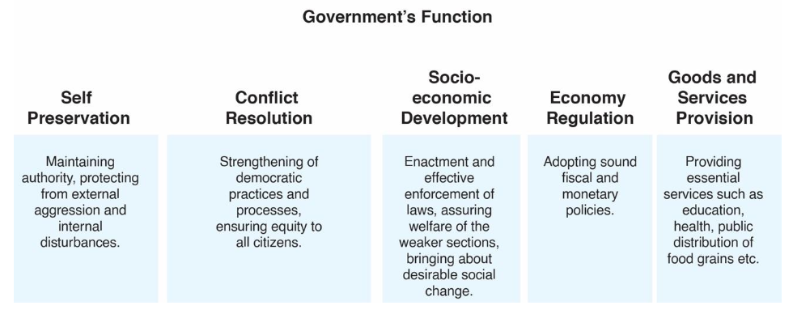
- Governance builds upon these functions by encompassing the broader processes, mechanisms, and interactions through which these governmental responsibilities are executed.
-
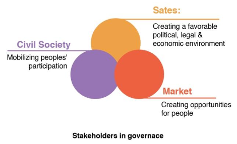
- A key distinction between government and governance is the involvement of institutions beyond the state in managing public affairs. While the state wields power and is the principal actor in government, governance involves the entire society in managing public affairs.
- 2. Governance
- Governance is a complex web of decision-making processes that involves various stakeholders, including government bodies, non-governmental organizations, local leaders, and citizens. It refers to the way decisions, rules, and actions are made and implemented to effectively manage a country or organization’s affairs.
- 2.1. Good Governance
- Good governance means managing and running an organisation or country in a fair, transparent, and effective way, ensuring that the needs and interests of the people are met.
- The United Nations Development Programme (UNDP), 1997, defined governance as “the exercise of economic, political and administrative authority to manage a country’s affairs at all levels. It comprises the mechanisms, processes and institutions, through which citizens and groups articulate their interests, exercise their legal rights, meet their obligations and mediate their differences.”
- Good governance is considered key to achieving sustainable development and human well-being. Empirical studies show that good governance, in contrast to democratization, has strong positive effects on measures of social trust, life satisfaction, peace and political legitimacy.
- UNDP recognizes eight core characteristics of good governance as mentioned in the table below:
-
| Principle | Details | Examples |
|---|
| Participation | Active involvement of all societal sectors in decision-making, enabled by timely information and free expression. | Public forums; civil society engagement in policy-making. |
| Rule of Law | State power guided by published, widely supported social values, with laws applying equally to all, including the state itself. | Independent judiciary; constitutional limits on executive power; laws consistent with human rights. |
| Transparency | Decision-making processes are open to scrutiny by society, with officials providing information and people having access to it. | Free press; publicly accessible government procedures and data. |
| Responsiveness | Institutions promptly and appropriately serve all stakeholders, protecting citizens' interests and addressing discrimination. | Citizen's charters with service timelines; mechanisms for grievance redressal. |
| Consensus Orientation | Systems aim for the best interests of society by considering diverse viewpoints to find common ground or compromise. | Public hearings; referendums; mediation structures for policy disputes. |
| Equity & Inclusiveness | All individuals, especially the vulnerable, have opportunities for well-being and are considered in policymaking. | Progressive taxation; subsidized essential services; policies benefiting the least advantaged. |
| Government Efficiency & Effectiveness | Institutions make optimal use of resources to deliver results meeting societal needs, with quality services and minimal waste. | Streamlined public services; professional bureaucracy; performance-based management. |
| Accountability | Individuals and institutions are answerable for their actions, especially concerning the public interest. | Checks and balances within government; citizens' ability to demand explanations; codes of conduct for officials. |
| Note: Many sources include “Strategic Vision” also as a 9th principle of Good Governance. A strategic vision refers to a clear, long-term plan that guides how a government aims to improve and manage its services and responsibilities. |
-
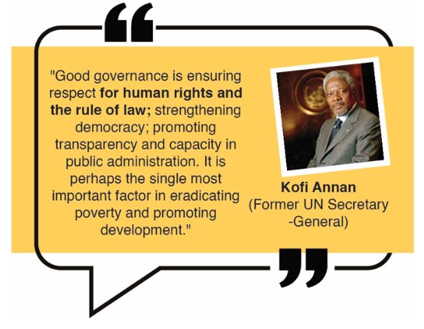
-
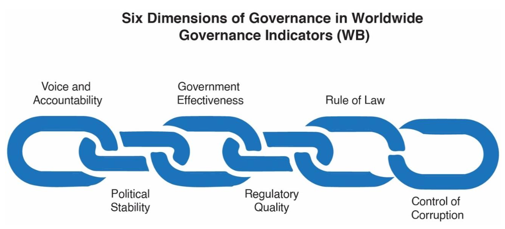
- Student Notes:
- Virtuous Cycle of Good Governance
-
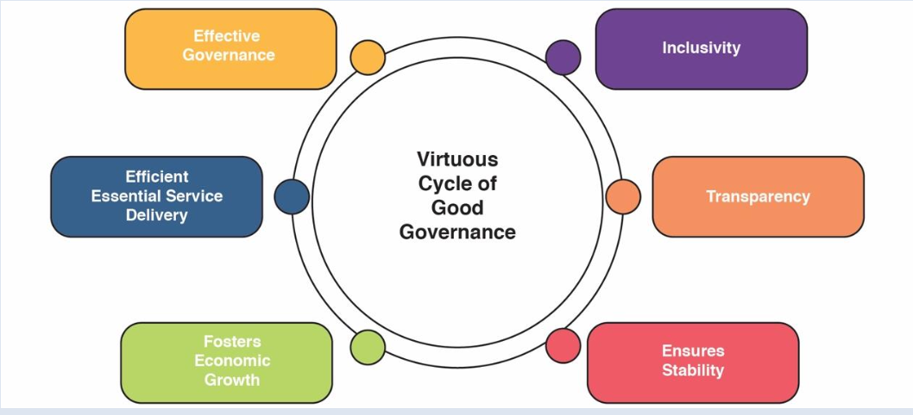
- A "virtuous cycle of good governance" describes a positive feedback loop where effective governance leads to increased legitimacy, which in turn fosters greater effectiveness and citizen trust. This cycle promotes development, strengthens democracy, and improves the overall well-being of society.
- However, the conversion of effective governance into legitimacy depends on several conditions: shared values, correct attribution of effectiveness, and governance actors’ capacity to transform legitimacy into impactful policies.
- 2.1.1. Pre-conditions & Tools for Good Governance
-
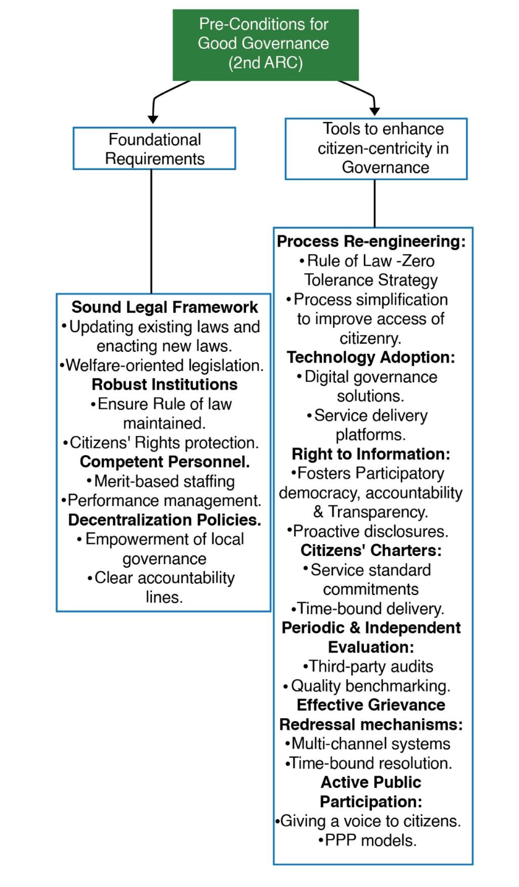
- The 2nd ARC identified several preconditions which must be fulfilled in order to make governance good and citizen centric.
- Having established this foundational knowledge of good governance, we will proceed to have a look at governance in India, followed by a detailed discussion of few key tools of good governance, such as social audit, citizens' charter, and e-governance.
-
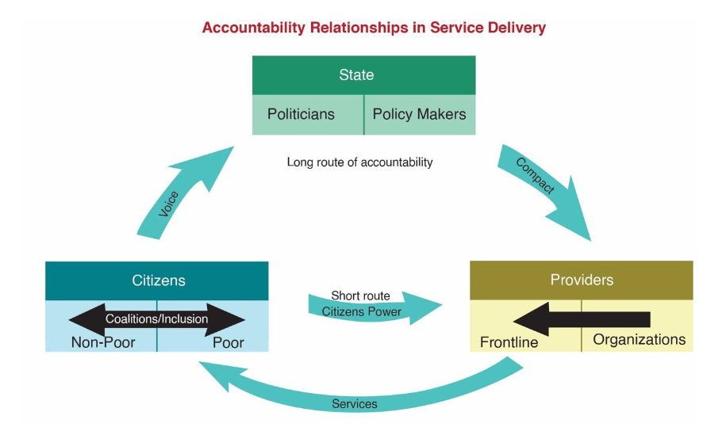
- 3. Governance in India
- Governance in India has evolved through distinct phases, from British colonial rule focused on consolidating power to post-independence nation-building emphasizing social justice and economic development. Post 1991 economic reforms that introduced a market-driven economy, developments such as decentralization, digitization etc. have led to greater transparency, increased citizen engagement, enhanced accessibility and efficiency of governance.
- 3.1. Various Dimensions of Governance
- The Department of Administrative Reforms and Public Grievances (DARPG) in its report “State of Governance – A framework of assessment” has broken down governance into five dimensions, viz., political, legal & judicial, administrative, economic and social & environmental dimensions.
-
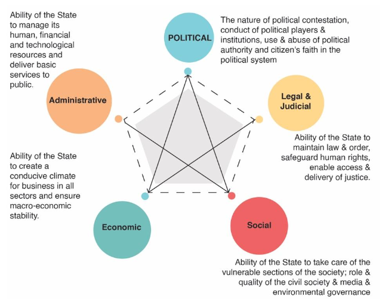
- 3.2. Governance Issues in India
- India faces a range of governance related issues in political, economic, administrative, social and legal domain. Some factors attributable to poor governance are:
-
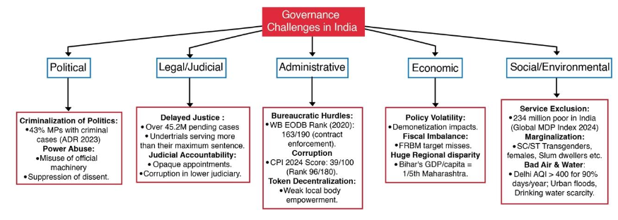
- 3.3. Barriers to Good Governance
- Barriers to good governance arise from the attitudes and actions of some government officials, weaknesses in institutional structures, and citizen-related factors. Although laws may be well-designed, poor implementation and insufficient institutional capacity often hinder their effective enforcement.
-
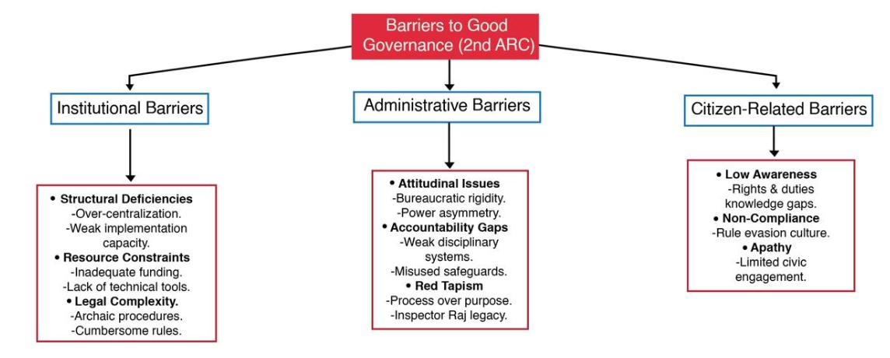
- Student Notes:
- Ethics in Governance
- Ethics is a set of standards that society places on itself and which helps guide behaviors, choices and actions. Corruption and the abuse of office is an important manifestation of the failure of ethics. Corruption and good governance have a two-way causal relationship with each other and feed off each other in a vicious circle.
-
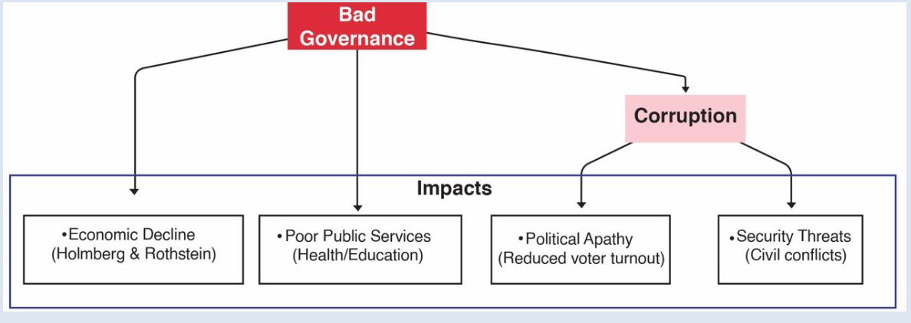
- 3.4. Good Governance Initiatives in India
-
- Good governance is an ongoing process aiming to serve the people better—this commitment to service underpins the core philosophy of a democratic government. To foster good governance, GoI has launched various initiatives:
-
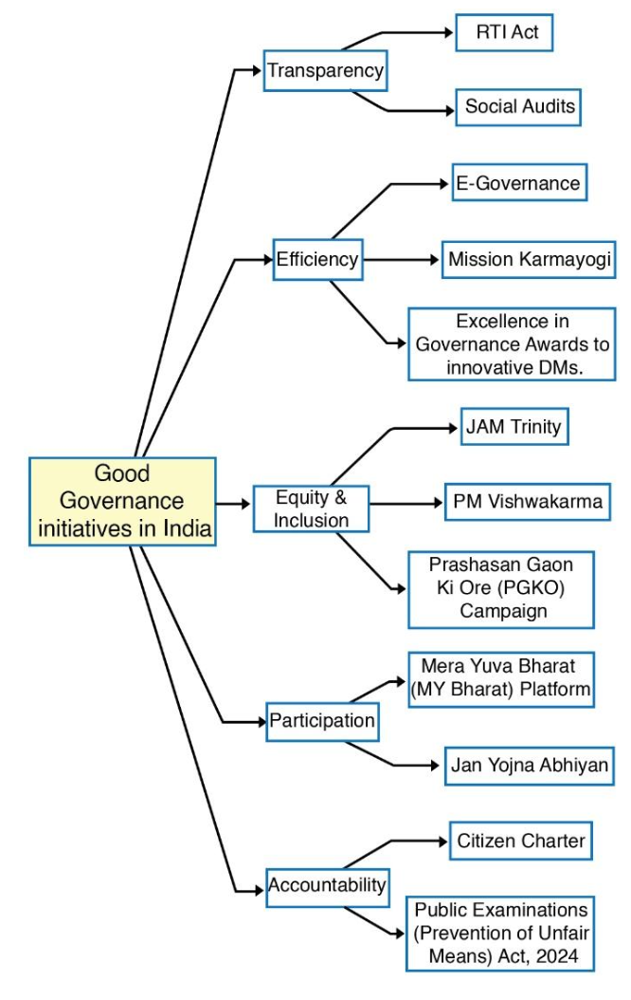
- Minimum Government, Maximum Governance (MGMG):
- Does shrinking government automatically leads to better governance?
- MGMG is a slogan that suggests limiting government size while enhancing its efficiency and accountability. It focuses on streamlined government structure that minimizes bureaucratic red tape.
- While developed countries like Scandinavia have large governments and strong economies, Asian nations generally have smaller governments. India’s government size has grown modestly compared to its GDP.
- In developing countries, the government plays an important role in providing public services and infrastructure. Focus should be on smart governance, strategic public expenditure, and placing the right people in positions.
- Letting Go is Part of Good Governance
- The Economic Survey 2023-24 emphasizes that letting go is crucial for good governance. As the world faces potential conflicts and challenges, the Indian state must focus on critical areas by reducing its grip on non-essential sectors.
- 4. Important Tools to Implement Good Governance (in Detail)
- The implementation of good governance can be achieved through various tools and mechanisms, including people’s participation, the Right to Information (RTI), the Sevottam model, Citizen Charters, and e-governance.
- 4.1. Enhancing People’s Participation
- People’s participation is a vital component of good governance, reflecting the principle that governance should be for the people, by the people, and with the people.
- Licensing, inspection, and compliance requirements continue to burden businesses, particularly small and medium enterprises. This excessive regulation stifles their growth and holds the country back.
- Active involvement of citizens in the decision-making process ensures that governance is not only representative but also responsive to the needs and aspirations of the community.
- This participatory approach enhances the legitimacy, accountability, and effectiveness of governance.
-
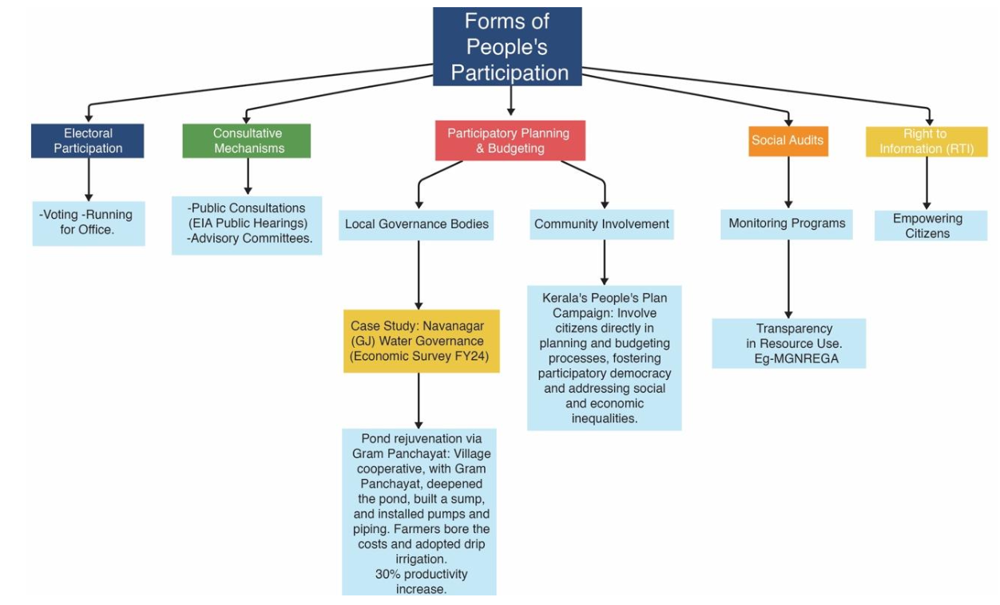
- Benefits of People’s Participation
- 1. Enhanced Legitimacy:
- When citizens are actively involved in the governance process, decisions made are more likely to be accepted and respected, thereby enhancing the legitimacy of the government.
- 2. Improved Accountability:
- Participation increases transparency and accountability as citizens can hold their representatives and public officials accountable for their actions and decisions.
- 3. Better Decision-Making:
- Incorporating diverse perspectives leads to more comprehensive and informed decision-making, ensuring that policies and programs are more effective and inclusive.
- 4. Empowerment:
- Participation empowers citizens by giving them a voice in governance and enabling them to influence decisions that affect their lives.
- This fosters a sense of ownership and responsibility towards community development.
- 5. Social Cohesion:
- Active participation promotes social cohesion by bringing together diverse groups to work towards common goals, fostering a sense of unity and collective effort.
- Challenges to People’s Participation
- 1. Lack of Awareness:
- Many citizens are unaware of their rights and the mechanisms available for participation, which limits their engagement in the governance process.
- 2. Socio-Economic Barriers:
- Socio-economic disparities can hinder participation, as marginalized and disadvantaged groups may lack the resources and opportunities to engage effectively.
- 3. Institutional Constraints:
- Bureaucratic red tape, lack of responsiveness, and inadequate infrastructure can pose significant barriers to effective citizen participation.
- 4. Political Will:
- Genuine participation requires political will and commitment from those in power to create and maintain inclusive and participatory governance mechanisms.
- Student Notes:
- Seven Sins of People’s Participation
- Andrea Cornwall’s "Seven Sins of Citizen Participation" highlight pitfalls where engagement is superficial, not genuine.
- These manifest across various development and governance initiatives:
- 1. Cosmetic Labeling- Participation as an illusion
- Example:
- Environmental Public Hearings (EPHs) for projects, often function as mere procedural formalities, with public concerns frequently ignored in final decisions.
- 2. Paternalism- Assuming "We Know Best."
- Example:
- Top-down development schemes like some urban slum redevelopment projects in cities like Mumbai or Delhi impose solutions, disregarding community needs and traditional wisdom, leading to poor adoption.
- 3. Politicization- Participation as a political tool
- Example:
- The functioning of Gram Sabhas can be manipulated by local power politics, influencing outcomes and resource allocation to favor dominant groups, as sometimes observed in social audits under MGNREGA.
- 4. Poor Representation- Marginalizing voices
- Example:
- Despite constitutional reservations, women and marginalized groups in Panchayati Raj Institutions often struggle to exert influence, a phenomenon sometimes termed "Sarpanch Pati."
- 5. Instrumentalization- Participation as a means to an end
- Example:
- Some NGOs organize community consultations primarily to meet funding checklist requirements for watershed development projects, rather than for genuine input.
- 6. Fragmentation- Uncoordinated efforts, diluted impact
- Example:
- In urban areas, multiple government departments (e.g., for water and sanitation) often initiate separate "participatory" consultations without adequate coordination, leading to confusion and ineffective outcomes.
- 7. Overloading- Participation fatigue and disengagement
- Example:
- ASHA workers face immense workloads and numerous responsibilities across health programs, leading to burnout and hindering their capacity for sustained community engagement.
- Addressing these sins requires a fundamental shift towards genuine inclusivity, transparency, and empowering citizens as active agents in their own development and governance.
- People’s participation is indispensable for achieving good governance. It ensures that governance is not only representative but also responsive, transparent, and accountable. A participatory approach to governance strengthens democracy and promotes sustainable development.
- 4.2. Sevottam Model
-
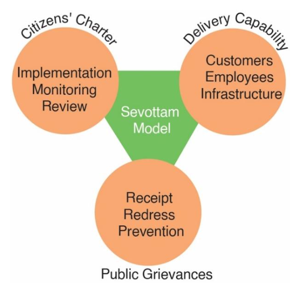
- The Sevottam model has been developed with objective of improving the quality of public service delivery in the country. It is a combination of two words Seva (service) and Uttam (excellence).
- It provides a framework for organizations to assess and improve the quality-of-service delivery to citizens. The model was suggested by 2nd ARC in its 12th report Citizen Centric administration.
- The model has three modules:
- Citizen Charter
- Public Grievance Redress mechanism
- Service Delivery Capability
-
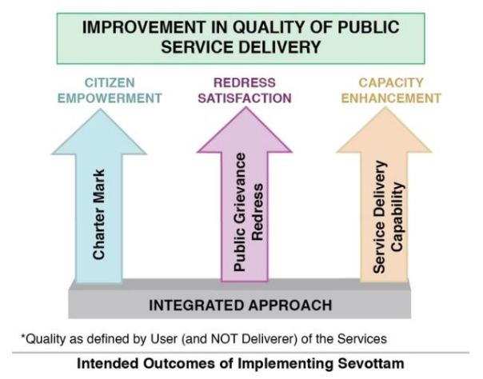
- Organizations adopting Sevottam model for service delivery need to comply with seven steps:
- 1. Define services and identify clients.
- 2. Set standards and norms for each service.
- 3. Develop capability to meet the set standards.
- 4. Perform to achieve the standards.
- 5. Monitor performance against the set standards.
- 6. Evaluate impact through an independent mechanism.
- 7. Continuous improvement based on monitoring and evaluation
- Department of Post (India Post)
- Implementation of Sevottam framework in the government departments was started in 2009.
- Significance of the Model
- It guides them through systematic initiatives for sustainable improvements in service delivery.
- The framework enables implementing organizations to undertake a systematic, credible and authenticated self-assessment (or ‘gap analysis’) for citizen-centric service delivery.
- Using this analysis, practical solutions are gradually and systematically incorporated into the organization’s day-to-day routine thereby ensuring sustainable results.
- Some success stories of Sevottam framework
- India Post, with its vast network of post offices, embraced Sevottam.
- They improved services like speed post, parcel delivery, and savings accounts.
- Indian Railways:
- The lifeline of India, Indian Railways, implemented Sevottam across various services—ticket booking, cleanliness, and passenger amenities.
- Passport Offices:
- Sevottam transformed passport services.
- Citizens now encounter streamlined processes, faster issuance, and improved customer support.
- 4.2.1. Citizen Charter
- A Citizens’ Charter is basically a set of commitments made by an organization regarding the standards of service which it delivers (2nd ARC).
- It is a public statement that defines the entitlements of citizens to a specific service, the standards of the service, the conditions to be met by users, and the remedies available to the latter in case of non-compliance of standards.
- Principles of Citizen Charter
- Originally, six principles of the Citizens Charter movement are framed. (Refer infographic)
-
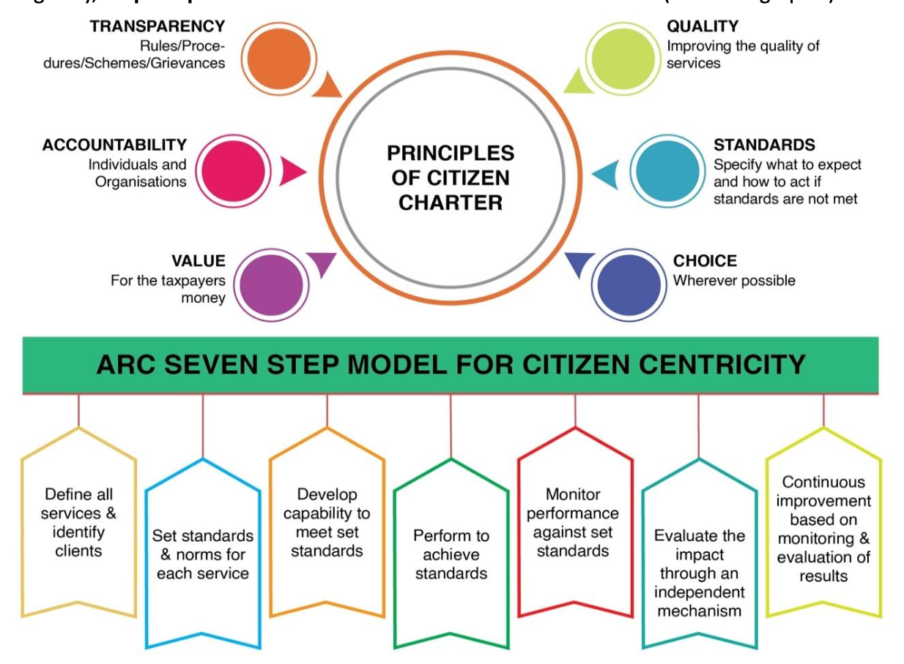
- Significance of Citizen Charter
- It is a tool to achieve good governance:
- It provides services to the people in a time bound manner, redressing their grievances and improving their lives.
- It enshrines the trust between the service provider and its users and empowers the citizen in relation to public service delivery.
-
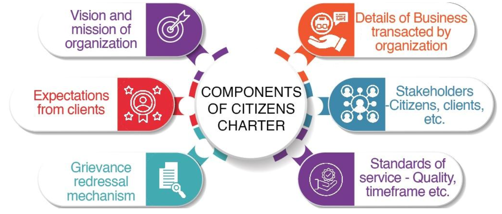
- Citizen Charter in India
- The concept was first articulated and implemented in the United Kingdom in 1991. India adopted citizen’s charter in 1997.
- The Department of Administrative Reforms and Public Grievances (DARPG) initiated the task of coordinating, formulating and operationalising Citizen's Charters.
- The Right of Citizens for Time Bound Delivery of Goods and Services and Redressal of their Grievances Bill, 2011 (Citizens Charter) seeks to create a mechanism to ensure timely delivery of goods and services to citizens. However, it lapsed due to the dissolution of the Lok Sabha in 2014.
- Challenges in Implementing Citizens Charter
-
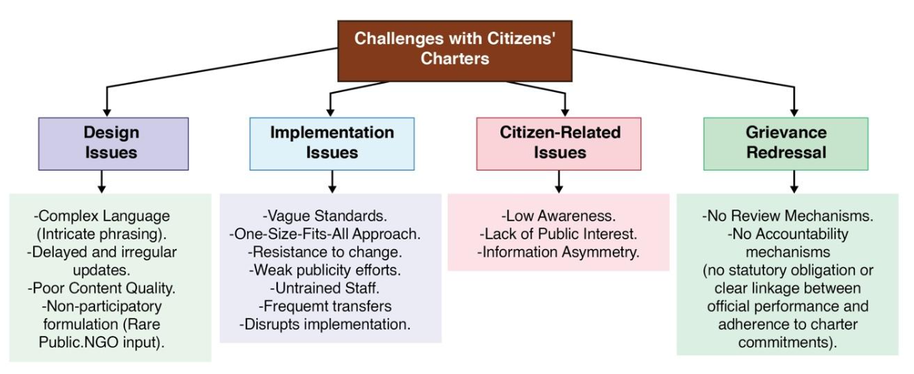
- Strengthening Citizen Charters
-
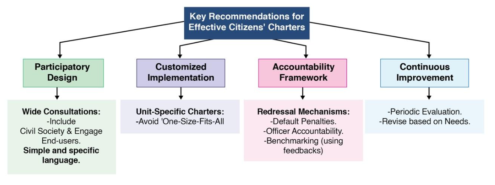
- 4.3. Social Accountability
- Social accountability refers to a wide range of actions and mechanisms that the citizens, communities, independent media and civil society organizations can use to hold public officials accountable.
-
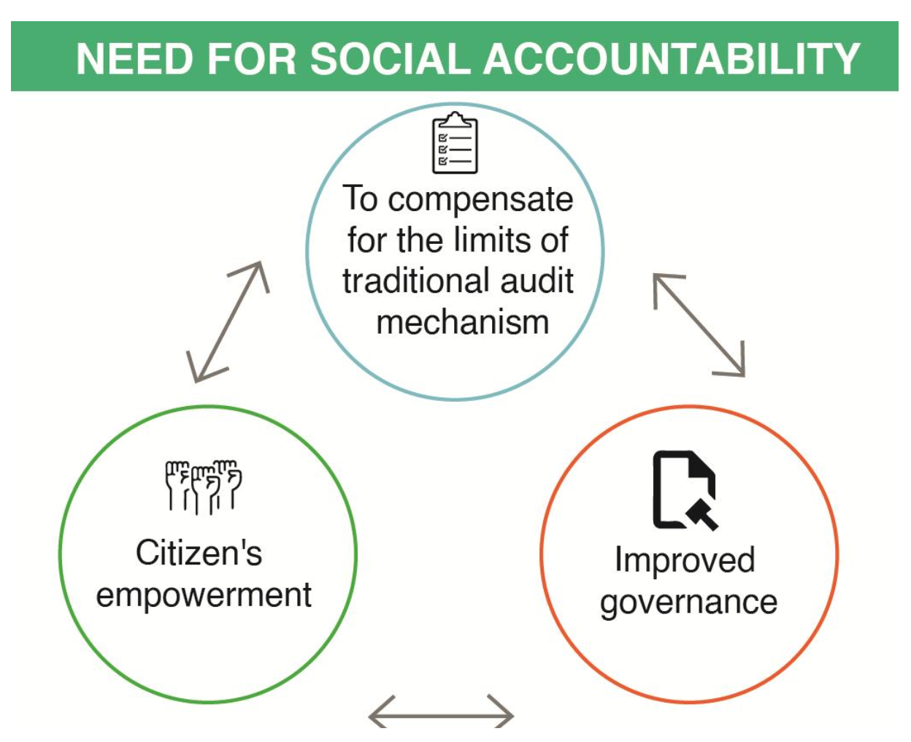
- Open Government
- OECD defines open government as
- the transparency of government actions,
- the accessibility of government services and information, and
- the responsiveness of government to new ideas, demands and needs.
- Common Tools of Social Accountability at Various Stages of Service Delivery Involves the Following:
-
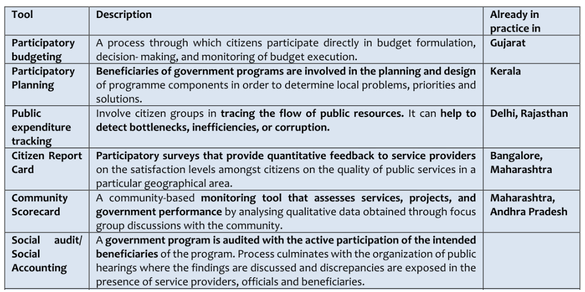
- Challenges and Vulnerabilities Inherent to Social Accountability Efforts
- Lack of Transparency:
- Withholding crucial information or providing inadequate information, such as budget documents, necessary for social accountability initiatives.
- Complacency on Part of Citizens:
- Citizens not speaking up against corruption and refusing to cooperate in social accountability efforts.
- Disruption by Powerful Vested Interests:
- Threats and coercion result in communities becoming hesitant to participate in social accountability initiatives.
- Lack of Effective Grievance Redressal:
- Strict and unfailing follow-up action on social accountability findings is lacking.
-
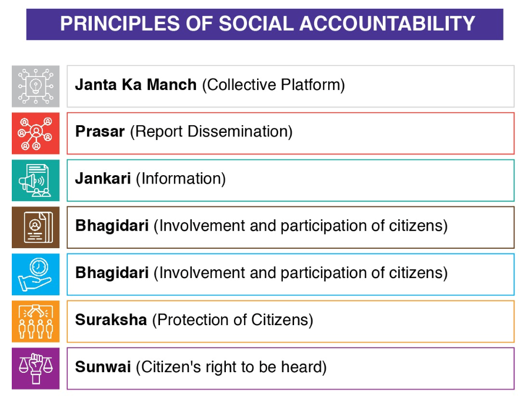
- Key Elements of Effective Social Accountability
- Effective Decentralization:
- Empower local governments, such as panchayats and municipalities, by providing them with the necessary resources and authority to implement schemes and programs based on the "principle of subsidiarity."
- Information and Awareness:
- Enhance Section 4 of the RTI Act to promote the proactive disclosure of relevant and accurate information.
- Capacity Building and Community Mobilization:
- Regularly train officials and citizens, and involve local NGOs, SHGs, and community groups to increase awareness and encourage participation in schemes.
- Mandatory Social Accountability:
- Require social audits in programs with significant public impact to ensure accountability.
- Student Notes:
- Supply-side Accountability and Demand-side Accountability:
-
| Aspect | Supply-side Accountability | Demand-side Accountability |
|---|
| Definition | Accountability upheld from Government | Accountability with People’s participation |
| Method | Traditional Method | Modern Method |
| Approach | Top-Down | Bottom-Up |
| Scope | Internal | External |
| Basis | Legal | Diagonal |
| Structure | Hierarchical | Horizontal |
| Examples | Legislature, CAG, CIC, CVC, SC | Social Audit, RTI, Citizens Charter |
- 3.3.1. Social Audit
- Social audit is a process where a public agency shares details of resources used in development initiatives with the public, often through public platforms. This process allows end users to scrutinize the effectiveness of developmental programs.
- Social audit serves as an instrument for the measurement of social accountability of an organization.
-
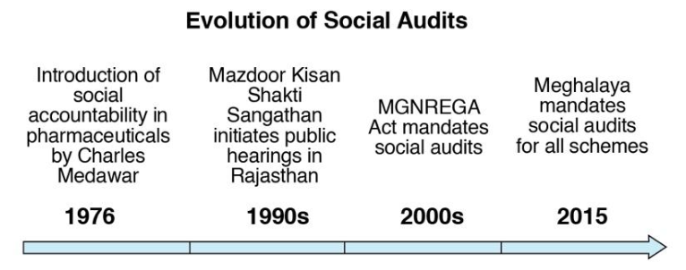
- 3.3.1.1. Significance of Social Audit
- Social audits empower citizens to actively monitor programs, ensuring transparency and better outcomes. Below are the key benefits of social audits:
- 1. Boosts Accountability and Transparency
- Social audits enhance both supply-side and demand-side accountability by scrutinizing fund utilization and program implementation. Public hearings (jan sunwais) and community-led reviews expose discrepancies, ensuring corrective action. For instance:
- In Rajasthan, social audits under NREGA uncovered fraud in wage payments and labor records, leading to fund recovery and stricter oversight.
- By making government data publicly accessible, social audits allow collective interrogation, reducing misuse of resources.
- 2. Strengthens Governance and Community Engagement
- While supply-side accountability relies on administrative checks, social audits strengthen demand-side accountability by empowering local communities through platforms like Gram Sabhas. Marginalized groups, especially women, gain a voice in monitoring entitlements and demanding transparency.
- 3. Enhances Program Design and Delivery
- Social audits bridge gaps between policy goals and ground realities, providing feedback to improve supply-side systems.
- For example:
- In Odisha, audits across 240 Gram Panchayats improved nutrition service delivery by identifying implementation flaws.
- States like Andhra Pradesh and Telangana scaled up audits, leading to better NREGA performance and expanded oversight in food security and juvenile justice.
- 4. Empowers Marginalized Groups
- By involving disadvantaged communities in monitoring, social audits ensure supply-side accountability is complemented by grassroots participation. Women and marginalized groups can challenge inefficiencies, ensuring equitable service delivery.
- 5. Delivers Tangible Improvements
- Observable outcomes include:
- Better public service delivery (e.g., schools opening on time, improved teacher attendance).
- Efficient grievance redressal through structured feedback mechanisms.
- Policy reforms aligning programs with community needs, strengthening both supply and demand-side accountability.
- Student Notes:
- CASE STUDY (2021)
- This study transformed the social audit format for MGNREGA into a social audit of education, and drew the following stakeholder perspectives on the effectiveness of social audits:
-
| Stakeholder | Perspectives |
|---|
| Community Members | In Rajasthan, communities recalled positive impacts on teacher punctuality and school timings.
In Delhi, initial community distrust was noted due to a lack of prior mobilization and skepticism about community-based organizations' effectiveness. |
| Government School Teachers | Experienced increased accountability, leading to more punctual school operations.
Faced interference from vested interests, including local Panchayat officials, who often sided with teachers. |
| Education Officials | Often hesitated to share information and data, providing delayed or incomplete responses, even to RTI requests.
Frontline auditors faced obstacles due to uneven responses from state governments to audit findings (e.g., in Telangana). |
| Social Audit Team (Activists/Facilitators) | Found the process challenging due to resistance but gained respect.
Played a crucial role in accessing and translating government information and documenting user testimonies. |
- The study concluded that building bridges between stakeholders and state actors, and working on the basis of collaboration rather than confrontation, play an important role in making social audits work.
- 3.3.1.2. Limitations of Social Audit
- Despite their importance, social audits come with several limitations that can hinder their comprehensive application and effectiveness:
- Localized Scope:
- Social audits are highly localized, focusing only on selected aspects and not broadly applicable across different regions or the entire population.
- It’s findings are context-specific and not universally applicable, as they reflect unique local conditions and stakeholder feedback specific to the area audited.
- Inconsistency and Ad Hoc Nature:
- These audits often occur sporadically and lack a formal, continuous monitoring process.
- Not Suitable for All Programs:
- Each program faces unique challenges, and social audits may not always be effective. For instance, adult literacy programs for migrants need migration data, which might not be covered in a typical social audit.
- Lack of Trained Auditors:
- There is a notable shortage of professionals trained specifically to conduct effective social audits as audit require a distinct set of skills and knowledge.
- Inaction on Audit Findings:
- Often, there is no subsequent action taken on the findings and recommendations of social audits, limiting their effectiveness and impact.
- Improving auditor training, broadening the audits' scope, and ensuring actions are taken based on findings are vital for enhancing their effectiveness. These improvements can make social audits stronger tools for community development and governance.
- 3.3.1.3. Recommendations for Strengthening Social Audit in India
-
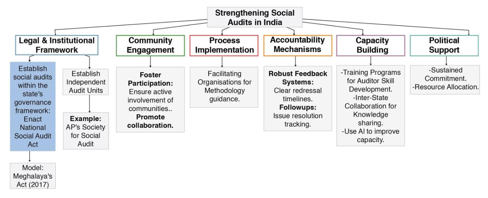
- These comprehensive steps aim to revitalize the social audit mechanism in India, ensuring it not only checks compliance but also drives meaningful improvements in governance and public trust.
- Social Audits Supplementing CAG Audits (CAG+1)
- Social audits can significantly enhance CAG audits by providing an outcome orientation that broadens the scope—referred to as CAG+1—focusing on performance outputs, and supplying vital data, reports, and findings.
- The CAG has directed all state Auditors General (AGs) to support the institutionalization of social audits.
- CAG has emphasized the importance of AGs assisting in strengthening social audits by providing inputs, advising social audit teams in gram sabhas, panchayats, and NGOs on report making, data collection, and ensuring policy implementation.
- Proposed dedicated portal at state level to manage all social audits, making it accessible to the CAG.
- This integrated approach, called CAG+1, is expected to significantly strengthen the auditing system.
- 4.4. E-Governance
- What is E-governance?
- According to the World Bank, “E-Governance refers to the use by government agencies of information technologies (such as Wide Area Networks, the Internet, and mobile computing) that have the ability to transform relations with citizens, businesses, and other arms of government”.
- The adoption of technology in governance facilitates more effective communication, informed decision-making and streamlined workflows. The framework of e-governance is often described through the "5C" model, as identified by Miglani in 2001, which includes:
- Computer
- Encompasses all necessary hardware and software for government functions.
- Connectivity
- Relates to systems that handle data transmission, including bandwidth and other information carriers.
- Content
- Refers to the information exchanged within the system among users.
- Consumer
- Includes all individuals and their proxies who access and utilize this content.
- Confidence Building
- Consists of measures aimed at enhancing citizen trust in the e-governance system, encouraging their engagement in e-transformation.
- Potential of E-governance
-
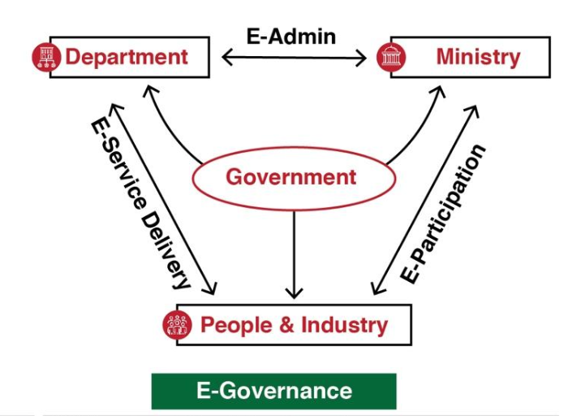
- Fast, Convenient and Cost-Effective Service Delivery:
- With the advent of e-Service delivery, the government can provide information and services at lesser costs, in reduced time and with greater convenience.
- Transparency, Accountability and Reduced Corruption:
- Dissemination of information improves the awareness levels of citizens about their rights and powers. It helps to reduce the discretionary powers of government officials and curtail corruption.
- Expanded Reach of Governance:
- Expansion of telephone network, spread of internet and strengthening of other communications infrastructure facilitated delivery of a number of public services.
- Empowering People Through Information:
- Increased accessibility to information has empowered the citizens and has enhanced their participation.
- Improve Interface with Business and Industry:
- Industrial development in India has been hampered in the past with complex procedures and bureaucratic delays. E-governance aims to expedite the various processes important for industrial development.
-
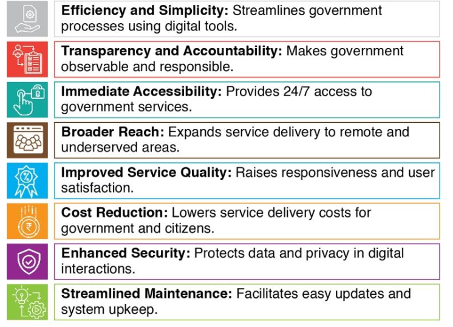
- Ease of Governance
- As per this idea, the main aim of e-governance should be ‘ease of governance’ leading to ‘ease of living’ of people. This is essential for the emergence of a ‘New India’.
- Ease of Governance essentially means Ease of access to governance where public policies are people centric with empathetic and responsive government mechanisms.
- E-governance and JAM Trinity
- The JAM Trinity, comprising Jan Dhan, Aadhaar, and Mobile connectivity, has revolutionized governance in India. Jan Dhan facilitates financial inclusion and direct benefits transfer, reducing leakages. Aadhaar provides unique IDs to authenticate identities and ensure benefits reach the right people. Mobile connectivity enables digital transactions and improves service delivery.
- “For every rupee targeted towards welfare and poverty alleviation only a fraction, 15 paise, reached the intended beneficiary.” Rajiv Gandhi (1980s).
-
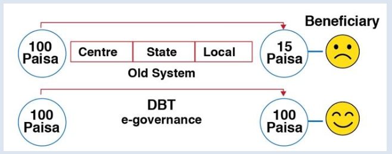
- “The amount that reaches the poor has reached 50%.” Montek Singh Ahluwalia (2007).
- This implementation of JAM trinity enhances efficiency and transparency. Direct Benefits Transfer (DBT) through Jan Dhan accounts reduces corruption and ensures timely subsidies. Aadhaar minimizes fraud, while mobile connectivity streamlines processes for easier access to services.
- 4.4.1. Models of E-governance
- There are various models for e-governance, each with distinct strength and usefulness.
- 1. Broadcasting Model
- Key Features:
- One-way dissemination of information from government to citizens. It’s a unidirectional communication model.
- Usefulness:
- Ideal for general public information (e.g., policy updates, public service announcements). E.g., Use in emergency alerts or public announcements where citizen feedback is unnecessary.
- Examples:
- Government websites, TV channels like Doordarshan, social media announcements.
- Limitations:
- No feedback loop—citizens cannot interact.
- 2. Critical Flow Model
- Key Features:
- Targeted communication to specific groups with priority-based distribution. The information is relevant and customized for the audience.
- Usefulness:
- Useful when communicating critical, timely data to specific stakeholder groups (e.g., healthcare professionals, pensioners, businesses).
- Examples:
- Emergency alerts, pension scheme updates, medical insurance details for doctors.
- Advantage:
- Focused and prioritized distribution of information.
- 3. Comparative Analysis Model
- Key Features:
- In this model, benchmarks are created and regional parameters are compared to it.
- Usefulness:
- Good for performance evaluations and benchmarking and comparison across jurisdictions.
- Examples:
- Dashboards comparing government performance, educational outcomes, health indicators.
- Advantages:
- Emphasizes performance metrics and data visualization for comparison.
- 4. E-Advocacy/Mobilization and Lobbying Model
- Key Features:
- This model creates online forums to gather public opinion on policies, fostering diverse virtual communities that share ideas, expertise, and resources through digital networking.
- Usefulness:
- Promotes public participation and engagement and policy change through citizen-driven initiatives. Useful for issues requiring citizen mobilization and collective action.
- Examples:
- Online petitions, social media campaigns, direct interactions with government decision-makers.
- 5. Interactive Services Model
- Key Features:
- Two-way communication, real-time interaction, and personalized services. Citizens can engage with government officials. It is a Government to Consumer to Government Model (G2C2G Model- See below).
- Usefulness:
- Customer-centric—best for personalized public services and real-time interaction. E.g., Civil consultations or service applications.
- Examples:
- Online consultations, interactive government portals for service requests.
- Advantages:
- Most interactive, enabling direct citizen-government interaction.
- E-governance can also be understood through the interaction between different stakeholders such as citizens, businesses, government agencies, and employees.
-
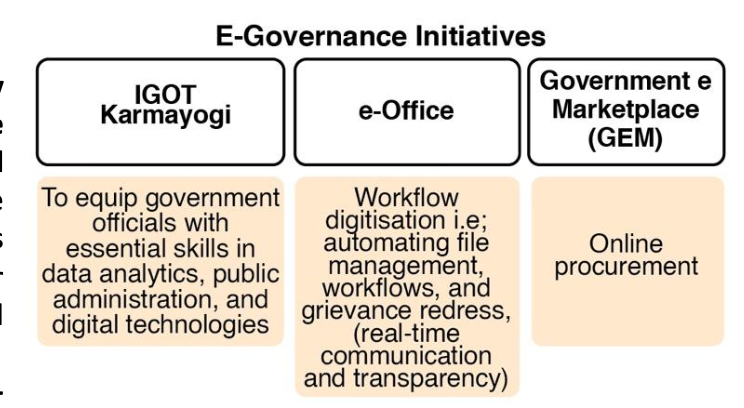
- 4.4.1.1. Stakeholder-Based Models of E-Governance: G2C, G2G, G2B, and G2E
-
| Models | Services/Information Shared | Initiatives/Examples |
|---|
| Government to Citizen (G2C) | Payment of online bills such as electricity, water, telephone bills etc.
Online registration of applications
Online copies of land-record
Online filling of complaints
Availability of any kind of online information etc. | Computerisation of Land Records
Bhoomi Project in Karnataka aimed at digitizing land records
Project FRIENDS in Kerala aimed at providing multiple public services through a single window system.
Digital Locker System etc. |
| Government to Government (G2G) | Government document exchange
Finance and budget management etc. | Khajane Project in Karnataka aimed at streamlining and automating the state’s treasury operations. |
| Government to Business (G2B) | Tax collection
Patent approvals and rejections
Bill and penalty payments
Information and rule sharing etc. | e-Procurement Project in Andhra Pradesh and Gujarat
SWIFT (Single Window Interface for Facilitating Trade) initiative to streamline and simplify international trade processes. etc. |
| Government to Employees (G2E) | Data submissions (attendance, employee records)
Complaint filing
Sharing rules and regulations
Payment and work records etc. | Mission Karmayogi/ Integrated Government Online Training-iGOT Karmayogi platform etc. |
- 4.4.2. Recent Development in India Regarding E-governance
- 4.4.2.1. Digital India Mission
- It was launched by the Government of India in 2015.
- It aims to transform India into a digitally empowered society and knowledge economy.
- This initiative focuses on three core areas: creating digital infrastructure, delivering services digitally, and promoting digital literacy.
- A key component of the mission is the Common Service Centres (CSCs), which provide essential government services and digital access to citizens in rural and underserved areas.
- 4.4.2.2. NeGP 2.0 or E-Kranti (Electronic Delivery of Services):
- It aims to provide electronic delivery of services to citizens in various sectors such as healthcare, education, agriculture, and justice.
- For instance, e-Hospital services allow online appointment bookings and access to medical records.
- Enhancements in Governance: NeGP vs. NeGP 2.0 (e-Kranti)
- The National e-Governance Plan (NeGP), launched in 2006, aimed to make government services accessible electronically but faced issues like lack of needs analysis, interoperability problems, and adapting to new technologies.
- NeGP 2.0 (e-Kranti), introduced in March 2015 under Digital India, addresses these limitations to enhance governance. Here’s how:
- Integrated Approach
- Combines cloud computing, mobile platforms, and geospatial systems for better coordination and resource use.
- Outcome-Oriented
- Focuses on achieving real impacts rather than just completing tasks, ensuring initiatives are effective and beneficial.
- Fast and Agile
- Adapts quickly to technological changes, allowing for faster implementation and efficient service delivery.
- NeGP 2.0 (e-Kranti) significantly advances e-governance by integrating systems, focusing on real outcomes, and being agile, thus improving governance and service delivery.
- 4.4.2.3. BHIM (Bharat Interface for Money) UPI (Unified Payments Interface):
- The BHIM UPI has revolutionized digital payments in India, making transactions quick, easy, and secure.
- The UPI system has seen exponential growth, with billions of transactions processed monthly, reflecting the country’s shift towards a cashless economy.
- 4.4.2.4. India Stack:
- A set of APIs (Application Programming Interfaces) that allows governments, businesses, startups, and developers to utilize India’s digital infrastructure to deliver services.
- Components like Aadhaar, eKYC, eSign, and DigiLocker form the backbone of IndiaStack.
- These components streamline service delivery, reduce paperwork, and enhance accessibility for citizens. By leveraging this digital infrastructure, governments, businesses, and developers can provide faster, more reliable public services.
- National Data Governance Framework Policy (NDGFP)
- The NDGFP is an initiative by the Government of India aimed at creating a robust framework for managing and utilising data across various sectors.
- Launched in 2022, the policy seeks to promote the ethical use of data while ensuring privacy, security, and transparency.
- Key Objectives
- 1. Data Accessibility:
- To enhance the availability and accessibility of data for public good, ensuring that it is used effectively for governance and decision-making.
- 2. Data Privacy and Security:
- To establish guidelines for protecting sensitive data, ensuring compliance with privacy laws, and safeguarding citizens' information.
- 3. Interoperability:
- To promote interoperability among different data systems, facilitating seamless data exchange and integration across government departments and agencies.
- 4. Encouraging Innovation:
- To foster a data-driven ecosystem that encourages research, innovation, and the development of new technologies, enhancing service delivery and efficiency.
- 5. Capacity Building:
- To build institutional capacity and expertise in data management, enabling government officials and agencies to leverage data effectively.
- Key Components
- Data Sharing and Collaboration:
- Promoting collaboration among government departments, private entities, and research institutions to create a cohesive data ecosystem.
- Open Data Initiatives:
- Encouraging the release of non-sensitive government data to the public to promote transparency and stimulate innovation.
- Data Governance Bodies:
- Establishing bodies and frameworks for overseeing data governance practices, ensuring compliance with the policy’s objectives.
- Digital Public Infrastructure (DPI)
- Digital Public Infrastructure (DPI) refers to the foundational digital systems and platforms that support the delivery of public services and facilitate governance in a digital environment. DPI encompasses a range of technologies and frameworks designed to enhance accessibility, efficiency, and transparency in government operations.
- How DPI Helps in E-Governance:
- Core Digital Systems:
- Identity management (e.g., Aadhaar), payment systems (e.g., UPI), and digital storage solutions (e.g., DigiLocker) form the backbone of e-governance, enabling seamless service delivery.
- Interoperability Frameworks:
- Standards and protocols ensure different government systems can communicate and exchange data efficiently, improving coordination and reducing redundancy.
- Open Data Initiatives:
- Platforms that make non-sensitive government data available to the public foster transparency, encourage innovation, and enable informed decision-making.
- User-Centric Services:
- Digital platforms provide easy access to government services, ensuring citizens can interact effectively with the government, enhancing user experience and satisfaction.
- Advancing Data Governance in India: DGQI 2.0
- DGQI (Data Governance Quality Index) is an initiative by the Government of India to assess the data management practices of various Ministries and Departments. It aims to improve data quality, promote healthy competition, and encourage the adoption of best practices for better governance.
- What is DGQI 2.0?
-
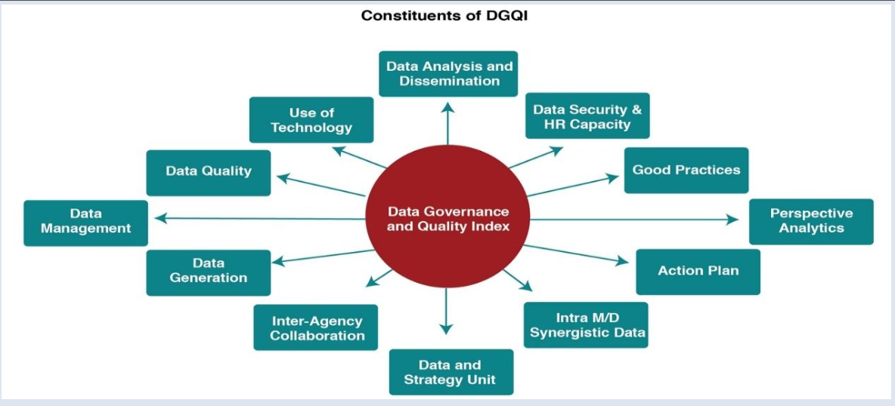
- DGQI 2.0 is the upgraded version of the original DGQI. It enhances the framework by:
- 1. Comprehensive Evaluation:
- It includes more detailed criteria for assessing data preparedness and management practices.
- 2. Interoperability Focus:
- Emphasizes improving data sharing and interoperability across different government departments.
- 3. Actionable Insights:
- Provides more actionable recommendations for improving data governance.
- 4. Benchmarking Best Practices:
- Encourages peer learning and the adoption of best practices from top-performing departments.
- IndEA 2.0: Enhancing Digital Governance in India
- IndEA 2.0 (India Enterprise Architecture) is a framework designed to improve digital governance by creating a coherent structure for government IT systems.
- Key Features of IndEA 2.0:
- Unified Architecture:
- Provides a cohesive structure for government IT systems, ensuring all components work together seamlessly.
- Interoperability:
- Establishes standards and protocols that enable different government systems to communicate and share data efficiently.
- Efficiency:
- Optimizes resource utilization, reducing duplication of efforts and ensuring cost-effective solutions.
- Enhanced Service Delivery:
- Focuses on improving the quality and accessibility of government services to citizens through integrated digital platforms.
- 4.4.3. Challenges
- There are a large number of obstacles in implementation of e-Governance in India. These can be categorized under the following:
-
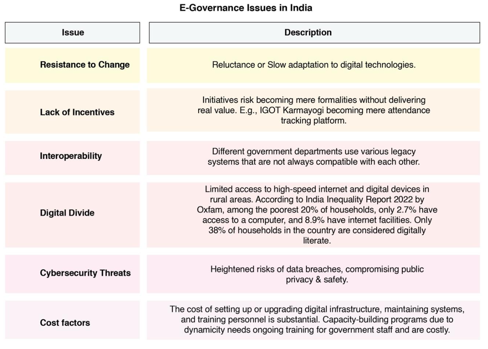
- Addressing these challenges requires a multi-faceted approach.
- 4.4.4. Recommendations on E-governance (2nd ARC)
-
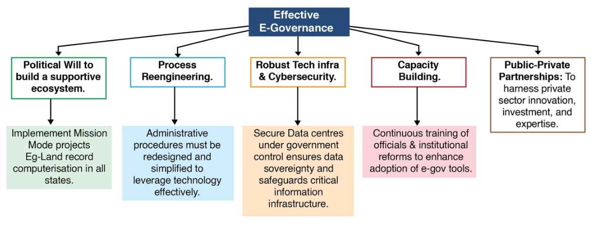
- Student Notes:
- AI & ML for E-Governance
- The incorporation of AI and ML into e-governance presents significant opportunities for revolutionizing administrative procedures and improving efficiency of public service delivery, improving citizen services, and promoting transparency in India.
-
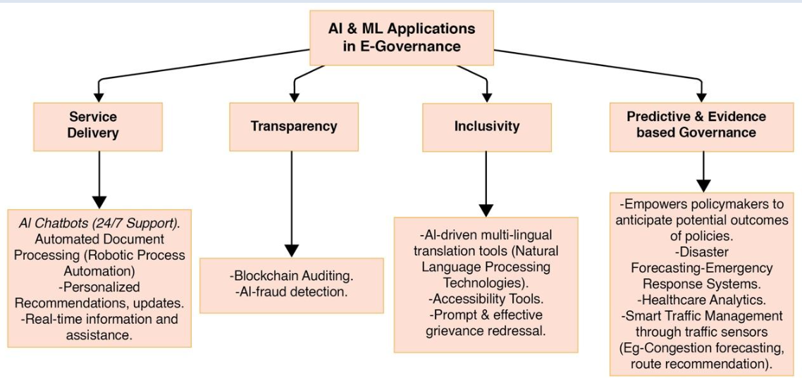
- However, AI-led e-governance is not without its challenges.
-
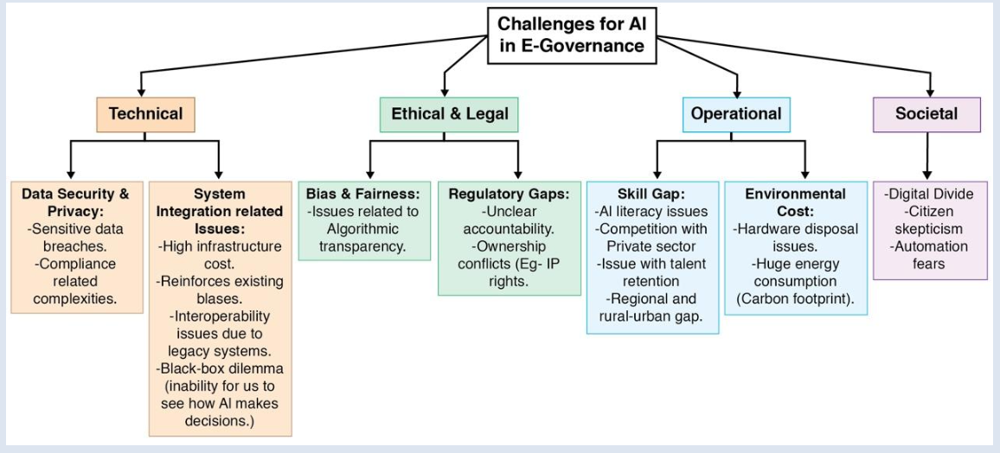
- AI integration in e-governance demands secure data exchange and robust electronic infrastructure. With focused efforts and strategic investments, India can emerge as a global leader in leveraging advanced technology for public welfare.
- With robust infrastructure, targeted training, and a commitment to building a dynamic workforce, India can set a global benchmark for digital governance. The key lies in ensuring that every employee, regardless of background, rank, or location, is equipped to excel in the digital age.
- E-Governance is More Than ‘Use of Technology’ in Governance
- Effective e-governance requires attention to both technological innovation and the redesign of administrative processes.
- Use Value of Information:
- Value of information lies in its capacity to empower citizens, improve transparency, and strengthen accountability mechanisms. Merely digitizing services without ensuring that information is accurate, timely, and accessible fails to harness the transformative potential of e-governance.
- Multifarious Interactions:
- Multifarious interactions are essential for effective e-governance. These occur not only between government and citizens but also involve civil society, private sectors, and local communities. Such engagement promotes participatory governance by enabling feedback, grievance redressal, and collaborative policymaking, thereby enhancing transparency and reducing corruption.
- Institutional Reforms:
- A people-first approach is fundamental to good governance, as technology alone has limited impact in rigid administrative systems. The potential of new technologies remains untapped when outdated procedures and practices are strictly enforced and misused to target officials selectively. Such controls are often exploited by corrupt actors for personal gain, hindering effectiveness of e-governance.
- Ease of Governance:
- The main aim of e-governance should be ‘ease of governance’ leading to ‘ease of living’ of people. When administrative procedures are easy to understand and navigate, citizens and officials can engage with digital platforms effectively, leading to higher adoption rates. Simplified governance reduces bureaucratic delays, minimizes corruption opportunities, and enhances transparency. This creates a more responsive system.
- E-governance is a holistic approach that integrates technology, effective information use, and multi-stakeholder interactions to create a transparent, accountable, and inclusive governance framework.
- Chapter 2 - ROLE OF CIVIL SERVICES IN A DEMOCRACY
- 1. Civil Services
- Civil service refers to the body of government officials who are employed in civil occupations that are neither political nor judicial. Often called the "Steel Frame of India”, they provide stability and ensure smooth transitions between governments.
- Civil services are essential in public administration, significantly influencing a country’s development and progress by ensuring efficient operations. The development, upliftment and progress of society depend upon the efficient functioning of civil services.
-
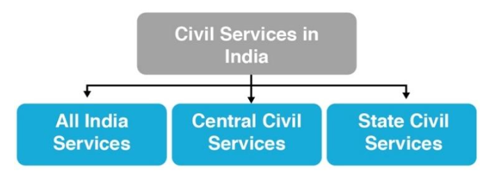
- Civil servants operate within an impersonal system, governed by specific rules and a clear hierarchy.
-
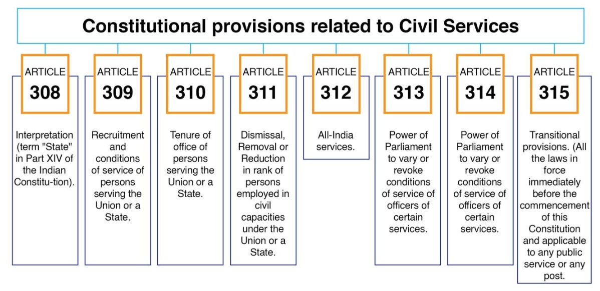
- Student Notes:
- 1.1. Role of Civil Services
- Civil servants play a crucial role as agents of change in societal transformation by implementing policies, driving innovation, engaging with communities, managing crises, promoting social equity, fostering sustainable development, and building institutional capacity. Their key roles include:
-
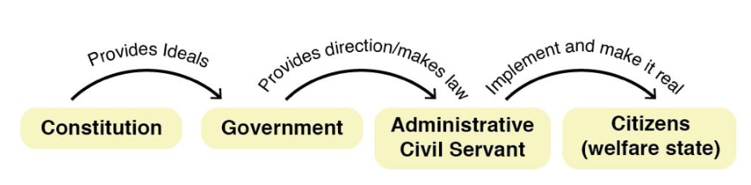
- a. Facilitators of Democratic Processes and Good Governance:
- Conduct free and fair elections and ensure smooth transfer of power at Centre and States.
- Maintain uninterrupted administration during political instability (e.g., President’s Rule).
- Uphold loyalty to the people, Constitution, and nation, not to any political party.
- Protect unity, integrity, and constitutional values; have the courage to say “no” if laws or conventions are compromised.
- b. Policy Advisors to the Government:
- Serve as repositories of institutional knowledge and provide expert advice in policy-making.
- Undertake research and assess financial, administrative, and legal implications of policies.
- Highlight consequences of flawed policies and provide inputs for effective decision-making.
- c. Policy Implementers and Administrative Leaders:
- Design policies and ensure their effective implementation, including Sustainable Development Goals (SDGs).
- Provide leadership at senior levels to monitor and guide program execution.
- Execute government programs, lay down laws, rules, and regulations.
- Facilitate delivery of essential services and coordinate relief operations.
- d. Maintainers of Stability and Continuity in Governance:
- Act as stabilizing forces during political crises or administrative vacuums.
- Rise above partisan conflicts to resolve crises and ensure smooth governance.
- e. Regulators and Facilitators in a Market Economy:
- Transition from service providers to facilitators and regulators in a liberalised economy.
- Build institutional capacity through domain expertise to regulate markets effectively and protect public interests.
- f. Leaders with Moral Authority:
- Hold power, prestige, and social status; expected to lead with professionalism and ethical standards.
- Set examples that influence government and private sector behavior.
- Prioritize public welfare and act in a non-partisan manner.
-
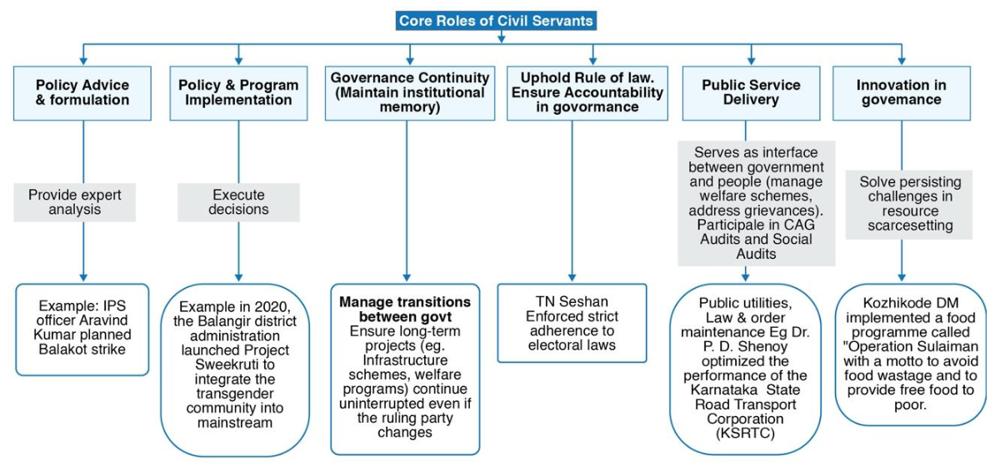
- The competency framework for the Civil Services under Mission Karmayogi envisages to prepare civil servants for the future by making them more constructive, enabling, energetic, innovative, proactive, professional, progressive, transparent and technology enabled.
- Characteristics of Indian Civil Services
- Indian Civil Services possess following characteristics. However, these traits have evolved over time to ensure stability, fairness, and effectiveness in administration.
-
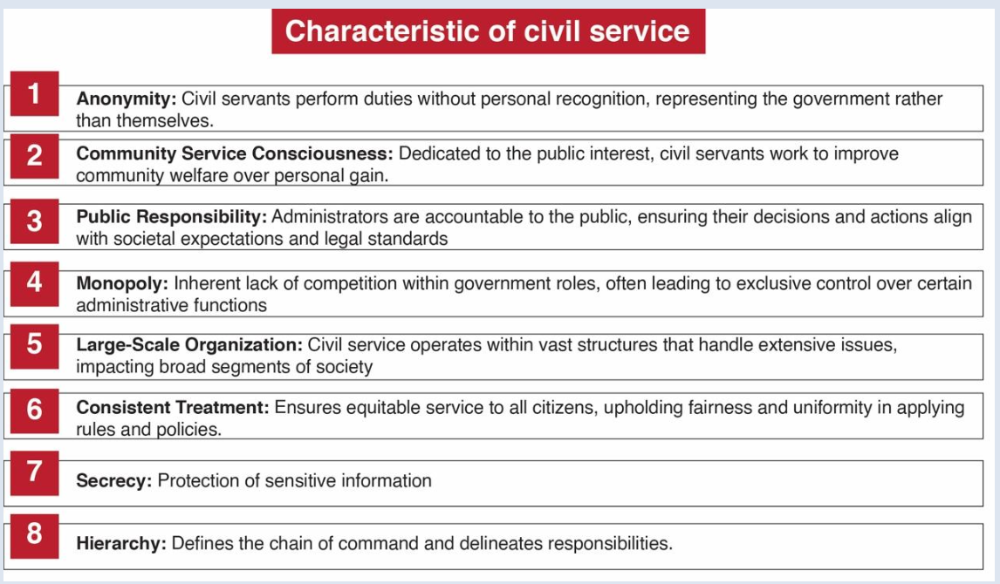
- 1.2. Evolution of Civil Services in India
-
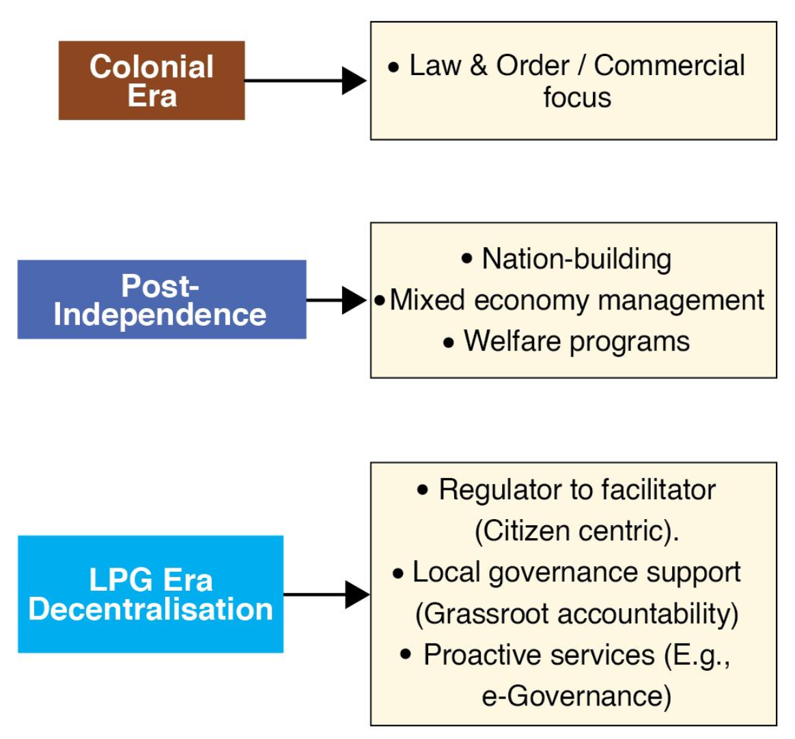
- 1.3. Issues with Civil Services in India
- Various scholars and committees, including the Second Administrative Reforms Commission, have highlighted criticisms of the civil services' performance as follows:
- Erosion of Neutrality, Political Interference, and Subjugation to Political Executive:
- Bureaucrats are increasingly exhibiting political bias in critical functions. This is both a cause and effect of increasing political interference in postings, transfers, and other administrative aspects. Senior civil servants are perceived as being subjugated by the political leadership.
- E.g., despite allegations of misconduct and criticism for partisan behaviour, IPS officer Rajeev Mishra was promoted by the West Bengal government. Also, Civil servants in Delhi often find themselves caught between conflicting authorities (Centre and UT).
- Lack of Specialised Expertise (Generalist vs. Specialist):
- Career bureaucrats, mainly generalists, often lack the specialized technical expertise required for complex government functions, raising doubts about an IAS officer's ability to manage diverse portfolios like civil aviation, power, or defense effectively.
- Early single examination rank heavily influences career trajectories, overshadowing actual job performance and expertise.
- Corruption and Incompetence:
- The civil service system is affected by significant corruption and incompetence at various levels, which frequently goes unpunished.
- Example: "Puja Khedkar" case as instance of fraud and procedural misuse. Enforcement Directorate Assistant Director Shekhar Kumar accused of demanding a ₹2 crore bribe to halt an investigation.
- Insufficient Public Engagement, Culture of Superiority and ‘Mai Baap’ Attitude (Colonial Overhang):
- Lack of stringent penalties for misconduct. E.g., 2 IAS officers involved in ordering a stadium to be cleared for walking a pet dog faced no reduction in status or salary, only transfers.
- Results in policies less aligned with ground realities, leading to implementation challenges and public dissatisfaction.
- Demoralization and Fear of Politicization:
- Moves like lateral entry threaten serving officers' hegemony and are seen as potentially compromising the neutrality and impartiality of the civil service by inducting political loyalists.
- Structural Rigidity, Red Tape, Slow Changes:
- Inflexible structures cause delays. E.g., During the 2018 Kerala floods, bureaucratic delays hindered a timely and effective response.
- Lateral Entry Challenges
- Lack of clear frameworks, concerns about transparency, potential friction with career bureaucrats, and risk of politicisation of bureaucracy (lateral entry may potentially compromise the neutrality and impartiality of the civil service by inducting political loyalists).
- 1.3.1. Recent Issues Related to Civil Services
- Social Media Popularity of Civil Servants and the Price of Lost Anonymity
- The traditional Westminster model of bureaucracy, which India largely adopted, emphasizes the principle of civil service anonymity. A growing trend of civil servants becoming public figures, actively engaging with media and social media, is reshaping perceptions and potentially impacting the core tenets of governance.
- Reasons
-
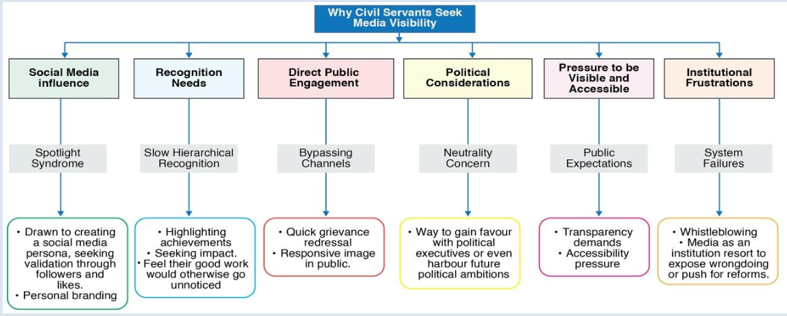
- Impact
-
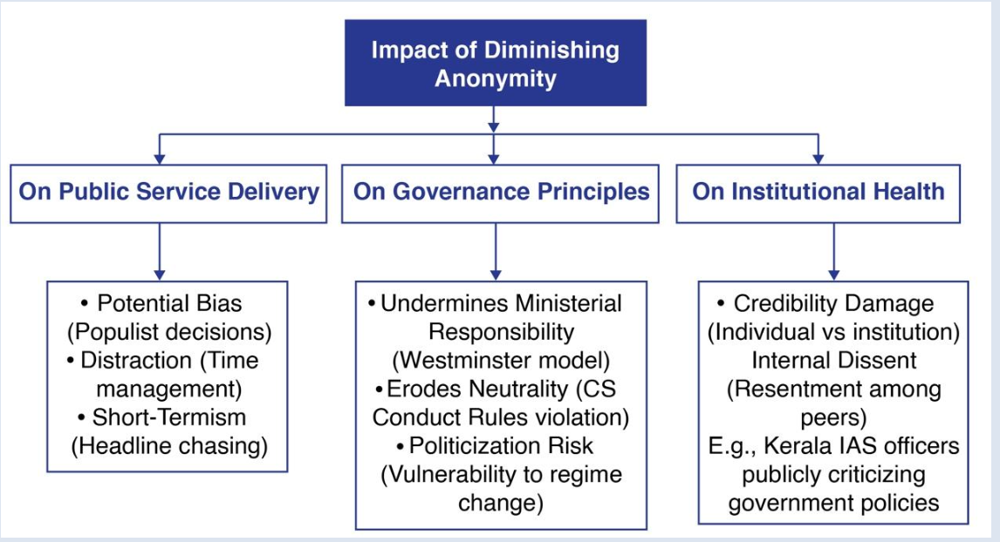
- Use of Social Media in Innovative Service Delivery & Governance
- Many officers use Twitter, Facebook, and other platforms to reach out to people and hear their problems. Social media helps officers for rapid grievance redressal, spreading public awareness, enhancing transparency, promoting community engagement, and sharing real-time updates on government schemes and services.
- 1. Prashant Nair, IAS Officer (Kozhikode, Kerala):
- Used Facebook to mobilize community efforts for cleaning a 14-acre pond.
- 2. Awanish Sharan, IAS Officer (Chhattisgarh):
- Introduced "Sangi Express" bike ambulances for remote tribal areas. Social media played a crucial role in spreading awareness.
- As individual officers increasingly become public figures through media exposure and social platforms, the traditional institutional voice through official spokepersons risks being overshadowed by personal opinions and individual identities. This shift can undermine the collective neutrality and impartiality that civil services are meant to uphold.
- Transfer as a Tool for Political Control of Bureaucracy
- Despite recruitment through exams and some protections, civil servants remain vulnerable to arbitrary transfers. Politicians’ use of transfers to control bureaucracy undermines bureaucratic autonomy, fosters corruption, and weakens effective governance.
-
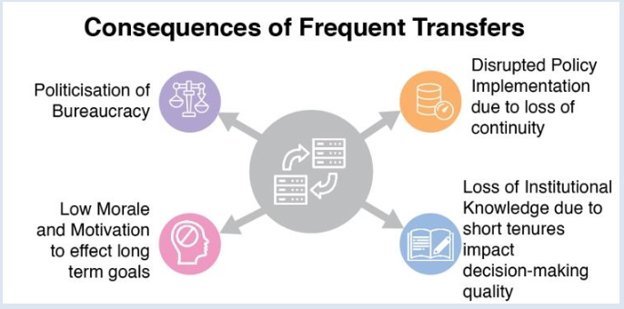
- Politicians leverage civil servants’ strong preference to be posted near their hometowns or in urban, desirable locations.
- The fear of being transferred to less desirable or remote postings is used as a threat to compel civil servants to comply with political demands. Thus, officers and District Collectors often remain aligned with local Ministers to retain their positions for extended periods.
- For example, a 2024 working paper “Bureaucrat Assignments as Instruments of Political Control: Evidence from Land Administration Officials in India” pointed out that Politicians pressure tehsildars to facilitate land conversions benefiting real-estate developers. Developers in turn, provide financial kickbacks to politicians in return.
- Role of Civil Services Board (CSBs)
-
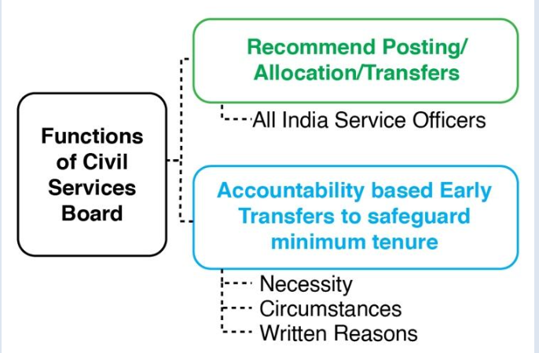
- Supreme Court in T.S.R. Subramanian case directed states to constitute CSBs to act as final authority to ensure fair postings for all officers. CSB is made up of high-ranking service members who are professionals in their domains, with the cabinet secretary at the national level and the chief secretary at the state level, who serve as the state government’s guide and advisor.
- T.S.R. Subramanian Case Judgement
- Establish CSB to guide on transfers, postings, and disciplinary actions.
- Assurance of minimum tenure for civil servants to ensure efficiency.
- Government must provide justifications when choosing to dissent from the CSB’s recommendation.
- Civil servants to respond only to recorded instructions, except in exceptional circumstances, to prevent favoritism and corruption. Oral and verbal instructions, if not recorded, goes against spirit of RTI Act.
- Issues:
-
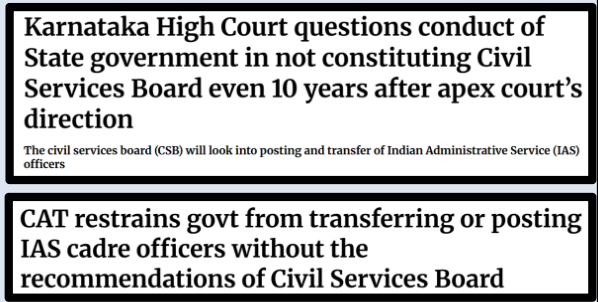
- Government’s Resistance to Consult CSBs:
- Recommendations can be amended, modified, or rejected by governments. Government contend that the IAS Cadre Rules, 1954 (2014 & 2016 amendment) don’t mandate that all transfers and postings of IAS officers shall be only on the recommendations of the Civil Services Board. Even as per the Rules, the recommendations of the Civil Services Board may be required only if the IAS officer is transferred prematurely before completion of the period of service in a post.
- Using Covert Methods:
- If the political leadership cannot directly transfer an officer who resists undue influence, they may resort to implicating the officer in false cases to undermine and remove them, highlighting how restricting political control through bodies like the Civil Services Board can sometimes lead to more covert and damaging tactics.
- Conflict of Interests Due to Bureaucrats in Boards:
- This may
- To maintain a harmonious balance between the political and permanent executive, the autonomy of career bureaucrats is essential.
- Why Public Perception of Civil Services Matter?
- A positive public perception of a transparent, accountable, and committed civil service is the bedrock upon which citizens' trust in governance is built and sustained. It fosters a virtuous cycle that strengthens democratic institutions and processes.
- Enhances Legitimacy and Trust:
- A fair and effective civil service boosts government legitimacy by inspiring public confidence through transparent recruitment and grievance redressal.
- Promotes Accountability and Reduces Corruption:
- Accountability and transparency deter corruption; tools like the RTI Act and CVC strengthen integrity and public vigilance.
- Improves Policy Implementation:
- Competent and committed civil servants encourage citizen cooperation, leading to better outcomes in programs requiring citizens cooperation. E.g., Swachh Bharat Abhiyaan.
-
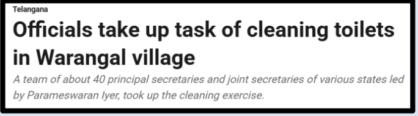
- Strengthens Democratic Institutions:
- Neutral and impartial civil servants uphold the Rule of Law and democratic stability, ensuring governance continuity despite political changes.
- Fosters Citizen Engagement:
- Positive perception motivates active citizen participation in governance, enhancing responsive and collaborative governance.
- E.g., LG Mulaqat Scheme of LG Manoj Kumar Sinha in J&K.
-
- Serves as Role Model:
- Civil servants exemplifying integrity and professionalism cultivate civic virtues and ethical conduct in citizenry.
- E.g., former Tamil Nadu DGP V.R. Lakshminarayanan was known for his political nonpartisanship, integrity and efficiency.
- Ensures Stability and Continuity:
- The permanent civil service framework guarantees administrative stability and sustained development beyond electoral cycles.
-
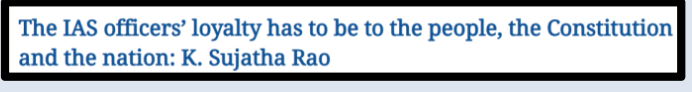
- In essence, a civil service that is, and is perceived to be, transparent, accountable, and committed is a vital pillar supporting the edifice of a thriving democracy. It transforms governance from a mere exercise of authority into a partnership between the state and its citizens.
- 2. Civil Services Reforms in India
- Civil Service Reform is a deliberate effort by the government to enhance its ability to implement policies efficiently and effectively. The main components of Civil Service Reform should pertain to the following:
-
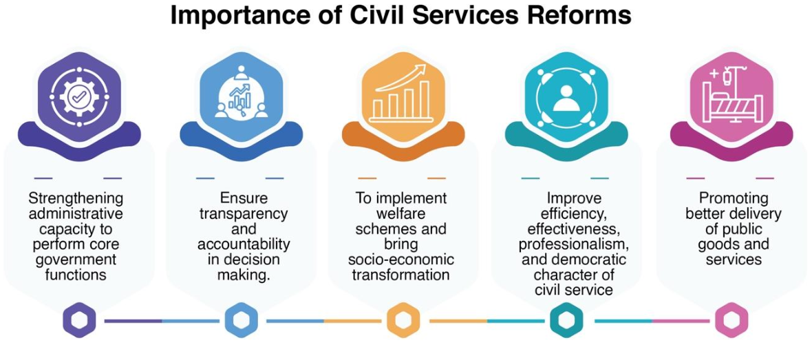
- Transforming Civil Service Mindset
- A paradigm shift in the nature of the civil service and its servants is necessary to address the emerging demands and changes in society and the economy. The table below summarizes the nature of changes required in this esteemed service for better performance:
-
| Aspect | Traditional Approach | Required Shift |
|---|
| Commitment | To the Civil Service | To public service |
| Core Values | Integrity and neutrality | Integrity, impartiality, and delivery |
| Precedent | Follower | Creator |
| Work | Exclusively in policy and ministerial support roles | Varies roles between operations, policy, specialist skills, and ministerial support |
| Aims | To lead the development of a major policy area. | To deliver the outcomes of a major policy area. |
| Experience | Widens experience by brief tenures in public sector | Widens experience by taking a private sector role |
| Training | One Time | Career-long development and learning |
| Orientation | Status quo | Change |
| Approach | Monopolistic | Competitive |
- 2.1. Mission Karmayogi- A Paradigm Shift
- Mission Karmayogi represents a transformative shift from the traditional, rule-bound civil service framework towards a dynamic, role-based, and citizen-centric governance model. Rooted philosophically in the Bhagavad Gita’s principle of “Yogah Karmasu Kaushalam”—the art of achieving excellence in action without attachment to outcomes—the mission encourages civil servants to transition from mere karmacharis (employees) to dedicated karmayogis who serve with integrity, commitment, and continuous self-improvement.
- Key Features
-
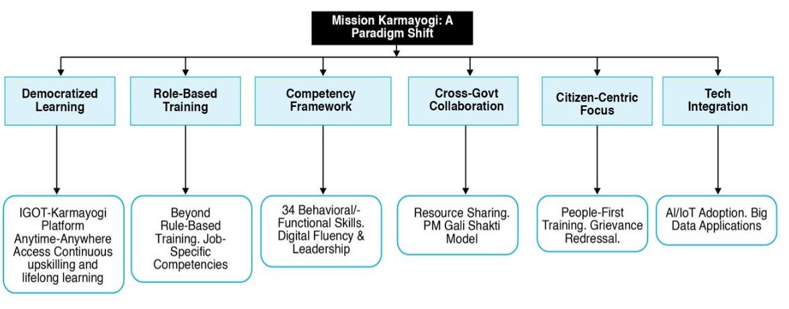
- Challenges with Mission Karmayogi
-
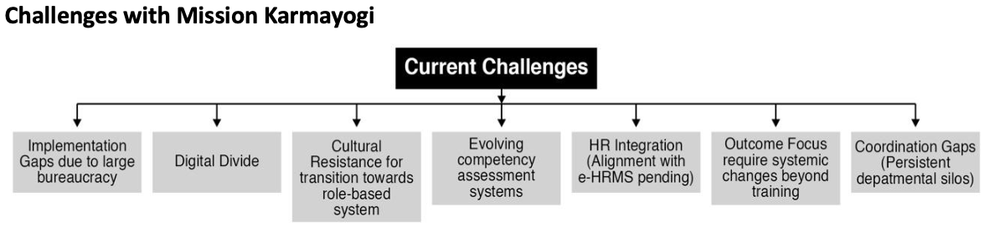
- The raison detere of mission karmayogi is assignment of right person for the right role at the right time. It also aims to train civil servants in behavioral competencies, particularly those interacting with citizens, to improve public experience. Filling these gaps is crucial for realizing the objectives of Mission Karmayogi.
- 2.2. Civil Services Reforms - What More Can Be Done?
-
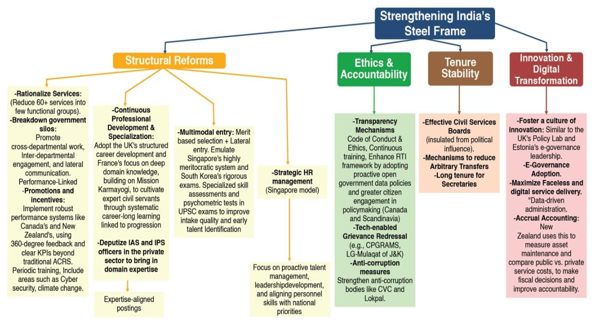
- 2.2.1. Relevant Committee/Commission Recommendations
-
- Civil services reforms must prioritize citizen-centricity, accountability, enhanced and updated training mechanisms, and protection of bureaucratic neutrality and non-partisanship to build a modern, efficient bureaucracy. Cultivating continuous capacity building and gender inclusivity would ensure the services adapt to evolving governance challenges and be responsive and future-ready to uphold democratic values and drives India’s inclusive development.
- Chapter 3 - DEVELOPMENT PROCESSES AND THE DEVELOPMENT INDUSTRY THE ROLE OF NGOS, SHGS, VARIOUS GROUPS AND ASSOCIATIONS, DONORS, CHARITIES, INSTITUTIONAL AND OTHER STAKEHOLDERS
- 1. Development
- The United Nations defines development as a comprehensive economic, social, and political process that aims to improve the well-being and quality of life of people. However, Prof. Amartya Sen has conceptualized ‘development’ as ‘freedom’. Freedom is both the primary end and the principal means of development. To him, the only acceptable evaluation of human progress is primarily and ultimately enhancement of freedom and the achievement of development is dependent on the free agency of people.
- Building on this understanding, sustainable development emphasizes the responsibility to meet the needs of the present without compromising the ability of future generations to meet their own needs. Thus, development has to balance freedom and well-being with long-term ecological and social sustainability to ensure enduring progress for all.
- 1.1. Challenges Associated with Development in India
- India’s development journey is riddled with complex and interconnected challenges as follows:
- 1. Unequal Distribution of Resources:
- Flawed land reforms have perpetuated unequal land ownership, hindering agricultural growth and exacerbating income disparity.
- Inter-regional disparities in country’s workforce.
- It includes the attributes gained through education, training, and healthcare, which enhance individual productivity and economic development due to inadequate planning and resource allocation have led to social unrest.
- High-quality human capital drives economic growth and development, while deficiencies like low education levels, poor health, and gender inequality hinder progress and future prospects.
- 2. Deficiencies in Human Capital Development:
- Stagnant investment in education (2.9% of GDP) coupled with low doctor-to-patient ratio (0.7 per 1000) hinders workforce productivity and future economic prospects.
- Human Capital refers to the collective skills, knowledge, experience, and health of a value.
- Gender inequality severely restricts female participation in education, health, and the workforce, limiting overall development.
- 3. Socioeconomic Inequality:
- The top 1% holds a disproportionate share of wealth (40 times the national average), hindering economic mobility and access to resources for a large section of the population.
- Lack of quality education and healthcare disproportionately impacts the poor, creating a vicious cycle of poverty.
- 4. Education-Employment Mismatch:
-
- 5. Environmental Degradation:
- Rampant pollution, with 9 out of the 10 most polluted cities globally being Indian, poses a serious health threat and hinders sustainable development.
- 6. Implementation Bottlenecks:
- Ineffective implementation of land reforms and development plans hinders progress and exacerbates existing inequalities.
- Outdated infrastructure in resource-rich areas like Jharkhand limits the efficient utilization of natural resources.
- These challenges demand a multi-pronged approach. India needs to invest in inclusive growth strategies, improve governance and infrastructure development.
- 1.2. Strategies for Addressing India’s Development Challenges
- To create a holistic solution to address the development challenges in India, strategies that can be followed are:
- 1. Policy and Governance Reforms
- Land and Legal Reforms:
- Implement fair and transparent land reforms to ensure equitable distribution, supported by a modern digital registration system. Strengthen legal frameworks to protect rights, particularly for marginalized groups.
- Decentralised Development:
- Focus on regional equity by developing infrastructure and promoting economic activities in underdeveloped areas, reducing regional disparities.
- 2. Investment in Human Capital
- Education and Health Enhancement:
- Significantly increase investment in education and health sectors to a minimum of 5% of GDP for each. Establish strict standards for quality and efficiency and encourage public-private partnerships to extend reach and improve service delivery.
- Gender Equality Programs:
- Launch empowerment initiatives focusing on education, employment opportunities, and health services for women, alongside enforcing stronger laws against gender-based discrimination and violence.
-
- 3. Economic Reforms and Social Security
- Progressive Taxation and Fair Redistribution:
- Implement progressive taxation to ensure a fairer distribution of wealth.
- Expand and improve social security systems to cover all vulnerable sections of society, reducing economic inequality.
- Skill Development and Employment:
- State-sponsored skill development programs should be aimed at increasing employment among economically disadvantaged groups, fostering economic mobility.
- 4. Environmental Management and Sustainability
- Pollution Control and Sustainable Practices:
- Enforce stringent environmental regulations and promote sustainable agricultural and industrial practices.
- Invest in renewable energy sources to decrease reliance on fossil fuels and mitigate environmental degradation.
- 5. Community Engagement and Resource Management
- Community-Managed Resource Policies:
- Develop policies that ensure sustainable practices and equitable distribution of benefits by actively involving local communities in resource management decisions and actions.
- Technology Integration in Resource Utilization:
- Modernize technology for efficient extraction and processing of natural resources.
- By implementing these strategies, India can address its multifaceted development challenges in a comprehensive and sustainable manner, fostering a more inclusive and progressive society.
- 2. Development Industry
- The "development industry" refers to the global network of organizations, agencies, and institutions that work towards promoting development, particularly in the Global South.
- The government has traditionally been the primary agent for delivering public services, ensuring equitable access to essential resources such as education, healthcare, and infrastructure. However, to enhance efficiency and reach underserved populations, alternative service delivery mechanisms have emerged.
-
- 2.1. Alternative Service Delivery Mechanisms
- Alternative service delivery (ASD) mechanisms may be defined as the provision of public services through arrangements other than the traditional departmental structure. These include arrangements such as NGOs, Civil Society Organizations, Charitable organizations, Private sector etc.
- ASD has unique advantages and disadvantages.
-
- Few examples of ASDs in India are:
- Pratham:
- It has significantly contributed to children’s literacy through its ASER reports and intervention programs like "Teaching at the Right Level."
- Aravind Eye Care System:
- It delivers high-quality, affordable eye care using an innovative, financially sustainable model that subsidizes services for the poor. It developed a high-volume, high-quality, low-cost model for cataract surgery, making eye care accessible to millions. Their innovations include assembly-line efficiency in surgery, tiered pricing to subsidize the poor, and local manufacturing of intraocular lenses.
- SEWA:
- It has empowered informal women workers by providing access to financial services, healthcare, and social security.
- While ASD mechanisms can fill critical gaps, particularly when the state withdraws or is overstretched, they cannot wholly replace the state’s fundamental responsibility for universal public service provision, which requires broader infrastructure, consistent funding, and democratic accountability.
- 2.2. Civil Society Organisations
- Civil Society Organisations (CSOs) are groups and movements outside the government that engage in advocacy, human rights, social justice, and democratic governance. They act as a watchdog on the state, amplify marginalized voices, and contribute to public discourse and policy shaping in a democracy.
-
- According to the World Bank, Civil Society refers to a wide array of organizations, community groups, Non-governmental organizations (NGOs), labour unions, indigenous groups, charitable organizations, faith-based organizations, professional associations and foundations.
- Civil society, also called the “third sector” (after government and private sector), has the power to influence the actions of elected policymakers and businesses.
- Examples of well-known civil society organizations include Amnesty International, the International Trade Union Confederation, World Wide Fund for Nature (WWF), Greenpeace and the Danish Refugee Council (DRC).
- The National Policy on Voluntary Sector 2007 defines voluntary organizations (VOs) broadly to include a variety of groups focused on public service, encompassing community-based organizations, NGOs, charitable groups, support organizations, networks, and professional associations.
- 2.2.1. Features of Civil Society Organization
-
- Autonomous Operation:
- Functions independently from governmental and commercial influences.
- Voluntary Engagement:
- Participation is freely chosen, motivated by shared objectives and enthusiasm.
- Socially Driven Purpose:
- Focuses on public welfare rather than profit maximization.
- Diverse and Inclusive:
- Includes a broad spectrum of groups with various interests and methodologies.
- Advocacy for Marginalized Groups:
- Represents and champions the interests of underrepresented communities.
- Accountable Practices:
- Holds responsibility to its members, beneficiaries, and the wider public.
-
- 2.2.2. Civil Society in India
- Civil society, rooted in Gandhian volunteerism, now manifests in various forms of activism. Initially, voluntary organizations in independent India addressed government development gaps.
- For example, Civil societies organized handloom weavers into cooperatives for direct marketing and better pricing.
- AMUL, a dairy cooperative society, emerged from this cooperative movement.
- 2.2.3. Types of Civil Societies in India
-
- 2.2.4. Legal Framework for CSO Regulation in India
-
- 2.2.5. Changing Role of Indian Civil Society
-
- 2.2.6. Challenges Hindering Civil Society in India
-
- FCRA Regulations and CSOs
- Tensions between regulatory oversight and democratic freedoms in India’s civil society sector under the FCRA framework has been in news. CSOs have faced following issues due to FCRA regulations:
-
- 2.2.7. Suggestions to Improve Working of Civil Societies
-
- Indian democracy, due to massive inequality and low-income universal suffrage, makes civil society essential for inclusive development and transforming development into a "Jan Andolan" (people’s movement).
-
- 2.3. Non-Governmental Organizations (NGOs)
- A Non-governmental organization (NGO) is a non-profit group that functions independently of any government. Civil Society, when organized in structure and specialized in function, takes the form of NGOs. They are organized on community, national and international levels to serve a social or political goal such as humanitarian causes or the environment.
- Evolution of NGOs in India
- Period Activities
- Pre-Independence:
- Social Reform Movements:
- Reformers like Raja Ram Mohan Roy, Ishwar Chandra Vidyasagar etc. laid the foundation for organized social work.
- Political Movement:
- Many political associations and organizations paved the way for the organized political activism.
- Women’s Organizations:
- Women-led organizations like the All India Women’s Conference (AIWC) and the National Council of Women focused on women’s education, health, and empowerment.
- Gandhian Approach:
- NGOs inspired by Gandhian ideals emerged, promoting khadi, rural upliftment, and non-violence.
- 1950s and 1960s:
- Despite their limited role, NGOs primarily concentrated on basic needs such as education, healthcare, and poverty alleviation.
- 1970s and 1980s:
- Rights and Advocacy: NGOs increasingly engaged in rights-based advocacy. They worked on issues related to child rights, women’s empowerment, and environmental conservation.
- 1990s and 2000s:
- Due to globalization and technological development, the role of NGOs has increased.
- NGOs now actively participate in policy formation and program implementation.
- Additionally, they collaborate with Self Help Groups, engage in Micro Credit initiatives, and focus on livelihood development.
- 2000s Onwards:
- NGOs have shifted toward evidence-based practices and impact assessment.
- Their role has now expanded to focus on rights-based approaches and involved in many areas like digital literacy, disaster relief, climate change action etc.
- NGOs collaborate with international organizations and businesses (CSR initiatives).
- Types of NGOs
- Charity-Oriented NGOs:
- Their primary goal is to meet the immediate needs of the underprivileged. They provide essential services such as clothing, medication, food, shelter, education, and transportation.
- Service-Oriented NGOs:
- They run campaigns to advance specific causes related to family planning, healthcare, and education.
- Empowering-Oriented NGOs:
- These NGOs focus on empowering marginalized communities. They work on capacity-building, skill development, and advocacy for rights and justice.
- Participatory-Oriented NGOs:
- They involve local communities in decision-making processes. They believe in collaborative efforts for development.
- National and International NGOs:
- National NGOs:
- These operate within a specific country, addressing national-level issues.
- International NGOs:
- These have a global reach and work across borders. They focus on issues like human rights, environmental conservation, and disaster relief on an international scale.
- However, this classification is not strict and rigid. These NGOs keep taking multiple works that can be categorized in one category or other.
- Registration of NGOs
- Indian NGOs mainly comes under three segments – Societies, Trusts, Charitable Companies.
- Societies:
- Societies have to register under the Societies Registration Act 1980.
- Trusts:
- Private trusts are registered under the central government’s Indian Trusts Act, 2015, and public ones are registered under the state legislation concerned.
- Charitable Companies:
- They are set up according to the Companies Act, 2020. For charitable companies, the compliance requirements are high, as loans and advances are easily available to them compared to a trust or a society. They have to even pay Income tax under IT act 1961.
- NGO DARPAN
- NGO DARPAN is an online platform developed by NITI Aayog in collaboration with the National Informatics Centre to enhance transparency and accountability of Non-Governmental Organizations (NGOs) and Voluntary Organizations (VOs) in India.
- It facilitates registration, updates, and interaction between NGOs/VOs and government departments.
- 2.3.1. Role of NGOs in Development
- In India, a developing country, there are significant gaps in development left by the government that are often filled by NGOs. These organizations step in to address areas where the government is either unwilling or unable to act effectively:
- Supplementing Education and Healthcare:
- In areas where state resources are scarce, particularly in rural regions, NGOs play a critical role. They help operate schools and healthcare facilities, significantly improving access and quality.
- For instance, the Kerala Sastra Sahitya Parishad is renowned for contributing to Kerala’s high literacy rate.
- Addressing Social and Cultural Issues:
- NGOs often tackle sensitive issues like caste discrimination, which many governments avoid due to political reasons. By advocating against such discrimination, NGOs help enforce laws that are otherwise overlooked.
- Protecting Tribal Rights:
- In high-profile cases like Vedanta vs. Posco, NGOs have defended tribal communities against exploitation by multinational corporations and have supported the enforcement of laws like Forest Rights Act through partnerships with local governance bodies.
- Protection of Environment:
- They play a crucial role in environmental protection by raising awareness, advocating for sustainable practices, and implementing grassroots conservation projects.
- Prominent Environmental NGOs in India:
- Greenpeace
- World Wide Fund for Nature (WWF)
- Bombay Natural History Society (BNHS)
- The Energy Research Institute, Birdlife International
- The Centre for Science and Environment etc.
- Welfare Scheme Implementation:
- Close to the community, NGOs effectively act as bridges between the government and the public, facilitating the implementation of welfare programs. They serve as implementers, catalysts, and partners in these initiatives.
- Promoting Transparency:
- The Right to Information (RTI) became a reality in India largely due to persistent efforts by various NGOs like Pratham.
- Disaster Rehabilitation:
- Post the 2004 Tsunami, NGOs not only assisted in rescue efforts but also established vocational training centers to aid long-term rehabilitation.
- Case Studies and Examples
-
| Impact Area | NGO/Campaign | Description/Outcome |
|---|
| Education | Kerala Sastra Sahitya Parishad | Instrumental in achieving a 100 percent literacy rate in Kerala by providing extensive educational outreach. |
| Poverty Alleviation | YUVA, SPARC | Worked to prevent the demolition of slums and improve living conditions, securing better housing and facilities for the poor. |
| Minority Rights | Vedanta vs. Posco case | Advocated for indigenous rights, ensuring the enforcement of the Forest Rights Act and CAMPA Act through collaborations with local governance. |
| Disaster Response | Rapid Response | Provides disaster response and preparedness services across India, notably effective during major emergencies. |
| Environmental Protection | Centre for Science and Environment | Key player in global environmental reforms, focusing on pollution control, hazardous waste management, and food safety. |
| Health Initiatives | Aid India during COVID-19 | Amplified efforts during the COVID-19 pandemic to deliver healthcare and support to remote villages, enhancing the community health infrastructure. |
| Child Protection | Bachpan Bachao Andolan | Freed over 90,000 children from labor, slavery, and trafficking, advocating for child rights and providing rehabilitation. |
| Ethical Manufacturing | Good Weave International | Established a certification system for rugs manufactured without child labor, promoting ethical industry practices in South Asia. |
| Women’s Rights | Women’s India Trust | Focuses on empowering women through vocational training, health education, and legal awareness to enhance their social and economic status. |
| Wildlife Conservation | Wildlife Trust of India | Works to protect wildlife and habitats through conservation projects, legal advocacy, and partnership with governmental and non-governmental agencies. |
| Water Conservation | Water.org | Provides solutions for clean water and sanitation, impacting millions by facilitating access to safe water resources and hygiene education. |
- 2.3.2. Challenges Faced by NGOs in India
- Non-governmental organizations (NGOs) in India play a crucial role in addressing various societal and developmental challenges. However, on one hand, these organisations are sometimes perceived as hindering development and raising concerns related to credibility. On the other hand, NGOs face their own set of challenges.
- Allegations and Economic Impact
- Accusations of Hindering Economic Growth:
- Reports from the Intelligence Bureau suggest "foreign-funded" NGOs may stall economic growth by 2-3% through opposition to industrial projects.
- Activities against industrial projects include protests, litigation, and advocacy campaigns that delay or halt project implementation.
- Foreign Influence Concerns:
- Allegations that foreign donors influence NGO activities to align with international agendas, potentially against India’s economic and politically interests.
- Transparency and Accountability Issues
- Financial Reporting:
- Only about 10% of NGOs report their annual income and expenditure statements, leading to concerns about the effective use of funds.
- Regulatory Compliance:
- Many NGOs struggle with adhering to stringent regulations under the Foreign Contribution Regulation Act (FCRA), which can lead to operational disruptions.
- Security Concerns Associated with NGOs
- Organized Crime and Terror Funding:
- Some NGOs, like the IRF, have been accused of diverting funds for terrorism and radicalization.
- Tax Evasion and Money Laundering:
- NGOs can sometimes act as channels for tax evasion and money laundering activities.
- Challenges Faced by NGOs
- Funding Shortages and Restrictions
- Limited Access to Funds:
- Many NGOs struggle with limited access to funds due to stricter FCRA regulations. It impacts financial sustainability and leading to reliance on intermittent and uncertain funding sources.
-
- Urban-Rural Disparity
- NGOs in urban areas often have better access to resources, training, and funding compared to their rural counterparts, leading to imbalances in development efforts.
-
- Professionalization over Volunteerism:
- NGOs started as voluntary organizations, but now they are becoming professional entities, which is defeating their original purpose.
- Skill Gaps in Personnel:
- There is a lack of professionally trained staff in NGOs, which makes it difficult for them to achieve their goals effectively.
- 2.3.3. Suggestions to Improve the Working of NGOs
- Here are some suggestions that aimed at optimizing the functionality and accountability of NGOs across the country:
- Relaxing Regulations:
- The rules and regulations of grants-in-aid should be liberalized by the government and sanction more grants to NGOs.
- Monitoring Agency:
- At the same time, the government should appoint commissions of enquiry or committees to cross check the misuse of funds by NGOs.
- Focusing on Rural Areas:
- The government should give some special incentives for NGOs who are working in rural areas.
-
- Appreciate Efforts of NGOs:
- The government also should recognize those NGOs, by giving awards or rewards with additional grants.
- Technology Intervention:
- NGOs should leverage the latest technologies, such as the internet and websites, to raise funds, establish mutual associations, advertise their products, and select efficient personnel.
- Collaboration and Cooperation:
- Universities, colleges and schools should collaborate with NGOs and conduct a campus interview for the young graduates who are interested in voluntarism.
- Recommendations of Vijay Kumar Committee:
- Modernising registration process for seamless operation of the applicable provisions of the IT (Income Tax) Act and FCRA with respect to NGOs.
- Details of NGOs should be made available as searchable database information.
- Supreme Court’s Directive:
- The SC instructed the Centre to audit the NGOs to ensure accountability and transparency in the utilization of public funds.
- Additionally, the Court suggested the creation of a regulatory framework to govern NGO operations and fund disbursement more effectively.
- 2nd ARC Recommendations:
- FCRA should be decentralised and delegated to State Governments/District administration.
- Fine balance between the purpose of the legislation and functioning of the voluntary sector to avoid subjective interpretation of law and its possible misuse.
- These reforms can significantly strengthen the NGO sector’s capacity to address social, environmental, and developmental challenges more effectively.
- 2.4. Self Help Groups (SHGs)
- Self-Help Groups (SHGs) are small, informal groups, often composed primarily of women, formed through a social mobilization process that empowers the poor to organize themselves. These groups enable members to actively participate and make decisions on issues related to poverty eradication, employment generation, and income improvement.
- 2.4.1. Characteristics of SHGs
- (The image is not right in main pdf itself)
-
- 2.4.2. Significance of SHGs
-
-
- Women from Dholpur’s SHGs, established by the Rajasthan Grameen Ajeevika Vikas Parishad (Rajeevika), has helped about 12,500 women in the West African countries of Mali and Senegal earn livelihoods, conserve environment and establish cooperative federations to take up farming, biogas production, poultry farming and goat rearing.
-
- 2.4.3. Issues Related to SHGs
- Despite their successes, Self-Help Groups (SHGs) face several significant challenges:
-
- Rising NPAs for SHG Loans
- SHGs play a crucial role in promoting financial inclusion and empowering rural women through access to credit and collective savings. However, the rising incidence of NPAs within SHG loans poses a significant challenge to their effectiveness and sustainability.
-
- 2.4.4. Recent Government Interventions to Strengthen SHGs
-
- 2.4.5. Suggestions to Improve the Working of SHGs:
-
- A SHG 2.0, as emphasized by the World Bank, addresses the structural and credit-related challenges of SHGs, and it needs to be implemented to transform SHGs into a true vehicle for women’s empowerment and people-centered development. Government policies must align with this idea to achieve efficient resource mobilization and the consequent upliftment of women.
- 2.5. Co-operatives
- Co-operatives are autonomous associations of individuals who voluntarily come together to meet their common economic, social, and cultural needs and aspirations through a jointly-owned and democratically-controlled enterprise.
- They are based on the values of self-help, self-responsibility, democracy, equality, equity, and solidarity.
- Historical Background:
- Early Beginnings:
- The co-operative movement began in Europe in the 19th century as a response to the industrial revolution and the social changes it brought about.
- International Growth:
- The movement spread globally, adapting to various cultural and economic contexts while maintaining core principles.
- 2.5.1. Functioning of Co-operatives
- Co-operatives function through open membership and democratic control, with each member having one vote.
- Members contribute equitably to the capital and benefit proportionally from surpluses.
- They maintain autonomy and self-governance, even in external agreements.
- Co-operatives also focus on education and training for their members and collaborate with other co-operatives locally and internationally.
- Co-operatives in India
- Pre-Independence:
- The co-operative movement in India began in the early 20th century to address issues of rural credit and support farmers.
- Post-Independence:
- The movement expanded significantly after independence, with the government promoting co-operatives as a means of economic and social development.
- The establishment of institutions like the National Cooperative Development Corporation (NCDC) provided further support.
- 2.5.2. Significance of Co-operatives
- Economic Impact:
- Boost to Rural Economy:
- Co-operatives cover around 97% of Indian villages, and around 19% of agricultural credit is disbursed by co-operatives.
- Economies of Scale:
- The cooperative sector fosters economies of scale, evident in sectors like dairy, where more than 45,000 cooperatives with nearly 60 lakh members exist.
- Employment:
- The cooperative sector provides self-employment to more than 17.8 million people, improving socio-economic conditions, particularly for weaker sections through fisheries, labor, and gender cooperatives.
- Social Impact:
- Inclusive Growth:
- Co-operatives prevent the accumulation of economic power and ensure a wider dispersal of ownership of productive capital.
- Welfare:
- They provide bargaining power to members, such as in cooperative spinning mills and weavers’ cooperative societies, helping prevent exploitation.
- Agricultural and Environmental Impact:
- Fertilizer Sector:
- Indian Farmers Fertiliser Cooperative Ltd. (IFFCO) reaches more than 5.5 crore farmers through its network of over 40,000 cooperatives.
- Promotion of Organic Farming:
- Co-operatives like the Sittilingi Organic Farmers Association promote organic farming, improving farmers’ incomes by paying more than market prices for produce.
- Innovation:
- Product Development:
- Co-operatives like AMUL have added numerous new products, while IFFCO organizes training in the usage of drones and other technologies for its members.
- Legal Framework
- MULTI-STATE COOPERATIVE SOCIETIES (MSCS) (AMENDMENT) ACT & RULES, 2023:
- Governs co-operative societies that operate in more than one state.
- State Co-operative Societies Acts:
- Each state has its own Co-operative Societies Act that regulates co-operatives operating within the state.
- Constitutional Provisions
- Article 19(1)(c):
- Grants citizens the right to form co-operatives.
- 97th Constitutional Amendment Act added:
- Article 43B:
- It mandates the state to promote co-operative societies.
- Part IXB (Articles 243ZH to 243ZT):
- It deals with co-operatives and outlines their composition, election procedures, and the principle of democratic functioning.
- 2.5.3. Issues Related to Co-operatives
- Cooperatives in India suffer from the following issues:
- Management Challenges:
- Professional Management:
- Many co-operatives lack professional management, leading to inefficiencies and poor performance.
- Governance Issues:
- Democratic control can sometimes result in governance challenges, with conflicts of interest and political interference affecting decision-making.
- Financial Constraints:
- Capital Access:
- Co-operatives often struggle to access adequate capital for expansion and modernization.
- Sustainability:
- Ensuring financial sustainability while maintaining co-operative principles can be challenging, particularly in competitive markets.
- Regulatory Hurdles:
- Complex Regulations:
- Co-operatives are subject to complex regulatory frameworks, which can vary significantly between states, creating administrative burdens.
- Cooperative banks are under the dual regulation of the RBI and state governments, which reduces their accountability. An example is the PMC Bank crisis.
- Regional Imbalance:
- Uneven Development:
- The cooperative sector is more developed in the western and southern parts of the country compared to eastern regions like West Bengal, Odisha, Bihar, and the northeastern states.
- Government Initiatives for Cooperatives in India
- The Government of India has launched several initiatives to promote and strengthen the cooperative sector:
- 1. Ministry of Cooperation
- Establishment:
- The Ministry of Cooperation was established in July 2021 to provide a separate administrative, legal, and policy framework for strengthening the cooperative movement in the country.
- Objective:
- To streamline processes, improve ease of doing business for cooperatives, and deepen the reach of cooperatives to the grassroots level.
- 2. National Cooperative Development Corporation (NCDC)
- Establishment:
- The NCDC was established in 1963 under the National Cooperative Development Corporation Act, 1962.
- Objective:
- To promote cooperative development across various sectors, including agriculture, agro-processing, rural industries, and services.
- 3. Sahakar Mitra Scheme
- Objective:
- To provide paid internships to young professionals in the cooperative sector.
- 4. Model Cooperative Societies Act
- Proposed to standardize and modernize cooperative laws across states.
- Objective:
- To provide a uniform legal framework for the functioning of cooperatives, ensuring better governance and accountability.
- 5. Rashtriya Mahila Kosh (RMK)
- Objective:
- To provide micro-finance to women cooperatives.
- 2.5.4. Suggestions to Improve the Working of Co-operatives
- Following recommendations are advanced for strengthening cooperatives in India.
- Policy and Regulatory Reforms:
- Simplified Regulations:
- Simplify regulatory frameworks to reduce administrative burdens and enhance ease of operation.
- Consistent Policies:
- Develop consistent policies that provide stable and long-term support for co-operatives, facilitating their growth and sustainability.
- Capacity Building:
- Training Programs:
- Implement comprehensive training programs for members and leaders to enhance their managerial and technical skills.
- Education Initiatives:
- Promote education about co-operative principles and practices to build a knowledgeable and committed membership base.
- Financial Support:
- Access to Credit:
- Improve access to credit by simplifying loan procedures and providing financial incentives for co-operative development.
- Government Schemes:
- Strengthen government schemes that support co-operatives, ensuring they are effectively implemented and reach the intended beneficiaries.
- Technological Integration:
- Digital Platforms:
- Leverage digital platforms to improve transparency, efficiency, and member engagement within co-operatives.
- Innovative Solutions:
- Encourage the adoption of innovative solutions, such as mobile banking and e-commerce, to expand market access and improve service delivery.
- Strengthening Networks:
- Federations and Alliances:
- Promote the formation of federations and alliances among co-operatives to enhance their bargaining power and influence.
- International Collaboration:
- Foster international collaboration to share best practices and access global markets.
- By addressing these areas, co-operatives can enhance their effectiveness and better contribute to the socio-economic development of their members and communities.
- 2.6. Microfinance Institutions
- What are Microfinance Institutions?
- Microfinance, also called microcredit, is a type of banking service that is provided to unemployed or low-income individuals or groups who otherwise would have no other access to financial services.
- MFIs operate in several forms and shapes in India:
- Joint Liability Groups
- Self Help Groups
- The Grameen Bank Model
- Rural Cooperatives.
- 2.6.1. Role of Microfinance Institutions in Development
- Microfinance Institutions (MFIs) play a crucial role in promoting development, particularly among underserved and economically disadvantaged communities:
- Financing the Unfinanced:
- MFIs focus on understanding the needs of the poor and develop efficient methods to deliver essential financial services, crucial for poverty alleviation.
-
- Women Empowerment:
- MFIs provide loans to underprivileged women who lack access to traditional banks, facilitating their economic growth and independence.
- Rural Development:
- In rural areas, MFIs offer credit without formal mortgages, helping to reduce dependence on high-interest local moneylenders.
- The role of MFIs in development is thus multi-faceted, touching various aspects of economic and social upliftment, especially in marginalized communities. Their impact in fostering financial inclusion and supporting grassroots economic growth remains crucial for broader societal progress.
- 2.6.2. Issues Related to Microfinance Institutions
- Microfinance Institutions (MFIs) are crucial for providing financial services to underbanked populations, but they face several issues:
- High Interest Rates:
- MFIs often charge higher interest rates than traditional banks, which can burden economically vulnerable borrowers and lead to debt cycles.
- Over-Indebtedness:
- Easy access to micro-loans can result in borrowers taking on more debt than they can manage, especially with limited financial literacy.
- Inadequate Regulation:
- Minimal regulatory oversight can lead to non-transparent lending practices and practices not in the best interest of consumers.
- Limited Reach in Remote Areas:
- Operational challenges and costs limit MFIs’ effectiveness in remote rural areas.
- Market Saturation:
- In some regions, market saturation leads to fierce competition among MFIs, driving them to take greater risks and potentially compromising their stability and mission.
- Addressing these issues requires a multifaceted approach, including better regulatory frameworks, enhanced focus on consumer protection, and stronger emphasis on financial education for borrowers.
- 2.6.3. Enhancing the Effectiveness of Microfinance Institutions (MFIs)
- To improve the reach and impact of Microfinance Institutions (MFIs), the following strategic enhancements can be implemented:
- Enhanced Supervision:
- Increase field supervision with regular audits and on-site checks to ensure operational efficiency and ethical practices.
- Incentives for Rural Expansion:
- Provide tax breaks or funding support to encourage MFIs to open branches in unbanked rural areas, enhancing financial inclusion.
- Diversification of Services:
- Broaden the range of financial products offered by MFIs and implement transparent pricing, using technology to maintain consistency and efficiency.
- Leveraging Technology:
- Invest in technologies like mobile banking, digital wallets, and automated loan processing to make loans more accessible at competitive rates.
- Separate Regulatory Authority:
- Establish a dedicated regulatory body to oversee MFI operations, enforce compliance, and reduce malpractices and political influence.
- Strengthening Credit and Collection Processes:
- Improve credit assessment and debt collection methods, and conduct educational programs to inform villagers about financial products and responsible borrowing.
- These measures aim to enhance the capacity of MFIs to drive economic development and financial inclusion, especially in rural and underserved areas.
- 2.7. Donor Agencies
- A donor agency is an organization, government, or institution that provides financial assistance to fund projects, programs, or initiatives in developing countries.
- 2.7.1. Important Contributions
-
- Important contributions of few international Donor agencies (Examples):
- 1. Bill & Melinda Gates Foundation:
- Health Related Initiatives:
- Significant contribution to India’s polio eradication campaign.
- Launched the "Avahan" initiative in 2003, an HIV prevention program, which was later integrated into the national HIV prevention program. This program prevented an estimated 600,000 new HIV infections.
- Supported the development of low-cost vaccines and improving sanitation.
- Promoted use of AI-powered tools for rural healthcare workers, especially in Uttar Pradesh and Bihar.
- Agricultural Development:
- Empowering smallholder farmers, especially women, to enhance productivity and income.
- Financial Inclusion and Gender Equality:
- Promoting access to digital financial services and women’s economic empowerment.
- 2. United States Agency for International Development (USAID):
- It has transitioned from food aid to supporting infrastructure, health (including TB and HIV/AIDS, maternal and child health), clean energy, climate resilience, agriculture (e.g., "Feed the Future" program), and disaster management. It significantly backed India’s Swachh Bharat Abhiyan and COVID-19 response. Recently, USAID has been actively involved in India’s efforts to combat TB.
- 3. Ford Foundation:
- It has played important role in supporting the establishment of premier institutions like IIMs, the National Institute of Design (NID), and aiding agricultural research during the Green Revolution. Its focus has also included community development, women’s studies, and, more recently, empowering vulnerable communities to access justice and government schemes.
- 4. Michael & Susan Dell Foundation:
- This foundation concentrates on improving educational outcomes in public schools, skilling youth for employment, and fostering financial inclusion for micro-entrepreneurs and small businesses in urban areas.
- Contributions of Indian Donor Agencies (Examples):
- Tata Trusts:
- Recognized the enormous gap in affordable and accessible cancer care in India and launched a Distributed Cancer Care Model to address this issue.
- Created a network of cancer care centers across multiple states, including Assam, Odisha, and Jharkhand.
- The model involves strengthening state-level hospitals and creating new facilities closer to patients’ homes, to improve access to cancer care.
- Azim Premji Foundation:
- Core strategy avoids creating parallel systems. Thus, it focuses on strengthening the existing public education infrastructure rather than replacing it.
- Works directly with government school teachers and education functionaries and focuses on building capacity through sustained professional development programs.
- Develops high-quality open-source learning materials for wider access.
- Conducts research to inform education policy and practice.
- Infosys Foundation:
- A long-standing supporter of Akshaya Patra, an NGO renowned for its highly efficient, centralized kitchens that provide mid-day meals to millions of school children, foundation invests in technology and infrastructure for these kitchens, the Foundation has contributed to the efficiency and scale.
- Piramal Foundation:
- It supports the development of digital tools for frontline health workers (like Anganwadi workers and ASHAs) to improve service delivery efficiency in maternal and child health, and education. E.g., initiatives like "Fetosense" (a mobile fetal heart rate monitor).
-
- Thus, when donors prioritize and genuinely support community-led initiatives and participatory processes, they can empower local voices and strengthen ownership.
- Chapter 3 - GOVERNMENT POLICIES AND INTERVENTIONS FOR DEVELOPMENT IN VARIOUS SECTORS AND ISSUES ARISING OUT OF THEIR DESIGN AND IMPLEMENTATION
- 1. Public Policy
- Public policy is the framework of laws, regulations, and actions governments implement to achieve social and economic goals. It’s a statement of the government’s intent and commitment to address a particular issue or problem. Public policy shapes the decisions of government officials and agencies, and it affects society, the economy, and politics.
- 1.1. Process of Public Policy Formation
- The process of public policy formation involves several stages, including agenda setting, policy formulation, adoption, implementation, and evaluation.
-
- 1.2. Nature of Public Policies
- 1. Goal-Oriented:
- Policies aim to achieve specific objectives, like the Swachh Bharat Abhiyan, which aims to improve sanitation across the country.
- 2. Collective Action:
- These policies result from coordinated efforts by government officials. For instance, the GST (Goods and Services Tax) was implemented through collective decision-making by central and state governments.
- 3. Systematic:
- Policies are developed and implemented through structured processes, as seen in the rollout of the Aadhaar system, which involved multiple stakeholders and systematic planning.
- 4. Strategic:
- Focuses on long-term goals, such as the National Education Policy 2020, which aims to transform the educational landscape over the next few decades.
- 5. Complex:
- Involves interconnected components and communication loops, exemplified by the Digital India initiative, which integrates various technological and governance frameworks.
- 6. Action-Oriented:
- Creates an environment for implementation, such as the Mahatma Gandhi National Rural Employment Guarantee Act (MGNREGA), which guarantees employment to rural households.
- 7. Consultative:
- Involves wide consultation, seen in the drafting of the new Labour Codes, which included inputs from workers, employers, and other stakeholders.
- 1.3. Types of Public Policy
- Public policies in India are diverse, addressing various sectors and target groups to promote balanced and inclusive development.
-
| Category | Type | Description | Examples |
|---|
| Sector-Wise Public Policies | Economic Policy | Focuses on growth and inclusivity through initiatives emphasizing industrialization, infrastructure, and foreign investment. | Five-Year Plans, Make in India |
| Social Policy | Addresses healthcare, education, gender equality, and social well-being to bridge social disparities. | National Rural Health Mission (NRHM), Sarva Shiksha Abhiyan (SSA), MGNREGA |
| Environmental Policy | Balances economic development with sustainability, emphasizing ecological preservation. | National Clean Air Programme (NCAP), National Action Plan on Climate Change (NAPCC) |
| Sector-Wise Public Policies | Education Policy | Shapes the future by promoting holistic learning, research, innovation, and access to quality education. | National Education Policy (NEP) 2020 |
| Healthcare Policy | Recognizes quality healthcare as a fundamental right, focusing on affordable services and infrastructure. | Ayushman Bharat, National Health Mission (NHM) |
| Target Group-Wise Public Policies | Substantive | General welfare and development, such as education, employment, economic stabilization, law enforcement, and anti-pollution legislation. | Right to Education Act (RTE), Mahatma Gandhi National Rural Employment Guarantee Act (MGNREGA), anti-pollution legislation |
| Regulatory | Regulation of trade, business, safety measures, and public utilities by organizations like LIC and RBI. | Directorate General of Foreign Trade (DGFT) regulations, Securities and Exchange Board of India (SEBI) guidelines |
| Distributive | Specific segments of society, related to grants of goods, public welfare, or health services. | Saakshar Bharat Mission, Public Distribution System (PDS), Pradhan Mantri Suraksha Bima Yojana (PMSBY) |
| Target Group-Wise Public Policies | Redistributive | Rearrangement of policies to bring about social and economic changes, streamlining disproportionate goods and services. | Progressive taxation, subsidies for essential goods and services, Pradhan Mantri Jan Dhan Yojana (PMJDY) |
| Capitalization | Financial help from the central government to state and local governments. | Centrally Sponsored Schemes (CSS), Smart Cities Mission, Atal Mission for Rejuvenation and Urban Transformation (AMRUT) |
| Scope-Wise Public Policies | Domestic Policies | Actions impacting citizens directly. | Regulatory Policies: RBI regulations; Economic Policies: Mudra Yojana, LPG reforms; Social Policies: National Nutrition Policy |
| Foreign Policy | Strategy for interacting with other nations. | Non-Aligned Movement (NAM), Neighbourhood First Policy |
- 2. Public Policy in India
- Public Policy in India after Independence
- First Phase- Post-Independence Planned Economy
- Active Role of State:
- In the planned economy, the state actively promoted and shaped society through public policy, expanding its scope from mere regulation to development.
- Planned Economic Development:
- Post-independence, India adopted planned economic development, believing that economic progress would spur social, political, and human development.
- Planning Commission:
- The Planning Commission was primarily responsible for formulating policies and perspectives to guide the country’s direction. The Five-Year Plans (FYPs) became the cornerstone of all government policies.
- Regulatory and Promotional Policies:
- Policies were crafted for regulation (e.g., controlling the scope for entrepreneurs and industrialists) and promotion (e.g., social change through acts like the Dowry Act and Divorce Act).
- Focus Areas:
- The primary goal was socio-economic development, with significant policy formulation in industrial and agricultural development.
- Security Policies:
- In response to internal and external security threats, defense policies aimed at national integration and cohesiveness were formulated.
- However, policies often faced contradictions; what was beneficial for economic development could be counterproductive for national integration.
- Neo-Liberalism
- Neo-liberalism is a political and economic ideology that emphasizes the role of free markets, deregulation, and the reduction of government intervention in the economy.
- After the 1990s, neo-liberalism in India gained momentum.
- Key changes included reducing government control, privatizing state-owned enterprises, and encouraging foreign investment.
- These policies led to significant economic growth, improved infrastructure, and increased global trade.
- However, they also resulted in greater income inequality and regional disparities, with the benefits of growth not reaching everyone equally.
- Second Phase- Post-LPG Reforms and Devolution of Power
- LPG Reforms:
- This phase began after the Liberalization, Privatization, and Globalization (LPG) reforms in India, which marked a shift towards a market-driven economy.
- Devolution of Power:
- Significant changes included the 73rd and 74th Constitutional Amendment Acts, which decentralized power to local governments, promoting greater participation and governance at the grassroots level.
- Present Phase- NITI Aayog and Cooperative Federalism
- NITI Aayog:
- Established in 2015 to replace the Planning Commission, NITI Aayog aims to better serve a rapidly developing nation. It focuses on a collaborative and technology-driven approach to policy formulation.
- Inclusive and Decentralized Policy-Making:
- Unlike the Planning Commission’s centralized plans, NITI Aayog facilitates policy-making that is inclusive and decentralized, aligning with contemporary governance needs.
- Cooperative and Competitive Federalism:
- The current phase is characterized by a blend of cooperative and competitive federalism, encouraging states to work together and compete in achieving development goals.
- Multi-Level Planning
- Multi-level planning in India involves the central, state, district, and local governments working together.
- It aims to create and implement development plans tailored to regional needs.
- This approach enhances efficiency, optimizes resource use, and promotes community participation.
- It ensures that development efforts are more inclusive and effective, addressing the diverse needs of the population.
- Bureaucratic Roles in Policy Cycle
- Role of civil servants in each stage of public policy formation:
- 1. Agenda Setting:
- Civil servants identify emerging issues and prioritize them based on government priorities and public needs, shaping the policy agenda.
- 2. Policy Formulation:
- Civil servants draft policy options, conduct research, and provide expertise to develop detailed proposals aligned with government objectives and legal frameworks.
- 3. Adoption:
- Civil servants facilitate the decision-making process by presenting policy recommendations to policymakers, ensuring clarity and feasibility.
- 4. Implementation:
- Civil servants oversee the translation of policies into action, coordinating across departments, monitoring progress, and adjusting strategies as needed to achieve desired outcomes.
- 5. Evaluation:
- Civil servants assess policy effectiveness, gather feedback, and analyze outcomes to determine if objectives are met, providing insights for future policy adjustments or improvements.
- 3. Challenges in Policy Formulation at Various Stages
- Public policy formation in India faces several challenges at each stage: agenda setting, policy formulation, adoption, implementation, and evaluation. Understanding these challenges can help identify areas for improvement and ensure more effective policy-making.
- 1. Agenda Setting
- Political Prioritization:
- Issues that gain political attention may not always be the most pressing ones.
- For instance, while environmental concerns are critical, they often take a backseat to more immediate economic or political issues.
- Public Awareness and Engagement:
- Limited public awareness and engagement can hinder the identification of crucial issues. Many rural and marginalized communities struggle to have their voices heard.
- Case Studies and Examples:
- Delhi Air Pollution:
- Despite the severe air pollution in Delhi, which poses significant health risks, political focus often shifts towards economic growth projects.
- This includes infrastructure development or industrial expansion, overshadowing the urgent need for environmental policies and actions.
- Western Ghats:
- The Kasturirangan Committee Report on the Western Ghats highlighted the need to protect ecologically sensitive areas.
- However, it often receives less political attention compared to economic activities like mining and real estate development.
- This happens despite the long-term environmental impact and biodiversity loss caused by these activities.
- For example, in many tribal areas of India, issues such as lack of access to clean drinking water and basic healthcare services are often overlooked because these communities have limited platforms to raise their concerns.
- 2. Policy Formulation
- Lack of Data:
- Reliable data is crucial for effective policy formulation. In India, gaps in data collection and inconsistencies in data quality often led to poorly informed policies.
- For example:
- The formulation of policies around urban planning often suffers from inadequate data on informal settlements, leading to gaps in addressing urban poverty.
- Stakeholder Involvement:
- Ensuring comprehensive stakeholder participation is difficult. Marginalized groups may not have adequate representation in policy discussions.
- For example, the lack of farmer engagement in the formulation of the Farm Acts 2020 led to widespread protests, resulting in the government repealing the acts.
- 3. Policy Adoption
- Political Consensus:
- Achieving consensus among various political parties and stakeholders can be challenging. This often leads to delays or dilution of policy measures.
- For example:
- The passage of the Women’s Reservation Act or the Goods and Services Act, after much delay, highlights the difficulty in achieving political consensus.
- Bureaucratic Hurdles:
- The complex and often slow bureaucratic processes can impede the timely adoption of policies.
- The delay in adopting e-governance initiatives in several departments and states shows the difficulties in updating government systems and the resistance to using digital solutions.
- 4. Implementation
- Resource Allocation:
- Effective implementation requires adequate financial and human resources. In many cases, policies are hampered by insufficient funding and lack of trained personnel.
- For example, the National Rural Health Mission (NRHM) faced challenges due to insufficient funding and a shortage of trained healthcare personnel, impacting its ability to improve rural healthcare services.
- Coordination:
- Effective implementation requires coordination between various government departments and levels of government, which can be challenging.
- For example, the challenges faced in implementing the Right to Education (RTE) Act include inadequate infrastructure in schools, lack of trained teachers, and uneven distribution of resources across states.
- 5. Evaluation
- Monitoring Mechanisms:
- Robust mechanisms for monitoring and evaluating policies are often lacking. This leads to difficulties in assessing the actual impact of policies.
- For example, the Public Distribution System (PDS) in India suffers from inadequate monitoring, leading to leakage, corruption, and the failure to accurately target intended beneficiaries.
- Feedback Integration:
- Integrating feedback from evaluations into policy revisions is not always systematic or timely.
- For example, evaluations of the Mahatma Gandhi National Rural Employment Guarantee Act (MGNREGA) have highlighted issues such as corruption and mismanagement, but addressing these issues effectively has been a continuous challenge.
- Addressing these challenges requires a multi-faceted approach. By tackling these issues, India can enhance the effectiveness of its public policy formation and implementation processes.
- 4. Strategies for Improving Policy Formulation
- Addressing the challenges in public policy formation in India requires a concerted and strategic approach. Here are some ways forward for each stage:
- 1. Agenda Setting
- Enhanced Public Engagement:
- Increase efforts to raise public awareness and encourage active participation in policy discussions through community meetings, digital platforms, and media campaigns.
- Data-Driven Prioritization:
- Utilize data analytics and research to identify and prioritize pressing issues based on evidence rather than political expediency.
- 2. Policy Formulation
- Strengthen Data Collection:
- Invest in robust data collection systems and ensure regular updates to provide reliable information for policy formulation.
- Inclusive Stakeholder Involvement:
- Create platforms for diverse stakeholder engagement, especially marginalized groups, to ensure their needs are considered in policy design.
- 3. Policy Adoption
- Foster Political Consensus:
- Promote dialogue and negotiation among political parties and stakeholders to build consensus on critical policies. Mediation and conflict resolution mechanisms can help.
- Streamline Bureaucratic Processes:
- Simplify administrative procedures and reduce red tape to accelerate policy adoption. Digital governance tools can enhance efficiency.
- 4. Implementation
- Ensure Adequate Resources:
- Allocate sufficient financial and human resources for policy implementation. Training programs for personnel and better budget planning are essential.
- Improve Coordination:
- Establish inter-departmental task forces and use technology to enhance coordination among different levels of government and departments.
- 5. Evaluation
- Develop Robust Monitoring Systems:
- Implement comprehensive monitoring and evaluation frameworks that use technology for real-time tracking of policy outcomes.
- Feedback Integration:
- Create mechanisms to systematically incorporate evaluation feedback into policy revisions. Regular review meetings and transparent reporting can aid this process.
-
- Importance of Good Public Policies in India Now More Than Ever
- Good public policies are crucial for India today due to rapid changes and challenges in various sectors.
- Effective policies help in addressing pressing issues like economic inequality, healthcare access, education quality, and environmental sustainability.
- With a growing population and urbanization, there is an urgent need for robust infrastructure, efficient public services, and sustainable development.
- Additionally, the COVID-19 pandemic has highlighted the importance of resilient healthcare systems and social safety nets.
- Good public policies ensure that resources are allocated wisely, fostering economic growth, social justice, and overall well-being.
- They also help in leveraging technology and innovation to improve governance and enhance the quality of life for all citizens.
- Conclusion
- To improve policies involves leveraging technology, fostering inclusive dialogue, enhancing data systems, and ensuring resource adequacy. By addressing these challenges through strategic reforms, India can improve the effectiveness and responsiveness of its public policy formation and implementation processes.
- Chapter 4 - PRESSURE GROUPS
- 1. Pressure Groups
- Pressure group is defined as a group of people actively promoting and defending their common interest. They are the private associations which influence public policy. Pressure groups are organizations that do not aim to hold political office but work to influence government decisions and policies, focusing on specific issues or interests.
-
- 1.1. Significance and Role of Pressure Groups
- Pressure groups play a crucial role in a democratic society by influencing government policies and decisions through various means, as follows:
- Political Agents:
- Pressure groups act as agents of political modernization, political socialization, and political education by pushing for necessary reforms.
- Connecting Government and Society:
- They serve as a liaison between the government and society, ensuring that the concerns and demands of the public are communicated to the authorities.
- This connection helps in maintaining a balanced and responsive governance system.
- Role in Legislative Process:
- Through their expertise and lobbying, pressure groups act as the 'legislature behind the legislature.' They provide valuable inputs and influence the drafting and modification of laws.
- Role in Administration:
- By lobbying with the bureaucracy, pressure groups influence policy implementation.
- They also complement the efforts of the opposition in holding the government accountable.
- Facilitating Social Progress:
- They contribute to social progress and prevent social stagnation by questioning existing norms, encouraging accountability, and gathering public support for necessary changes.
- For instance, the NAZ Foundation's fight against Section 377 of the IPC and the Bharatiya Muslim Mahila Andolan's campaign for the Triple Talaq Bill are notable examples.
- Enabling Constructive Participation:
- Pressure groups enable constructive participation of citizens, which is essential for a vibrant democracy.
- They keep the democratic conscience of the nation alive by encouraging active public involvement in governance.
- Safety Valve and Feedback Mechanism:
- Pressure groups act as a safety valve and vent for grievances, allowing citizens to express their dissatisfaction and demands.
- They also provide a feedback mechanism for the government, helping it to understand the public pulse and make necessary adjustments in policies.
- Recent Examples:
- Farmer Protests and Repeal of Farm Laws:
- In 2020, Indian farmers led by Sanyukt Kisan Morcha (SKM), Bharatiya Kisan Union (BKU) etc. launched massive protests against the three farm laws introduced by the government, marking one of the biggest movements in recent times.
- These protests led to the ultimate repeal of these laws and showcased the power of pressure groups through collective action, public support, and political influence.
- NEET-Examination:
- The National Students’ Union of India (NSUI), a student organization, actively protested against irregularities in the NEET-UG exam 2024.
- The sustained protests led to attention on the issue, highlighting the power of student pressure groups in influencing educational policies and accountability.
- 1.2. Techniques Used by Pressure Groups
- Pressure groups employ various techniques to influence government policies and public opinion to further their interests. Some of the primary methods include:
- Electioneering:
- Pressure groups engage in electioneering by supporting and promoting candidates who are sympathetic to their causes.
- They may endorse candidates, mobilize voters, and provide campaign contributions to ensure that their preferred candidates are elected to public office.
- Lobbying:
- Lobbying involves direct interaction with public officials to persuade them to adopt and enforce policies beneficial to the group's interests.
- This can include meeting with legislators, providing expert testimony, and submitting policy proposals to influence decision-making processes.
- Case Study- Lobbying for Net Neutrality in India:
- Issue:
- Telecom companies lobbied for differential pricing for data services between 2014-2016.
- Lobbying Efforts:
- Major telecom players like Airtel and Reliance Jio pushed for plans like Facebook's Free Basics, arguing it would improve infrastructure investment.
- Public and Advocacy Response:
- Advocacy groups (Internet Freedom Foundation, SaveTheInternet.in etc.) and the public campaigned massively against these efforts, emphasizing the importance of a free and open internet.
- Regulatory Action:
- In February 2016, TRAI ruled in favour of net neutrality, banning differential pricing for data services.
- Outcome:
- This ensured equal treatment of all internet traffic in India.
- Global Experience with Lobbying:
- Many countries view lobbying as an essential part of democratic functioning, allowing individuals and groups to influence decisions that affect them. Prominent countries that regulate lobbying include:
- USA:
- The Lobbying Disclosure Act, 1995 requires lobbyists to register and report their fees and activities.
- Canada, Australia, Germany, Taiwan:
- These countries have similar regulations to ensure transparency in lobbying activities.
- Lobbying in India:
- In India lobbying has traditionally been a tool for industry bodies like FICCI and CII to engage with the government, especially ahead of the national budget. Despite its importance, lobbying remains largely unregulated. There are no specific laws defining or overseeing lobbying activities, leading to a lack of transparency and accountability.
- Lobbying and Corruption in India:
- Perception of Bribery:
- Lobbying is often seen as synonymous with bribery in India due to a widespread belief that government dealings usually involve paying off officials.
- Lack of Regulation:
- India lacks clear laws and regulations to define and govern lobbying activities. This absence of a regulatory framework makes it difficult to distinguish between legitimate lobbying and corrupt practices.
- Pros/cons of lobbying
- Pros
- Informed Policymaking:
- Lobbyists provide valuable information and expertise, helping policymakers make informed decisions.
- Advocacy:
- Industry groups can voice legitimate concerns about policies that affect them.
- Cons
- Inequality:
- Lobbying can favor those with financial resources, undermining the principle of equality.
- Transparency Issues:
- Without regulation, lobbying activities can lack transparency, leading to suspicions of corruption.
- While lobbying is a recognized and regulated activity in many democracies, India lacks comprehensive laws to manage it effectively. Addressing this gap with appropriate regulations can help ensure lobbying is transparent and serves public interest without being conflated with corruption.
- Propagandizing:
- Pressure groups engage in propagandizing to shape public opinion and, consequently, gain indirect influence over government actions.
- They utilize media campaigns, social media, public relations efforts, and educational initiatives to promote their viewpoints and garner public support.
- Funding Political Parties:
- By providing financial support to political parties, pressure groups can gain favor and influence within those parties.
- This funding can be used for campaign activities, advertisements, and other political expenses, ensuring that the interests of the pressure groups are represented within the party's agenda.
- Non-Constitutional Means:
- Some pressure groups resort to non-constitutional means such as strikes, protests, and in extreme cases, violence.
- These actions are taken to draw attention to their causes, disrupt normal activities, and pressure the government to address their demands.
- While these methods can be effective, they can also lead to legal repercussions and public backlash.
- 1.3. Difference Between Pressure Groups and Political Parties
-
| Pressure Groups | Political Parties |
|---|
| Try to influence the decision of those in powers | Parties contest for acquiring formal post in government |
| Formed on common interests irrespective of ideologies | Formed on ideological lines generally |
| Interest are much wider | Agencies of interest aggregation |
| Agencies of interest articulation | |
| Methods: Electioneering, propagandizing, lobbying and direct actions like Bandh, Hartals | Follow Constitutional means for securing power |
| Generally temporary in nature | Mostly continuous in nature |
| They are not accountable to the people | Accountable to the people |
- Comparison of PGs in Developed and Developing Countries:
-
| Developing Countries PGs | Developed Countries PGs |
|---|
| PGs are less developed and immature | PGs are developed, mature and visible |
| Community based PGs are dominant | Associational PGs are more dominant |
| PGs for mainly of capitalist class and labour class | PGs for almost every group or association are present, e.g., PGs even for nurses |
| Mainly target bureaucracy and ministers | Mainly target the legislatures |
| Presence of Anomic Interest Groups in large number | Anomic Interest Groups are generally absent |
- 1.4. Types of Pressure Groups
- Pressure groups can be categorized based on their nature, structure, and objectives. The main types of pressure groups include:
- 1. Institutional Interest Groups:
- These are associations of people who are part of government organization. They typically raise their concerns and protest through constitutional means.
- Examples:
- IAS Association, IPS Association, Government Banks.
- 2. Associational Interest Groups:
- These groups are specialized and pursue limited, specific goals.
- They represent the interests of particular sectors or professions, including trade unions, organizations of businessmen and industrialists, students, and farmers.
- Examples:
- FICCI (Federation of Indian Chambers of Commerce & Industry)
- ASSOCHAM (Associated Chambers of Commerce and Industry of India)
- AITUC (All India Trade Union Congress)
- Bar Council of India (BCI)
- National Students Union of India (NSUI)
- 3. Non-Associational Interest Groups:
- These are informal, community-based pressure groups often formed on the basis of caste, region, religion, language, or ethnicity.
- They may not have a formal structure but wield significant influence due to their large and cohesive memberships.
- Examples:
- RSS (Rashtriya Swayamsevak Sangh)
- Karni Sena
- VHP (Vishva Hindu Parishad)
- 2. Characteristics of the Indian Pressure Groups (PGs)
- Indian pressure groups exhibit several distinctive characteristics that reflect the nation's diverse and dynamic socio-political landscape. These characteristics include:
- Presence of Traditional Social Structures:
- Many Indian pressure groups are based on traditional social structures such as caste and religion.
- Emergence Due to Resource Demands:
- Many pressure groups in India have emerged because different sections of society are competing for limited resources. As resources are scarce, these groups form to advocate for their specific interests and ensure their demands are heard.
- Alternative to Political Parties:
- Pressure groups provide an alternative to political parties by representing people who may not be adequately represented in the formal political process. They offer a platform for diverse voices and interests.
- Patronage of Political Parties:
- Many associational pressure groups operate under the patronage of political parties, often acting as extensions of these parties to mobilize support and influence policy. Example: ABVP (Akhil Bharatiya Vidyarthi Parishad) is associated with the Bharatiya Janata Party (BJP).
- Influence of Foreign Lobbies:
- Foreign lobbies and international organizations have a considerable influence on Indian politics, advocating for policies that align with their interests and objectives.
- Representation of Changing Societal Consciousness:
- Indian pressure groups reflect the evolving consciousness of society, addressing contemporary issues and advocating for social change.
- Examples:
- India Against Corruption (anti-corruption movement)
- Safai Karmachari Andolan (movement for the rights of manual scavengers)
- PUCL (People's Union for Civil Liberties)
- ADR (Association for Democratic Reforms)
- Presence of Anomic Interest Groups:
- Anomic interest groups are spontaneous pressure groups that arise in response to specific frustrations or issues. They are characterized by their collective and often rapid response to particular grievances.
- Examples:
- Naxalite Groups (left-wing extremist groups)
- JKLF (Jammu and Kashmir Liberation Front)
- ULFA (United Liberation Front of Assam)
- Case Studies- Anomic Pressure Groups:
- In 2024, Bangladesh saw massive student protests, initially sparked by demands to reform the government job reservation system. The movement quickly escalated into widespread unrest, challenging Prime Minister Sheikh Hasina's rule. The protests were spontaneous and lacked formal leadership, fitting the characteristics of an anomic pressure group. Violent crackdowns intensified the situation, resulting in significant public support for the protesters. Ultimately the movement led to PM Sheikh Hasina's resignation, marking a profound impact on the nation's political landscape.
- In May 2025, the group Palestine Action vandalized a Jewish-owned business in London, alleging ties to Israeli arms manufacturer Elbit Systems.
- Impact of Social Media and Digital Platforms on Pressure Groups in India:
- Social media and digital platforms have revolutionized the functioning and effectiveness of pressure groups in India, enhancing their ability to influence public policy and mobilize support.
- Positive Impacts
- Increased Reach and Accessibility:
- Platforms like Facebook, Twitter, and Instagram enable pressure groups to reach a wider audience, including marginalized communities, at a lower cost.
- Enhanced Mobilization and Engagement:
- Real-time mobilization through WhatsApp and Telegram increases participation in protests and rallies. Interactive engagement through social media fosters a sense of community and active public involvement.
- Greater Visibility and Awareness:
- Hashtags and viral campaigns, such as #MeToo and #JusticeForNirbhaya, draw national and international attention. Continuous media coverage keeps issues in the public eye.
- Transparency and Accountability:
- Real-time documentation of events and public scrutiny ensure government accountability.
- Collaborative Networks:
- Digital platforms facilitate global alliances, resource sharing, and crowdfunding for campaigns.
- Negative Impacts
- Misinformation and Fake News:
- The spread of misinformation can undermine the credibility of pressure groups.
- Surveillance and Censorship:
- Increased surveillance and potential censorship by authorities pose risks to activists.
- Echo Chambers and Polarization:
- Social media algorithms can create echo chambers, limiting constructive dialogue. The anonymity and immediacy of social media can also lead to extreme viewpoints and polarization.
- Digital Divide:
- Unequal access to digital platforms can exclude important voices from the discourse.
- Recent Examples:
- 1. Farmers' Protests (2020-2021):
- Social media helped in massive digital mobilization against farm laws.
- 2. #JusticeForSSR (2020):
- Social media campaigns demanding justice for actor Sushant Singh Rajput led to multiple high-level investigations.
- 3. #StopAdani Movement (2021):
- Environmental activists used social media to mobilize global protests against the Adani coal project.
- 4. #StudentsLivesMatter (2020-2021):
- Student-led digital campaigns led to the reconsideration of exam schedules during the COVID-19 pandemic.
- Social media and digital platforms have significantly enhanced the reach, visibility, and effectiveness of pressure groups in India. While they present challenges like misinformation and digital divides, their role in modern activism is indispensable for mobilizing support, raising awareness, and influencing policy decisions.
- 2.1. Criticism of Indian Pressure Groups (PGs)
- Indian pressure groups face several criticisms that hinder their effectiveness as agents of interest articulation:
- Focus on Parochial Interests:
- Unlike pressure groups in the West, Indian pressure groups are often organized around caste, religion, and ethnicity. They tend to pursue narrow, sectarian interests rather than broader socio-economic goals, limiting their impact on national policy.
- Lack of Autonomous Existence:
- Many Indian pressure groups act as junior partners to political parties and are often sponsored by them. This lack of independence compromises their ability to represent their constituencies impartially.
- Instability Due to Lack of Commitment:
- Indian pressure groups often suffer from instability because their loyalty is frequently shifting. This lack of consistent commitment weakens their influence and effectiveness.
- Propagation of Extremism and Non-Constitutional Means:
- Some pressure groups propagate extremist views and resort to non-constitutional means such as strikes, protests, and violence to achieve their goals. This approach can undermine the rule of law and social harmony.
- Lack of Sound Civic Consciousness:
- The absence of a robust civic consciousness in India hinders the development of healthy and functional pressure groups. This deficiency results in groups that are less effective in advocating for the public good.
- Political Funding and Arm-Twisting:
- Political funding by pressure groups enables them to exert undue influence on the government, often prioritizing their interests over larger national concerns. This practice can lead to decisions that are not in the best interest of the broader population.
- Excessive Proximity to Government:
- The close relationship between some pressure groups and the government can diminish the credibility of both entities in the eyes of the public. While pressure groups have the right to advocate for their interests, the government must maintain a balance between negotiation and undue influence to preserve its integrity.
- 2.2. Recommendations to Reform Functioning of Pressure Groups
- To enhance the effectiveness and credibility of Indian pressure groups, several measures can be undertaken:
- Broaden Focus to Socio-Economic Interests:
- Encourage pressure groups to address broader socio-economic issues beyond parochial interests like caste, religion, and ethnicity to contribute more effectively to national policy and development.
- Ensure Autonomous Existence and Stability:
- Promote the independence of pressure groups from political parties and enhance their stability through capacity-building initiatives and fostering a culture of long-term engagement and dedication to their causes.
- Discourage Extremism and Unconstitutional Means:
- Implement strict regulations to prevent the propagation of extremism and the use of unconstitutional means by pressure groups.
- Encourage peaceful and lawful advocacy methods through awareness campaigns and legal reforms.
- Enhance Civic Consciousness:
- Promote civic education and public awareness to develop a sound civic consciousness among the populace.
- Integrate civic education into school curricula and encourage active citizenship and community involvement.
- Regulate Political Funding and Maintain Government Integrity:
- Implement transparent and stringent regulations on political funding by pressure groups to prevent undue influence.
- Establish clear guidelines to manage the relationship between pressure groups and the government, ensuring that legitimate advocacy does not compromise government integrity.
- Promote Inclusive Dialogue and Strengthen Legal Frameworks:
- Create platforms for inclusive dialogue between pressure groups, government bodies, and civil society organizations.
- Strengthen legal and regulatory frameworks governing pressure groups to ensure accountability, transparency, and ethical conduct.
- By addressing these challenges through comprehensive reforms and proactive measures, Indian pressure groups can become more effective, responsible, and credible agents to the democratic process and national development.
- 3. Pressure Groups and Democracy
- How Pressure Groups Promote Democracy?
-
- 1. Supplement Electoral Democracy:
- Ongoing Public Engagement:
- Pressure groups keep the government in touch with public opinion between elections. For example, the India Against Corruption (IAC) movement highlighted rising public sentiment against corruption.
- Voice for Minorities:
- They articulate concerns overlooked by political parties, such as environmental issues, civil liberties, and women's rights.
- 2. Widen Political Participation:
- Grassroots Activism:
- Pressure groups encourage political participation, especially among young people and those disillusioned with conventional politics, through single-issue politics and decentralized organization.
- 3. Ensure Competition and Debate:
- Distribution of Power:
- By competing against each other, pressure groups prevent any single interest from becoming dominant, thereby promoting a balanced distribution of political power.
- 4. Promote Education:
- Informed Electorate:
- Pressure groups foster political debates and discussions, leading to a better-informed electorate and improved public policy.
- How Pressure Groups Threaten Democracy?
-
- 1. Increase Political Inequality:
- Empowering the Powerful:
- Rather than dispersing power, pressure groups often empower those already in power, increasing political inequality. The most influential groups typically have significant financial resources, expertise, and institutional leverage.
- 2. Exert ‘Behind the Scenes’ Influence:
- Lack of Transparency:
- Pressure groups often operate out of public scrutiny, exerting influence behind closed doors. Insider groups, in particular, engage with government officials away from media and public oversight, undermining democratic transparency.
- 3. Exercise Non-Legitimate Power:
- Lack of Accountability:
- Pressure group leaders are not elected by the public, making their influence undemocratic and illegitimate. Many pressure groups lack internal democracy, with leaders often being self-appointed or elected with low member turnout.
- 4. Lead to the Tyranny of the Minority:
- Minority Domination:
- Pressure Groups may also impose minority views on the majority. Special interest groups can push policies that benefit a small section at the expense of the broader public interest.
- While pressure groups play an essential role in a democracy by representing diverse interests and facilitating political participation, they can also threaten democratic principles. The challenges highlight the need for greater scrutiny and regulation of pressure groups to ensure they contribute positively to the democratic process.
- Governance and Administration PYQs
- [1995]
- Q1: Which one of the following is correct in respect of the commencement of the election process in India?
- Options:
(a) The recommendation for election is made by the government and the notification for election is issued by the Election Commission
(b) The recommendation for election is made by the Election Commission and the notification for election is issued by the Home Ministry at the Centre and Home Departments in the States
(c) The recommendation for election is made by the Election Commission and the notification for election is issued by the President and Governors of the States concerned
(d) Both the exercises of making a recommendation for election and that of issuing a notification in respect of it are done by the Election Commission
- Answer:
(c) The recommendation for election is made by the Election Commission and the notification for election is issued by the President and Governors of the States concerned
- Analysis:
- Historical Context:
- The election process in India, governed by Articles 324 and 356 of the Constitution (1950), involves the Election Commission (EC) recommending election dates, with notifications issued by constitutional authorities (President for Lok Sabha, Governors for State Assemblies), as established post-independence to ensure free and fair elections.
- Correct Option Explained:
- Option (c):
- The EC recommends election schedules, and the President (Lok Sabha) or Governors (State Assemblies) issue notifications under the Representation of the People Act, 1951.
- Why Not Others?:
- Option (a):
- Incorrect—Government does not make recommendations; EC is autonomous.
- Option (b):
- Incorrect—Home Ministry/Departments do not issue notifications; President/Governors do.
- Option (d):
- Incorrect—EC does not issue notifications; it recommends them.
- Related Figures:
- Sukumar Sen:
- First Chief Election Commissioner, shaped election processes.
- B.R. Ambedkar:
- Framed constitutional election provisions.
- Broader Connection:
- Links to questions on electoral processes (e.g., Q8 [1995]), Election Commission powers (e.g., Q110 [2023]), or constitutional roles (e.g., Q34 [2024]).
- Key Takeaway:
- The Election Commission recommends election dates, and the President/Governors issue notifications, ensuring constitutional oversight.
- Q2: Council of States:
- Not more than 250 members, not more than 238 representatives of States and Union Territories.
- House of the People:
- Not more than 552 members, not more than 530 representatives of states plus not more than 2 nominated Anglo-Indians plus X.
- Which one of the following will fit in the place marked 'X'?
- Options:
(a) Ministers who are not members of Parliament but who have to get themselves elected to either House of Parliament within six months after assuming office
(b) Not more than 20 nominated members
(c) Not more than 20 representatives of Union Territories
(d) The Attorney General who has the right to speak and take part in the proceedings of either House of the Parliament
- Answer:
(c) Not more than 20 representatives of Union Territories
- Analysis:
- Historical Context:
- The composition of Lok Sabha (Article 81) and Rajya Sabha (Article 80), set in 1950, includes state representatives, Anglo-Indian nominations (Article 331), and Union Territory (UT) representatives, reflecting India’s federal structure post-independence.
- Correct Option Explained:
- Option (c):
- Article 81(1)(b) allocates up to 20 seats for UT representatives in Lok Sabha.
- Why Not Others?:
- Option (a):
- Incorrect—Ministers’ election requirement (Article 75(5)) is unrelated to Lok Sabha composition.
- Option (b):
- Incorrect—No provision for 20 nominated members; only 2 Anglo-Indian nominations.
- Option (d):
- Incorrect—Attorney General (Article 76) has speaking rights, not membership.
- Related Figures:
- B.R. Ambedkar:
- Designed parliamentary composition.
- Rajendra Prasad:
- Oversaw early parliamentary structure.
- Broader Connection:
- Links to questions on parliamentary structure (e.g., Q23 [2012]), federalism (e.g., Q44 [2014]), or constitutional provisions (e.g., Q34 [2024]).
- Key Takeaway:
- Lok Sabha includes up to 20 UT representatives, alongside state and Anglo-Indian members, per Article 81.
- Q3: Who among the following have the right to vote in the elections to both the Lok Sabha and the Rajya Sabha?
- Options:
(a) Elected members of the Lower House of the Parliament
(b) Elected members of the Upper House of the Parliament
(c) Elected members of the Upper House of the State Legislature
(d) Elected members of the Lower House of the State Legislature
- Answer:
(d) Elected members of the Lower House of the State Legislature
- Analysis:
- Historical Context:
- Lok Sabha elections involve universal adult suffrage (Article 326), while Rajya Sabha elections involve elected state legislators (Article 80(4)), reflecting India’s federal electoral system established in 1950.
- Correct Option Explained:
- Option (d):
- Elected members of State Legislative Assemblies vote in both Lok Sabha (as citizens) and Rajya Sabha (as electors under Article 80(4)).
- Why Not Others?:
- Option (a):
- Incorrect—Lok Sabha members do not vote in Rajya Sabha elections.
- Option (b):
- Incorrect—Rajya Sabha members do not vote in their own elections.
- Option (c):
- Incorrect—Legislative Council members vote only in Rajya Sabha elections, not Lok Sabha (unless as citizens).
- Related Figures:
- B.R. Ambedkar:
- Shaped electoral provisions.
- T.N. Seshan:
- Strengthened electoral integrity as CEC.
- Broader Connection:
- Links to questions on electoral processes (e.g., Q1 [1995]), Rajya Sabha elections (e.g., Q15 [1997]), or federalism (e.g., Q23 [2012]).
- Key Takeaway:
- Elected members of State Legislative Assemblies vote in both Lok Sabha (as citizens) and Rajya Sabha elections.
- Q4: Which one of the following States of India does not have a Legislative Council even though the Constitution (Seventh Amendment) Act, 1956 provides for it?
- Options:
(a) Maharashtra
(b) Bihar
(c) Karnataka
(d) Madhya Pradesh
- Answer:
(d) Madhya Pradesh
- Analysis:
- Historical Context:
- The Constitution (Seventh Amendment) Act, 1956, under Article 169, allows states to create or abolish Legislative Councils. Madhya Pradesh abolished its Council in 1969, unlike others that retained or re-established them.
- Correct Option Explained:
- Option (d):
- Madhya Pradesh does not have a Legislative Council, as it was abolished in 1969.
- Why Not Others?:
- Option (a):
- Incorrect—Maharashtra has a Legislative Council.
- Option (b):
- Incorrect—Bihar has a Legislative Council.
- Option (c):
- Incorrect—Karnataka has a Legislative Council.
- Related Figures:
- B.R. Ambedkar:
- Framed Article 169 provisions.
- Jawaharlal Nehru:
- Oversaw 1956 amendment.
- Broader Connection:
- Links to questions on state legislatures (e.g., Q3 [1995]), constitutional amendments (e.g., Q34 [2024]), or federal structure (e.g., Q23 [2012]).
- Key Takeaway:
- Madhya Pradesh lacks a Legislative Council, despite Article 169 provisions, due to its 1969 abolition.
- Q5: Which of the following is the State in which the Lok Ayukta Act includes the Chief Minister in its ambit?
- Options:
(a) West Bengal and Kerala
(b) Gujarat and Maharashtra
(c) Madhya Pradesh and Orissa
(d) Rajasthan and Karnataka
- Answer:
(b) Gujarat and Maharashtra
- Analysis:
- Historical Context:
- Lok Ayukta Acts, inspired by the Scandinavian Ombudsman model, were adopted by states post-1970s to combat corruption. Gujarat (1973) and Maharashtra (1971) included Chief Ministers in their ambit, unlike some states with exemptions.
- Correct Option Explained:
- Option (b):
- Gujarat and Maharashtra’s Lok Ayukta Acts cover the Chief Minister for anti-corruption investigations.
- Why Not Others?:
- Option (a):
- Incorrect—West Bengal and Kerala exclude or limit Chief Minister coverage.
- Option (c):
- Incorrect—Madhya Pradesh and Orissa (now Odisha) exclude Chief Ministers.
- Option (d):
- Incorrect—Rajasthan and Karnataka exclude or limit Chief Minister oversight.
- Related Figures:
- V.R. Krishna Iyer:
- Advocated anti-corruption mechanisms.
- Morarji Desai:
- Supported Lok Ayukta as PM.
- Broader Connection:
- Links to questions on anti-corruption laws (e.g., Q85 [2010]), state governance (e.g., Q4 [1995]), or constitutional bodies (e.g., Q34 [2024]).
- Key Takeaway:
- Gujarat and Maharashtra’s Lok Ayukta Acts include the Chief Minister, ensuring accountability.
- Q6: Which of the following political parties is/are national political parties?
- Statements:
1. Muslim League
2. Revolutionary Socialist Party
3. All India Forward Block
4. Peasants and Workers Party of India
- Options:
(a) 1, 2 and 3
(b) 2 and 4
(c) 3 only
(d) None
- Answer:
(d) None
- Analysis:
- Historical Context:
- National political parties, recognized by the Election Commission under the Election Symbols Order, 1968, require significant electoral presence. In 1995, none of the listed parties met the criteria (e.g., 6% vote share in multiple states), unlike parties like Congress or BJP.
- Correct Option Explained:
- Option (d):
- None of the listed parties were national parties in 1995; all were state parties.
- Why Not Others?:
- Option (a):
- Incorrect—Muslim League, RSP, and Forward Block were state parties.
- Option (b):
- Incorrect—RSP and Peasants and Workers Party were state parties.
- Option (c):
- Incorrect—Forward Block was a state party.
- Related Figures:
- T.N. Seshan:
- Strengthened EC’s party recognition process.
- B.R. Ambedkar:
- Shaped electoral frameworks.
- Broader Connection:
- Links to questions on electoral processes (e.g., Q1 [1995]), political parties (e.g., Q110 [2023]), or Election Commission (e.g., Q85 [2010]).
- Key Takeaway:
- In 1995, Muslim League, RSP, Forward Block, and Peasants and Workers Party were state parties, not national.
- Q7: The Dinesh Goswami Committee was concerned with:
- Options:
(a) de-nationalisation of banks
(b) electoral reforms
(c) steps to put down insurgency in the north-east
(d) the problem of the Chakmas
- Answer:
(b) electoral reforms
- Analysis:
- Historical Context:
- The Dinesh Goswami Committee (1990) recommended electoral reforms to address issues like defections and election funding, influencing the 52nd Amendment (1985) and subsequent EC policies.
- Correct Option Explained:
- Option (b):
- The committee focused on electoral reforms, including anti-defection laws and voter ID systems.
- Why Not Others?:
- Option (a):
- Incorrect—No link to bank de-nationalization.
- Option (c):
- Incorrect—Unrelated to north-east insurgency.
- Option (d):
- Incorrect—Chakma issue was separate.
- Related Figures:
- Dinesh Goswami:
- Chaired the committee.
- T.N. Seshan:
- Implemented electoral reforms.
- Broader Connection:
- Links to questions on electoral reforms (e.g., Q1 [1995]), anti-defection laws (e.g., Q85 [2010]), or constitutional amendments (e.g., Q34 [2024]).
- Key Takeaway:
- The Dinesh Goswami Committee addressed electoral reforms to strengthen India’s democratic process.
- Q8: If in an election to a State legislative assembly, the candidate who is declared elected loses his deposit, it means that:
- Options:
(a) the polling was very poor
(b) the election was for a multi-member constituency
(c) the elected candidate's victory over his nearest rival was very marginal
(d) a very large number of candidates contested the election
- Answer:
(d) a very large number of candidates contested the election
- Analysis:
- Historical Context:
- Under the Representation of the People Act, 1951 (Section 158), candidates lose their deposit if they secure less than one-sixth of valid votes. A large number of candidates can split votes, causing even winners to lose deposits, a common issue in multi-candidate elections post-1950s.
- Correct Option Explained:
- Option (d):
- A large number of candidates splits votes, reducing the winner’s share below one-sixth, leading to deposit loss.
- Why Not Others?:
- Option (a):
- Incorrect—Low polling does not directly cause deposit loss.
- Option (b):
- Incorrect—Multi-member constituencies were abolished post-1961.
- Option (c):
- Incorrect—Margin of victory is irrelevant to deposit loss.
- Related Figures:
- Sukumar Sen:
- Established deposit rules as first CEC.
- T.N. Seshan:
- Enforced electoral regulations.
- Broader Connection:
- Links to questions on electoral processes (e.g., Q1 [1995]), Election Commission (e.g., Q110 [2023]), or voting systems (e.g., Q9 [1995]).
- Key Takeaway:
- A winning candidate loses their deposit when many candidates contest, splitting votes below the one-sixth threshold.
- Q9: If the number of seats allocated to a state in the Lok Sabha is 42, then the number of seats reserved for the Scheduled Castes in that state will be:
- Options:
(a) 21
(b) 14
(c) 7
(d) 6
- Answer:
(c) 7
- Analysis:
- Historical Context:
- Lok Sabha seats for Scheduled Castes (SC) are reserved under Article 330, proportional to their population (roughly 15-20% in most states), as implemented post-1950. For 42 seats, SC reservation is typically 15-20%, yielding around 7 seats.
- Correct Option Explained:
- Option (c):
- Based on average SC population (15-20%), 42 seats yield approximately 7 SC reserved seats (42 × 0.17 ≈ 7).
- Why Not Others?:
- Option (a):
- Incorrect—21 is too high (50% reservation).
- Option (b):
- Incorrect—14 is too high (33% reservation).
- Option (d):
- Incorrect—6 is slightly low but possible; 7 is standard.
- Related Figures:
- B.R. Ambedkar:
- Shaped SC reservation provisions.
- Kuldip Singh:
- Oversaw delimitation processes.
- Broader Connection:
- Links to questions on reservations (e.g., Q23 [2000]), electoral processes (e.g., Q1 [1995]), or social justice (e.g., Q51 [2020]).
- Key Takeaway:
- For 42 Lok Sabha seats, approximately 7 seats are reserved for Scheduled Castes based on population proportion.
- [1996]
- Q10: Which one of the following is a part of the electoral college for the President but, not the forum for his impeachment?
- Options:
(a) Lok Sabha
(b) Rajya Sabha
(c) State Legislative Councils
(d) State Legislative Assemblies
- Answer:
(d) State Legislative Assemblies
- Analysis:
- Historical Context:
- The President’s electoral college (Article 54) includes elected MPs and MLAs, while impeachment (Article 61) involves only Parliament, reflecting the 1950 Constitution’s balance of federal and parliamentary roles.
- Correct Option Explained:
- Option (d):
- State Legislative Assemblies are part of the electoral college (Article 54) but not the impeachment process, which is limited to Lok Sabha and Rajya Sabha.
- Why Not Others?:
- Option (a):
- Incorrect—Lok Sabha is in both electoral college and impeachment.
- Option (b):
- Incorrect—Rajya Sabha is in both.
- Option (c):
- Incorrect—Legislative Councils are not in the electoral college.
- Related Figures:
- B.R. Ambedkar:
- Designed presidential election/impeachment provisions.
- Rajendra Prasad:
- First President, shaped role’s precedent.
- Broader Connection:
- Links to questions on presidential elections (e.g., Q15 [1997]), impeachment (e.g., Q34 [2024]), or constitutional roles (e.g., Q11 [1996]).
- Key Takeaway:
- State Legislative Assemblies vote in presidential elections but are not involved in impeachment.
- Q11: Which one of the following statements about the duties of Prime Minister is correct?
- Options:
(a) Is free to choose his minister only from among members of either House of the Parliament
(b) Can choose his cabinet after consulting the President of India
(c) Has full discretion in the choice of persons who are to serve as ministers in his cabinet
(d) Has only limited power in the choice of his cabinet colleagues because of the discretionary powers vested the President of India
- Answer:
(c) Has full discretion in the choice of persons who are to serve as ministers in his cabinet
- Analysis:
- Historical Context:
- Under Article 75, the Prime Minister (PM) has discretion in cabinet selection, subject to constitutional eligibility (MPs or those elected within 6 months), as clarified in *S.P. Anand v. H.D. Deve Gowda* (1996), reflecting India’s parliamentary system.
- Correct Option Explained:
- Option (c):
- The PM has full discretion to choose ministers, per Article 75, subject to eligibility.
- Why Not Others?:
- Option (a):
- Incorrect—Ministers can include non-MPs if elected within 6 months (Article 75(5)).
- Option (b):
- Incorrect—No mandatory consultation with President.
- Option (d):
- Incorrect—President’s role is formal, not discretionary.
- Related Figures:
- B.R. Ambedkar:
- Framed PM’s powers.
- Jawaharlal Nehru:
- Set precedent for PM’s discretion.
- Broader Connection:
- Links to questions on PM’s role (e.g., Q14 [1997]), constitutional provisions (e.g., Q34 [2024]), or parliamentary system (e.g., Q18 [2000]).
- Key Takeaway:
- The PM has full discretion in choosing cabinet ministers, subject to constitutional eligibility.
- Q12: Of the four forms of political protests mentioned below, which one is derived from the name of the person who used it as a political weapon for the first time?
- Options:
(a) Boycott
(b) Gherao
(c) Bandh
(d) Hartal
- Answer:
(a) Boycott
- Analysis:
- Historical Context:
- The term “boycott” originated from Captain Charles Boycott, an Irish land agent ostracized in 1880, later adopted in India’s freedom struggle (e.g., Swadeshi movement, 1905). Other terms like gherao, bandh, and hartal evolved indigenously.
- Correct Option Explained:
- Option (a):
- “Boycott” derives from Charles Boycott, used as a political tool in Ireland and India.
- Why Not Others?:
- Option (b):
- Incorrect—Gherao is a Hindi term, not person-derived.
- Option (c):
- Incorrect—Bandh is a Hindi term for closure.
- Option (d):
- Incorrect—Hartal is a Gujarati term, not person-derived.
- Related Figures:
- Mahatma Gandhi:
- Popularized boycott in India.
- Bal Gangadhar Tilak:
- Used boycott in Swadeshi movement.
- Broader Connection:
- Links to questions on freedom struggle (e.g., Q85 [2015]), political movements (e.g., Q97 [2021]), or historical terms (e.g., Q27 [2020]).
- Key Takeaway:
- “Boycott” is named after Charles Boycott, unlike gherao, bandh, or hartal.
- Q13: Given below are two statements, one labelled as Assertion (A) and the other labelled as Reason (R):
- Assertion (A): The word minority is not defined in the Constitution of India.
- Reason (R): The Minorities Commission is not a constitutional body.
- In the context of the above two statements, which one of the following is correct?
(a) Both A and R are true and R is the correct explanation of A
(b) Both A and R are true but R is not a correct explanation
(c) A is true but R is false
(d) A is false but R is true
- Answer:
(b) Both A and R are true but R is not a correct explanation
- Analysis:
- Historical Context:
- The Constitution (1950) uses “minority” in Articles 29-30 but does not define it, leaving interpretation to courts (*T.M.A. Pai*, 2002). The National Commission for Minorities (1992) is statutory, not constitutional, reflecting post-independence minority protections.
- Correct Option Explained:
- Option (b):
- A is true—Constitution does not define “minority.”
- R is true—Minorities Commission is statutory (1992 Act).
- R does not explain A; the lack of definition is unrelated to the Commission’s status.
- Why Not Others?:
- Option (a):
- Incorrect—R does not explain A.
- Option (c):
- Incorrect—R is true.
- Option (d):
- Incorrect—A is true.
- Related Figures:
- B.R. Ambedkar:
- Shaped minority rights provisions.
- Sardar Patel:
- Influenced minority policies.
- Broader Connection:
- Links to questions on minority rights (e.g., Q40 [2011]), constitutional provisions (e.g., Q32 [1995]), or statutory bodies (e.g., Q26 [2013]).
- Key Takeaway:
- The Constitution does not define “minority,” and the Minorities Commission is statutory, but these facts are unrelated.
- [1997]
- Q14: If the Prime Minister of India belonged to the Upper House of Parliament:
- Options:
(a) he will not be able to vote in his favour in the event of a no-confidence motion
(b) he will not be able to speak on the budget in the Lower House
(c) he can make statements only in the Upper House
(d) he was to become a member of the Lower House within six months after being sworn in
- Answer:
(a) he will not be able to vote in his favour in the event of a no-confidence motion
- Analysis:
- Historical Context:
- The PM can be from either House (Article 75), but no-confidence motions are exclusive to Lok Sabha (Article 75(3)), as seen in cases like I.K. Gujral’s tenure (1997, Rajya Sabha member). This reflects India’s parliamentary system.
- Correct Option Explained:
- Option (a):
- A Rajya Sabha PM cannot vote in Lok Sabha during a no-confidence motion.
- Why Not Others?:
- Option (b):
- Incorrect—PM can speak on budget in Lok Sabha (convention).
- Option (c):
- Incorrect—PM can make statements in both Houses.
- Option (d):
- Incorrect—No requirement to join Lok Sabha.
- Related Figures:
- I.K. Gujral:
- Rajya Sabha PM in 1997.
- B.R. Ambedkar:
- Shaped PM’s parliamentary role.
- Broader Connection:
- Links to questions on PM’s role (e.g., Q11 [1996]), parliamentary procedures (e.g., Q18 [2000]), or constitutional provisions (e.g., Q34 [2024]).
- Key Takeaway:
- A Rajya Sabha PM cannot vote in a Lok Sabha no-confidence motion.
- Q15: In the Presidential election in India, every elected member of the Legislative Assembly of a State shall have as many votes as there are multiples of one thousands in the quotient obtained by dividing the population of the State by the total number of the elected members of the Assembly. As at present (1997) the expression "population" here means the population as ascertained by the:
- Options:
(a) 1991 Census
(b) 1981 Census
(c) 1971 Census
(d) 1961 Census
- Answer:
(c) 1971 Census
- Analysis:
- Historical Context:
- Article 55(2) governs presidential election vote allocation, using the 1971 Census for population data until 2001 (42nd Amendment, 1976), to stabilize electoral calculations post-population control debates.
- Correct Option Explained:
- Option (c):
- In 1997, the 1971 Census was used for vote calculations, per the 42nd Amendment.
- Why Not Others?:
- Option (a):
- Incorrect—1991 Census was not used until post-2001.
- Option (b):
- Incorrect—1981 Census was not adopted.
- Option (d):
- Incorrect—1961 Census was outdated.
- Related Figures:
- B.R. Ambedkar:
- Shaped Article 55.
- Morarji Desai:
- Oversaw 42nd Amendment.
- Broader Connection:
- Links to questions on presidential elections (e.g., Q10 [1996]), electoral processes (e.g., Q1 [1995]), or constitutional amendments (e.g., Q34 [2024]).
- Key Takeaway:
- In 1997, presidential election votes were based on the 1971 Census population data.
- Q16: Match List I with List II and select the correct answer:
- List-I (Functionaries):
A. President of India
B. Judges of Supreme Court
C. Members of Parliament
D. Minister for the Union
- List-II (Oaths or affirmations):
1. Secrecy of information
2. Faithful Discharge of duties
3. Faith and Allegiance to the Constitution of India
4. Upholding the Constitution and the law
- Options:
(a) A-3, B-4, C-1, D-2
(b) A-4, B-3, C-2, D-1
(c) A-3, B-4, C-2, D-1
(d) A-4, B-3, C-1, D-2
- Answer:
(c) A-3, B-4, C-2, D-1
- Analysis:
- Historical Context:
- Oaths for constitutional functionaries, outlined in the Third Schedule (1950 Constitution), ensure allegiance and duty, reflecting India’s post-independence commitment to constitutional governance.
- Correct Option Explained:
- Option (c):
- A-3: President takes oath of faith and allegiance to the Constitution (Article 60).
- B-4: Supreme Court Judges uphold the Constitution and law (Article 124).
- C-2: MPs swear faithful discharge of duties (Article 99).
- D-1: Ministers take an oath of secrecy (Article 75).
- Why Not Others?:
- Option (a):
- Incorrect—Mismatches MPs and Ministers.
- Option (b):
- Incorrect—Mismatches President and Judges.
- Option (d):
- Incorrect—Mismatches MPs and Ministers.
- Related Figures:
- B.R. Ambedkar:
- Designed oath provisions.
- Rajendra Prasad:
- Took first presidential oath.
- Broader Connection:
- Links to questions on constitutional roles (e.g., Q20 [2000]), parliamentary procedures (e.g., Q18 [2000]), or oaths (e.g., Q34 [2024]).
- Key Takeaway:
- President (allegiance), Judges (uphold Constitution), MPs (duties), and Ministers (secrecy) take distinct oaths per the Third Schedule.
- Q17: Which one of the following is not a principle of "Panchsheel"?
- Options:
(a) Non-alignment
(b) Peaceful Co-existence
(c) Mutual respect for each other's territorial integrity, and sovereignty
(d) Mutual non-interference in each other's internal affairs
- Answer:
(a) Non-alignment
- Analysis:
- Historical Context:
- Panchsheel, formalized in the 1954 India-China Agreement, includes five principles for peaceful relations, championed by Nehru during the Cold War. Non-alignment is a broader foreign policy, not a Panchsheel principle.
- Correct Option Explained:
- Option (a):
- Non-alignment is India’s foreign policy, not part of Panchsheel’s five principles.
- Why Not Others?:
- Option (b):
- Incorrect—Peaceful co-existence is a Panchsheel principle.
- Option (c):
- Incorrect—Mutual respect is a principle.
- Option (d):
- Incorrect—Non-interference is a principle.
- Related Figures:
- Jawaharlal Nehru:
- Championed Panchsheel.
- V.K. Krishna Menon:
- Shaped non-alignment policy.
- Broader Connection:
- Links to questions on foreign policy (e.g., Q85 [2015]), international relations (e.g., Q34 [2024]), or Cold War history (e.g., Q97 [2021]).
- Key Takeaway:
- Panchsheel includes peaceful co-existence, mutual respect, and non-interference, but not non-alignment.
- [2000]
- Q18: Which one of the following statements about a Money Bill is not correct?
- Options:
(a) A Money Bill can be tabled in either House of Parliament
(b) The Speaker of Lok Sabha is the final authority to decide whether a Bill is a Money Bill or not
(c) The Rajya Sabha must return a Money Bill passed by the Lok Sabha and send it for consideration within 14 days
(d) The President cannot return a Money Bill to the Lok Sabha for reconsideration
- Answer:
(a) A Money Bill can be tabled in either House of Parliament
- Analysis:
- Historical Context:
- Money Bills, governed by Article 110, are introduced only in Lok Sabha, reflecting the 1950 Constitution’s design to prioritize the elected House in financial matters, as seen in parliamentary practices.
- Correct Option Explained:
- Option (a):
- Incorrect—Article 109 mandates Money Bills be introduced only in Lok Sabha.
- Why Not Others?:
- Option (b):
- Correct—Speaker decides Money Bill status (Article 110(3)).
- Option (c):
- Correct—Rajya Sabha has 14 days to return Money Bills (Article 109).
- Option (d):
- Correct—President cannot return Money Bills (Article 111).
- Related Figures:
- B.R. Ambedkar:
- Shaped financial provisions.
- G.V. Mavalankar:
- First Speaker, set Money Bill precedents.
- Broader Connection:
- Links to questions on parliamentary procedures (e.g., Q19 [2000]), financial powers (e.g., Q21 [2000]), or constitutional provisions (e.g., Q34 [2024]).
- Key Takeaway:
- Money Bills can only be tabled in Lok Sabha, not either House.
- Q19: The Speaker can ask a member of the House to stop speaking and let another member speak. This phenomenon is known as:
- Options:
(a) decorum
(b) crossing the floor
(c) interpellation
(d) yielding the floor
- Answer:
(d) yielding the floor
- Analysis:
- Historical Context:
- Parliamentary procedures, adopted from British conventions in 1950, allow the Speaker to manage debates, including directing members to yield the floor, ensuring orderly proceedings in Lok Sabha.
- Correct Option Explained:
- Option (d):
- Yielding the floor is when the Speaker directs a member to stop speaking to allow another to speak.
- Why Not Others?:
- Option (a):
- Incorrect—Decorum refers to conduct, not yielding.
- Option (b):
- Incorrect—Crossing the floor means changing party allegiance.
- Option (c):
- Incorrect—Interpellation is questioning ministers.
- Related Figures:
- G.V. Mavalankar:
- Established Speaker’s authority.
- B.R. Ambedkar:
- Shaped parliamentary rules.
- Broader Connection:
- Links to questions on parliamentary procedures (e.g., Q18 [2000]), Speaker’s role (e.g., Q34 [2024]), or legislative processes (e.g., Q14 [1997]).
- Key Takeaway:
- The Speaker’s direction to stop speaking for another member is called yielding the floor.
- Q20: Consider the following statements about the Attorney General of India:
- Statements:
1. He is appointed by the President of India
2. He must have the same qualifications as are required for a judge of the Supreme Court
3. He must be a member of either House of Parliament
4. He can be removed by impeachment by Parliament
- Options:
(a) 1 & 2
(b) 1 & 3
(c) 2, 3 & 4
(d) 3 & 4
- Answer:
(a) 1 & 2
- Analysis:
- Historical Context:
- The Attorney General (AG), under Article 76, is the government’s chief legal advisor, appointed post-1950 with judicial qualifications but no parliamentary membership or impeachment, reflecting constitutional design for legal autonomy.
- Correct Options Explained:
- Statement 1:
- True—Article 76(1) mandates presidential appointment.
- Statement 2:
- True—Article 76(2) requires Supreme Court judge qualifications.
- Why Not Others?:
- Statement 3:
- False—AG need not be an MP, though can speak in Parliament.
- Statement 4:
- False—AG is removed by President, not impeachment.
- Option (b):
- Incorrect—Statement 3 is false.
- Option (c):
- Incorrect—Statements 3 and 4 are false.
- Option (d):
- Incorrect—Statements 3 and 4 are false.
- Related Figures:
- M.C. Setalvad:
- First AG, set role’s precedent.
- B.R. Ambedkar:
- Shaped AG’s constitutional role.
- Broader Connection:
- Links to questions on constitutional offices (e.g., Q16 [1997]), parliamentary roles (e.g., Q2 [1995]), or legal framework (e.g., Q34 [2024]).
- Key Takeaway:
- The AG is appointed by the President with Supreme Court judge qualifications, but not an MP nor removable by impeachment.
- Q21: The primary function of the Finance Commission in India is to:
- Options:
(a) distribution of revenue between the Centre and the States
(b) prepare the Annual Budget
(c) advise the President on financial matters
(d) allocate funds to various ministries of the Union and State Governments
- Answer:
(a) distribution of revenue between the Centre and the States
- Book is saying option c, but all sources are saying option a
- Analysis:
- Historical Context:
- The Finance Commission, under Article 280, allocates revenue between Centre and States, a federal mechanism established in 1950 to ensure fiscal balance, as seen in successive commissions since 1951.
- Correct Option Explained:
- Option (a):
- Article 280 mandates revenue distribution as the primary function.
- Why Not Others?:
- Option (b):
- Incorrect—Budget preparation is the Finance Ministry’s role.
- Option (c):
- Incorrect—Advisory role is secondary, not primary.
- Option (d):
- Incorrect—Ministry allocation is not the Commission’s role.
- Related Figures:
- B.R. Ambedkar:
- Shaped Article 280.
- K.C. Neogy:
- Chaired first Finance Commission.
- Broader Connection:
- Links to questions on federal finance (e.g., Q23 [2012]), constitutional bodies (e.g., Q34 [2024]), or fiscal policy (e.g., Q85 [2010]).
- Key Takeaway:
- The Finance Commission’s primary role is Centre-State revenue distribution.
- Q22: The Parliament can make any law for the whole or any part India for implementing international treaties:
- Options:
(a) with the consent of all the State
(b) with the consent of the majority of States
(c) with the consent of the States concerned
(d) without the consent of any State
- Answer:
(d) without the consent of any State
- Analysis:
- Historical Context:
- Article 253 empowers Parliament to legislate on international treaties, overriding state consent, as seen in *Magancbhai v. Union of India* (1969), reflecting India’s unitary tilt in foreign affairs post-1950.
- Correct Option Explained:
- Option (d):
- Article 253 allows Parliament to enact treaty-implementing laws without state consent.
- Why Not Others?:
- Option (a):
- Incorrect—No consent of all states required.
- Option (b):
- Incorrect—Majority consent is not needed.
- Option (c):
- Incorrect—Concerned states’ consent is not required.
- Related Figures:
- B.R. Ambedkar:
- Shaped Article 253.
- Jawaharlal Nehru:
- Influenced treaty-making powers.
- Broader Connection:
- Links to questions on parliamentary powers (e.g., Q18 [2000]), federalism (e.g., Q44 [2014]), or international law (e.g., Q17 [1997]).
- Key Takeaway:
- Parliament can legislate on international treaties without state consent, per Article 253.
- Q23: The state which has the largest number of seats reserved for the Scheduled Tribes in the Lok Sabha is:
- Options:
(a) Bihar
(b) Gujarat
(c) Uttar Pradesh
(d) Madhya Pradesh
- Answer:
(d) Madhya Pradesh
- Analysis:
- Historical Context:
- Scheduled Tribe (ST) seats in Lok Sabha (Article 330) are based on tribal population proportions, with Madhya Pradesh having a high ST population (21% in 2000), leading to more reserved seats compared to other states.
- Correct Option Explained:
- Option (d):
- Madhya Pradesh, with 47 Lok Sabha seats and high ST population, had the most ST-reserved seats (around 6 in 2000).
- Why Not Others?:
- Option (a):
- Incorrect—Bihar has fewer ST seats.
- Option (b):
- Incorrect—Gujarat has fewer ST seats.
- Option (c):
- Incorrect—Uttar Pradesh has minimal ST population.
- Related Figures:
- B.R. Ambedkar:
- Designed ST reservation provisions.
- Kuldip Singh:
- Oversaw delimitation processes.
- Broader Connection:
- Links to questions on reservations (e.g., Q9 [1995]), electoral processes (e.g., Q1 [1995]), or social justice (e.g., Q51 [2020]).
- Key Takeaway:
- Madhya Pradesh has the most ST-reserved Lok Sabha seats due to its large tribal population.
- Q24: Consider the following functionaries:
- Statements:
1. Cabinet Secretary
2. Chief Election Commissioner
3. Union Cabinet Minister
4. Chief Justice of India
- Their correct sequence in the Order of Precedence is:
(a) 3, 4, 2, 1
(b) 4, 3, 1, 2
(c) 4, 3, 2, 1
(d) 3, 4, 1, 2
- Answer:
(c) 4, 3, 2, 1
- Analysis:
- Historical Context:
- The Warrant of Precedence, maintained by the Ministry of Home Affairs since 1947, ranks constitutional and statutory functionaries, with the Chief Justice of India (CJI) higher than Cabinet Ministers, followed by the Chief Election Commissioner (CEC) and Cabinet Secretary.
- Correct Option Explained:
- Option (c):
- CJI (4) ranks 6th, Cabinet Minister (3) 7th, CEC (2) 9th, Cabinet Secretary (1) 11th in the 2000 Warrant of Precedence.
- Why Not Others?:
- Option (a):
- Incorrect—Cabinet Minister above CJI is wrong.
- Option (b):
- Incorrect—Cabinet Secretary above CEC is wrong.
- Option (d):
- Incorrect—CJI below Cabinet Minister is wrong.
- Related Figures:
- B.R. Ambedkar:
- Shaped constitutional offices’ roles.
- T.N. Seshan:
- Elevated CEC’s prominence.
- Broader Connection:
- Links to questions on constitutional offices (e.g., Q20 [2000]), governance (e.g., Q34 [2024]), or administrative hierarchy (e.g., Q85 [2010]).
- Key Takeaway:
- The Order of Precedence ranks CJI, Cabinet Minister, CEC, and Cabinet Secretary as 4, 3, 2, 1.
- [2001]
- Q25: Which one of the following duties is not performed by Comptroller and Auditor General of India?
- Options:
(a) To audit and report on all expenditure from the Consolidated Fund of India
(b) To audit and report on all expenditure from the Contingency Funds and Public Accounts
(c) To audit and report on all trading, manufacturing, profit and loss accounts
(d) To control the receipt and issue of public money, and to ensure that the public revenue is lodged in the exchequer
- Answer:
(d) To control the receipt and issue of public money, and to ensure that the public revenue is lodged in the exchequer
- Analysis:
- Historical Context:
- The Comptroller and Auditor General (CAG), established under Article 148 (1950 Constitution), audits public accounts to ensure financial accountability, a role strengthened post-independence to monitor government expenditure. The CAG does not control revenue collection, which is the executive’s responsibility.
- Correct Option Explained:
- Option (d):
- The CAG audits but does not control receipt/issue of public money or ensure revenue lodgment, which is handled by the Finance Ministry and Reserve Bank of India.
- Why Not Others?:
- Option (a):
- Incorrect—CAG audits Consolidated Fund expenditure (Article 150).
- Option (b):
- Incorrect—CAG audits Contingency Funds and Public Accounts (Article 150).
- Option (c):
- Incorrect—CAG audits trading/manufacturing accounts of public enterprises.
- Related Figures:
- B.R. Ambedkar:
- Shaped CAG’s constitutional role.
- V. Narahari Rao:
- First CAG, set audit precedents.
- Broader Connection:
- Links to questions on financial oversight (e.g., Q38 [2003]), constitutional bodies (e.g., Q21 [2000]), or public finance (e.g., Q34 [2024]).
- Key Takeaway:
- The CAG audits public funds but does not control revenue collection or lodgment.
- Q26: In what way does the Indian Parliament exercise control over the administration?
- Options:
(a) Through Parliamentary Committees
(b) Through Consultative Committees in various ministries
(c) By making the administrators send periodic reports
(d) By compelling the executive to issue writs
- Answer:
(a) Through Parliamentary Committees
- Analysis:
- Historical Context:
- Parliamentary Committees, like Public Accounts and Estimates Committees, established post-1950, oversee administration under Articles 98 and 118, ensuring accountability, as seen in practices since the first Lok Sabha.
- Correct Option Explained:
- Option (a):
- Committees like PAC and Estimates scrutinize executive actions and budgets, exercising parliamentary control.
- Why Not Others?:
- Option (b):
- Incorrect—Consultative Committees are advisory, not controlling.
- Option (c):
- Incorrect—Periodic reports are not a primary control mechanism.
- Option (d):
- Incorrect—Writs are judicial, not parliamentary, tools.
- Related Figures:
- G.V. Mavalankar:
- Strengthened committee system as first Speaker.
- B.R. Ambedkar:
- Shaped parliamentary oversight.
- Broader Connection:
- Links to questions on parliamentary functions (e.g., Q40 [2003]), financial oversight (e.g., Q21 [2000]), or governance (e.g., Q34 [2024]).
- Key Takeaway:
- Parliamentary Committees are the primary mechanism for Parliament’s control over administration.
- Q27: In which one of the following areas does the State Government not have control over its local bodies?
- Options:
(a) Citizens' grievances
(b) Financial matters
(c) Legislation
(d) Personnel matters
- Answer:
(a) Citizens' grievances
- Some sources are saying option a, some are saying option d
- Analysis:
- Constitutional Background:
- Local bodies (Panchayats and Municipalities) are governed by Articles 243–243ZG in the Indian Constitution, inserted through the 73rd and 74th Constitutional Amendments.
- The State Government has significant administrative and legislative control over local bodies in specific domains but not in every area.
- Statement-wise Explanation:
- Option (a): Citizens' grievances
- Correct – Handling of citizens' grievances is largely the responsibility of the local body itself or sometimes independent grievance redressal mechanisms like Lokayuktas, Ombudsmen, or municipal complaint cells.
- The State Government does not directly control how grievances are handled day-to-day by local bodies.
- Option (b): Financial matters
- Incorrect – State Government exercises financial control through:
- State Finance Commissions (Article 243I / 243Y),
- Budget approvals,
- Auditing,
- Grants-in-aid, and
- Sanctioning taxes.
- Option (c): Legislation
- Incorrect – The structure, powers, and functions of local bodies are determined by State Legislature (as per Article 243C, 243W etc.), giving the State complete legislative control.
- Option (d): Personnel matters
- Incorrect – The State controls recruitment rules, service conditions, transfers, and disciplinary authority of municipal and panchayat employees.
- Key Takeaway:
- While the State Government exercises control over legislation, finances, and personnel in local bodies, citizen grievance redressal is not directly controlled by the State, making option (a) the correct answer.
- Q28: Consider the following statements regarding the political parties in India:
- Statements:
1. The Representation of the People Act, 1951 provides for the registration of political parties
2. Registration of political parties is carried out by the Election Commission
3. A national level political party is one which is recognized in four or more states
4. During the 1999 general elections, there were six national and 48 state level parties recognised by the Election commission
- Options:
(a) 1, 2 and 4
(b) 1 and 3
(c) 2 and 4
(d) 1, 2, 3 and 4
- Answer:
(d) 1, 2, 3 and 4
- Analysis:
- Historical Context:
- The Representation of the People Act, 1951, and Election Symbols Order, 1968, govern party registration and recognition, with the Election Commission (EC) overseeing the process. In 1999, EC recognized six national parties (e.g., Congress, BJP) and 48 state parties, reflecting post-liberalization political diversity.
- Correct Options Explained:
- Statement 1:
- True—Section 29A of the 1951 Act provides for party registration.
- Statement 2:
- True—EC registers parties under the 1951 Act.
- Statement 3:
- True—A national party is recognized in four or more states (Symbols Order, 1968).
- Statement 4:
- True—EC’s 1999 data confirms six national and 48 state parties.
- Why Not Others?:
- Option (a):
- Incorrect—Statement 3 is also true.
- Option (b):
- Incorrect—Statements 2 and 4 are also true.
- Option (c):
- Incorrect—Statements 1 and 3 are also true.
- Related Figures:
- T.N. Seshan:
- Strengthened EC’s party regulation.
- B.R. Ambedkar:
- Shaped electoral laws.
- Broader Connection:
- Links to questions on political parties (e.g., Q6 [1995]), electoral processes (e.g., Q1 [1995]), or EC roles (e.g., Q30 [2002]).
- Key Takeaway:
- The 1951 Act governs party registration by the EC, with national parties recognized in four or more states, and 1999 saw six national and 48 state parties.
- [2002]
- Q29: With reference to Indian polity, which one of the following statements is correct?
- Options:
(a) Planning Commission is accountable to the Parliament
(b) President can make ordinance only when either of the two Houses of Parliament is not in session
(c) The minimum age prescribed for appointment as a Judge of the Supreme Court is 40 years
(d) National Development Council is constituted of Union Finance Minister and the Chief Ministers of all the States
- Answer:
(b) President can make ordinance only when either of the two Houses of Parliament is not in session
- Analysis:
- Historical Context:
- The President’s ordinance-making power (Article 123), established in 1950, allows temporary legislation during parliamentary recesses, as seen in ordinances like the Muslim Women Act (1986). Other bodies like the Planning Commission and NDC have different roles.
- Correct Option Explained:
- Option (b):
- Article 123 allows ordinances when either House is not in session.
- Why Not Others?:
- Option (a):
- Incorrect—Planning Commission (now NITI Aayog) was not accountable to Parliament.
- Option (c):
- Incorrect—No minimum age for Supreme Court judges (Article 124).
- Option (d):
- Incorrect—NDC includes PM, ministers, and CMs, not just Finance Minister and CMs.
- Related Figures:
- B.R. Ambedkar:
- Shaped ordinance provisions.
- Rajendra Prasad:
- Issued early ordinances.
- Broader Connection:
- Links to questions on presidential powers (e.g., Q15 [1997]), constitutional bodies (e.g., Q21 [2000]), or governance (e.g., Q34 [2024]).
- Key Takeaway:
- The President can issue ordinances only when either House of Parliament is not in session.
- Q30: Consider the following statements with reference to India:
- Statements:
1. The Chief Election Commissioner and other Election Commissioners enjoy equal powers but receive unequal salaries
2. The Chief Election Commissioner is entitled to the same salary as is provided to a judge of the Supreme Court
3. The Chief Election Commissioner shall not be removed from his office except in like manner and on like grounds as a judge of the Supreme Court
4. The term of office of the Election Commissioner is five years from the date he assumes his office or till the day he attains the age of 62 years, whichever is earlier
- Options:
(a) 1 & 2
(b) 2 & 3
(c) 1 & 4
(d) 2 & 4
- Answer:
(b) 2 & 3
- Analysis:
- Historical Context:
- The Election Commission (EC), under Article 324, ensures electoral integrity, with the Chief Election Commissioner (CEC) and Commissioners governed by the 1991 Act. Their roles were strengthened post-T.N. Seshan’s tenure (1990s).
- Correct Options Explained:
- Statement 2:
- True—CEC’s salary equals a Supreme Court judge’s (1991 Act).
- Statement 3:
- True—Article 324(5) mandates CEC removal like a Supreme Court judge.
- Why Not Others?:
- Statement 1:
- False—All Commissioners have equal powers and salaries (1991 Act).
- Statement 4:
- False—Term is 6 years or until age 65 (1991 Act).
- Option (a):
- Incorrect—Statement 1 is false.
- Option (c):
- Incorrect—Statements 1 and 4 are false.
- Option (d):
- Incorrect—Statement 4 is false.
- Related Figures:
- T.N. Seshan:
- Strengthened EC’s autonomy.
- B.R. Ambedkar:
- Shaped Article 324.
- Broader Connection:
- Links to questions on EC roles (e.g., Q1 [1995]), constitutional offices (e.g., Q20 [2000]), or electoral processes (e.g., Q28 [2001]).
- Key Takeaway:
- The CEC has Supreme Court judge-level salary and removal protections, but Commissioners have equal powers/salaries, and terms are 6 years or until 65.
- Q31: In the case of election to the Lok Sabha, the amount of Security deposited for general category candidates and SC/ST category candidates respectively is:
- Options:
(a) 5,000 & 2,500
(b) 10,000 & 2,500
(c) 10,000 & 5,000
(d) 15,000 & 7,500
- Answer:
(c) 10,000 & 5,000
- Analysis:
- Historical Context:
- Security deposits for Lok Sabha elections, set under the Representation of the People Act, 1951, encourage serious candidacy. In 2002, deposits were Rs. 10,000 for general and Rs. 5,000 for SC/ST candidates, reflecting concessions for marginalized groups.
- Correct Option Explained:
- Option (c):
- Section 34(1) of the 1951 Act set deposits at Rs. 10,000 (general) and Rs. 5,000 (SC/ST) in 2002.
- Why Not Others?:
- Option (a):
- Incorrect—Amounts were higher in 2002.
- Option (b):
- Incorrect—SC/ST deposit was Rs. 5,000.
- Option (d):
- Incorrect—Amounts were lower in 2002.
- Related Figures:
- T.N. Seshan:
- Enforced electoral deposit rules.
- B.R. Ambedkar:
- Shaped 1951 Act.
- Broader Connection:
- Links to questions on electoral processes (e.g., Q8 [1995]), reservations (e.g., Q9 [1995]), or EC roles (e.g., Q28 [2001]).
- Key Takeaway:
- In 2002, Lok Sabha election deposits were Rs. 10,000 (general) and Rs. 5,000 (SC/ST).
- Q32: The term of the Lok Sabha:
- Options:
(a) cannot be extended under any circumstances
(b) can be extended by six months at a time
(c) can be extended by one year at a time during the proclamation of emergency
(d) can be extended for two years at a time during the proclamation of emergency
- Answer:
(c) can be extended by one year at a time during the proclamation of emergency
- Analysis:
- Historical Context:
- Lok Sabha’s 5-year term (Article 83) can be extended during a national emergency (Article 352), as seen during the 1975 Emergency, when the term was extended by one year at a time.
- Correct Option Explained:
- Option (c):
- Article 83(2) allows one-year extensions during an emergency, subject to parliamentary approval.
- Why Not Others?:
- Option (a):
- Incorrect—Extensions are allowed during emergencies.
- Option (b):
- Incorrect—Extensions are one year, not six months.
- Option (d):
- Incorrect—Extensions are not two years.
- Related Figures:
- B.R. Ambedkar:
- Shaped Article 83.
- Indira Gandhi:
- Oversaw 1975 Emergency extensions.
- Broader Connection:
- Links to questions on parliamentary terms (e.g., Q2 [1995]), emergency provisions (e.g., Q34 [2024]), or constitutional powers (e.g., Q18 [2000]).
- Key Takeaway:
- Lok Sabha’s term can be extended by one year at a time during a national emergency.
- Q33: Which one of the following authorities recommends the principles governing the grants-in-aid of the revenues to the states out of the Consolidated Fund of India?
- Options:
(a) Finance Commission
(b) Inter-State Council
(c) Union Ministry of Finance
(d) Public Accounts Committee
- Answer:
(a) Finance Commission
- Analysis:
- Historical Context:
- The Finance Commission (Article 280), established in 1951, recommends grants-in-aid to states, ensuring fiscal federalism, as seen in successive commissions’ reports post-independence.
- Correct Option Explained:
- Option (a):
- Article 280(3)(b) mandates the Finance Commission to recommend grants-in-aid principles.
- Why Not Others?:
- Option (b):
- Incorrect—Inter-State Council (Article 263) fosters coordination, not grants.
- Option (c):
- Incorrect—Finance Ministry implements, not recommends.
- Option (d):
- Incorrect—PAC audits expenditure, not grants.
- Related Figures:
- B.R. Ambedkar:
- Shaped Article 280.
- K.C. Neogy:
- Chaired first Finance Commission.
- Broader Connection:
- Links to questions on fiscal federalism (e.g., Q21 [2000]), Finance Commission (e.g., Q38 [2003]), or constitutional bodies (e.g., Q34 [2024]).
- Key Takeaway:
- The Finance Commission recommends grants-in-aid principles for states.
- [2003]
- Q34: Which one of the following statements is correct?
- Options:
(a) Only the Rajya Sabha and not the Lok Sabha can have nominated members
(b) There is a constitutional provision for nominating two members belonging to the Anglo-Indian community to the Rajya Sabha
(c) There is no constitutional bar for a nominated member to be appointed as a Union minister
(d) A nominated member can vote both in the Presidential and Vice Presidential elections
- Answer:
(c) There is no constitutional bar for a nominated member to be appointed as a Union minister
- Analysis:
- Historical Context:
- Nominated members (Lok Sabha: Anglo-Indians, Article 331; Rajya Sabha: eminent persons, Article 80) have specific roles. The Constitution allows their appointment as ministers (Article 75), as seen with Manmohan Singh (Rajya Sabha, 2004).
- Correct Option Explained:
- Option (c):
- Article 75 imposes no bar on nominated members becoming Union ministers.
- Why Not Others?:
- Option (a):
- Incorrect—Lok Sabha has nominated Anglo-Indian members.
- Option (b):
- Incorrect—Anglo-Indian nomination is for Lok Sabha, not Rajya Sabha.
- Option (d):
- Incorrect—Nominated members cannot vote in presidential elections (Article 54).
- Related Figures:
- B.R. Ambedkar:
- Shaped nomination provisions.
- Manmohan Singh:
- Nominated MP, became PM.
- Broader Connection:
- Links to questions on parliamentary composition (e.g., Q2 [1995]), ministerial roles (e.g., Q11 [1996]), or elections (e.g., Q15 [1997]).
- Key Takeaway:
- Nominated members can be appointed as Union ministers, per Article 75.
- Q35: Consider the following statements:
- Statements:
1. The joint sitting of the two Houses of the Parliament in India is sanctioned under Article 108 of the Constitution
2. The first joint sitting of Lok Sabha and Rajya Sabha was held in the year 1961
3. The second joint sitting of the two Houses of Indian Parliament was held to pass the Banking Service Commission (Repeal) Bill
- Options:
(a) 1 & 2
(b) 2 & 3
(c) 1 & 3
(d) 1, 2 & 3
- Answer:
(d) 1, 2 & 3
- Analysis:
- Constitutional and Legal Context:
- Article 108 of the Constitution provides for a joint sitting of both Houses of Parliament to resolve a legislative deadlock when:
- A Bill is rejected by the other House,
- Or the Houses disagree on amendments,
- Or six months have elapsed without agreement.
- The President summons the joint sitting, and it is presided over by the Speaker of the Lok Sabha.
- Historical Joint Sittings in India:
- First Joint Sitting – 1961:
- The first joint sitting was held in May 1961 to pass the Dowry Prohibition Bill, 1959.
- The Bill had faced opposition and delay in the Rajya Sabha, necessitating a joint session.
- Second Joint Sitting – 1978:
- The second joint sitting was held in May 1978 to pass the Banking Service Commission (Repeal) Bill, 1977.
- The Lok Sabha had passed the Bill, but it was rejected by the Rajya Sabha, leading to a deadlock.
- This marked the second-ever joint session in independent India.
- Correctness of Each Statement:
- Statement 1: Article 108 — Correct. It is the sole constitutional basis for joint sittings.
- Statement 2: First joint sitting in 1961 — Correct. This was for the Dowry Prohibition Bill.
- Statement 3: Second joint sitting for Banking Service Commission Repeal Bill — Correct. It occurred in 1978.
- Why Other Options Are Incorrect:
- Option (a): Incorrect — Excludes Statement 3, which is correct.
- Option (b): Incorrect — Excludes Statement 1, which is correct.
- Option (c): Incorrect — Excludes Statement 2, which is correct.
- Option (d): Correct — All three statements are factually accurate.
- Related Figures:
- G.V. Mavalankar: First Speaker of the Lok Sabha; laid the foundation for Parliamentary procedures.
- Morarji Desai: PM during the 1978 joint sitting; oversaw passage of Banking Service Commission (Repeal) Bill.
- Broader Connection:
- Relevant to questions on:
- Legislative process and deadlock resolution,
- Parliamentary powers and procedure (GS-II),
- Precedents of constitutional provisions in action.
- Key Takeaway:
- Joint sittings under Article 108 are rare but powerful tools to resolve legislative stalemates.
- All three statements in this question are historically and constitutionally accurate.
- Q36: Which one of the following Bills must be passed by each House of the Indian Parliament separately by special majority?
- Options:
(a) Ordinary Bill
(b) Money Bill
(c) Finance Bill
(d) Constitution Amendment Bill
- Answer:
(d) Constitution Amendment Bill
- Analysis:
- Historical Context:
- Constitution Amendment Bills (Article 368) require a special majority (two-thirds of members present and voting, plus majority of total membership) in both Houses, reflecting the 1950 Constitution’s rigidity for amendments, as seen in major amendments like the 42nd (1976).
- Correct Option Explained:
- Option (d):
- Article 368 mandates a special majority for Constitution Amendment Bills in each House.
- Why Not Others?:
- Option (a):
- Incorrect—Ordinary Bills need a simple majority.
- Option (b):
- Incorrect—Money Bills (Article 110) need Lok Sabha approval only.
- Option (c):
- Incorrect—Finance Bills need simple majority (some aspects like Money Bills).
- Related Figures:
- B.R. Ambedkar:
- Shaped Article 368.
- Indira Gandhi:
- Oversaw major amendments.
- Broader Connection:
- Links to questions on constitutional amendments (e.g., Q34 [2024]), parliamentary procedures (e.g., Q18 [2000]), or legislative processes (e.g., Q35 [2003]).
- Key Takeaway:
- Constitution Amendment Bills require a special majority in both Houses, per Article 368.
- Q37: As per Indian Protocol, who among the following ranks highest in the order of precedence?
- Options:
(a) Deputy Prime Minister
(b) Former Presidents
(c) Governor of a State within his State
(d) Speaker of the Lok Sabha
- Answer:
(c) Governor of a State within his State
- Analysis:
- Historical Context:
- The Warrant of Precedence, maintained since 1947, ranks officials, with Governors ranking higher within their states (3rd rank) compared to others, reflecting federal protocol post-independence.
- Correct Option Explained:
- Option (c):
- Governors rank 3rd within their state, above Deputy PM (7th), Former Presidents (7th), and Lok Sabha Speaker (7th).
- Why Not Others?:
- Option (a):
- Incorrect—Deputy PM ranks lower (7th).
- Option (b):
- Incorrect—Former Presidents rank lower (7th).
- Option (d):
- Incorrect—Speaker ranks lower (7th).
- Related Figures:
- B.R. Ambedkar:
- Shaped federal protocol.
- Rajendra Prasad:
- Influenced precedence norms.
- Broader Connection:
- Links to questions on precedence (e.g., Q24 [2000]), constitutional roles (e.g., Q16 [1997]), or governance (e.g., Q34 [2024]).
- Key Takeaway:
- Governors rank highest within their state in the Warrant of Precedence.
- Q38: Consider the following statements: The function(s) of the Finance Commission is/are:
- Statements:
1. to allow the withdrawal of the money out of the Consolidated Fund of India
2. to allocate between the States the shares of proceeds of taxes
3. to consider applications for grants-in-aid from States
4. to supervise and report on whether the Union and State governments are levying taxes in accordance with the budgetary provisions
- Options:
(a) Only 1
(b) 2 & 3
(c) 3 & 4
(d) 1, 2 & 4
- Answer:
(b) 2 & 3
- Analysis:
- Historical Context:
- The Finance Commission (Article 280), established in 1951, focuses on tax sharing and grants-in-aid, ensuring fiscal federalism, as seen in reports since the first Commission.
- Correct Options Explained:
- Statement 2:
- True—Article 280(3)(a) mandates tax proceeds allocation.
- Statement 3:
- True—Article 280(3)(b) includes grants-in-aid recommendations.
- Why Not Others?:
- Statement 1:
- False—Withdrawal from Consolidated Fund is by parliamentary approval (Article 114), not the Commission.
- Statement 4:
- False—Tax supervision is CAG’s role (Article 148).
- Option (a):
- Incorrect—Statement 1 is false.
- Option (c):
- Incorrect—Statement 4 is false.
- Option (d):
- Incorrect—Statements 1 and 4 are false.
- Related Figures:
- B.R. Ambedkar:
- Shaped Article 280.
- K.C. Neogy:
- Chaired first Finance Commission.
- Broader Connection:
- Links to questions on Finance Commission (e.g., Q21 [2000]), fiscal federalism (e.g., Q33 [2002]), or public finance (e.g., Q25 [2001]).
- Key Takeaway:
- The Finance Commission allocates tax proceeds and considers grants-in-aid, but does not manage fund withdrawals or tax supervision.
- Q39: Consider the following statements: In the electoral college for Presidential Election in India:
- Statements:
1. The value of the vote of an elected Member of Legislative Assembly equals (State Population / Number of Elected MLAs of the State) × 100
2. The value of the vote of an elected Member of Parliament equals to total value of the votes of all elected MLAs divided by total number of elected MPs
3. There were more than 5000 members in the latest elections
- Options:
(a) 1 & 2
(b) Only 2
(c) 1 & 3
(d) Only 3
- Answer:
(b) Only 2
- Analysis:
- Constitutional Context:
- The President of India is elected by an Electoral College under Article 54 of the Constitution.
- The Electoral College consists of:
- Elected members of both Houses of Parliament
- Elected members of the Legislative Assemblies of states and Union territories (Delhi and Puducherry)
- Nominated members are excluded from the Electoral College.
- Statement 2: Value of MP’s vote = Total MLA vote value ÷ Total elected MPs
- Correct
- As per Article 55(2)(b), the value of each elected MP’s vote is calculated by dividing the total value of all votes of elected MLAs by the total number of elected MPs.
- This ensures parity between the Union and the states in Presidential elections.
- Example (2022 Election):
- Total value of MLA votes ≈ 5,43,200; Elected MPs = 776
- Value of each MP’s vote = 5,43,200 ÷ 776 ≈ 700
- Statement 1: MLA vote value = (State Population ÷ No. of elected MLAs) × 100
- Incorrect
- The correct formula is:
- (Population of the State as per 1971 Census ÷ Total number of elected MLAs) × 1/100
- However, the product is rounded down to the nearest whole number.
- Additionally, only the quotient is considered, and any remainder of 50 or more adds one vote.
- The answer's formula has the 100 in the numerator, which is inverted.
- Statement 3: Electoral College had more than 5000 members
- Incorrect
- In the 2022 Presidential Election, the total number of electors was:
- Elected MPs: 776
- Elected MLAs: ≈ 4,120
- Total ≈ 4,896 (less than 5000)
- This is due to recent delimitation and dissolution in certain assemblies.
- Why Only Option (b) is Correct:
- Statement 1 is mathematically incorrect.
- Statement 3 is factually inaccurate for the latest election.
- Only Statement 2 is factually and legally accurate.
- Related Constitutional Articles:
- Article 54: Election of President
- Article 55: Manner of election of President
- Presidential and Vice-Presidential Elections Act, 1952
- Broader Connection:
- Important for topics on Centre-State relations, Election mechanisms, and parliamentary democracy.
- Also relevant for comparative analysis with Vice President’s election, which follows a different method.
- Key Takeaway:
- The value of an MP’s vote is derived from a nationally balanced formula under Article 55.
- Misunderstanding vote value formulas or elector totals can lead to incorrect interpretations in high-stakes examinations.
- Q40: Consider the following statements:
- Statements:
1. While members of the Rajya Sabha are associated with Committees on Public Accounts and Public Undertakings, members of Committee on Estimates are drawn entirely from the Lok Sabha
2. The Ministry of Parliamentary Affairs works under the overall direction of Cabinet Committee on Parliamentary Affairs
3. The Ministry of Parliamentary Affairs nominates Members of Parliament on Committees, Councils, Boards and Commissions etc. set up by the Government of India in the various ministries
- Options:
(a) 1 & 2
(b) 2 & 3
(c) 1 & 3
(d) 1, 2 & 3
- Answer:
(a) 1 & 2
- Analysis:
- Historical Context:
- The Parliamentary Committee system, a British legacy, was formalized in India after the adoption of the Constitution. Articles 98 and 118 provide for rules and staffing of Parliament, which includes committee functioning. The Ministry of Parliamentary Affairs, formed in 1949, plays a crucial role in legislative coordination.
- Statement 1: Rajya Sabha in PAC & CPU; Estimates only Lok Sabha
- True
- As per the Rules of Procedure:
- Public Accounts Committee (PAC) and Committee on Public Undertakings (CPU) include members from both Lok Sabha and Rajya Sabha.
- Estimates Committee is composed entirely of Lok Sabha members (30 total). Rajya Sabha members are not part of it.
- Statement 2: Ministry works under Cabinet Committee on Parliamentary Affairs
- True
- The Ministry of Parliamentary Affairs assists in:
- Planning legislative business
- Coordination between both Houses
- Managing parliamentary schedule and responses
- It operates under the Cabinet Committee on Parliamentary Affairs, chaired by the Home Minister.
- Statement 3: Ministry nominates MPs to committees in other ministries
- False / Not Entirely Accurate
- This is partially true but misleading:
- The Ministry facilitates nominations for parliamentary committees and sometimes coordinates with other ministries, but nomination to statutory bodies, councils, boards, and commissions is primarily done by the respective ministries, not independently by the Ministry of Parliamentary Affairs.
- No express rule or provision gives it exclusive or direct power to nominate MPs to every government body across ministries.
- Why Only Option (a) is Correct:
- Statement 1 is supported by Parliamentary Rules of Procedure.
- Statement 2 is administratively verified through government documentation.
- Statement 3 is overstated and factually imprecise.
- Related Figures:
- G.V. Mavalankar:
- First Speaker of Lok Sabha, helped institutionalize the committee system.
- B.R. Ambedkar:
- Framed parliamentary functioning guidelines during Constituent Assembly.
- Broader Connection:
- Links to topics such as:
- Parliamentary Committees (GS II)
- Governance and Ministry structures
- Legislative Procedures in Indian polity
- Key Takeaway:
- Rajya Sabha participates in PAC and CPU, but not in the Estimates Committee.
- The Ministry of Parliamentary Affairs works under the Cabinet Committee but does not independently nominate MPs to all government boards, hence only Statements 1 and 2 are correct.
- Q41: Survey of India is under the ministry of:
- Options:
(a) Defence
(b) Environment and Forests
(c) Home Affairs
(d) Science and Technology
- Answer:
(d) Science and Technology
- Analysis:
- Historical Context:
- The Survey of India, established in 1767, was placed under the Ministry of Science and Technology post-independence to manage mapping and geospatial data, critical for development and planning.
- Correct Option Explained:
- Option (d):
- Survey of India operates under the Department of Science and Technology for surveying and mapping.
- Why Not Others?:
- Option (a):
- Incorrect—Defence handles military, not surveys.
- Option (b):
- Incorrect—Environment and Forests is unrelated.
- Option (c):
- Incorrect—Home Affairs manages internal security.
- Related Figures:
- George Everest:
- Early Surveyor General, shaped Survey of India.
- Kapil Sibal:
- Oversaw Science and Technology Ministry.
- Broader Connection:
- Links to questions on government institutions (e.g., Q58 [2022]), administrative structure (e.g., Q34 [2024]), or science policy (e.g., Q85 [2015]).
- Key Takeaway:
- The Survey of India is under the Ministry of Science and Technology for mapping and geospatial functions.
- [2004]
- Q42: With reference to Indian Parliament, which one of the following is not correct?
- Options:
(a) The Appropriation Bill must be passed by both the Houses of Parliament before it can be enacted into law
(b) No money shall be withdrawn from the Consolidated Fund of India except under the appropriation made by the Appropriation Act
(c) Finance Bill is required for proposing new taxes but no additional Bill/Act is required for making changes in the rates of taxes which are already under operation
(d) No Money Bill can be introduced except on the recommendation of the President
- Answer:
(a) The Appropriation Bill must be passed by both the Houses of Parliament before it can be enacted into law
- Analysis:
- Historical Context:
- The Appropriation Bill, governed by Article 114, authorizes withdrawals from the Consolidated Fund and is classified as a Money Bill (Article 110), passed only by Lok Sabha, with Rajya Sabha having a recommendatory role, a practice established post-1950 to prioritize the elected House.
- Correct Option Explained:
- Option (a):
- Incorrect—As a Money Bill, the Appropriation Bill requires only Lok Sabha’s approval; Rajya Sabha can suggest amendments within 14 days (Article 109).
- Why Not Others?:
- Option (b):
- Correct—Article 114(3) mandates withdrawals only via the Appropriation Act.
- Option (c):
- Correct—Finance Bills propose new taxes; rate changes are managed via existing laws (e.g., Finance Act).
- Option (d):
- Correct—Article 117(1) requires presidential recommendation for Money Bills.
- Related Figures:
- B.R. Ambedkar:
- Shaped financial provisions in the Constitution.
- G.V. Mavalankar:
- First Speaker, set Money Bill precedents.
- Broader Connection:
- Links to questions on Money Bills (e.g., Q18 [2000]), parliamentary procedures (e.g., Q35 [2003]), or financial legislation (e.g., Q34 [2024]).
- Key Takeaway:
- The Appropriation Bill, a Money Bill, does not require Rajya Sabha’s approval, only Lok Sabha’s.
- Q43: Consider the following tasks:
- Statements:
1. Superintendence, direction and conduct of free and fair elections
2. Preparation of electoral rolls for all elections to the Parliament, state Legislatures and the Office of the President and the Vice-President
3. Giving recognition to political parties and allotting election symbols to political parties and individuals contesting the election
4. Proclamation of final verdict in case of election disputes
- Which of the above are the functions of the Election Commission of India?
- Options:
(a) 1, 2 and 3
(b) 2, 3 and 4
(c) 1 and 3
(d) 1, 2 and 4
- Answer:
(a) 1, 2 and 3
- Analysis:
- Historical Context:
- The Election Commission (EC), under Article 324, oversees elections, a role strengthened post-1950 by figures like T.N. Seshan. Election disputes, however, are adjudicated by courts (Article 329), not the EC.
- Correct Options Explained:
- Statement 1:
- True—Article 324(1) mandates EC’s superintendence of elections.
- Statement 2:
- True—EC prepares electoral rolls for all specified elections.
- Statement 3:
- True—EC recognizes parties and allots symbols (Symbols Order, 1968).
- Why Not Others?:
- Statement 4:
- False—Election disputes are resolved by High Courts/Supreme Court (Article 329).
- Option (b):
- Incorrect—Statement 4 is false.
- Option (c):
- Incorrect—Statement 2 is true.
- Option (d):
- Incorrect—Statement 4 is false.
- Related Figures:
- T.N. Seshan:
- Strengthened EC’s autonomy in the 1990s.
- Sukumar Sen:
- First CEC, set election precedents.
- Broader Connection:
- Links to questions on EC roles (e.g., Q1 [1995]), electoral processes (e.g., Q28 [2001]), or constitutional bodies (e.g., Q30 [2002]).
- Key Takeaway:
- The EC manages elections, electoral rolls, and party recognition, but courts handle election disputes.
- Q44: Consider the following statements:
- Statements:
1. The Speaker of Lok Sabha has the power to adjourn the House sine die but, on prorogation, it is only the President who can summon the House
2. Unless sooner dissolved or there is an extension of the term, there is an automatic dissolution of the Lok Sabha by efflux of time, at the end of the period of five years, even if no formal order of dissolution is issued by the President
3. The Speaker of Lok Sabha continues in office even after the dissolution of the House and until immediately before the first meeting of the House
- Options:
(a) 1 & 2
(b) 2 & 3
(c) 1 & 3
(d) 1, 2 & 3
- Answer:
(d) 1, 2 & 3
- Analysis:
- Historical Context:
- Lok Sabha’s functioning, under Articles 83 and 85, includes Speaker’s powers and term dynamics, established post-1950. The Speaker’s continuity and automatic dissolution were clarified in early parliamentary practices.
- Correct Options Explained:
- Statement 1:
- True—Speaker adjourns sine die (Rules of Procedure); President summons after prorogation (Article 85).
- Statement 2:
- True—Article 83(2) mandates automatic dissolution after five years unless extended/dissolved earlier.
- Statement 3:
- True—Speaker continues until the new House’s first meeting (convention, Article 94).
- Why Not Others?:
- Option (a):
- Incorrect—Statement 3 is true.
- Option (b):
- Incorrect—Statement 1 is true.
- Option (c):
- Incorrect—Statement 2 is true.
- Related Figures:
- G.V. Mavalankar:
- First Speaker, set procedural precedents.
- B.R. Ambedkar:
- Shaped parliamentary provisions.
- Broader Connection:
- Links to questions on Lok Sabha procedures (e.g., Q18 [2000]), Speaker’s role (e.g., Q45 [2004]), or constitutional provisions (e.g., Q32 [2002]).
- Key Takeaway:
- The Speaker adjourns sine die, Lok Sabha dissolves automatically after five years, and the Speaker continues until the new House meets.
- Q45: Which one of the following statements is not correct?
- Options:
(a) In the Lok Sabha, a no-confidence motion has to set out the grounds on which it is based
(b) In the case of a no-confidence motion in Lok Sabha, no conditions of admissibility have been laid down in the Rules
(c) A motion of no-confidence once admitted, has to be taken up within ten days of the leave being granted
(d) Rajya Sabha is not empowered to entertain a motion of no-confidence
- Answer:
(a) In the Lok Sabha, a no-confidence motion has to set out the grounds on which it is based
- Analysis:
- Historical Context:
- No-confidence motions, under Article 75(3), are Lok Sabha-exclusive, with procedures in Rule 198 (Lok Sabha Rules), established post-1950. Grounds are not mandatory, as seen in motions during the 1990s.
- Correct Option Explained:
- Option (a):
- Incorrect—Rule 198 does not require specific grounds for a no-confidence motion.
- Why Not Others?:
- Option (b):
- Correct—No admissibility conditions in Rule 198.
- Option (c):
- Correct—Rule 198(2) mandates discussion within 10 days.
- Option (d):
- Correct—Rajya Sabha cannot entertain no-confidence motions (Article 75(3)).
- Related Figures:
- G.V. Mavalankar:
- Set Lok Sabha procedural norms.
- Indira Gandhi:
- Faced no-confidence motions.
- Broader Connection:
- Links to questions on parliamentary procedures (e.g., Q14 [1997]), no-confidence motions (e.g., Q52 [2007]), or Lok Sabha roles (e.g., Q34 [2024]).
- Key Takeaway:
- No-confidence motions in Lok Sabha do not require specific grounds, are taken up within 10 days, and are exclusive to Lok Sabha.
- Q46: The resolution for removing the Vice-President of India can be moved in the:
- Options:
(a) Lok Sabha alone
(b) Either House of Parliament
(c) Joint Sitting of Parliament
(d) Rajya Sabha alone
- Answer:
(d) Rajya Sabha alone
- Analysis:
- Historical Context:
- Vice-President’s removal, under Article 67(b), requires a Rajya Sabha resolution with an effective majority, reflecting its role as the Upper House’s presiding officer, established in 1950.
- Correct Option Explained:
- Option (d):
- Article 67(b) mandates removal by Rajya Sabha resolution, passed to Lok Sabha for concurrence.
- Why Not Others?:
- Option (a):
- Incorrect—Lok Sabha only concurs, does not initiate.
- Option (b):
- Incorrect—Only Rajya Sabha initiates.
- Option (c):
- Incorrect—Joint sitting is not applicable.
- Related Figures:
- B.R. Ambedkar:
- Shaped Vice-President’s constitutional role.
- Sarvepalli Radhakrishnan:
- First Vice-President, set precedents.
- Broader Connection:
- Links to questions on Vice-President’s role (e.g., Q57 [2008]), constitutional provisions (e.g., Q34 [2024]), or parliamentary processes (e.g., Q35 [2003]).
- Key Takeaway:
- Vice-President’s removal resolution is moved only in Rajya Sabha.
- Q47: With reference to the Constitution of India, which one of the following pairs is not correctly matched?
- Options:
(a) Forests : Concurrent List
(b) Stock Exchange : Concurrent List
(c) Post Office Savings Bank : Union List
(d) Public Health : State List
- Answer:
(b) Stock Exchange : Concurrent List
- Analysis:
- Historical Context:
- The Seventh Schedule (1950 Constitution) divides legislative powers, with stock exchanges under the Union List (Entry 48), reflecting centralized control post-independence financial reforms.
- Correct Option Explained:
- Option (b):
- Incorrect—Stock exchanges are under Union List (Entry 48), not Concurrent List.
- Why Not Others?:
- Option (a):
- Correct—Forests are on Concurrent List (Entry 17A, 42nd Amendment, 1976).
- Option (c):
- Correct—Post Office Savings Bank is on Union List (Entry 39).
- Option (d):
- Correct—Public Health is on State List (Entry 6).
- Related Figures:
- B.R. Ambedkar:
- Designed Seventh Schedule.
- Morarji Desai:
- Oversaw 42nd Amendment.
- Broader Connection:
- Links to questions on federalism (e.g., Q27 [2001]), Seventh Schedule (e.g., Q48 [2004]), or constitutional provisions (e.g., Q34 [2024]).
- Key Takeaway:
- Stock exchanges are on the Union List, not Concurrent List, unlike forests, public health, and savings banks.
- Q48: Consider the following statements:
- Statements:
1. The highest deciding body for planning in India is the Planning Commission of India
2. The Secretary of the Planning Commission of India is also the Secretary of National Development Council
3. The Constitution includes economic and social planning in the Concurrent List in the Seventh Schedule of the Constitution of India
- Options:
(a) 1 & 2
(b) 2 & 3
(c) 2 only
(d) 3 only
- Answer:
(b) 2 & 3
- Analysis:
- Historical Context:
- The Planning Commission, established in 1950 by an executive resolution, was responsible for formulating Five-Year Plans, but it was not the apex approving body. That role was held by the National Development Council (NDC), created in 1952, which included Prime Minister, Union Cabinet Ministers, Chief Ministers of States, and Administrators of Union Territories.
- The Seventh Schedule of the Constitution, particularly Entry 20 of the Concurrent List, includes “Economic and Social Planning,” allowing both the Centre and States to legislate on it.
- Correct Options Explained:
- Statement 2: Secretary of Planning Commission = Secretary of NDC
- True.
- In practice, the Secretary of the Planning Commission functioned ex-officio as the Secretary of the NDC. This arrangement facilitated coordination between planning formulation and inter-governmental approval.
- Statement 3: Economic and social planning in Concurrent List
- True.
- As per Entry 20 of the Concurrent List (List III, Seventh Schedule): “Economic and Social Planning” falls under shared jurisdiction of Centre and States.
- Why Not Others?:
- Statement 1: Planning Commission as apex body
- False.
- The NDC was the highest policy-making body for planning, not the Planning Commission. The Commission prepared plans, but final approval came from the NDC.
- Option (a): Incorrect—Includes false Statement 1.
- Option (c): Incorrect—Excludes true Statement 3.
- Option (d): Incorrect—Excludes true Statement 2.
- Related Figures:
- Jawaharlal Nehru:
- First Chairperson of the Planning Commission and initiator of centralized planning in India.
- Gulzarilal Nanda:
- Played key roles in the functioning of the Planning Commission.
- B.R. Ambedkar:
- Architect of the Constitution; ensured flexibility in planning through the Concurrent List.
- Broader Connection:
- Links to questions on:
- Planning and Development Bodies (GS II)
- Federal Relations and Division of Powers (GS II)
- Seventh Schedule, List I–III in Indian Constitution
- Key Takeaway:
- The Planning Commission was not the highest authority; that role belonged to the National Development Council.
- Economic and Social Planning is part of the Concurrent List, enabling joint Centre–State action.
- Both Statements 2 and 3 are correct, making Option (b) the correct answer.
- Q49: Consider the following events:
- Statements:
1. Fourth general elections in India
2. Formation of Haryana state
3. Mysore named as Karnataka state
4. Meghalaya and Tripura become full states
- Which one of the following is the correct chronological order of the above?
- Options:
(a) 2, 1, 4, 3
(b) 4, 3, 2, 1
(c) 2, 3, 4, 1
(d) 4, 1, 2, 3
- Answer:
(a) 2, 1, 4, 3
- Analysis:
- Historical Context:
- Post-independence state reorganization and elections shaped India’s federal structure: Haryana formed in 1966, fourth elections in 1967, Meghalaya/Tripura became states in 1972, and Mysore renamed Karnataka in 1973.
- Correct Option Explained:
- Option (a):
- Haryana (1966), Fourth elections (1967), Meghalaya/Tripura (1972), Karnataka (1973).
- Why Not Others?:
- Option (b):
- Incorrect—Wrong sequence (Meghalaya/Tripura before Haryana).
- Option (c):
- Incorrect—Karnataka renaming after Meghalaya/Tripura is wrong.
- Option (d):
- Incorrect—Elections after Meghalaya/Tripura is wrong.
- Related Figures:
- Indira Gandhi:
- Oversaw state formations and elections.
- V.V. Giri:
- President during state reorganizations.
- Broader Connection:
- Links to questions on state reorganization (e.g., Q85 [2015]), elections (e.g., Q1 [1995]), or historical events (e.g., Q53 [2007]).
- Key Takeaway:
- Chronological order: Haryana (1966), Fourth elections (1967), Meghalaya/Tripura (1972), Karnataka (1973).
- [2005]
- Q50: Under which one of the Ministries of the Government of India does the Food and Nutrition Board work?
- Options:
(a) Ministry of Agriculture
(b) Ministry of Health and Family Welfare
(c) Ministry of Human Resource Development
(d) Ministry of Rural Development
- Answer:
(b) Ministry of Health and Family Welfare
- Analysis:
- Historical Context:
- The Food and Nutrition Board, established in 1964, operates under the Ministry of Health and Family Welfare (post-2000 restructuring) to address nutrition policies, reflecting post-independence public health focus.
- Correct Option Explained:
- Option (b):
- The Board functions under the Ministry of Health and Family Welfare for nutrition programs.
- Why Not Others?:
- Option (a):
- Incorrect—Agriculture handles food production, not nutrition.
- Option (c):
- Incorrect—HRD (now Education) is unrelated.
- Option (d):
- Incorrect—Rural Development focuses on rural infrastructure.
- Related Figures:
- Raj Kumari Amrit Kaur:
- Early Health Minister, shaped nutrition policies.
- P.V. Narasimha Rao:
- Oversaw ministry restructuring.
- Broader Connection:
- Links to questions on government institutions (e.g., Q41 [2003]), public health (e.g., Q47 [2004]), or administrative structure (e.g., Q64 [2009]).
- Key Takeaway:
- The Food and Nutrition Board operates under the Ministry of Health and Family Welfare.
- [2006]
- Q51: Consider the following statements:
- Statements:
1. The Rajya Sabha alone has the power to declare that it would be in national interest for the Parliament to legislate with respect to a matter in the State List
2. Resolutions approving the proclamation of Emergency are passed only by the Lok Sabha
- Options:
(a) 1 only
(b) 2 only
(c) Both 1 & 2
(d) Neither 1 nor 2
- Answer:
(a) 1 only
- Analysis:
- Historical Context:
- Rajya Sabha’s power under Article 249 allows it to authorize Parliament to legislate on State List subjects, a federal safeguard from 1950. Emergency proclamations (Article 352) require approval from both Houses, as seen during the 1975 Emergency.
- Correct Option Explained:
- Statement 1:
- True—Article 249 grants Rajya Sabha this power with a two-thirds majority.
- Why Not Others?:
- Statement 2:
- False—Emergency resolutions require both Houses’ approval (Article 352(4)).
- Option (b):
- Incorrect—Statement 2 is false.
- Option (c):
- Incorrect—Statement 2 is false.
- Option (d):
- Incorrect—Statement 1 is true.
- Related Figures:
- B.R. Ambedkar:
- Shaped Articles 249 and 352.
- Indira Gandhi:
- Oversaw 1975 Emergency.
- Broader Connection:
- Links to questions on federalism (e.g., Q47 [2004]), emergency provisions (e.g., Q55 [2007]), or parliamentary powers (e.g., Q34 [2024]).
- Key Takeaway:
- Rajya Sabha can authorize Parliament to legislate on State List matters, but emergency resolutions need both Houses’ approval.
- [2007]
- Q52: Assertion (A): The Council of Ministers in the Union of India is collectively responsible both to the Lok Sabha and Rajya Sabha.
Reason (R): The Members of both the Lok Sabha and the Rajya Sabha are eligible to be the Ministers of the Union Government.
- Options:
(a) Both A and R are true and R is the correct explanation of A
(b) Both A and R are true but R is not a correct explanation of A
(c) A is true but R is false
(d) A is false but R is true
- Answer:
(d) A is false but R is true
- Analysis:
- Historical Context:
- The Council of Ministers is collectively responsible to Lok Sabha (Article 75(3)), not Rajya Sabha, reflecting the elected House’s primacy. Ministers can be from either House (Article 75), as seen with PMs like Manmohan Singh (Rajya Sabha).
- Correct Option Explained:
- Assertion (A):
- False—Council is responsible only to Lok Sabha (Article 75(3)).
- Reason (R):
- True—Ministers can be from Lok Sabha or Rajya Sabha (Article 75).
- Option (d):
- A is false, R is true, and R does not explain A.
- Why Not Others?:
- Option (a):
- Incorrect—A is false.
- Option (b):
- Incorrect—A is false.
- Option (c):
- Incorrect—R is true.
- Related Figures:
- B.R. Ambedkar:
- Shaped Article 75.
- Manmohan Singh:
- Rajya Sabha minister, later PM.
- Broader Connection:
- Links to questions on ministerial responsibility (e.g., Q11 [1996]), parliamentary roles (e.g., Q14 [1997]), or constitutional provisions (e.g., Q34 [2024]).
- Key Takeaway:
- The Council of Ministers is responsible only to Lok Sabha, but ministers can be from either House.
- Q53: Consider the following statements:
- Statements:
1. Jawaharlal Nehru was in his fourth term as the Prime Minister of India at the time of his death
2. Jawaharlal Nehru represented Rae Bareilly constituency as a Member of Parliament
3. The first non-Congress Prime Minister of India assumed the office in the year 1977
- Options:
(a) 1 & 2
(b) 3 only
(c) 1 only
(d) 1, 2 and 3
- Answer:
(d) 1, 2 and 3
- Analysis:
- Historical Context:
- Jawaharlal Nehru served as Prime Minister from 1947 till his death in 1964. While he began his tenure pre-Constitution, his formal electoral terms began from 1952 onward. He won the 1952, 1957, and 1962 general elections, and during the 1962–1967 term (third full term), he passed away in 1964. However, he had also served prior to 1952, and that initial stint is often considered his first term, making the term during which he died technically his fourth.
- Nehru contested from both Phulpur and Rae Bareilly in the 1952 general elections, and won from both, though he later retained Phulpur. Therefore, he did represent Rae Bareilly, briefly, fulfilling the truth of Statement 2.
- Morarji Desai became the first non-Congress Prime Minister in 1977, after the defeat of the Congress party in the post-Emergency general elections.
- Correct Options Explained:
- Statement 1:
- True — Nehru’s tenure from 1947 to 1952 (pre-First General Election) counts as his first term, making 1952–57 second, 1957–62 third, and 1962–64 fourth.
- Statement 2:
- True — Nehru contested from both Rae Bareilly and Phulpur in 1952, winning both, thus technically representing Rae Bareilly, though he retained Phulpur eventually.
- Statement 3:
- True — In 1977, Morarji Desai led the Janata Party to power and became India's first non-Congress Prime Minister.
- Why Not Others?:
- Option (a):
- Incorrect — Statement 3 is also true.
- Option (b):
- Incorrect — Statements 1 and 2 are also true.
- Option (c):
- Incorrect — Statement 2 and 3 are also true.
- Related Figures:
- Jawaharlal Nehru:
- First Prime Minister of India; associated with foundational democratic institutions.
- Morarji Desai:
- Broke Congress monopoly in 1977, becoming the first non-Congress PM.
- Broader Connection:
- Links to questions on Indian political history, Prime Ministers, electoral politics, and key transitions in Indian democracy.
- Key Takeaway:
- All three statements are factually correct when interpreted in historical context, including Nehru’s early term, brief Rae Bareilly representation, and the rise of Janata Party in 1977.
- Q54: Who was the Speaker of the First Lok Sabha?
- Options:
(a) Hukum Singh
(b) G.V. Mavalankar
(c) K.M. Munshi
(d) U.N. Dhebar
- Answer:
(b) G.V. Mavalankar
- Analysis:
- Historical Context:
- G.V. Mavalankar, Speaker from 1952–56, shaped Lok Sabha procedures post-independence, earning the title “Father of Lok Sabha.”
- Correct Option Explained:
- Option (b):
- G.V. Mavalankar was the first Lok Sabha Speaker (1952–56).
- Why Not Others?:
- Option (a):
- Incorrect—Hukum Singh was Speaker later (1962–67).
- Option (c):
- Incorrect—K.M. Munshi was a Constituent Assembly member, not Speaker.
- Option (d):
- Incorrect—U.N. Dhebar was a Congress leader, not Speaker.
- Related Figures:
- G.V. Mavalankar:
- First Speaker, set parliamentary norms.
- B.R. Ambedkar:
- Shaped Lok Sabha’s constitutional role.
- Broader Connection:
- Links to questions on Speaker’s role (e.g., Q44 [2004]), parliamentary history (e.g., Q18 [2000]), or constitutional provisions (e.g., Q34 [2024]).
- Key Takeaway:
- G.V. Mavalankar was the first Lok Sabha Speaker, pivotal in early parliamentary practices.
- Q55: Consider the following statements in respect of financial emergency under Article 360 of the Constitution of India:
- Statements:
1. A proclamation of financial emergency issued shall cease to operate at the expiration of two months, unless before the expiration of that period it has been approved by the resolutions of both Houses of Parliament
2. If any proclamation of financial emergency is in operation, it is competent for the President of India to issue directions for the reduction of salaries and allowances of all or any class of persons serving in connection with the affairs of the Union but excluding the Judges of Supreme Court and the High Courts
- Options:
(a) 1 only
(b) 2 only
(c) Both 1 & 2
(d) Neither 1 nor 2
- Answer:
(a) 1 only
- Analysis:
- Historical Context:
- Financial emergency (Article 360), unused since 1950, allows fiscal control measures. Judges’ salaries are protected under Articles 125 and 221 to ensure judicial independence.
- Correct Option Explained:
- Statement 1:
- True—Article 360(2) mandates approval within two months by both Houses.
- Why Not Others?:
- Statement 2:
- False—Judges’ salaries can be reduced during financial emergency (Articles 125(2), 221(2)).
- Option (b):
- Incorrect—Statement 2 is false.
- Option (c):
- Incorrect—Statement 2 is false.
- Option (d):
- Incorrect—Statement 1 is true.
- Related Figures:
- B.R. Ambedkar:
- Shaped Article 360.
- Rajendra Prasad:
- First President, set emergency precedent.
- Broader Connection:
- Links to questions on emergency provisions (e.g., Q51 [2006]), constitutional powers (e.g., Q29 [2002]), or judicial independence (e.g., Q34 [2024]).
- Key Takeaway:
- Financial emergency needs parliamentary approval within two months, but judges’ salaries can be reduced.
- Q56: Consider the following statements:
- Statements:
1. The Chairman of the Committee on Public Accounts is appointed by the Speaker of the Lok Sabha
2. The Committee on Public Accounts comprises Members of Lok Sabha, Members of Rajya Sabha and few eminent persons of industry and trade
- Options:
(a) 1 only
(b) 2 only
(c) Both 1 & 2
(d) Neither 1 nor 2
- Answer:
(a) 1 only
- Analysis:
- Historical Context:
- The Public Accounts Committee (PAC), established post-1950, oversees expenditure (Article 151), with the Speaker appointing its Chairman (Lok Sabha Rules). Only MPs serve, excluding non-parliamentarians.
- Correct Option Explained:
- Statement 1:
- True—Speaker appoints PAC Chairman (Lok Sabha Rules).
- Why Not Others?:
- Statement 2:
- False—PAC comprises only MPs (15 Lok Sabha, 7 Rajya Sabha), no industry/trade persons.
- Option (b):
- Incorrect—Statement 2 is false.
- Option (c):
- Incorrect—Statement 2 is false.
- Option (d):
- Incorrect—Statement 1 is true.
- Related Figures:
- G.V. Mavalankar:
- Strengthened PAC procedures.
- B.R. Ambedkar:
- Shaped financial oversight provisions.
- Broader Connection:
- Links to questions on parliamentary committees (e.g., Q26 [2001]), PAC roles (e.g., Q40 [2003]), or financial oversight (e.g., Q25 [2001]).
- Key Takeaway:
- The PAC Chairman is Speaker-appointed, and the committee includes only MPs, not industry persons.
- [2008]
- Q57: Who among the following have held the office of the Vice-President of India?
- Statements:
1. Mohammad Hidayatullah
2. Fakhruddin Ali Ahmed
3. Neelam Sanjiva Reddy
4. Shankar Dayal Sharma
- Options:
(a) 1, 2, 3 and 4
(b) 1 and 4 only
(c) 2 and 3 only
(d) 3 and 4 only
- Answer:
(b) 1 and 4 only
- Analysis:
- Historical Context:
- The Vice-President, under Article 63, presides over Rajya Sabha. Mohammad Hidayatullah (1979–84) and Shankar Dayal Sharma (1987–92) served as Vice-Presidents, unlike Fakhruddin Ali Ahmed and Neelam Sanjiva Reddy, who were Presidents.
- Correct Options Explained:
- Statement 1:
- True—Hidayatullah was Vice-President (1979–84).
- Statement 4:
- True—Sharma was Vice-President (1987–92).
- Why Not Others?:
- Statement 2:
- False—Fakhruddin Ali Ahmed was President (1974–77).
- Statement 3:
- False—Neelam Sanjiva Reddy was President (1977–82).
- Option (a):
- Incorrect—Statements 2 and 3 are false.
- Option (c):
- Incorrect—Statements 2 and 3 are false.
- Option (d):
- Incorrect—Statement 1 is true.
- Related Figures:
- Mohammad Hidayatullah:
- Vice-President and acting President.
- Shankar Dayal Sharma:
- Vice-President, later President.
- Broader Connection:
- Links to questions on Vice-President’s role (e.g., Q46 [2004]), constitutional offices (e.g., Q16 [1997]), or political history (e.g., Q53 [2007]).
- Key Takeaway:
- Hidayatullah and Sharma were Vice-Presidents; Ahmed and Reddy were Presidents.
- Q58: Match List-I with List-II and select the correct answer using the code given below the Lists:
- List-I (Person):
A. Nagendra Singh
B. A.N. Ray
C. R.K. Trivedi
D. Ashok Desai
- List-II (Position):
1. Chief Election Commissioner of India
2. President, International Court of Justice
3. Chief Justice of India
4. Attorney General of India
- Options:
(a) A-1, B-4, C-2, D-3
(b) A-2, B-3, C-1, D-4
(c) A-1, B-3, C-2, D-4
(d) A-2, B-4, C-1, D-3
- Answer:
(b) A-2, B-3, C-1, D-4
- Analysis:
- Historical Context:
- These figures held key constitutional positions post-independence: Nagendra Singh at ICJ (1985–88), A.N. Ray as CJI (1973–77), R.K. Trivedi as CEC (1982–85), and Ashok Desai as AG (1996–98).
- Correct Option Explained:
- A-2: Nagendra Singh—President, ICJ (1985–88).
- B-3: A.N. Ray—CJI (1973–77).
- C-1: R.K. Trivedi—CEC (1982–85).
- D-4: Ashok Desai—AG (1996–98).
- Why Not Others?:
- Option (a):
- Incorrect—Mismatches Singh, Ray, Trivedi, Desai.
- Option (c):
- Incorrect—Mismatches Singh and Trivedi.
- Option (d):
- Incorrect—Mismatches Ray and Desai.
- Related Figures:
- Nagendra Singh:
- Prominent ICJ jurist.
- A.N. Ray:
- Controversial CJI during Emergency.
- Broader Connection:
- Links to questions on constitutional offices (e.g., Q20 [2000]), EC roles (e.g., Q43 [2004]), or judicial positions (e.g., Q34 [2024]).
- Key Takeaway:
- Correct matching: Singh (ICJ), Ray (CJI), Trivedi (CEC), Desai (AG).
- Q59: Consider the following statements: The Constitution of India provides that:
- Statements:
1. the Legislative Assembly of each State shall consist of not more than 450 members chosen by direct election from territorial constituencies in the State
2. a person shall not be qualified to be chosen to fill a seat in the Legislative Assembly of a State if he/she is less than 25 years of age
- Options:
(a) 1 only
(b) 2 only
(c) Both 1 & 2
(d) Neither 1 nor 2
- Answer:
(b) 2 only
- Analysis:
- Historical Context:
- State Legislative Assemblies, under Article 170, have a maximum of 500 members (amended by 42nd Amendment, 1976). The minimum age for MLAs is 25 (Article 173), set in 1950.
- Correct Option Explained:
- Statement 2:
- True—Article 173(b) sets the minimum age for MLAs at 25.
- Why Not Others?:
- Statement 1:
- False—Article 170(1) sets the maximum at 500, not 450.
- Option (a):
- Incorrect—Statement 1 is false.
- Option (c):
- Incorrect—Statement 1 is false.
- Option (d):
- Incorrect—Statement 2 is true.
- Related Figures:
- B.R. Ambedkar:
- Shaped Articles 170 and 173.
- Morarji Desai:
- Oversaw 42nd Amendment.
- Broader Connection:
- Links to questions on state legislatures (e.g., Q3 [1995]), constitutional provisions (e.g., Q34 [2024]), or electoral qualifications (e.g., Q31 [2002]).
- Key Takeaway:
- State Legislative Assemblies have up to 500 members, and MLAs must be at least 25 years old.
- [2009]
- Q60: With reference to the Union Government, consider the following statements:
- Statements:
1. The Constitution of India provides that all Cabinet Ministers shall be compulsorily be a sitting members of Lok Sabha only
2. The Union Cabinet Secretariat operates under the direction of the Ministry of Parliamentary Affairs
- Options:
(a) 1 only
(b) 2 only
(c) Both 1 & 2
(d) Neither 1 nor 2
- Answer:
(d) Neither 1 nor 2
- Analysis:
- Historical Context:
- Ministers can be from either House (Article 75), as seen with Rajya Sabha ministers like Manmohan Singh. The Cabinet Secretariat operates under the PMO, not the Ministry of Parliamentary Affairs, per post-1950 administrative norms.
- Correct Option Explained:
- Statement 1:
- False—Article 75 allows ministers from either Lok Sabha or Rajya Sabha.
- Statement 2:
- False—Cabinet Secretariat is under the PMO, not Parliamentary Affairs.
- Why Not Others?:
- Option (a):
- Incorrect—Statement 1 is false.
- Option (b):
- Incorrect—Statement 2 is false.
- Option (c):
- Incorrect—Both statements are false.
- Related Figures:
- B.R. Ambedkar:
- Shaped Article 75.
- Manmohan Singh:
- Rajya Sabha minister, later PM.
- Broader Connection:
- Links to questions on ministerial eligibility (e.g., Q11 [1996]), Cabinet roles (e.g., Q61 [2009]), or governance (e.g., Q34 [2024]).
- Key Takeaway:
- Ministers can be from either House, and the Cabinet Secretariat is under the PMO, not Parliamentary Affairs.
- Q61: With reference to Union Government, consider the following statements:
- Statements:
1. The Ministries and Departments of the Government of India are created by the Prime Minister on the advice of the Cabinet Secretary
2. Each of the ministries is assigned to a Minister by the President of India on the advice of the Prime Minister
- Options:
(a) 1 only
(b) 2 only
(c) Both 1 & 2
(d) Neither 1 nor 2
- Answer:
(b) 2 only
- Analysis:
- Historical Context:
- Ministries are created by the President under the Allocation of Business Rules, 1961, not the PM/Cabinet Secretary. Minister assignments are by the President on PM’s advice (Article 75), a practice since 1950.
- Correct Option Explained:
- Statement 2:
- True—Article 75(1) mandates President assigns ministries on PM’s advice.
- Why Not Others?:
- Statement 1:
- False—Ministries are created by the President under Allocation of Business Rules, not PM/Cabinet Secretary.
- Option (a):
- Incorrect—Statement 1 is false.
- Option (c):
- Incorrect—Statement 1 is false.
- Option (d):
- Incorrect—Statement 2 is true.
- Related Figures:
- B.R. Ambedkar:
- Shaped Article 75.
- Jawaharlal Nehru:
- Set ministerial assignment precedents.
- Broader Connection:
- Links to questions on ministerial roles (e.g., Q11 [1996]), government structure (e.g., Q64 [2009]), or constitutional provisions (e.g., Q34 [2024]).
- Key Takeaway:
- The President assigns ministries on PM’s advice, but ministry creation is under Allocation of Business Rules.
- Q62: Consider the following statements:
- Statements:
1. The Advocate General of a State in India is appointed by the President of India upon the recommendation of the Governor of the concerned State
2. As provided in Civil Procedure Code, High Courts have original, appellate and advisory jurisdiction at the State level
- Options:
(a) 1 only
(b) 2 only
(c) Both 1 & 2
(d) Neither 1 nor 2
- Answer:
(d) Neither 1 nor 2
- Analysis:
- Historical Context:
- The Advocate General is appointed by the Governor (Article 165), not the President. High Courts have original, appellate, and writ jurisdiction (Article 226), but advisory jurisdiction is exclusive to the Supreme Court (Article 143).
- Correct Option Explained:
- Statement 1:
- False—Article 165 mandates Governor’s appointment of Advocate General.
- Statement 2:
- False—High Courts lack advisory jurisdiction; it’s Supreme Court’s domain (Article 143).
- Why Not Others?:
- Option (a):
- Incorrect—Statement 1 is false.
- Option (b):
- Incorrect—Statement 2 is false.
- Option (c):
- Incorrect—Both statements are false.
- Related Figures:
- B.R. Ambedkar:
- Shaped Articles 165 and 226.
- M.C. Setalvad:
- Early Advocate General, set precedents.
- Broader Connection:
- Links to questions on state governance (e.g., Q5 [1995]), judicial roles (e.g., Q20 [2000]), or constitutional provisions (e.g., Q34 [2024]).
- Key Takeaway:
- Advocate General is appointed by the Governor, and High Courts lack advisory jurisdiction.
- Q63: Consider the following statements:
- Statements:
1. Central Administrative Tribunal (CAT) was set up during the Prime Ministership of Lal Bahadur Shastri
2. The Members of CAT are drawn from both judicial and administrative streams
- Options:
(a) 1 only
(b) 2 only
(c) Both 1 & 2
(d) Neither 1 nor 2
- Answer:
(b) 2 only
- Analysis:
- Historical Context:
- CAT was established in 1985 under the Administrative Tribunals Act (during Rajiv Gandhi’s tenure), not Shastri (1964–66). Members include judicial and administrative experts, per the Act.
- Correct Option Explained:
- Statement 2:
- True—CAT members are from judicial and administrative backgrounds (Section 6, 1985 Act).
- Why Not Others?:
- Statement 1:
- False—CAT was set up in 1985, not during Shastri’s time.
- Option (a):
- Incorrect—Statement 1 is false.
- Option (c):
- Incorrect—Statement 1 is false.
- Option (d):
- Incorrect—Statement 2 is true.
- Related Figures:
- Rajiv Gandhi:
- Oversaw CAT’s establishment.
- B.R. Ambedkar:
- Influenced administrative justice framework.
- Broader Connection:
- Links to questions on administrative bodies (e.g., Q64 [2009]), governance (e.g., Q34 [2024]), or judicial systems (e.g., Q62 [2009]).
- Key Takeaway:
- CAT, established in 1985, includes judicial and administrative members, not set up under Shastri.
- Q64: With reference to Union Government, consider the following statements:
- Statements:
1. The number of Ministries at the Centre on 15th August 1947 was 18
2. The number of Ministries at the Centre at present is 36
- Options:
(a) 1 only
(b) 2 only
(c) Both 1 & 2
(d) Neither 1 nor 2
- Answer:
(a) 1 only
- Analysis:
- Historical Context:
- On August 15, 1947, the Union Government had 18 ministries, reflecting the nascent administrative structure. By 2009, the number of ministries was around 40–45, not exactly 36, due to expansions and reorganizations.
- Correct Option Explained:
- Statement 1:
- True—Historical records confirm 18 ministries in 1947.
- Why Not Others?:
- Statement 2:
- False—In 2009, ministries exceeded 36 (closer to 40–45, per government records).
- Option (b):
- Incorrect—Statement 2 is false.
- Option (c):
- Incorrect—Statement 2 is false.
- Option (d):
- Incorrect—Statement 1 is true.
- Related Figures:
- Jawaharlal Nehru:
- Led the 1947 government with 18 ministries.
- P.V. Narasimha Rao:
- Oversaw ministry expansions.
- Broader Connection:
- Links to questions on government structure (e.g., Q61 [2009]), administrative history (e.g., Q41 [2003]), or governance (e.g., Q34 [2024]).
- Key Takeaway:
- The Union Government had 18 ministries in 1947, but the number in 2009 was higher than 36.
- [2010]
- Q65: With reference to the Consumer Disputes Redressal at district level in India, which one of the following statements is not correct?
- Options:
(a) A State Government can establish more than one District Forum in a district if it deems fit
(b) One of the members of the District Forum shall be a woman
(c) The District Forum entertains complaints where the value of goods or services does not exceed rupees fifty lakhs
(d) A complaint in relation to any goods sold or any service provided may be filed with a District Forum by the State Government as a representative of the interests of the consumers in general
- Answer:
(c) The District Forum entertains complaints where the value of goods or services does not exceed rupees fifty lakhs
- Analysis:
- Historical Context:
- The Consumer Protection Act, 1986, established District Forums for consumer dispute redressal, with amendments (e.g., 2002) setting jurisdictional limits. In 2010, the limit was Rs. 20 lakhs, later revised by the 2019 Act.
- Correct Option Explained:
- Option (c):
- Incorrect—In 2010, District Forums handled complaints up to Rs. 20 lakhs, not Rs. 50 lakhs (Consumer Protection Act, 1986, Section 11).
- Why Not Others?:
- Option (a):
- Correct—Section 10(1) allows states to establish multiple District Forums.
- Option (b):
- Correct—Section 10(1)(b) mandates one woman member.
- Option (d):
- Correct—Section 12(1)(c) allows state governments to file complaints for consumers.
- Related Figures:
- Rajiv Gandhi:
- Oversaw 1986 Act’s enactment.
- T.K. Vishwanathan:
- Influenced consumer law amendments.
- Broader Connection:
- Links to questions on consumer rights (e.g., Q92 [2015]), governance (e.g., Q34 [2024]), or administrative bodies (e.g., Q63 [2009]).
- Key Takeaway:
- District Forums in 2010 handled complaints up to Rs. 20 lakhs, not Rs. 50 lakhs.
- [2011]
- Q66: When the annual Union Budget is not passed by the Lok Sabha?
- Options:
(a) The Budget is modified and presented again
(b) The Budget is referred to the Rajya Sabha for suggestions
(c) The Union Finance Minister is asked to resign
(d) The Prime Minister submits the resignation of Council of Ministers
- Answer:
(d) The Prime Minister submits the resignation of Council of Ministers
- Analysis:
- Historical Context:
- The Union Budget, a Money Bill (Article 110), requires Lok Sabha approval (Article 112). Non-passage signals loss of confidence, triggering the Council of Ministers’ resignation (Article 75(3)), as seen in rare instances like 1999.
- Correct Option Explained:
- Option (d):
- Non-passage of the Budget indicates loss of Lok Sabha confidence, requiring the PM to resign (Article 75(3)).
- Why Not Others?:
- Option (a):
- Incorrect—Modification is not a constitutional requirement.
- Option (b):
- Incorrect—Rajya Sabha has only recommendatory powers (Article 109).
- Option (c):
- Incorrect—Finance Minister’s resignation is not mandated.
- Related Figures:
- B.R. Ambedkar:
- Shaped Article 75.
- Atal Bihari Vajpayee:
- Faced 1999 confidence crisis.
- Broader Connection:
- Links to questions on Budget processes (e.g., Q42 [2004]), no-confidence motions (e.g., Q45 [2004]), or ministerial responsibility (e.g., Q52 [2007]).
- Key Takeaway:
- Failure to pass the Budget leads to the Council of Ministers’ resignation due to loss of confidence.
- Q67: The authorization for the withdrawal of funds from the Consolidated Fund of India must come from:
- Options:
(a) The President of India
(b) The Parliament of India
(c) The Prime Minister of India
(d) The Union Finance Minister
- Answer:
(b) The Parliament of India
- Analysis:
- Historical Context:
- Withdrawals from the Consolidated Fund require parliamentary approval via the Appropriation Act (Article 114), a practice established post-1950 to ensure legislative control over public funds.
- Correct Option Explained:
- Option (b):
- Article 114(3) mandates Parliament’s authorization for Consolidated Fund withdrawals.
- Why Not Others?:
- Option (a):
- Incorrect—President assents but does not authorize.
- Option (c):
- Incorrect—PM proposes, not authorizes.
- Option (d):
- Incorrect—Finance Minister proposes, not authorizes.
- Related Figures:
- B.R. Ambedkar:
- Shaped financial provisions.
- G.V. Mavalankar:
- Set Budget procedure precedents.
- Broader Connection:
- Links to questions on financial oversight (e.g., Q42 [2004]), CAG roles (e.g., Q72 [2012]), or parliamentary powers (e.g., Q34 [2024]).
- Key Takeaway:
- Parliament authorizes withdrawals from the Consolidated Fund via the Appropriation Act.
- [2012]
- Q68: In the Parliament of India, the purpose of an adjournment motion is:
- Options:
(a) to allow a discussion on a definite matter of urgent public importance
(b) to let opposition members collect information from the ministers
(c) to allow a reduction of specific amount in demand for grant
(d) to postpone the proceedings to check the inappropriate or violent behaviour on the part of some members
- Answer:
(a) to allow a discussion on a definite matter of urgent public importance
- Analysis:
- Historical Context:
- Adjournment motions, under Lok Sabha Rule 56, address urgent public issues, a practice since the 1950s to ensure parliamentary responsiveness, as seen in debates during crises like 1962.
- Correct Option Explained:
- Option (a):
- Rule 56 allows adjournment motions for urgent public matters.
- Why Not Others?:
- Option (b):
- Incorrect—Information collection is via questions, not adjournment.
- Option (c):
- Incorrect—Reductions are via cut motions (Rule 209).
- Option (d):
- Incorrect—Postponement is via Speaker’s powers, not adjournment.
- Related Figures:
- G.V. Mavalankar:
- Set procedural norms.
- Indira Gandhi:
- Faced adjournment motions.
- Broader Connection:
- Links to questions on parliamentary procedures (e.g., Q44 [2004]), motions (e.g., Q45 [2004]), or Speaker’s role (e.g., Q70 [2012]).
- Key Takeaway:
- Adjournment motions address urgent public issues in Parliament.
- Q69: Consider the following statements:
- Statements:
1. Union Territories are not represented in the Rajya Sabha
2. It is within the purview of the Chief Election Commissioner to adjudicate the election disputes
3. According to the Constitution of India, the Parliament consists of the Lok Sabha and the Rajya Sabha only
- Options:
(a) 1 only
(b) 2 and 3
(c) 1 & 3
(d) None
- Answer:
(d) None
- Analysis:
- Historical Context:
- Union Territories like Delhi and Puducherry have Rajya Sabha representation (Article 80). Election disputes are judicial (Article 329), and Parliament includes the President (Article 79), norms set post-1950.
- Correct Option Explained:
- Statement 1:
- False—Some UTs (e.g., Delhi) have Rajya Sabha seats (Article 80(5)).
- Statement 2:
- False—Election disputes are adjudicated by courts (Article 329).
- Statement 3:
- False—Parliament includes President, Lok Sabha, and Rajya Sabha (Article 79).
- Option (d):
- None of the statements are correct.
- Why Not Others?:
- Option (a):
- Incorrect—Statement 1 is false.
- Option (b):
- Incorrect—Statements 2 and 3 are false.
- Option (c):
- Incorrect—Statements 1 and 3 are false.
- Related Figures:
- B.R. Ambedkar:
- Shaped Articles 79 and 80.
- T.N. Seshan:
- Clarified EC’s non-judicial role.
- Broader Connection:
- Links to questions on Parliament’s composition (e.g., Q34 [2003]), EC roles (e.g., Q43 [2004]), or constitutional provisions (e.g., Q34 [2024]).
- Key Takeaway:
- UTs have Rajya Sabha representation, courts handle election disputes, and Parliament includes the President.
- Q70: Regarding the office of the Lok Sabha Speaker, consider the following statements:
- Statements:
1. He/She holds the office during the pleasure of the President
2. He/She need not be a member of the House at the time of his/her election but has to become a member of the House within six months from the date of his/her election
3. If he/she intends to resign, the letter of his/her resignation has to be addressed to the Deputy Speaker
- Options:
(a) 1 and 2 only
(b) 3 only
(c) 1, 2 and 3
(d) None
- Answer:
(b) 3 only
- Analysis:
- Historical Context:
- The Speaker’s role, under Article 94, is independent, not at the President’s pleasure. Non-members cannot be elected Speaker, but resignation is addressed to the Deputy Speaker (Rule 200), practices set post-1950.
- Correct Option Explained:
- Statement 3:
- True—Rule 200 mandates resignation to the Deputy Speaker.
- Why Not Others?:
- Statement 1:
- False—Speaker is elected by Lok Sabha, not removable by President (Article 94).
- Statement 2:
- False—Speaker must be a Lok Sabha member at election (Article 93).
- Option (a):
- Incorrect—Statements 1 and 2 are false.
- Option (c):
- Incorrect—Only statement 3 is true.
- Option (d):
- Incorrect—Statement 3 is true.
- Related Figures:
- G.V. Mavalankar:
- First Speaker, set precedents.
- B.R. Ambedkar:
- Shaped Article 93.
- Broader Connection:
- Links to questions on Speaker’s role (e.g., Q44 [2004]), parliamentary procedures (e.g., Q18 [2000]), or constitutional provisions (e.g., Q34 [2024]).
- Key Takeaway:
- The Speaker resigns to the Deputy Speaker, but does not serve at the President’s pleasure and must be a member at election.
- Q71: Which of the following can be said to be essentially the parts of 'Inclusive Governance'?
- Statements:
1. Permitting the Non-Banking Financial Companies to do banking
2. Establishing effective District Planning Committees in all the districts
3. Increasing the government spending on public health
4. Strengthening the Mid-day Meal Scheme
- Options:
(a) 1 and 2 only
(b) 3 and 4 only
(c) 2, 3 and 4 only
(d) 1, 2, 3 and 4
- Answer:
(c) 2, 3 and 4 only
- Analysis:
- Historical Context:
- Inclusive governance, emphasized post-1990s liberalization, involves participatory planning (73rd Amendment, 1992) and social welfare (e.g., Mid-day Meal Scheme, 1995). NBFCs’ banking role is regulatory, not governance-focused.
- Correct Options Explained:
- Statement 2:
- True—District Planning Committees (Article 243ZD) ensure local participation.
- Statement 3:
- True—Public health spending promotes equitable access.
- Statement 4:
- True—Mid-day Meal Scheme enhances education and nutrition equity.
- Why Not Others?:
- Statement 1:
- False—NBFCs’ banking is a financial policy, not inclusive governance.
- Option (a):
- Incorrect—Statement 1 is false.
- Option (b):
- Incorrect—Statement 2 is true.
- Option (d):
- Incorrect—Statement 1 is false.
- Related Figures:
- Rajiv Gandhi:
- Championed 73rd Amendment.
- P.V. Narasimha Rao:
- Strengthened welfare schemes.
- Broader Connection:
- Links to questions on local governance (e.g., Q27 [2001]), public welfare (e.g., Q50 [2005]), or constitutional amendments (e.g., Q34 [2024]).
- Key Takeaway:
- Inclusive governance includes DPCs, public health spending, and Mid-day Meal Scheme, but not NBFC banking.
- Q72: In India, other than ensuring that public funds are used efficiently and for intended purpose, what is the importance of the office of the Comptroller and Auditor General (CAG)?
- Statements:
1. CAG exercises exchequer control on behalf of the Parliament when the President of India declares national emergency/financial emergency
2. CAG reports on the execution of projects or programmes by the ministries are discussed by the Public Accounts Committee
3. Information from CAG reports can be used by investigating agencies to frame charges against those who have violated the law while managing public finances
4. While dealing with the audit and accounting of government companies, CAG has certain judicial powers for prosecuting those who violate the law
- Options:
(a) 1, 3 and 4 only
(b) 2 only
(c) 2 and 3 only
(d) 1, 2, 3 and 4
- Answer:
(c) 2 and 3 only
- Analysis:
- Historical Context:
- The CAG, under Article 148, audits public funds, with reports scrutinized by the PAC since 1950. CAG findings aid investigations, but it lacks judicial powers, as seen in cases like 2G spectrum (2010).
- Correct Options Explained:
- Statement 2:
- True—CAG reports are discussed by PAC (Article 151).
- Statement 3:
- True—CAG findings support agencies like CBI in financial violation cases.
- Why Not Others?:
- Statement 1:
- False—CAG does not control exchequer during emergencies; it audits.
- Statement 4:
- False—CAG lacks judicial prosecution powers (Article 148).
- Option (a):
- Incorrect—Statements 1 and 4 are false.
- Option (b):
- Incorrect—Statement 3 is true.
- Option (d):
- Incorrect—Statements 1 and 4 are false.
- Related Figures:
- V. Narahari Rao:
- First CAG, set audit norms.
- Vinod Rai:
- CAG during 2G expose.
- Broader Connection:
- Links to questions on CAG roles (e.g., Q25 [2001]), PAC functions (e.g., Q56 [2007]), or financial oversight (e.g., Q34 [2024]).
- Key Takeaway:
- CAG reports aid PAC scrutiny and investigations, but CAG lacks exchequer control or judicial powers.
- Q73: The Prime Minister of India, at the time of his/her appointment:
- Options:
(a) need not necessarily be a member of one of the Houses of the Parliament but must become a member of one of the Houses within six months
(b) need not necessarily be a member of one of the Houses of the Parliament but must become a member of the Lok Sabha within six months
(c) must be a member of one of the Houses of the Parliament
(d) must be a member of the Lok Sabha
- Answer:
(a) need not necessarily be a member of one of the Houses of the Parliament but must become a member of one of the Houses within six months
- Analysis:
- Historical Context:
- Article 75(5) allows a non-MP to be appointed PM, with a six-month window to become an MP, as seen with Manmohan Singh (1991, Rajya Sabha). This ensures flexibility in appointments.
- Correct Option Explained:
- Option (a):
- True—Article 75(5) allows six months for PM to become an MP in either House.
- Why Not Others?:
- Option (b):
- Incorrect—PM can join either House, not only Lok Sabha.
- Option (c):
- Incorrect—Non-MPs can be appointed (Article 75(5)).
- Option (d):
- Incorrect—PM need not be from Lok Sabha.
- Related Figures:
- B.R. Ambedkar:
- Shaped Article 75.
- Manmohan Singh:
- Non-MP appointed minister, later PM.
- Broader Connection:
- Links to questions on PM’s role (e.g., Q11 [1996]), ministerial eligibility (e.g., Q60 [2009]), or constitutional provisions (e.g., Q34 [2024]).
- Key Takeaway:
- The PM can be a non-MP at appointment but must become an MP within six months.
- Q74: A deadlock between the Lok Sabha and the Rajya Sabha calls for a joint sitting of the Parliament during the passage of:
- Statements:
1. Ordinary Legislation
2. Money Bill
3. Constitution Amendment Bill
- Options:
(a) 1 only
(b) 2 and 3 only
(c) 1 and 3 only
(d) 1, 2 and 3
- Answer:
(a) 1 only
- Analysis:
- Historical Context:
- Joint sittings, under Article 108, resolve deadlocks for Ordinary Bills, as seen in 1961 (Dowry Prohibition). Money Bills are Lok Sabha-exclusive (Article 109), and Constitution Amendment Bills require separate House approval (Article 368).
- Correct Option Explained:
- Statement 1:
- True—Article 108 allows joint sittings for Ordinary Bills.
- Why Not Others?:
- Statement 2:
- False—Money Bills don’t involve joint sittings (Article 109).
- Statement 3:
- False—Constitution Amendment Bills need separate approval (Article 368).
- Option (b):
- Incorrect—Statements 2 and 3 are false.
- Option (c):
- Incorrect—Statement 3 is false.
- Option (d):
- Incorrect—Statements 2 and 3 are false.
- Related Figures:
- B.R. Ambedkar:
- Shaped Article 108.
- G.V. Mavalankar:
- Oversaw early joint sittings.
- Broader Connection:
- Links to questions on joint sittings (e.g., Q35 [2003]), Money Bills (e.g., Q42 [2004]), or constitutional amendments (e.g., Q36 [2003]).
- Key Takeaway:
- Joint sittings apply only to Ordinary Bills, not Money or Constitution Amendment Bills.
- [2013]
- Q75: What will follow if a Money Bill is substantially amended by the Rajya Sabha?
- Options:
(a) The Lok Sabha may still proceed with the Bill, accepting or not accepting the recommendations of the Rajya Sabha
(b) The Lok Sabha cannot consider the bill further
(c) The Lok Sabha may send the Bill to the Rajya Sabha for reconsideration
(d) The President may call a joint sitting for passing the Bill
- Answer:
(a) The Lok Sabha may still proceed with the Bill, accepting or not accepting the recommendations of the Rajya Sabha
- Analysis:
- Historical Context:
- Money Bills, under Article 110, are Lok Sabha-exclusive, with Rajya Sabha’s role limited to recommendations within 14 days (Article 109), as seen in Finance Bills post-1950.
- Correct Option Explained:
- Option (a):
- True—Article 109(2) allows Lok Sabha to accept or reject Rajya Sabha’s amendments.
- Why Not Others?:
- Option (b):
- Incorrect—Lok Sabha can proceed (Article 109).
- Option (c):
- Incorrect—No provision for resending to Rajya Sabha.
- Option (d):
- Incorrect—Joint sittings don’t apply to Money Bills (Article 108).
- Related Figures:
- B.R. Ambedkar:
- Shaped Article 109.
- G.V. Mavalankar:
- Set Money Bill precedents.
- Broader Connection:
- Links to questions on Money Bills (e.g., Q42 [2004]), joint sittings (e.g., Q74 [2012]), or parliamentary procedures (e.g., Q34 [2024]).
- Key Takeaway:
- Lok Sabha can proceed with a Money Bill, ignoring or accepting Rajya Sabha’s recommendations.
- Q76: Which one of the following statements is correct?
- Options:
(a) In India, the same person cannot be appointed as Governor for two or more States at the same time
(b) The Judges of the High Court of the States in India are appointed by the Governor of the State just as the Judges of Supreme Court are appointed by the President
(c) No procedure has been laid down in the Constitution of India for the removal of a Governor from his/her post
(d) In the case of a Union Territory having a legislative setup, the Chief Minister is appointed by the Lt. Governor on the basis of majority support
- Answer:
(c) No procedure has been laid down in the Constitution of India for the removal of a Governor from his/her post
- Analysis:
- Historical Context:
- Governors, under Article 156, serve at the President’s pleasure, with no removal procedure specified, a practice since 1950. Multiple state appointments, High Court judge appointments (Article 217), and UT CM appointments (e.g., Delhi Act, 1991) have distinct rules.
- Correct Option Explained:
- Option (c):
- True—Article 156 implies removal at President’s discretion, with no procedure outlined.
- Why Not Others?:
- Option (a):
- Incorrect—Governors can serve multiple states (Article 153).
- Option (b):
- Incorrect—High Court judges are appointed by the President (Article 217).
- Option (d):
- Incorrect—In UTs like Delhi, CM is appointed by the President (Delhi Act, 1991).
- Related Figures:
- B.R. Ambedkar:
- Shaped Article 156.
- C. Rajagopalachari:
- Early Governor, set precedents.
- Broader Connection:
- Links to questions on Governors’ roles (e.g., Q87 [2014]), constitutional provisions (e.g., Q34 [2024]), or UT governance (e.g., Q69 [2012]).
- Key Takeaway:
- The Constitution lacks a specific procedure for Governor’s removal.
- Q77: Consider the following statements: Attorney General of India can:
- Statements:
1. take part in the proceedings of the Lok Sabha
2. be a member of a committee of the Lok Sabha
3. speak in the Lok Sabha
4. vote in the Lok Sabha
- Options:
(a) 1 only
(b) 2 & 4
(c) 1, 2 & 3
(d) 1 & 3 only
- Answer:
(c) 1, 2 & 3
- Analysis:
- Historical Context:
- The Attorney General, under Article 76, advises the government and participates in Parliament without voting rights, a role clarified post-1950, as seen with figures like M.C. Setalvad.
- Correct Options Explained:
- Statement 1:
- True—Article 88 allows participation in Lok Sabha proceedings.
- Statement 2:
- True—Article 88 permits committee membership.
- Statement 3:
- True—Article 88 allows speaking in Lok Sabha.
- Why Not Others?:
- Statement 4:
- False—Article 88 denies voting rights to the Attorney General.
- Option (a):
- Incorrect—Statements 2 and 3 are true.
- Option (b):
- Incorrect—Statement 4 is false.
- Option (d):
- Incorrect—Statement 2 is true.
- Related Figures:
- M.C. Setalvad:
- First Attorney General, set precedents.
- B.R. Ambedkar:
- Shaped Article 88.
- Broader Connection:
- Links to questions on Attorney General’s role (e.g., Q58 [2008]), parliamentary privileges (e.g., Q14 [1997]), or constitutional offices (e.g., Q34 [2024]).
- Key Takeaway:
- The Attorney General participates, speaks, and joins Lok Sabha committees but cannot vote.
- Q78: The Parliament can make any law for whole or any part of India for implementing international treaties:
- Options:
(a) with the consent of all the States
(b) with the consent of the majority of States
(c) with the consent of the States concerned
(d) without the consent of any State
- Answer:
(d) without the consent of any State
- Analysis:
- Historical Context:
- Parliament’s power to legislate on international treaties (Article 253) overrides State consent, reflecting India’s unitary foreign policy approach, as seen in treaties like WTO (1995).
- Correct Option Explained:
- Option (d):
- True—Article 253 allows Parliament to legislate for treaties without State consent.
- Why Not Others?:
- Option (a):
- Incorrect—No consent required.
- Option (b):
- Incorrect—No majority consent needed.
- Option (c):
- Incorrect—No specific State consent required.
- Related Figures:
- B.R. Ambedkar:
- Shaped Article 253.
- P.V. Narasimha Rao:
- Oversaw treaty-related laws.
- Broader Connection:
- Links to questions on federalism (e.g., Q47 [2004]), Parliament’s powers (e.g., Q51 [2006]), or constitutional provisions (e.g., Q34 [2024]).
- Key Takeaway:
- Parliament can legislate for international treaties without State consent.
- Q79: In the context of India, which of the following principles is/are implied institutionally in the parliamentary government?
- Statements:
1. Members of the Cabinet are Members of the Parliament
2. Ministers hold the office till they enjoy confidence in the Parliament
3. Cabinet is headed by the Head of the State
- Options:
(a) 1 and 2 only
(b) 3 only
(c) 2 and 3 only
(d) 1, 2 and 3
- Answer:
(a) 1 and 2 only
- Analysis:
- Historical Context:
- Parliamentary government, under Article 75, requires Cabinet members to be MPs (or become so within six months) and collective responsibility to Lok Sabha, not the President (Head of State), as seen since 1950.
- Correct Options Explained:
- Statement 1:
- True—Article 75(5) requires Cabinet members to be MPs or become so within six months.
- Statement 2:
- True—Article 75(3) mandates ministers’ confidence in Lok Sabha.
- Why Not Others?:
- Statement 3:
- False—Cabinet is headed by the PM, not the President (Article 75).
- Option (b):
- Incorrect—Statement 3 is false.
- Option (c):
- Incorrect—Statement 1 is true.
- Option (d):
- Incorrect—Statement 3 is false.
- Related Figures:
- B.R. Ambedkar:
- Shaped Article 75.
- Jawaharlal Nehru:
- Set parliamentary government norms.
- Broader Connection:
- Links to questions on ministerial responsibility (e.g., Q52 [2007]), Cabinet roles (e.g., Q60 [2009]), or parliamentary system (e.g., Q34 [2024]).
- Key Takeaway:
- Parliamentary government requires Cabinet MPs and Lok Sabha confidence, but the PM heads the Cabinet, not the President.
- Q80: Consider the following statements:
- Statements:
1. The Council of Ministers in the Centre shall be collectively responsible to the Parliament
2. The Union Ministers shall hold the office during the pleasure of the President of India
3. The Prime Minister shall communicate to the President about the proposals for legislation
- Options:
(a) 1 only
(b) 2 and 3 only
(c) 1 and 3 only
(d) 1, 2 and 3
- Answer:
(b) 2 and 3 only
- Analysis:
- Historical Context:
- The Council of Ministers is responsible to Lok Sabha (Article 75(3)), not Parliament as a whole. Ministers serve at the President’s pleasure (Article 75(2)), and the PM communicates legislative proposals (convention), practices set post-1950.
- Correct Options Explained:
- Statement 2:
- True—Article 75(2) states ministers serve at President’s pleasure.
- Statement 3:
- True—PM communicates legislative proposals (convention, Article 78).
- Why Not Others?:
- Statement 1:
- False—Council is responsible to Lok Sabha, not both Houses (Article 75(3)).
- Option (a):
- Incorrect—Statement 1 is false.
- Option (c):
- Incorrect—Statement 1 is false.
- Option (d):
- Incorrect—Statement 1 is false.
- Related Figures:
- B.R. Ambedkar:
- Shaped Article 75.
- Jawaharlal Nehru:
- Set PM’s legislative communication norms.
- Broader Connection:
- Links to questions on ministerial responsibility (e.g., Q52 [2007]), PM’s role (e.g., Q73 [2012]), or constitutional provisions (e.g., Q34 [2024]).
- Key Takeaway:
- Ministers serve at President’s pleasure, and PM communicates legislation, but responsibility is to Lok Sabha only.
- Q81: Consider the following statements:
- Statements:
1. The Chairman and the Deputy Chairman of the Rajya Sabha are not the members of that House
2. While the nominated members of the two Houses of the Parliament have no voting right in the presidential election, they have the right to vote in the election of the Vice President
- Options:
(a) 1 only
(b) 2 only
(c) Both 1 & 2
(d) Neither 1 nor 2
- Answer:
(b) 2 only
- Analysis:
- Historical Context:
- The Rajya Sabha Chairman (Vice-President) and Deputy Chairman are House members (Articles 64, 89). Nominated MPs lack presidential election voting rights (Article 54) but can vote for Vice-President (Article 66), practices set post-1950.
- Correct Option Explained:
- Statement 2:
- True—Nominated MPs cannot vote for President but can for Vice-President (Articles 54, 66).
- Why Not Others?:
- Statement 1:
- False—Chairman and Deputy Chairman are Rajya Sabha members (Articles 64, 89).
- Option (a):
- Incorrect—Statement 1 is false.
- Option (c):
- Incorrect—Statement 1 is false.
- Option (d):
- Incorrect—Statement 2 is true.
- Related Figures:
- B.R. Ambedkar:
- Shaped Articles 54 and 66.
- Sarvepalli Radhakrishnan:
- First Vice-President, set norms.
- Broader Connection:
- Links to questions on Vice-President’s role (e.g., Q46 [2004]), parliamentary composition (e.g., Q34 [2003]), or elections (e.g., Q39 [2003]).
- Key Takeaway:
- Nominated MPs vote in Vice-Presidential but not Presidential elections; Chairman/Deputy Chairman are Rajya Sabha members.
- [2014]
- Q82: Consider the following languages:
- Statements:
1. Gujarati
2. Kannada
3. Telugu
- Which of the above has/have been declared as 'Classical Language/Languages' by the Government?
- Options:
(a) 1 & 2 only
(b) 3 only
(c) 2 & 3 only
(d) 1, 2 & 3
- Answer:
(c) 2 & 3 only
- Analysis:
- Historical Context:
- The Government of India began designating classical languages in 2004, with Kannada and Telugu recognized in 2008. Gujarati was not declared classical until 2024, post this question’s context.
- Correct Options Explained:
- Statement 2:
- True—Kannada was declared classical in 2008.
- Statement 3:
- True—Telugu was declared classical in 2008.
- Why Not Others?:
- Statement 1:
- False—Gujarati was not classical in 2014.
- Option (a):
- Incorrect—Statement 3 is true.
- Option (b):
- Incorrect—Statement 2 is true.
- Option (d):
- Incorrect—Statement 1 is false.
- Related Figures:
- M. Karunanidhi:
- Advocated for Tamil’s classical status, setting precedent.
- P. Chidambaram:
- Oversaw 2008 declarations.
- Broader Connection:
- Links to questions on cultural policy (e.g., Q85 [2015]), linguistic diversity (e.g., Q34 [2024]), or government initiatives (e.g., Q71 [2012]).
- Key Takeaway:
- In 2014, Kannada and Telugu were classical languages, but Gujarati was not.
- Q83: Consider the following statements:
- Statements:
1. The President shall make rules for the more convenient transaction of the business of the Government of India, and for the allocation among Ministers of the said business
2. All executive actions of the Government of India shall be expressed to be taken in the name of the Prime Minister
- Options:
(a) 1 only
(b) 2 only
(c) Both 1 & 2
(d) Neither 1 nor 2
- Answer:
(a) 1 only
- Analysis:
- Historical Context:
- The President makes rules for government business (Article 77), as seen in the Allocation of Business Rules, 1961. Executive actions are in the President’s name, not PM’s, a practice since 1950.
- Correct Option Explained:
- Statement 1:
- True—Article 77(3) mandates President’s rule-making for business allocation.
- Why Not Others?:
- Statement 2:
- False—Executive actions are in the President’s name (Article 77(1)).
- Option (b):
- Incorrect—Statement 2 is false.
- Option (c):
- Incorrect—Statement 2 is false.
- Option (d):
- Incorrect—Statement 1 is true.
- Related Figures:
- B.R. Ambedkar:
- Shaped Article 77.
- Rajendra Prasad:
- Set executive action norms.
- Broader Connection:
- Links to questions on executive powers (e.g., Q61 [2009]), President’s role (e.g., Q29 [2002]), or governance (e.g., Q34 [2024]).
- Key Takeaway:
- The President makes business allocation rules, but executive actions are in the President’s name.
- Q84: The power to increase the number of judges in the Supreme Court of India is vested in:
- Options:
(a) the President of India
(b) the Parliament
(c) the Chief Justice of India
(d) the Law Commission
- Answer:
(b) the Parliament
- Analysis:
- Historical Context:
- Parliament sets the Supreme Court’s judge strength (Article 124A, post-amendments), increased from 8 in 1950 to 34 by 2019, reflecting judicial workload growth.
- Correct Option Explained:
- Option (b):
- True—Parliament legislates judge strength (Supreme Court (Number of Judges) Act, 1956).
- Why Not Others?:
- Option (a):
- Incorrect—President appoints, not sets strength.
- Option (c):
- Incorrect—CJI advises, not legislates.
- Option (d):
- Incorrect—Law Commission recommends, not decides.
- Related Figures:
- B.R. Ambedkar:
- Shaped Article 124.
- M.C. Setalvad:
- Early CJI, influenced judicial expansion.
- Broader Connection:
- Links to questions on judiciary (e.g., Q29 [2002]), constitutional amendments (e.g., Q36 [2003]), or governance (e.g., Q34 [2024]).
- Key Takeaway:
- Parliament has the power to increase Supreme Court judges.
- Q85: Consider the following statements regarding a No-Confidence Motion in India:
- Statements:
1. There is no mention of a No-Confidence Motion in the Constitution of India
2. A Motion of No-Confidence can be introduced in the Lok Sabha only
- Options:
(a) 1 only
(b) 2 only
(c) Both 1 & 2
(d) Neither 1 nor 2
- Answer:
(c) Both 1 & 2
- Analysis:
- Historical Context:
- No-confidence motions, governed by Lok Sabha Rule 198, are not explicitly mentioned in the Constitution but stem from Article 75(3)’s collective responsibility. They are Lok Sabha-exclusive, as seen in motions since the 1960s.
- Correct Options Explained:
- Statement 1:
- True—No explicit mention in the Constitution; governed by Rules.
- Statement 2:
- True—Article 75(3) and Rule 198 limit motions to Lok Sabha.
- Why Not Others?:
- Option (a):
- Incorrect—Statement 2 is true.
- Option (b):
- Incorrect—Statement 1 is true.
- Option (d):
- Incorrect—Both statements are true.
- Related Figures:
- G.V. Mavalankar:
- Set Lok Sabha procedural norms.
- Indira Gandhi:
- Faced no-confidence motions.
- Broader Connection:
- Links to questions on no-confidence motions (e.g., Q45 [2004]), parliamentary procedures (e.g., Q52 [2007]), or constitutional provisions (e.g., Q34 [2024]).
- Key Takeaway:
- No-confidence motions are not in the Constitution and are Lok Sabha-exclusive.
- Q86: Which one of the following is the largest Committee of the Parliament?
- Options:
(a) The Committee on Public Accounts
(b) The Committee on Estimates
(c) The Committee on Public Undertakings
(d) The Committee on Petitions
- Answer:
(b) The Committee on Estimates
- Analysis:
- Historical Context:
- The Estimates Committee, with 30 Lok Sabha members, is the largest parliamentary committee, established post-1950 to scrutinize budget estimates (Lok Sabha Rules).
- Correct Option Explained:
- Option (b):
- True—Estimates Committee has 30 members, larger than PAC (22), CPU (22), or Petitions (15).
- Why Not Others?:
- Option (a):
- Incorrect—PAC has 22 members (15 Lok Sabha, 7 Rajya Sabha).
- Option (c):
- Incorrect—CPU has 22 members.
- Option (d):
- Incorrect—Petitions Committee has 15 members.
- Related Figures:
- G.V. Mavalankar:
- Strengthened committee system.
- B.R. Ambedkar:
- Shaped parliamentary oversight.
- Broader Connection:
- Links to questions on parliamentary committees (e.g., Q26 [2001]), PAC/CPU roles (e.g., Q40 [2003]), or financial oversight (e.g., Q72 [2012]).
- Key Takeaway:
- The Estimates Committee, with 30 members, is Parliament’s largest committee.
- Q87: Which of the following are the discretionary powers given to the Governor of a State?
- Statements:
1. Sending a report to the President of India for imposing the President's rule
2. Appointing the Ministers
3. Reserving certain bills passed by the State Legislature for consideration of the President of India
4. Making the rules to conduct the business of the State Government
- Options:
(a) 1 & 2 only
(b) 1 & 3 only
(c) 2, 3 & 4 only
(d) 1, 2, 3 & 4
- Answer:
(b) 1 & 3 only
- Analysis:
- Historical Context:
- Governors’ discretionary powers, under Articles 163 and 356, include President’s rule recommendations and bill reservations, as seen in cases like Tamil Nadu (1976). Minister appointments (Article 164) and business rules are on CM’s advice.
- Correct Options Explained:
- Statement 1:
- True—Article 356 allows discretionary President’s rule reports.
- Statement 3:
- True—Article 200 allows discretionary bill reservation.
- Why Not Others?:
- Statement 2:
- False—Ministers appointed on CM’s advice (Article 164).
- Statement 4:
- False—Business rules are on CM’s advice (Article 166).
- Option (a):
- Incorrect—Statement 2 is false.
- Option (c):
- Incorrect—Statements 2 and 4 are false.
- Option (d):
- Incorrect—Statements 2 and 4 are false.
- Related Figures:
- B.R. Ambedkar:
- Shaped Articles 163 and 356.
- C. Rajagopalachari:
- Early Governor, set discretionary norms.
- Broader Connection:
- Links to questions on Governors’ roles (e.g., Q76 [2013]), federalism (e.g., Q27 [2001]), or constitutional provisions (e.g., Q34 [2024]).
- Key Takeaway:
- Governors’ discretionary powers include President’s rule reports and bill reservations, not minister appointments or business rules.
- Q88: Which of the following is/are the function/functions of the Cabinet Secretariat?
- Statements:
1. Preparation of agenda for Cabinet Meetings
2. Secretarial assistance to Cabinet Committees
3. Allocation of financial resources to the Ministries
- Options:
(a) 1 only
(b) 2 & 3 only
(c) 1 & 2 only
(d) 1, 2 & 3
- Answer:
(c) 1 & 2 only
- Analysis:
- Historical Context:
- The Cabinet Secretariat, established post-1947, supports Cabinet functions under Allocation of Business Rules, 1961. Financial allocation is by the Finance Ministry, not the Secretariat.
- Correct Options Explained:
- Statement 1:
- True—Cabinet Secretariat prepares Cabinet meeting agendas.
- Statement 2:
- True—Provides secretarial support to Cabinet Committees.
- Why Not Others?:
- Statement 3:
- False—Finance Ministry allocates resources.
- Option (a):
- Incorrect—Statement 2 is true.
- Option (b):
- Incorrect—Statement 3 is false.
- Option (d):
- Incorrect—Statement 3 is false.
- Related Figures:
- B.R. Ambedkar:
- Shaped executive framework.
- Jawaharlal Nehru:
- Set Secretariat’s role.
- Broader Connection:
- Links to questions on Cabinet roles (e.g., Q60 [2009]), government structure (e.g., Q61 [2009]), or governance (e.g., Q34 [2024]).
- Key Takeaway:
- The Cabinet Secretariat handles Cabinet agendas and committee support, not financial allocations.
- Q89: A Constitutional Government is one which:
- Statements:
1. places effective restrictions on individual liberty in the interest of State Authority
2. places effective restrictions on the Authority of the State in the interest of individual liberty
- Options:
(a) 1 only
(b) 2 only
(c) Both 1 & 2
(d) Neither 1 nor 2
- Answer:
(b) 2 only
- Analysis:
- Historical Context:
- Constitutional government in India, rooted in the 1950 Constitution, prioritizes individual liberty through Fundamental Rights (Part III), restricting state authority, as seen in cases like Kesavananda Bharati (1973).
- Correct Option Explained:
- Statement 2:
- True—Constitutional government limits state authority to protect individual liberty (e.g., Articles 19–21).
- Why Not Others?:
- Statement 1:
- False—Restrictions on liberty must be reasonable (Article 19(2)-(6)), prioritizing individual rights.
- Option (a):
- Incorrect—Statement 1 is false.
- Option (c):
- Incorrect—Statement 1 is false.
- Option (d):
- Incorrect—Statement 2 is true.
- Related Figures:
- B.R. Ambedkar:
- Shaped Fundamental Rights.
- Nani Palkhivala:
- Defended constitutional limits in Kesavananda.
- Broader Connection:
- Links to questions on constitutional principles (e.g., Q79 [2013]), Fundamental Rights (e.g., Q34 [2024]), or governance (e.g., Q71 [2012]).
- Key Takeaway:
- Constitutional government restricts state authority to protect individual liberty.
- [2015]
- Q90: Consider the following statements:
- Statements:
1. The Legislative Council of a State in India can be larger in size than half of the Legislative Assembly of that particular State
2. The Governor of a State nominates the Chairman of Legislative Council of that particular State
- Options:
(a) 1 only
(b) 2 only
(c) Both 1 & 2
(d) Neither 1 nor 2
- Answer:
(d) Neither 1 nor 2
- Analysis:
- Historical Context:
- The Legislative Council (Vidhan Parishad), governed by Article 171, is a permanent Upper House in some Indian states, designed to balance legislative processes. Its size and leadership structure were shaped by the Constitution in 1950, drawing from the Government of India Act, 1935. The maximum size is one-third of the Legislative Assembly, and the Chairman is elected by Council members, not nominated by the Governor, reflecting democratic principles post-independence.
- Correct Option Explained:
- Statement 1:
- False—Article 171(1) caps the Legislative Council at one-third of the Assembly’s size, not half, to prevent dominance over the elected Assembly.
- Statement 2:
- False—Article 182 mandates that the Chairman is elected by Legislative Council members, not nominated by the Governor, ensuring internal democratic selection.
- Option (d):
- Correct, as both statements are false.
- Why Not Others?:
- Option (a):
- Incorrect—Statement 1 is false; Council size is limited to one-third (Article 171).
- Option (b):
- Incorrect—Statement 2 is false; Chairman is elected, not nominated (Article 182).
- Option (c):
- Incorrect—Both statements are false.
- Related Figures:
- B.R. Ambedkar:
- Architect of Article 171, balanced federal and state legislative structures.
- C. Rajagopalachari:
- Early Governor, set precedents for state governance roles.
- Broader Connection:
- Links to questions on state legislatures (e.g., Q59 [2008]), Governors’ roles (e.g., Q76 [2013]), or constitutional provisions (e.g., Q34 [2024]). The question tests understanding of state legislative frameworks, a recurring UPSC theme.
- Key Takeaway:
- The Legislative Council’s size is capped at one-third of the Assembly, and its Chairman is elected by members, not nominated by the Governor, ensuring democratic checks.
- Q91: With reference to the Union Government, consider the following statements:
- Statements:
1. The Department of Revenue is responsible for the preparation of Union Budget that is presented to the Parliament
2. No amount can be withdrawn from the Consolidated Fund of India without the authorization from the Parliament of India
3. All the disbursements made from Public Account also need the authorization from the Parliament of India
- Options:
(a) 1 & 2 only
(b) 2 & 3 only
(c) 2 only
(d) 1, 2 & 3
- Answer:
(c) 2 only
- Analysis:
- Historical Context:
- The Union Budget process, rooted in Article 112, has evolved since 1950, with the Finance Ministry’s Budget Division, not the Department of Revenue, preparing the Budget. The Consolidated Fund requires parliamentary approval (Article 114), but the Public Account, used for transactions like provident funds, does not (Article 266(2)). This framework reflects colonial-era financial controls adapted for democratic accountability, notably strengthened post-1970s fiscal reforms.
- Correct Option Explained:
- Statement 2:
- True—Article 114(3) mandates parliamentary authorization for Consolidated Fund withdrawals, typically via the Appropriation Act.
- Why Not Others?:
- Statement 1:
- False—The Budget Division under the Department of Economic Affairs, not Revenue, prepares the Union Budget, as clarified in post-2000 ministry restructuring.
- Statement 3:
- False—Public Account disbursements (e.g., small savings) do not require parliamentary approval (Article 266(2)), as they are trust funds.
- Option (a):
- Incorrect—Statement 1 is false.
- Option (b):
- Incorrect—Statement 3 is false.
- Option (d):
- Incorrect—Statements 1 and 3 are false.
- Related Figures:
- B.R. Ambedkar:
- Shaped financial provisions like Article 114.
- Morarji Desai:
- As Finance Minister, influenced Budget processes in the 1960s.
- Yashwant Sinha:
- Oversaw Budget reforms in the 1990s.
- Broader Connection:
- Links to questions on Budget processes (e.g., Q42 [2004], Q66 [2011]), Consolidated Fund (e.g., Q67 [2011]), or financial oversight (e.g., Q72 [2012]). This question tests fiscal accountability, a key governance theme.
- Key Takeaway:
- Only Consolidated Fund withdrawals require parliamentary approval; the Budget is prepared by the Budget Division, and Public Account disbursements are exempt.
- Q92: There is a Parliamentary System of Government in India because the:
- Options:
(a) Lok Sabha is elected directly by the people
(b) Parliament can amend the Constitution
(c) Rajya Sabha cannot be dissolved
(d) Council of Ministers is responsible to the Lok Sabha
- Answer:
(d) Council of Ministers is responsible to the Lok Sabha
- Analysis:
- Historical Context:
- India’s parliamentary system, adopted in 1950, draws from the Westminster model, emphasizing collective responsibility of the Council of Ministers to the Lok Sabha (Article 75(3)). This was debated in the Constituent Assembly, with leaders like Ambedkar rejecting a presidential system to ensure democratic accountability, as seen in crises like the 1979 Morarji Desai resignation.
- Correct Option Explained:
- Option (d):
- True—Article 75(3) establishes collective responsibility to Lok Sabha, the cornerstone of India’s parliamentary system, ensuring the executive is accountable to the elected House.
- Why Not Others?:
- Option (a):
- Incorrect—Direct elections to Lok Sabha are a feature but not the defining principle of parliamentary government.
- Option (b):
- Incorrect—Constitutional amendment power (Article 368) is a legislative function, not specific to parliamentary systems.
- Option (c):
- Incorrect—Rajya Sabha’s permanence (Article 83) supports federalism, not the parliamentary system’s core.
- Related Figures:
- B.R. Ambedkar:
- Championed Article 75 in Constituent Assembly debates.
- Jawaharlal Nehru:
- Set early norms for parliamentary accountability.
- Morarji Desai:
- Resigned in 1979 due to loss of Lok Sabha confidence.
- Broader Connection:
- Links to questions on parliamentary systems (e.g., Q79 [2013], Q102 [2017]), ministerial responsibility (e.g., Q52 [2007]), or constitutional provisions (e.g., Q34 [2024]).
- Key Takeaway:
- The parliamentary system in India is defined by the Council of Ministers’ responsibility to the Lok Sabha, ensuring democratic accountability.
- Q93: Consider the following statements:
- Statements:
1. The Rajya Sabha has no power either to reject or to amend a Money Bill
2. The Rajya Sabha cannot vote on the Demands for Grants
3. The Rajya Sabha cannot discuss the Annual Financial Statement
- Options:
(a) 1 only
(b) 1 & 2 only
(c) 2 & 3 only
(d) 1, 2 & 3
- Answer:
(b) 1 & 2 only
- Analysis:
- Historical Context:
- Money Bills, defined under Article 110, are Lok Sabha-exclusive, with Rajya Sabha limited to recommendations (Article 109), a framework rooted in 1950 to prioritize the elected House. Demands for Grants (Article 113) are voted only by Lok Sabha, but the Annual Financial Statement (Budget) is discussed by both Houses, as seen in parliamentary practices since the 1950s.
- Correct Options Explained:
- Statement 1:
- True—Article 109(2) limits Rajya Sabha to recommendations on Money Bills, with no power to reject or amend.
- Statement 2:
- True—Article 113(2) restricts voting on Demands for Grants to Lok Sabha.
- Why Not Others?:
- Statement 3:
- False—Article 112 allows both Houses to discuss the Annual Financial Statement, though only Lok Sabha votes.
- Option (a):
- Incorrect—Statement 2 is true.
- Option (c):
- Incorrect—Statement 1 is true, and Statement 3 is false.
- Option (d):
- Incorrect—Statement 3 is false.
- Related Figures:
- B.R. Ambedkar:
- Designed Articles 109 and 113.
- G.V. Mavalankar:
- First Speaker, set Budget discussion norms.
- T.T. Krishnamachari:
- As Finance Minister, shaped early Budget processes.
- Broader Connection:
- Links to questions on Money Bills (e.g., Q42 [2004], Q75 [2013]), Budget processes (e.g., Q66 [2011]), or parliamentary roles (e.g., Q34 [2024]).
- Key Takeaway:
- Rajya Sabha cannot amend Money Bills or vote on Demands for Grants but can discuss the Annual Financial Statement.
- Q94: When a bill is referred to a joint sitting of both the Houses of the Parliament, it has to be passed by:
- Options:
(a) a simple majority of members present and voting
(b) three-fourths majority of members present and voting
(c) two-thirds majority of the Houses
(d) absolute majority of the Houses
- Answer:
(a) a simple majority of members present and voting
- Analysis:
- Historical Context:
- Joint sittings, under Article 108, resolve deadlocks on Ordinary Bills, as seen in landmark cases like the Dowry Prohibition Act (1961) and Banking Service Commission Bill (1978). The simple majority rule reflects the Lok Sabha’s numerical dominance, a principle debated in the Constituent Assembly to balance bicameral tensions.
- Correct Option Explained:
- Option (a):
- True—Article 108(4) requires a simple majority of members present and voting in a joint sitting.
- Why Not Others?:
- Option (b):
- Incorrect—Three-fourths majority is not required; it’s higher than needed.
- Option (c):
- Incorrect—Two-thirds majority applies to constitutional amendments (Article 368), not joint sittings.
- Option (d):
- Incorrect—Absolute majority (of total strength) is not required.
- Related Figures:
- B.R. Ambedkar:
- Shaped Article 108 in Constituent Assembly debates.
- G.V. Mavalankar:
- Presided over early joint sittings as Speaker.
- Indira Gandhi:
- Oversaw joint sittings during her tenure.
- Broader Connection:
- Links to questions on joint sittings (e.g., Q74 [2012]), parliamentary procedures (e.g., Q44 [2004]), or legislative processes (e.g., Q34 [2024]).
- Key Takeaway:
- Joint sittings require a simple majority of members present and voting, reflecting Lok Sabha’s dominance.
- Q95: Consider the following statements:
- Statements:
1. The Executive Power of the Union of India is vested in the Prime Minister
2. The Prime Minister is the ex officio Chairman of the Civil Services Board
- Options:
(a) 1 only
(b) 2 only
(c) Both 1 & 2
(d) Neither 1 nor 2
- Answer:
(d) Neither 1 nor 2
- Analysis:
- Historical Context:
- Executive power is vested in the President (Article 53), not the PM, though exercised on the Council of Ministers’ advice (Article 74). The Civil Services Board, established post-2000s reforms for administrative oversight, is chaired by the Cabinet Secretary, not the PM, reflecting bureaucratic restructuring under leaders like Manmohan Singh.
- Correct Option Explained:
- Statement 1:
- False—Article 53(1) vests executive power in the President, not the PM.
- Statement 2:
- False—The Civil Services Board is chaired by the Cabinet Secretary, not the PM.
- Option (d):
- Correct, as both statements are false.
- Why Not Others?:
- Option (a):
- Incorrect—Statement 1 is false.
- Option (b):
- Incorrect—Statement 2 is false.
- Option (c):
- Incorrect—Both statements are false.
- Related Figures:
- B.R. Ambedkar:
- Designed Article 53 for presidential executive power.
- Manmohan Singh:
- Oversaw administrative reforms, including Civil Services Board.
- Sardar Patel:
- Shaped early civil services framework.
- Broader Connection:
- Links to questions on executive powers (e.g., Q83 [2014]), PM’s role (e.g., Q73 [2012]), or administrative structures (e.g., Q63 [2009]).
- Key Takeaway:
- Executive power lies with the President, and the Civil Services Board is chaired by the Cabinet Secretary, not the PM.
- [2016]
- Q96: Consider the following statements:
- Statements:
1. The Chief Secretary in a State is appointed by the Governor of that State
2. The Chief Secretary in a State has a fixed tenure
- Options:
(a) 1 only
(b) 2 only
(c) Both 1 & 2
(d) Neither 1 nor 2
- Answer:
(d) Neither 1 nor 2
- Analysis:
- Historical Context:
- The Chief Secretary, a key bureaucratic position, is appointed by the State Government (typically on CM’s advice), not directly by the Governor, as clarified in post-independence administrative practices. Tenure is not fixed, varying by state discretion and central guidelines (usually 2–3 years), with flexibility seen in cases like T.N. Seshan’s tenure in the 1980s.
- Correct Option Explained:
- Statement 1:
- False—The Chief Secretary is appointed by the State Government (CM’s advice), not directly by the Governor (Article 166).
- Statement 2:
- False—No fixed tenure; it depends on state policy and central rules.
- Option (d):
- Correct, as both statements are false.
- Why Not Others?:
- Option (a):
- Incorrect—Statement 1 is false.
- Option (b):
- Incorrect—Statement 2 is false.
- Option (c):
- Incorrect—Both statements are false.
- Related Figures:
- B.R. Ambedkar:
- Shaped Article 166 for state executive functions.
- Sardar Patel:
- Standardized civil services post-1947.
- T.N. Seshan:
- Notable Chief Secretary, later CEC.
- Broader Connection:
- Links to questions on state governance (e.g., Q76 [2013]), administrative roles (e.g., Q63 [2009]), or constitutional provisions (e.g., Q34 [2024]).
- Key Takeaway:
- The Chief Secretary is appointed by the State Government, not the Governor, and has no fixed tenure, varying by state discretion.
- [2017]
- Q97: Democracy's superior virtue lies in the fact that it calls into activity:
- Options:
(a) the intelligence and character of ordinary men and women
(b) the methods for strengthening executive leadership
(c) a superior individual with dynamism and vision
(d) a band of dedicated party workers
- Answer:
(a) the intelligence and character of ordinary men and women
- Analysis:
- Historical Context:
- India’s democratic ethos, rooted in the 1950 Constitution, emphasizes mass participation, as articulated by leaders like Ambedkar and Gandhi during the freedom struggle. Universal suffrage (Article 326) empowers ordinary citizens, as seen in high voter turnouts since the first election in 1951–52, reflecting democracy’s reliance on collective intelligence.
- Correct Option Explained:
- Option (a):
- True—Democracy thrives on the active participation of ordinary citizens through voting and civic engagement (Article 326).
- Why Not Others?:
- Option (b):
- Incorrect—Executive leadership is a feature, not democracy’s core virtue.
- Option (c):
- Incorrect—Democracy prioritizes collective will, not individual leaders.
- Option (d):
- Incorrect—Party workers are secondary to citizen participation.
- Related Figures:
- B.R. Ambedkar:
- Championed universal suffrage in Constituent Assembly.
- Mahatma Gandhi:
- Advocated mass participation in democracy.
- Sukumar Sen:
- Organized India’s first democratic elections.
- Broader Connection:
- Links to questions on democratic principles (e.g., Q89 [2014]), electoral processes (e.g., Q108 [2017]), or constitutional rights (e.g., Q34 [2024]).
- Key Takeaway:
- Democracy’s strength lies in engaging the intelligence and character of ordinary citizens through participation.
- Q98: One of the implications of equality in society is the absence of:
- Options:
(a) Privileges
(b) Restraints
(c) Competition
(d) Ideology
- Answer:
(a) Privileges
- Analysis:
- Historical Context:
- Equality, enshrined in Article 14, aims to eliminate discriminatory privileges, a principle rooted in the Constituent Assembly’s rejection of colonial-era hierarchies (e.g., titles abolished under Article 18). This was reinforced by judicial rulings like Indra Sawhney (1992) on reservations to balance equality.
- Correct Option Explained:
- Option (a):
- True—Equality under Article 14 seeks to abolish special privileges, ensuring equal treatment before the law.
- Why Not Others?:
- Option (b):
- Incorrect—Reasonable restraints (e.g., Article 19(2)) coexist with equality.
- Option (c):
- Incorrect—Competition persists in equal societies (e.g., merit-based systems).
- Option (d):
- Incorrect—Ideology is unrelated to equality’s legal framework.
- Related Figures:
- B.R. Ambedkar:
- Architect of Article 14, championed equality.
- Nani Palkhivala:
- Defended equality in landmark cases.
- Indira Gandhi:
- Oversaw equality-focused policies like reservations.
- Broader Connection:
- Links to questions on equality (e.g., Q89 [2014]), Fundamental Rights (e.g., Q34 [2024]), or social justice (e.g., Q71 [2012]).
- Key Takeaway:
- Equality in society, per Article 14, implies the absence of discriminatory privileges.
- Q99: Which of the following are not necessarily the consequences of the proclamation of the President's rule in a State?
- Statements:
1. Dissolution of the State Legislative Assembly
2. Removal of the Council of Ministers in the State
3. Dissolution of the local bodies
- Options:
(a) 1 & 2 only
(b) 1 & 3 only
(c) 2 & 3 only
(d) 1, 2 & 3
- Answer:
(b) 1 & 3 only
- Analysis:
- Historical Context:
- President’s rule, under Article 356, has been invoked over 100 times since 1950, often controversially (e.g., Punjab 1987, Tamil Nadu 1976). It suspends the state government, but Assembly dissolution is discretionary, and local bodies are unaffected, as clarified in S.R. Bommai (1994).
- Correct Options Explained:
- Statement 1:
- True—Dissolution of the Assembly is not mandatory; it may be suspended (Article 356(1)(b)).
- Statement 3:
- True—Local bodies (panchayats/municipalities) are governed by Articles 243–243O, unaffected by President’s rule.
- Why Not Others?:
- Statement 2:
- False—Removal of the Council of Ministers is a necessary consequence (Article 356(1)(a)).
- Option (a):
- Incorrect—Statement 2 is false.
- Option (c):
- Incorrect—Statement 1 is true.
- Option (d):
- Incorrect—Statement 2 is false.
- Related Figures:
- B.R. Ambedkar:
- Shaped Article 356, warned against misuse.
- S.R. Bommai:
- His case (1994) set judicial limits on President’s rule.
- Indira Gandhi:
- Frequently invoked Article 356.
- Broader Connection:
- Links to questions on President’s rule (e.g., Q87 [2014]), federalism (e.g., Q100 [2017]), or constitutional provisions (e.g., Q34 [2024]).
- Key Takeaway:
- President’s rule mandates removal of the Council of Ministers, but Assembly dissolution and local body dissolution are not necessary.
- Q100: Which one of the following is not a feature of Indian federalism?
- Options:
(a) There is an independent judiciary in India
(b) Powers have been clearly divided between the Centre and the States
(c) The federating units have been given unequal representation in the Rajya Sabha
(d) It is the result of an agreement among the federating units
- Answer:
(d) It is the result of an agreement among the federating units
- Analysis:
- Historical Context:
- Indian federalism, termed “quasi-federal” by K.C. Wheare, was crafted by the 1950 Constitution without a federal compact, unlike the U.S. The Constituent Assembly, led by Ambedkar, centralized power (e.g., Union List dominance), with features like independent judiciary (Article 124), divided powers (Seventh Schedule), and unequal Rajya Sabha representation (Article 80), reflecting India’s unitary bias.
- Correct Option Explained:
- Option (d):
- True—Indian federalism was imposed by the Constitution, not an agreement among states, unlike federations like the U.S. or Canada.
- Why Not Others?:
- Option (a):
- Incorrect—Independent judiciary (Article 124) is a federal feature.
- Option (b):
- Incorrect—Seventh Schedule clearly divides powers.
- Option (c):
- Incorrect—Unequal Rajya Sabha seats (Article 80) reflect federal diversity.
- Related Figures:
- B.R. Ambedkar:
- Designed quasi-federal structure.
- K.C. Wheare:
- Theorized India’s federalism.
- Jawaharlal Nehru:
- Supported centralized federalism.
- Broader Connection:
- Links to questions on federalism (e.g., Q47 [2004], Q78 [2013]), judiciary (e.g., Q84 [2014]), or constitutional structure (e.g., Q34 [2024]).
- Key Takeaway:
- Indian federalism is not based on a state agreement but features an independent judiciary, divided powers, and unequal Rajya Sabha representation.
- Q101: Local self-government can be best explained as an exercise in:
- Options:
(a) Federalism
(b) Democratic decentralization
(c) Administrative delegation
(d) Direct democracy
- Answer:
(b) Democratic decentralization
- Analysis:
- Historical Context:
- Local self-government, institutionalized by the 73rd and 74th Amendments (1992), empowers panchayats and municipalities (Articles 243–243ZG). Championed by Rajiv Gandhi, it decentralizes power to local bodies, a shift from centralized governance post-1947, inspired by Gandhi’s Gram Swaraj vision.
- Correct Option Explained:
- Option (b):
- True—Local self-government decentralizes democratic power to local bodies, per Articles 243G and 243W.
- Why Not Others?:
- Option (a):
- Incorrect—Federalism involves Centre-State relations, not local bodies.
- Option (c):
- Incorrect—Administrative delegation lacks democratic participation.
- Option (d):
- Incorrect—Direct democracy involves citizens directly, not elected local bodies.
- Related Figures:
- Rajiv Gandhi:
- Drove 73rd/74th Amendments.
- Mahatma Gandhi:
- Inspired decentralized governance.
- P.V. Narasimha Rao:
- Enacted 1992 amendments.
- Broader Connection:
- Links to questions on local governance (e.g., Q71 [2012]), federalism (e.g., Q100 [2017]), or constitutional amendments (e.g., Q34 [2024]).
- Key Takeaway:
- Local self-government is democratic decentralization, empowering local bodies through constitutional provisions.
- Q102: The main advantage of the parliamentary form of government is that:
- Options:
(a) the executive and legislature work independently
(b) it provides continuity of policy and is more efficient
(c) the executive remains responsible to the legislature
(d) the head of the government cannot be changed without election
- Answer:
(c) the executive remains responsible to the legislature
- Analysis:
- Historical Context:
- India’s parliamentary system, adopted in 1950, ensures executive accountability to the Lok Sabha (Article 75(3)), a feature tested in crises like 1979 and 1999. This contrasts with presidential systems, as debated in the Constituent Assembly, prioritizing democratic oversight over efficiency or independence.
- Correct Option Explained:
- Option (c):
- True—Article 75(3) ensures the executive (Council of Ministers) is accountable to Lok Sabha, the core advantage of parliamentary governance.
- Why Not Others?:
- Option (a):
- Incorrect—Executive and legislature are interdependent, not independent.
- Option (b):
- Incorrect—Continuity and efficiency are secondary, not primary advantages.
- Option (d):
- Incorrect—PM can be changed via no-confidence motions, not just elections.
- Related Figures:
- B.R. Ambedkar:
- Shaped parliamentary accountability framework.
- Morarji Desai:
- Resigned in 1979 due to lost Lok Sabha confidence.
- Atal Bihari Vajpayee:
- Faced 1999 no-confidence vote.
- Broader Connection:
- Links to questions on parliamentary systems (e.g., Q92 [2015], Q79 [2013]), ministerial responsibility (e.g., Q52 [2007]), or governance (e.g., Q34 [2024]).
- Key Takeaway:
- The parliamentary system’s primary advantage is executive accountability to the legislature, particularly Lok Sabha.
- Q103: Out of the following statements, choose the one that brings out the principle underlying the Cabinet form of Government:
- Options:
(a) An arrangement for minimizing the criticism against the Government whose responsibilities are complex and hard to carry out to the satisfaction of all
(b) A mechanism for speeding up the activities of the Government whose responsibilities are increasing day by day
(c) A mechanism of parliamentary democracy for ensuring collective responsibility of the Government to the people
(d) A device for strengthening the hands of the head of the Government whose hold over the people is in a state of decline
- Answer:
(c) A mechanism of parliamentary democracy for ensuring collective responsibility of the Government to the people
- Analysis:
- Historical Context:
- The Cabinet system, rooted in Article 75(3), ensures collective responsibility to Lok Sabha, a principle drawn from the Westminster model and debated in the Constituent Assembly. It binds the Cabinet to act cohesively, as seen in stable governments under Nehru and coalition challenges in the 1990s.
- Correct Option Explained:
- Option (c):
- True—Article 75(3) mandates collective responsibility, ensuring the Cabinet answers to the people via Lok Sabha.
- Why Not Others?:
- Option (a):
- Incorrect—Minimizing criticism is not the core principle.
- Option (b):
- Incorrect—Speed is secondary to accountability.
- Option (d):
- Incorrect—Strengthening the PM is not the primary goal.
- Related Figures:
- B.R. Ambedkar:
- Designed Cabinet responsibility framework.
- Jawaharlal Nehru:
- Set Cabinet governance norms.
- I.K. Gujral:
- Managed coalition Cabinet challenges.
- Broader Connection:
- Links to questions on Cabinet roles (e.g., Q79 [2013], Q80 [2013]), parliamentary systems (e.g., Q92 [2015]), or governance (e.g., Q34 [2024]).
- Key Takeaway:
- The Cabinet system ensures collective responsibility to the people through parliamentary democracy.
- Q104: The Parliament of India exercises control over the functions of the Council of Ministers through:
- Statements:
1. Adjournment motion
2. Question hour
3. Supplementary questions
- Options:
(a) 1 only
(b) 2 & 3 only
(c) 1 & 3 only
(d) 1, 2 & 3
- Answer:
(d) 1, 2 & 3
- Analysis:
- Historical Context:
- Parliamentary oversight, established post-1950, uses mechanisms like adjournment motions (Rule 56), question hour (Rule 38), and supplementary questions to hold the Council of Ministers accountable. These tools, rooted in Westminster practices, were pivotal in debates during crises like the 1962 China war.
- Correct Options Explained:
- Statement 1:
- True—Adjournment motions (Rule 56) allow urgent scrutiny of government actions.
- Statement 2:
- True—Question hour (Rule 38) enables MPs to question ministers directly.
- Statement 3:
- True—Supplementary questions enhance accountability during question hour.
- Why Not Others?:
- Option (a):
- Incorrect—Statements 2 and 3 are true.
- Option (b):
- Incorrect—Statement 1 is true.
- Option (c):
- Incorrect—Statement 2 is true.
- Related Figures:
- G.V. Mavalankar:
- Set parliamentary oversight norms.
- Indira Gandhi:
- Faced adjournment motions and questions.
- Somnath Chatterjee:
- As Speaker, strengthened question hour.
- Broader Connection:
- Links to questions on parliamentary procedures (e.g., Q68 [2012], Q45 [2004]), ministerial accountability (e.g., Q52 [2007]), or governance (e.g., Q34 [2024]).
- Key Takeaway:
- Parliament controls the Council of Ministers through adjournment motions, question hour, and supplementary questions.
- Q105: With reference to the Parliament of India, consider the following statements:
- Statements:
1. A private member's bill is a bill presented by a Member of Parliament who is not elected but only nominated by the President of India.
2. Recently, a private member's bill has been passed in the Parliament of India for the first time in its history.
- Options:
(a) 1 only
(b) 2 only
(c) Both 1 & 2
(d) Neither 1 nor 2
- Answer:
(d) Neither 1 nor 2
- Analysis:
- Historical Context:
- Private member’s bills are introduced by Members of Parliament (MPs) who are not Ministers. The concept stems from parliamentary practices of the British Westminster model and has been in existence since the first Lok Sabha.
- Several private member's bills have been passed in India's history, although rarely. The first such bill passed was the Muslim Wakfs Bill (1954). As of 2023, 14 private member’s bills have been passed by Parliament, with the latest in 1970, not "recently."
- Correct Options Explained:
- Statement 1:
- False — A private member’s bill is not limited to nominated members. It refers to any MP who is not a Minister, whether elected or nominated. The statement wrongly assumes private members must be nominated by the President.
- Statement 2:
- False — Private member's bills have been passed in the past, especially during the 1950s to 1970. No private member’s bill has been passed recently, so the claim is factually incorrect.
- Why Not Others?:
- Option (a):
- Incorrect — Statement 1 is false.
- Option (b):
- Incorrect — Statement 2 is false.
- Option (c):
- Incorrect — Both statements are false.
- Related Figures:
- G.V. Mavalankar:
- As the first Speaker of Lok Sabha, helped lay the procedural framework for private member's bills.
- Raghunath Singh:
- Moved the first private member’s bill passed in India — the Wakf Act in 1954.
- Broader Connection:
- Relevant to questions on legislative procedure, law-making powers, and roles of ministers vs private members in Parliament (e.g., Q72 [2003], Q89 [2016]).
- Key Takeaway:
- A private member’s bill refers to legislation introduced by any non-minister MP, not necessarily a nominated one. Moreover, many such bills have been passed historically, though none recently. Both statements are therefore incorrect.
- Q106: For election to the Lok Sabha, a nomination paper can be filed by:
- Options:
(a) anyone residing in India
(b) a resident of the constituency from which the election is to be contested
(c) any citizen of India whose name appears in the electoral roll of a constituency
(d) any citizen of India
- Answer:
(c) any citizen of India whose name appears in the electoral roll of a constituency
- Analysis:
- Historical Context:
- Lok Sabha elections, governed by the Representation of the People Act, 1951, require candidates to be Indian citizens and registered voters (Section 4). This ensures democratic participation, as seen in elections since 1951, with eligibility clarified in cases like Indira Gandhi’s 1975 election dispute.
- Correct Option Explained:
- Option (c):
- True—Section 4 of the 1951 Act requires candidates to be citizens and on the electoral roll of any constituency.
- Why Not Others?:
- Option (a):
- Incorrect—Residency alone is insufficient; voter registration is needed.
- Option (b):
- Incorrect—Residency in the constituency is not required.
- Option (d):
- Incorrect—Electoral roll registration is mandatory.
- Related Figures:
- B.R. Ambedkar:
- Shaped electoral laws in Constituent Assembly.
- Sukumar Sen:
- First CEC, set nomination norms.
- Indira Gandhi:
- Involved in election eligibility disputes.
- Broader Connection:
- Links to questions on electoral processes (e.g., Q43 [2004], Q109 [2017]), citizenship (e.g., Q34 [2024]), or constitutional rights (e.g., Q108 [2017]).
- Key Takeaway:
- Lok Sabha candidates must be Indian citizens registered on any constituency’s electoral roll.
- Q107: Consider the following statements:
- Statements:
1. In the election for Lok Sabha or State Assembly, the winning candidate must get at least 50 per cent of the votes polled, to be declared elected
2. According to the provisions laid down in the Constitution of India, in Lok Sabha, the Speaker's post goes to the majority party and the Deputy Speaker's to the Opposition
- Options:
(a) 1 only
(b) 2 only
(c) Both 1 & 2
(d) Neither 1 nor 2
- Answer:
(d) Neither 1 nor 2
- Analysis:
- Historical Context:
- India’s first-past-the-post system, under the Representation of the People Act, 1951, requires only a plurality of votes, not 50% (Section 66). Speaker and Deputy Speaker elections (Articles 93, 94) are by Lok Sabha, not constitutionally tied to majority or opposition, though conventions often apply, as seen in practices under Speakers like G.V. Mavalankar.
- Correct Option Explained:
- Statement 1:
- False—Candidates need only the highest votes polled, not 50% (Section 66, 1951 Act).
- Statement 2:
- False—No constitutional provision mandates Speaker/Deputy Speaker posts to majority/opposition; elected by Lok Sabha (Article 93).
- Option (d):
- Correct, as both statements are false.
- Why Not Others?:
- Option (a):
- Incorrect—Statement 1 is false.
- Option (b):
- Incorrect—Statement 2 is false.
- Option (c):
- Incorrect—Both statements are false.
- Related Figures:
- B.R. Ambedkar:
- Shaped electoral and parliamentary provisions.
- G.V. Mavalankar:
- First Speaker, set election norms.
- Sumitra Mahajan:
- Speaker in 2017, followed conventions.
- Broader Connection:
- Links to questions on electoral systems (e.g., Q43 [2004]), Speaker’s role (e.g., Q70 [2012]), or parliamentary procedures (e.g., Q34 [2024]).
- Key Takeaway:
- Elections use first-past-the-post, not 50% votes, and Speaker/Deputy Speaker posts are not constitutionally allocated to majority/opposition.
- Q108: Right to vote and to be elected in India is a:
- Options:
(a) Fundamental Right
(b) Natural Right
(c) Constitutional Right
(d) Legal Right
- Answer:
(c) Constitutional Right
- Analysis:
- Historical Context:
- The right to vote (Article 326) and to be elected (Articles 84, 173) are enshrined in the Constitution, not Part III (Fundamental Rights). Judicial rulings like PUCL v. Union of India (2003) clarified voting as a constitutional right, distinct from statutory or natural rights, rooted in the 1950 democratic framework.
- Correct Option Explained:
- Option (c):
- True—Article 326 grants voting rights, and Articles 84/173 grant eligibility to be elected, as constitutional rights.
- Why Not Others?:
- Option (a):
- Incorrect—Voting is not a Fundamental Right (Part III); PUCL case clarified this.
- Option (b):
- Incorrect—Natural rights are philosophical, not constitutional.
- Option (d):
- Incorrect—Legal rights are statutory; these are constitutional.
- Related Figures:
- B.R. Ambedkar:
- Championed universal suffrage (Article 326).
- Sukumar Sen:
- Implemented voting rights in 1951–52 elections.
- T.N. Seshan:
- Strengthened electoral rights as CEC.
- Broader Connection:
- Links to questions on electoral rights (e.g., Q106 [2017]), constitutional provisions (e.g., Q34 [2024]), or democracy (e.g., Q97 [2017]).
- Key Takeaway:
- The right to vote and be elected is a constitutional right under Articles 326, 84, and 173.
- Q109: Consider the following statements:
- Statements:
1. The Election Commission of India is a five-member body
2. Union Ministry of Home Affairs decides the election schedule for the conduct of both general elections and by-elections
3. Election Commission resolves the disputes relating to splits/mergers of recognized political parties
- Options:
(a) 1 & 2 only
(b) 2 only
(c) 2 & 3 only
(d) 3 only
- Answer:
(d) 3 only
- Analysis:
- Historical Context:
- The Election Commission (EC), under Article 324, is a multi-member body (currently three, not five, post-1989 reforms). The EC sets election schedules, not the Home Ministry, as clarified during T.N. Seshan’s tenure (1990s). The EC resolves party splits/mergers under the Symbols Order, 1968, as seen in cases like the Congress split (1969).
- Correct Option Explained:
- Statement 3:
- True—EC resolves party splits/mergers under the Symbols Order, 1968.
- Why Not Others?:
- Statement 1:
- False—EC is a three-member body (Chief Election Commissioner and two Commissioners, post-1989).
- Statement 2:
- False—EC, not Home Ministry, sets election schedules (Article 324).
- Option (a):
- Incorrect—Statements 1 and 2 are false.
- Option (b):
- Incorrect—Statement 2 is false.
- Option (c):
- Incorrect—Statement 2 is false.
- Related Figures:
- B.R. Ambedkar:
- Shaped Article 324.
- T.N. Seshan:
- Strengthened EC’s autonomy in scheduling and party disputes.
- Sukumar Sen:
- First CEC, set electoral norms.
- Broader Connection:
- Links to questions on EC roles (e.g., Q43 [2004]), electoral processes (e.g., Q106 [2017]), or constitutional bodies (e.g., Q34 [2024]).
- Key Takeaway:
- The EC resolves party splits/mergers, but is not a five-member body, and schedules elections independently.
- [2018]
- Q110: Consider the following statements:
- Statements:
1. In the first Lok Sabha, the single largest party in the opposition was the Swatantra Party.
2. In the Lok Sabha, a "Leader of the Opposition" was recognized for the first time in 1969.
3. In the Lok Sabha, if a party does not have a minimum of 75 members, its leader cannot be recognized as the Leader of the Opposition
- Options:
(a) 1 & 3 only
(b) 2 only
(c) 2 & 3 only
(d) 1, 2 & 3
- Answer:
(b) 2 only
- Analysis:
- Historical Context:
- The first Lok Sabha (1952–57) saw the Communist Party of India (CPI) as the largest opposition, not Swatantra (formed 1959). The Leader of the Opposition was recognized in 1969 (Salary and Allowances Act, 1969), with a convention requiring 10% of Lok Sabha seats (55, not 75), formalized post-1977. These norms evolved through coalition politics in the 1960s–70s.
- Correct Option Explained:
- Statement 2:
- True—Leader of the Opposition was first recognized in 1969.
- Why Not Others?:
- Statement 1:
- False—CPI, not Swatantra, was the largest opposition in 1952 (16 seats).
- Statement 3:
- False—Convention requires 55 members (10% of 543), not 75.
- Option (a):
- Incorrect—Statements 1 and 3 are false.
- Option (c):
- Incorrect—Statement 3 is false.
- Option (d):
- Incorrect—Statements 1 and 3 are false.
- Related Figures:
- G.V. Mavalankar:
- First Speaker, shaped opposition roles.
- Ram Subhag Singh:
- First recognized Leader of the Opposition (1969).
- Morarji Desai:
- Influenced opposition dynamics post-1977.
- Broader Connection:
- Links to questions on parliamentary roles (e.g., Q70 [2012]), political history (e.g., Q53 [2007]), or opposition dynamics (e.g., Q34 [2024]).
- Key Takeaway:
- The Leader of the Opposition was recognized in 1969; Swatantra was not the largest opposition in 1952, and the threshold is 55 members, not 75.
- Q111: With reference to the Parliament of India, which of the following Parliamentary Committees scrutinizes and reports to the House whether the powers to make regulations, rules, sub-rules, by-laws, etc. conferred by the Constitution or delegated by the Parliament are being properly exercised by the Executive within the scope of such delegation?
- Options:
(a) Committee on Government Assurances
(b) Committee on Subordinate Legislation
(c) Rules Committee
(d) Business Advisory Committee
- Answer:
(b) Committee on Subordinate Legislation
- Analysis:
- Historical Context:
- The Committee on Subordinate Legislation, established post-1950, scrutinizes delegated legislation (Rules of Procedure), ensuring executive rules align with parliamentary intent. This role, vital in India’s regulatory growth post-1991 liberalization, prevents executive overreach, as seen in reviews of laws like the Income Tax Rules.
- Correct Option Explained:
- Option (b):
- True—The Committee on Subordinate Legislation examines delegated legislation for compliance (Lok Sabha Rules).
- Why Not Others?:
- Option (a):
- Incorrect—Committee on Government Assurances tracks ministerial promises.
- Option (c):
- Incorrect—Rules Committee sets parliamentary procedures.
- Option (d):
- Incorrect—Business Advisory Committee schedules House business.
- Related Figures:
- G.V. Mavalankar:
- Shaped parliamentary committee roles.
- P.V. Narasimha Rao:
- Oversaw regulatory expansion needing scrutiny.
- Broader Connection:
- Links to questions on parliamentary committees (e.g., Q86 [2014], Q56 [2007]), delegated legislation (e.g., Q34 [2024]), or executive oversight (e.g., Q104 [2017]).
- Key Takeaway:
- The Committee on Subordinate Legislation ensures the executive’s delegated rule-making aligns with parliamentary intent.
- Q112: Regarding Money Bill, which of the following statements is not correct?
- Options:
(a) A bill shall be deemed to be a Money Bill if it contains only provisions relating to imposition, abolition, remission, alteration or regulation of any tax
(b) A Money Bill has provisions for the custody of the Consolidated Fund of India or the Contingency Fund of India
(c) A Money Bill is concerned with the appropriation of moneys out of the Contingency Fund of India
(d) A Money Bill deals with the regulation of borrowing of money or giving of any guarantee by the Government of India
- Answer:
(c) A Money Bill is concerned with the appropriation of moneys out of the Contingency Fund of India
- Analysis:
- Historical Context:
- Money Bills, defined under Article 110, cover specific financial matters like taxation, Consolidated Fund custody, and borrowing, but not Contingency Fund appropriations, which require separate parliamentary approval (Article 267). This distinction, rooted in 1950, ensures precise financial control, as seen in Budget practices under Finance Ministers like C.D. Deshmukh.
- Correct Option Explained:
- Option (c):
- Incorrect—Money Bills do not cover Contingency Fund appropriations, which need separate authorization (Article 267(1)).
- Why Not Others?:
- Option (a):
- Correct—Taxation is a Money Bill feature (Article 110(1)(a)).
- Option (b):
- Correct—Consolidated/Contingency Fund custody is included (Article 110(1)(c)).
- Option (d):
- Correct—Borrowing and guarantees are Money Bill provisions (Article 110(1)(d)).
- Related Figures:
- B.R. Ambedkar:
- Shaped Article 110.
- C.D. Deshmukh:
- Early Finance Minister, set Money Bill norms.
- G.V. Mavalankar:
- Clarified Money Bill procedures.
- Broader Connection:
- Links to questions on Money Bills (e.g., Q42 [2004], Q75 [2013]), financial processes (e.g., Q91 [2015]), or parliamentary roles (e.g., Q34 [2024]).
- Key Takeaway:
- Money Bills cover taxation, borrowing, and fund custody but not Contingency Fund appropriations.
- Q113: With reference to the election of the President of India, consider the following statements:
- Statements:
1. The value of the vote of each MLA varies from State to State
2. The value of the vote of MPs of the Lok Sabha is more than the value of the vote of MPs of the Rajya Sabha
- Options:
(a) 1 only
(b) 2 only
(c) Both 1 & 2
(d) Neither 1 nor 2
- Answer:
(a) 1 only
- Analysis:
- Historical Context:
- Presidential elections, under Article 55, use a weighted voting system where MLA vote values vary by state population (1971 census formula until 2026), ensuring federal balance. MP votes (Lok Sabha and Rajya Sabha) are equal, as clarified in early elections like Rajendra Prasad’s (1952), to maintain parity.
- Correct Option Explained:
- Statement 1:
- True—Article 55(2) sets MLA vote values based on state population, varying across states.
- Why Not Others?:
- Statement 2:
- False—Lok Sabha and Rajya Sabha MPs have equal vote values (Article 55(2)).
- Option (b):
- Incorrect—Statement 2 is false.
- Option (c):
- Incorrect—Statement 2 is false.
- Option (d):
- Incorrect—Statement 1 is true.
- Related Figures:
- B.R. Ambedkar:
- Designed Article 55 for electoral balance.
- Rajendra Prasad:
- First President, elected under this system.
- Sukumar Sen:
- Oversaw early presidential elections.
- Broader Connection:
- Links to questions on presidential elections (e.g., Q81 [2013]), electoral processes (e.g., Q43 [2004]), or constitutional provisions (e.g., Q34 [2024]).
- Key Takeaway:
- MLA vote values vary by state, but MP votes are equal in presidential elections.
- Q114: Consider the following statements:
- Statements:
1. The Speaker of the Legislative Assembly shall vacate his/her office if he/she ceases to be a member of the Assembly
2. Whenever the Legislative Assembly is dissolved, the Speaker shall vacate his/her office immediately
- Options:
(a) 1 only
(b) 2 only
(c) Both 1 & 2
(d) Neither 1 nor 2
- Answer:
(a) 1 only
- Analysis:
- Historical Context:
- The Speaker of the Legislative Assembly, under Article 179, vacates office upon ceasing to be an MLA but continues post-dissolution until the new Assembly’s first meeting, mirroring Lok Sabha norms (Article 94). This convention, set post-1950, ensures continuity, as seen in states like Tamil Nadu during dissolutions.
- Correct Option Explained:
- Statement 1:
- True—Article 179(a) mandates vacation if the Speaker ceases to be an MLA.
- Why Not Others?:
- Statement 2:
- False—Article 179(c) allows the Speaker to continue until the new Assembly’s first meeting.
- Option (b):
- Incorrect—Statement 2 is false.
- Option (c):
- Incorrect—Statement 2 is false.
- Option (d):
- Incorrect—Statement 1 is true.
- Related Figures:
- B.R. Ambedkar:
- Shaped Article 179.
- G.V. Mavalankar:
- Set Speaker continuity precedents.
- M. Karunanidhi:
- Managed state Assembly dynamics.
- Broader Connection:
- Links to questions on Speaker roles (e.g., Q70 [2012], Q44 [2004]), state legislatures (e.g., Q90 [2015]), or constitutional provisions (e.g., Q34 [2024]).
- Key Takeaway:
- The Assembly Speaker vacates office if no longer an MLA but continues post-dissolution until the new Assembly meets.
- Q115: Consider the following statements:
- Statements:
1. No criminal proceedings shall be instituted against the Governor of a State in any court during his term of office
2. The emoluments and allowances of the Governor of a State shall not be diminished during his term of office
- Options:
(a) 1 only
(b) 2 only
(c) Both 1 & 2
(d) Neither 1 nor 2
- Answer:
(c) Both 1 & 2
- Analysis:
- Historical Context:
- Governors enjoy immunity from criminal proceedings during their term (Article 361(2)), protecting their constitutional role, as seen in cases like Rameshwar Prasad (2006). Their emoluments cannot be reduced during their term (Article 158(3)), ensuring financial independence, a principle rooted in colonial governor protections adapted in 1950.
- Correct Options Explained:
- Statement 1:
- True—Article 361(2) bars criminal proceedings against Governors during their term.
- Statement 2:
- True—Article 158(3) prevents reduction of emoluments during a Governor’s term.
- Why Not Others?:
- Option (a):
- Incorrect—Statement 2 is true.
- Option (b):
- Incorrect—Statement 1 is true.
- Option (d):
- Incorrect—Both statements are true.
- Related Figures:
- B.R. Ambedkar:
- Shaped Articles 158 and 361.
- C. Rajagopalachari:
- First Indian Governor, set precedents.
- K.M. Munshi:
- Influenced gubernatorial immunity debates.
- Broader Connection:
- Links to questions on Governors’ roles (e.g., Q76 [2013], Q87 [2014]), constitutional protections (e.g., Q34 [2024]), or state governance (e.g., Q90 [2015]).
- Key Takeaway:
- Governors are immune from criminal proceedings and have protected emoluments during their term.
- Q116: If the President of India exercises his power as provided under Article 356 of the Constitution in respect of a particular State, then:
- Options:
(a) the Assembly of the State is automatically dissolved
(b) the powers of the Legislature of that State shall be exercisable by or under the authority of the Parliament
(c) Article 19 is suspended in that State
(d) the President can make laws relating to that State
- Answer:
(b) the powers of the Legislature of that State shall be exercisable by or under the authority of the Parliament
- Analysis:
- Historical Context:
- Article 356, debated extensively in the Constituent Assembly, allows President’s rule, transferring state legislative powers to Parliament (Article 356(1)(b)), as seen in over 100 invocations, including Punjab (1987). The S.R. Bommai case (1994) limited its misuse, clarifying no automatic dissolution or Article 19 suspension.
- Correct Option Explained:
- Option (b):
- True—Article 356(1)(b) vests state legislative powers in Parliament during President’s rule.
- Why Not Others?:
- Option (a):
- Incorrect—Assembly dissolution is discretionary, not automatic (Article 356(1)(b)).
- Option (c):
- Incorrect—Article 19 suspension requires a national emergency (Article 358).
- Option (d):
- Incorrect—President can promulgate ordinances, but Parliament makes laws (Article 356(1)(b)).
- Related Figures:
- B.R. Ambedkar:
- Shaped Article 356, cautioned against overuse.
- S.R. Bommai:
- His case (1994) set judicial checks on Article 356.
- Indira Gandhi:
- Frequently invoked President’s rule.
- Broader Connection:
- Links to questions on President’s rule (e.g., Q99 [2017], Q87 [2014]), federalism (e.g., Q100 [2017]), or constitutional provisions (e.g., Q34 [2024]).
- Key Takeaway:
- During President’s rule, state legislative powers shift to Parliament, but the Assembly is not automatically dissolved, and Article 19 remains unaffected.
- [2019]
- Q117: The Ninth Schedule was introduced in the Constitution of India during the prime membership of:
- Options:
(a) Jawaharlal Nehru
(b) Lal Bahadur Shastri
(c) Indira Gandhi
(d) Morarji Desai
- Answer:
(a) Jawaharlal Nehru
- Analysis:
- Historical Context:
- The Ninth Schedule was introduced via the First Amendment in 1951 under Jawaharlal Nehru’s leadership to protect land reform laws from judicial review, addressing zamindari abolition challenges. This followed the Supreme Court’s rulings (e.g., Kameshwar Singh v. State of Bihar, 1951), which struck down early land reform laws, prompting the Constituent Assembly (acting as Parliament) to create a shield for socio-economic reforms, a cornerstone of Nehruvian socialism.
- Correct Option Explained:
- Option (a):
- True—The First Amendment (1951), under Nehru’s tenure (1947–64), added the Ninth Schedule to protect laws like the Bihar Land Reforms Act.
- Why Not Others?:
- Option (b):
- Incorrect—Lal Bahadur Shastri was PM (1964–66), post-Ninth Schedule introduction.
- Option (c):
- Incorrect—Indira Gandhi was PM (1966–77, 1980–84), after 1951.
- Option (d):
- Incorrect—Morarji Desai was PM (1977–79), long after 1951.
- Related Figures:
- Jawaharlal Nehru:
- Drove the First Amendment for land reforms.
- B.R. Ambedkar:
- Law Minister in 1951, supported the amendment.
- Vallabhbhai Patel:
- Influenced early land reform policies.
- Broader Connection:
- Links to questions on constitutional amendments (e.g., Q36 [2003], Q131 [2021]), land reforms (e.g., Q71 [2012]), or Ninth Schedule’s judicial review (e.g., Q34 [2024]).
- Key Takeaway:
- The Ninth Schedule was introduced in 1951 under Nehru to safeguard land reform laws from judicial scrutiny.
- Q118: Consider the following statements:
- Statements:
1. The Parliament (Prevention of Disqualification) Act, 1959 exempts several posts from disqualification on the grounds of 'Office of Profit'
2. The above-mentioned Act was amended five times
3. The term 'Office of Profit' is well-defined in the Constitution of India
- Options:
(a) 1 & 2 only
(b) 3 only
(c) 2 & 3 only
(d) 1, 2 & 3
- Answer:
(a) 1 & 2 only
- Analysis:
- Historical Context:
- The Parliament (Prevention of Disqualification) Act, 1959, was enacted to clarify ‘Office of Profit’ under Article 102(1)(a), protecting MPs from disqualification for holding certain positions (e.g., committee memberships). It has been amended five times (e.g., 1993, 2006) to update exemptions, notably during the 2006 controversy involving Sonia Gandhi’s resignation. The term ‘Office of Profit’ lacks a clear constitutional definition, relying on judicial interpretations (e.g., Jaya Bachchan v. Union of India, 2006).
- Correct Options Explained:
- Statement 1:
- True—The 1959 Act lists exempted posts (e.g., National Commission chairpersons) to prevent disqualification.
- Statement 2:
- True—Amended five times (1960, 1993, 1999, 2006, 2013) to address evolving roles.
- Why Not Others?:
- Statement 3:
- False—Article 102(1)(a) mentions ‘Office of Profit’ but does not define it; courts provide case-specific interpretations.
- Option (b):
- Incorrect—Statement 3 is false.
- Option (c):
- Incorrect—Statement 1 is true.
- Option (d):
- Incorrect—Statement 3 is false.
- Related Figures:
- B.R. Ambedkar:
- Shaped Article 102 in Constituent Assembly.
- Sonia Gandhi:
- Resigned in 2006 over Office of Profit controversy.
- G.V. Mavalankar:
- Early Speaker, influenced disqualification norms.
- Broader Connection:
- Links to questions on parliamentary disqualifications (e.g., Q107 [2017]), constitutional provisions (e.g., Q34 [2024]), or legislative ethics (e.g., Q52 [2007]).
- Key Takeaway:
- The 1959 Act exempts posts from ‘Office of Profit’ disqualification and has been amended five times, but the term remains undefined in the Constitution.
- Q119: With reference to the Legislative Assembly of a state in India, consider the following Statements:
- Statements:
1. The Governor makes a customary address to Members of the house at the commencement of the first session of the year
2. When a State Legislature does not have a rule on the particular matter, it follows the Lok Sabha rule on that matter
- Options:
(a) 1 only
(b) 2 only
(c) Both 1 & 2
(d) Neither 1 nor 2
- Answer:
(c) Both 1 & 2
- Analysis:
- Historical Context:
- The Governor’s address, mandated by Article 176, mirrors the President’s address (Article 87), a practice rooted in colonial traditions (Government of India Act, 1935) and formalized in 1950 to outline legislative agendas. State legislatures often adopt Lok Sabha rules for procedural gaps, a convention established post-independence to ensure uniformity, as seen in states like Tamil Nadu and Maharashtra.
- Correct Options Explained:
- Statement 1:
- True—Article 176(1) requires the Governor’s address at the first session after elections or annually.
- Statement 2:
- True—State legislatures follow Lok Sabha’s Rules of Procedure (e.g., Rule 389) for matters not covered by state rules, per parliamentary convention.
- Why Not Others?:
- Option (a):
- Incorrect—Statement 2 is true.
- Option (b):
- Incorrect—Statement 1 is true.
- Option (d):
- Incorrect—Both statements are true.
- Related Figures:
- B.R. Ambedkar:
- Shaped Article 176 for state legislatures.
- C. Rajagopalachari:
- Early Governor, set address precedents.
- G.V. Mavalankar:
- Influenced procedural uniformity.
- Broader Connection:
- Links to questions on Governors’ roles (e.g., Q76 [2013], Q115 [2018]), state legislatures (e.g., Q90 [2015]), or parliamentary procedures (e.g., Q34 [2024]).
- Key Takeaway:
- Governors address the first annual session, and state legislatures adopt Lok Sabha rules for procedural gaps.
- Q120: Which one of the following suggested that the Governor should be an eminent person from outside the State and should be a detached figure without intense political links or should not have taken part in politics in the recent past?
- Options:
(a) First Administrative Reforms Commission (1966)
(b) Rajamannar Committee (1969)
(c) Sarkaria Commission (1983)
(d) National Commission to Review the Working of the Constitution (2000)
- Answer:
(c) Sarkaria Commission (1983)
- Analysis:
- Historical Context:
- The Sarkaria Commission (1983–88), formed under Indira Gandhi to review Centre-State relations, recommended appointing non-political, eminent Governors from outside the state to ensure impartiality, addressing controversies like Tamil Nadu’s Governor interventions (1976). Earlier commissions (e.g., ARC, 1966) focused on administration, while later ones (e.g., NCRWC, 2000) built on Sarkaria’s suggestions.
- Correct Option Explained:
- Option (c):
- True—Sarkaria Commission (Para 4.6.16) recommended Governors be eminent, non-political, and from outside the state.
- Why Not Others?:
- Option (a):
- Incorrect—First ARC focused on administrative reforms, not Governor appointments.
- Option (b):
- Incorrect—Rajamannar Committee (1969) focused on state autonomy, not Governor qualifications.
- Option (d):
- Incorrect—NCRWC (2000) reiterated Sarkaria but did not originate the suggestion.
- Related Figures:
- Justice R.S. Sarkaria:
- Chaired the 1983 Commission.
- Indira Gandhi:
- Initiated the Commission amid federal tensions.
- B.R. Ambedkar:
- Shaped Governor’s constitutional role (Article 153).
- Broader Connection:
- Links to questions on Governors’ roles (e.g., Q76 [2013], Q87 [2014]), federalism (e.g., Q100 [2017]), or Centre-State relations (e.g., Q34 [2024]).
- Key Takeaway:
- The Sarkaria Commission (1983) recommended non-political, eminent Governors from outside the state.
- Q121: In India, which of the following review the independent regulators in sectors like telecommunications, insurance, electricity etc.?
- Statements:
1. Ad Hoc Committees set up by the Parliament
2. Parliamentary Department Related Standing Committees
3. Finance Commission
4. Financial Sector Legislative Reforms Commission
5. NITI Aayog
- Options:
(a) 1 & 2
(b) 1, 3 & 4
(c) 3, 4 & 5
(d) 2 & 5
- Answer:
(a) 1 & 2
- Analysis:
- Historical Context:
- Independent regulators (e.g., TRAI, IRDAI) emerged post-1991 liberalization to manage complex sectors. Parliamentary oversight occurs through Department-Related Standing Committees (DRSCs) and ad hoc committees, established post-1993 to scrutinize regulators like SEBI or CERC. Finance Commission and FSLRC focus on fiscal and legal reforms, while NITI Aayog is advisory, not oversight-oriented.
- Correct Options Explained:
- Statement 1:
- True—Ad hoc committees, formed under Lok Sabha Rules, review specific regulatory issues (e.g., 2G spectrum inquiry, 2010).
- Statement 2:
- True—DRSCs (e.g., Committee on Communications) regularly scrutinize regulators.
- Why Not Others?:
- Statement 3:
- False—Finance Commission allocates funds, not reviews regulators.
- Statement 4:
- False—FSLRC (2011–13) proposed regulatory reforms, not ongoing oversight.
- Statement 5:
- False—NITI Aayog advises policy, not regulator scrutiny.
- Option (b):
- Incorrect—Statements 3 and 4 are false.
- Option (c):
- Incorrect—Statements 3, 4, and 5 are false.
- Option (d):
- Incorrect—Statement 5 is false.
- Related Figures:
- P.V. Narasimha Rao:
- Initiated liberalization, spurring regulators.
- Yashwant Sinha:
- Oversaw regulatory frameworks as Finance Minister.
- Justice B.N. Srikrishna:
- Chaired FSLRC, clarified non-oversight role.
- Broader Connection:
- Links to questions on parliamentary oversight (e.g., Q104 [2017], Q111 [2018]), regulatory bodies (e.g., Q34 [2024]), or governance (e.g., Q71 [2012]).
- Key Takeaway:
- Ad hoc committees and DRSCs review independent regulators, not Finance Commission, FSLRC, or NITI Aayog.
- Q122: In the context of polity, which one of the following would you accept as the most appropriate definition of liberty?
- Options:
(a) Protection against the tyranny of political rulers
(b) Absence of restraint
(c) Opportunity to do whatever one likes
(d) Opportunity to develop oneself fully
- Answer:
(d) Opportunity to develop oneself fully
- Analysis:
- Historical Context:
- Liberty in India’s polity, rooted in Part III (Fundamental Rights), balances individual freedom with reasonable restrictions (Article 19). Influenced by thinkers like Ambedkar and judicial rulings like Maneka Gandhi (1978), liberty is seen as enabling self-development within constitutional limits, not unrestrained freedom or mere protection from tyranny.
- Correct Option Explained:
- Option (d):
- True—Liberty, per Article 19 and judicial interpretations, ensures opportunities for self-development (e.g., education, expression) within legal bounds.
- Why Not Others?:
- Option (a):
- Incorrect—Protection from tyranny is partial; liberty is broader.
- Option (b):
- Incorrect—Absolute absence of restraint is curtailed by Article 19(2)–(6).
- Option (c):
- Incorrect—Unrestrained action contradicts constitutional limits.
- Related Figures:
- B.R. Ambedkar:
- Shaped Fundamental Rights for liberty.
- Nani Palkhivala:
- Defended liberty in landmark cases.
- Justice P.N. Bhagwati:
- Expanded liberty in Maneka Gandhi case.
- Broader Connection:
- Links to questions on liberty (e.g., Q89 [2014]), Fundamental Rights (e.g., Q34 [2024]), or constitutional principles (e.g., Q127 [2020]).
- Key Takeaway:
- Liberty in India’s polity is the opportunity for full self-development within constitutional frameworks.
- [2020]
- Q123: In the context of India, which one of the following is the characteristic appropriate for bureaucracy?
- Options:
(a) An agency widening the scope of parliamentary democracy
(b) An agency for strengthening the structure of federalism
(c) An agency for facilitating political stability and economic growth
(d) An agency for the implementation of public policy
- Answer:
(d) An agency for the implementation of public policy
- Analysis:
- Historical Context:
- India’s bureaucracy, rooted in the colonial ICS and formalized post-1947 under Article 312, implements public policy through services like IAS. Sardar Patel’s vision of a “steel frame” emphasized execution over political or federal roles, as seen in policy implementations like Green Revolution (1960s) or Digital India (2010s).
- Correct Option Explained:
- Option (d):
- True—Bureaucracy’s primary role is implementing public policy, per Article 312 and administrative norms.
- Why Not Others?:
- Option (a):
- Incorrect—Bureaucracy supports, not widens, parliamentary democracy.
- Option (b):
- Incorrect—Federalism is structural, not bureaucratic.
- Option (c):
- Incorrect—Stability and growth are outcomes, not primary roles.
- Related Figures:
- Sardar Patel:
- Championed bureaucracy as policy executor.
- B.R. Ambedkar:
- Shaped Article 312 for All India Services.
- V.P. Menon:
- Influenced post-independence bureaucracy.
- Broader Connection:
- Links to questions on bureaucracy (e.g., Q96 [2016]), governance (e.g., Q71 [2012]), or administrative roles (e.g., Q34 [2024]).
- Key Takeaway:
- Bureaucracy in India is primarily an agency for implementing public policy.
- Q124: Consider the following statements:
- Statements:
1. According to the Constitution of India, a person who is eligible to vote can be made a minister in a state for six months even if he/she is not a member of that state.
2. According to the Representation of People Act, 1951, a person convicted of a criminal offence and sentenced to imprisonment for five years is permanently disqualified from contesting an election even after his release from prison.
- Options:
(a) 1 only
(b) 2 only
(c) Both 1 & 2
(d) Neither 1 nor 2
- Answer:
(d) Neither 1 nor 2
- Analysis:
- Historical Context:
- Article 164(4) of the Constitution permits a person who is not a member of the legislature to be appointed as a minister in a state, provided they get elected to the legislature within six months.
- The Representation of the People Act, 1951 (especially Section 8), governs disqualifications based on criminal convictions, including temporary disqualifications, not permanent ones.
- Correct Options Explained:
- Statement 1:
- False — Article 164(4) does not merely require voter eligibility. A minister must be qualified to be elected as an MLA, which includes more stringent conditions than just being a voter (e.g., age, criminal disqualification, etc.). Thus, being a voter alone is not sufficient.
- Statement 2:
- False — As per Section 8(3) of the RPA, 1951, a person convicted and sentenced to two or more years in prison is disqualified for six years after their release, not permanently. Hence, there is no provision for permanent disqualification for a 5-year sentence.
- Why Not Others?:
- Option (a): Incorrect — Statement 1 is false; being eligible to vote is not enough.
- Option (b): Incorrect — Statement 2 is false; disqualification is not permanent.
- Option (c): Incorrect — Both statements are incorrect.
- Option (d): Correct — Neither of the statements is accurate.
- Related Figures:
- B.R. Ambedkar:
- Clarified qualifications and conditions for ministers in the Constituent Assembly.
- Lily Thomas:
- In her 2013 Supreme Court case, the Court ruled that convicted lawmakers lose membership instantly — but not permanently unless otherwise stated in law.
- Broader Connection:
- Links to questions on ministerial eligibility (e.g., Q73 [2012]), disqualifications under RPA (e.g., Q106 [2017]), and constitutional governance (e.g., Q34 [2024]).
- Key Takeaway:
- To be a minister, one must be eligible to be elected as an MLA, not just be a voter. Also, criminal convictions can lead to temporary disqualification under the RPA, not permanent, even if the sentence is five years.
- Q125: Consider the following statements:
- Statements:
1. The president of India can summon a session of Parliament at such place as he/she thinks fit
2. The Constitution of India provides for three sessions of the Parliament in a year, but it is not mandatory to conduct all three sessions
3. There is no minimum number of days that the Parliament is required to meet in a year
- Options:
(a) 1 only
(b) 2 only
(c) 1 & 3 only
(d) 2 & 3 only
- Answer:
(c) 1 & 3 only
- Analysis:
- Historical Context:
- The President summons Parliament under Article 85(1), with flexibility in location (e.g., Vigyan Bhawan in emergencies). No constitutional mandate requires three sessions (Budget, Monsoon, Winter), but convention sets this norm, as seen since 1950. No minimum sitting days are prescribed, allowing flexibility, as during the 2020 pandemic when sessions were curtailed.
- Correct Options Explained:
- Statement 1:
- True—Article 85(1) allows the President to choose the session’s place.
- Statement 3:
- True—No constitutional minimum for sitting days exists.
- Why Not Others?:
- Statement 2:
- False—Article 85 does not mandate three sessions; it’s a convention.
- Option (a):
- Incorrect—Statement 3 is true.
- Option (b):
- Incorrect—Statement 2 is false.
- Option (d):
- Incorrect—Statement 2 is false.
- Related Figures:
- B.R. Ambedkar:
- Shaped Article 85.
- Rajendra Prasad:
- First President, set summoning norms.
- G.V. Mavalankar:
- Established session conventions.
- Broader Connection:
- Links to questions on parliamentary sessions (e.g., Q68 [2012]), President’s powers (e.g., Q83 [2014]), or legislative procedures (e.g., Q34 [2024]).
- Key Takeaway:
- The President can choose Parliament’s session location, and no minimum sitting days are required, but three sessions are not constitutionally mandated.
- Q126: Rajya Sabha has equal powers with Lok Sabha in:
- Options:
(a) The matter of creating new all India services
(b) Amending the Constitution
(c) The removal of the government
(d) Making cut motions
- Answer:
(b) Amending the Constitution
- Analysis:
- Historical Context:
- Rajya Sabha and Lok Sabha have equal powers in constitutional amendments (Article 368), requiring a two-thirds majority in each House, as seen in major amendments like the 42nd (1976). Rajya Sabha lacks powers in no-confidence motions (Article 75(3)), cut motions (Article 113), or All India Services creation (Article 312, initiated by Rajya Sabha but requiring parliamentary approval).
- Correct Option Explained:
- Option (b):
- True—Article 368 grants equal powers to both Houses for constitutional amendments.
- Why Not Others?:
- Option (a):
- Incorrect—Article 312 allows Rajya Sabha to initiate All India Services, but Lok Sabha approval is needed.
- Option (c):
- Incorrect—Only Lok Sabha can remove the government via no-confidence (Article 75(3)).
- Option (d):
- Incorrect—Cut motions are Lok Sabha-exclusive (Article 113).
- Related Figures:
- B.R. Ambedkar:
- Shaped Article 368.
- Indira Gandhi:
- Oversaw major amendments (e.g., 42nd).
- G.V. Mavalankar:
- Set legislative equality norms.
- Broader Connection:
- Links to questions on constitutional amendments (e.g., Q36 [2003]), parliamentary powers (e.g., Q93 [2015]), or federalism (e.g., Q100 [2017]).
- Key Takeaway:
- Rajya Sabha equals Lok Sabha only in constitutional amendments, not in All India Services, government removal, or cut motions.
- Q127: A constitutional government by definition is a:
- Options:
(a) government by legislature
(b) popular government
(c) Multi party government
(d) Limited government
- Answer:
(d) Limited government
- Analysis:
- Historical Context:
- Constitutional government, rooted in the 1950 Constitution, limits state power through Fundamental Rights and judicial review, as articulated in Kesavananda Bharati (1973). Unlike absolute monarchies, it restricts government via constitutional checks, a principle Ambedkar emphasized to balance authority and liberty.
- Correct Option Explained:
- Option (d):
- True—A constitutional government is limited by the Constitution’s provisions (e.g., Articles 13, 32).
- Why Not Others?:
- Option (a):
- Incorrect—Legislative dominance is not defining; checks exist.
- Option (b):
- Incorrect—Popularity is a feature, not the definition.
- Option (c):
- Incorrect—Multi-party systems are incidental, not essential.
- Related Figures:
- B.R. Ambedkar:
- Championed limited government via Fundamental Rights.
- Nani Palkhivala:
- Defended constitutional limits in Kesavananda.
- Justice H.R. Khanna:
- Upheld limited government in 1973.
- Broader Connection:
- Links to questions on constitutional principles (e.g., Q89 [2014], Q128 [2021]), judicial review (e.g., Q34 [2024]), or governance (e.g., Q71 [2012]).
- Key Takeaway:
- A constitutional government is defined by its limitation under the Constitution’s framework.
- [2021]
- Q128: Constitutional government means:
- Options:
(a) a representative government of a nation with federal structure
(b) a government whose Head enjoys nominal powers
(c) a government whose Head enjoys nominal powers
(d) a government limited by the terms of the Constitution
- Answer:
(d) a government limited by the terms of the Constitution
- Analysis:
- Historical Context:
- Constitutional government, as per India’s 1950 Constitution, restricts state power through Fundamental Rights, judicial review, and separation of powers, as reinforced in Minerva Mills (1980). It transcends federalism or nominal heads, focusing on constitutional limits, a principle debated in the Constituent Assembly to prevent authoritarianism.
- Correct Option Explained:
- Option (d):
- True—A constitutional government operates within constitutional limits (e.g., Articles 13, 32).
- Why Not Others?:
- Option (a):
- Incorrect—Federalism is a feature, not the definition.
- Option (b)/(c):
- Incorrect—Nominal head (President) is specific to parliamentary systems, not all constitutional governments.
- Related Figures:
- B.R. Ambedkar:
- Architect of constitutional limits.
- Nani Palkhivala:
- Upheld constitutional supremacy in Minerva Mills.
- Jawaharlal Nehru:
- Supported constitutional governance.
- Broader Connection:
- Links to questions on constitutional principles (e.g., Q89 [2014], Q127 [2020]), judicial review (e.g., Q34 [2024]), or governance (e.g., Q71 [2012]).
- Key Takeaway:
- Constitutional government is defined by adherence to constitutional limits, not just federalism or nominal heads.
- Q129: A legislation which confers on the executive or administrative authority an unguided and uncontrolled discretionary power in the matter of the application of law violates which one of the following Articles of the Constitution of India?
- Options:
(a) Article 14
(b) Article 28
(c) Article 32
(d) Article 44
- Answer:
(a) Article 14
- Analysis:
- Historical Context:
- Article 14 guarantees equality before the law and equal protection, striking down arbitrary discretion, as seen in Ram Krishna Dalmia v. Union of India (1958). Unguided executive discretion risks arbitrariness, violating equality, a principle reinforced post-1950 through judicial review.
- Correct Option Explained:
- Option (a):
- True—Article 14 prohibits unguided discretionary laws that enable arbitrary application.
- Why Not Others?:
- Option (b):
- Incorrect—Article 28 deals with religious instruction, not discretion.
- Option (c):
- Incorrect—Article 32 provides judicial remedies, not direct prohibition.
- Option (d):
- Incorrect—Article 44 concerns uniform civil code, unrelated to discretion.
- Related Figures:
- B.R. Ambedkar:
- Shaped Article 14 for equality.
- Justice S.R. Das:
- Upheld Article 14 in 1958 case.
- Nani Palkhivala:
- Defended equality in landmark cases.
- Broader Connection:
- Links to questions on equality (e.g., Q98 [2017]), Fundamental Rights (e.g., Q34 [2024]), or judicial review (e.g., Q89 [2014]).
- Key Takeaway:
- Unguided discretionary laws violate Article 14’s guarantee of equality.
- Q130: Which one of the following in Indian polity is an essential feature that indicates that it is federal in character?
- Options:
(a) The independence of the judiciary is safeguarded
(b) The Union Legislature has elected representatives from constituent units
(c) The Union cabinet can have elected representatives from regional parties
(d) The Fundamental rights are enforceable by Courts of Law
- Answer:
(a) The independence of the judiciary is safeguarded
- Analysis:
- Historical Context:
- Indian federalism, described as “quasi-federal” by K.C. Wheare, relies on an independent judiciary (Article 124) to resolve Centre-State disputes, as seen in S.R. Bommai (1994). Other features like elected representatives or Fundamental Rights are democratic, not uniquely federal.
- Correct Option Explained:
- Option (a):
- True—Judicial independence (Article 124) ensures federal balance by arbitrating disputes (e.g., Article 131).
- Why Not Others?:
- Option (b):
- Incorrect—Rajya Sabha’s representation (Article 80) is a feature, not essential to federalism.
- Option (c):
- Incorrect—Cabinet composition is political, not a federal requirement.
- Option (d):
- Incorrect—Fundamental Rights are democratic, not uniquely federal.
- Related Figures:
- B.R. Ambedkar:
- Designed judicial independence.
- K.C. Wheare:
- Theorized India’s federalism.
- Justice S.R. Bommai:
- Case reinforced federal judiciary.
- Broader Connection:
- Links to questions on federalism (e.g., Q100 [2017]), judiciary (e.g., Q84 [2014]), or constitutional structure (e.g., Q34 [2024]).
- Key Takeaway:
- Judicial independence is a core federal feature, ensuring Centre-State balance.
- Q131: We adopted parliamentary democracy based on the British model, but how does our model differ from that model?
- Statements:
1. As regards legislation, the British Parliament is supreme or sovereign but in India, the power of the parliament to legislate is limited
2. In India, matters related to the constitutionality of the Amendment of an Act of the Parliament are referred to the Constitution Bench by the Supreme Court
- Options:
(a) 1 only
(b) 2 only
(c) Both 1 and 2
(d) Neither 1 nor 2
- Answer:
(c) Both 1 and 2
- Analysis:
- Historical Context:
- India’s parliamentary democracy, adopted in 1950, diverges from British parliamentary sovereignty due to constitutional limits (Article 13) and judicial review, as established in Golaknath (1967) and Kesavananda Bharati (1973). Constitution Benches, formalized post-1950, review amendment constitutionality, unlike Britain’s unchecked Parliament.
- Correct Options Explained:
- Statement 1:
- True—British Parliament is sovereign; India’s Parliament is limited by the Constitution (Article 13).
- Statement 2:
- True—Supreme Court’s Constitution Benches review amendment constitutionality (e.g., Minerva Mills, 1980).
- Why Not Others?:
- Option (a):
- Incorrect—Statement 2 is true.
- Option (b):
- Incorrect—Statement 1 is true.
- Option (d):
- Incorrect—Both statements are true.
- Related Figures:
- B.R. Ambedkar:
- Shaped limited parliamentary powers.
- Nani Palkhivala:
- Defended judicial review in Kesavananda.
- Justice Y.V. Chandrachud:
- Upheld Constitution Benches’ role.
- Broader Connection:
- Links to questions on parliamentary powers (e.g., Q92 [2015]), judicial review (e.g., Q34 [2024]), or constitutional differences (e.g., Q127 [2020]).
- Key Takeaway:
- India’s parliamentary democracy limits legislative power and uses Constitution Benches for amendment review, unlike British sovereignty.
- Q132: With reference to the Union Government, consider the following statements:
- Statements:
1. N. Gopalaswamy Iyenger Committee suggested that a minister and a secretary be designated solely for pursuing the subject of administrative reform and promoting it
2. In 1970, the Department of Personnel was constituted on the recommendation of the Administrative Reforms Commission, 1966, and this was placed under the Prime Minister's charge
- Options:
(a) 1 only
(b) 2 only
(c) Both 1 and 2
(d) Neither 1 nor 2
- Answer:
(b) 2 only
- Analysis:
- Historical Context:
- The Administrative Reforms Commission (ARC, 1966), chaired by Morarji Desai, recommended the Department of Personnel (formed 1970) under the PM to streamline administration, reflecting post-independence bureaucratic reforms. The Gopalaswamy Iyengar Committee (1949) focused on constitutional integration, not administrative reforms.
- Correct Option Explained:
- Statement 2:
- True—ARC (1966) led to the Department of Personnel in 1970, under the PM’s charge.
- Why Not Others?:
- Statement 1:
- False—Iyengar Committee (1949) dealt with constitutional issues, not administrative reforms.
- Option (a):
- Incorrect—Statement 1 is false.
- Option (c):
- Incorrect—Statement 1 is false.
- Option (d):
- Incorrect—Statement 2 is true.
- Related Figures:
- Morarji Desai:
- Chaired ARC, drove 1970 reforms.
- B.R. Ambedkar:
- Influenced Iyengar Committee’s context.
- Indira Gandhi:
- Implemented ARC recommendations.
- Broader Connection:
- Links to questions on administrative reforms (e.g., Q96 [2016]), governance (e.g., Q71 [2012]), or PM’s role (e.g., Q73 [2012]).
- Key Takeaway:
- The Department of Personnel was formed in 1970 per ARC, not Iyengar Committee recommendations.
- [2022]
- Q133: Which of the following is/are the exclusive power(s) of Lok Sabha?
- Statements:
1. To ratify the declaration of Emergency
2. To pass a motion of no-confidence against the Council of Ministers
3. To impeach the President of India
- Options:
(a) 1 and 2
(b) 2 only
(c) 1 and 3
(d) 3 only
- Answer:
(b) 2 only
- Analysis:
- Historical Context:
- Lok Sabha’s exclusive powers stem from its elected nature (Article 75(3)), notably no-confidence motions (Rule 198), as seen in 1979 (Morarji Desai). Emergency ratification (Article 352) and presidential impeachment (Article 61) require both Houses, reflecting bicameral checks post-1950.
- Correct Option Explained:
- Statement 2:
- True—Article 75(3) and Rule 198 give Lok Sabha exclusive no-confidence power.
- Why Not Others?:
- Statement 1:
- False—Article 352(3) requires both Houses to ratify emergencies.
- Statement 3:
- False—Article 61 involves both Houses for impeachment.
- Option (a):
- Incorrect—Statement 1 is false.
- Option (c):
- Incorrect—Statements 1 and 3 are false.
- Option (d):
- Incorrect—Statement 3 is false.
- Related Figures:
- B.R. Ambedkar:
- Shaped Lok Sabha’s powers.
- Morarji Desai:
- Faced 1979 no-confidence motion.
- Indira Gandhi:
- Managed emergency ratification (1975).
- Broader Connection:
- Links to questions on Lok Sabha powers (e.g., Q92 [2015]), no-confidence motions (e.g., Q85 [2014]), or emergencies (e.g., Q34 [2024]).
- Key Takeaway:
- Lok Sabha exclusively passes no-confidence motions, but emergency ratification and impeachment involve both Houses.
- Q134: With reference to anti-defection law in India, consider the following statements:
- Statements:
1. The law specifies that a nominated legislator cannot join any political party within six months of being appointed to the House
2. The law does not provide any time-frame within which the presiding officer has to decide a defection case
- Options:
(a) 1 only
(b) 2 only
(c) Both 1 and 2
(d) Neither 1 nor 2
- Answer:
(b) 2 only
- Analysis:
- Historical Context:
- The anti-defection law (Tenth Schedule, 1985) was introduced via the 52nd Amendment to curb political defections, as seen in Haryana (1967). It does not restrict nominated legislators from joining parties within six months, but presiding officers’ decision timelines remain unspecified, leading to delays, as in the Manipur case (2020).
- Correct Option Explained:
- Statement 2:
- True—Tenth Schedule lacks a time-frame for presiding officers’ decisions, causing judicial concerns (e.g., K.M. Singh v. Speaker, 2020).
- Why Not Others?:
- Statement 1:
- False—Tenth Schedule does not bar nominated legislators from joining parties within six months.
- Option (a):
- Incorrect—Statement 1 is false.
- Option (c):
- Incorrect—Statement 1 is false.
- Option (d):
- Incorrect—Statement 2 is true.
- Related Figures:
- Rajiv Gandhi:
- Introduced 52nd Amendment.
- B.R. Ambedkar:
- Set constitutional precedent for legislative ethics.
- Justice J.S. Verma:
- Clarified defection issues judicially.
- Broader Connection:
- Links to questions on anti-defection (e.g., Q107 [2017]), legislative ethics (e.g., Q118 [2019]), or parliamentary procedures (e.g., Q34 [2024]).
- Key Takeaway:
- The anti-defection law lacks a time-frame for presiding officers’ decisions but does not restrict nominated legislators from joining parties.
- Q135: Consider the following statements:
- Statements:
1. Attorney General of India and Solicitor General of India are the only officers of the Government who are allowed to participate in the meetings of the Parliament of India
2. According to the Constitution of India, the Attorney General of India submits his resignation when the Government which appointed him resigns
- Options:
(a) 1 only
(b) 2 only
(c) Both 1 and 2
(d) Neither 1 nor 2
- Answer:
(d) Neither 1 nor 2
- Analysis:
- Historical Context:
- The Attorney General (AG) participates in Parliament under Article 88, but other officials (e.g., CAG, per Article 148) may also attend. The AG’s tenure is at the President’s pleasure (Article 76), not tied to government resignation, as seen in M.C. Setalvad’s extended tenure across governments.
- Correct Option Explained:
- Statement 1:
- False—Other officers like CAG can participate (Articles 88, 148).
- Statement 2:
- False—AG’s resignation is not mandated on government change (Article 76).
- Option (d):
- Correct, as both statements are false.
- Why Not Others?:
- Option (a):
- Incorrect—Statement 1 is false.
- Option (b):
- Incorrect—Statement 2 is false.
- Option (c):
- Incorrect—Both statements are false.
- Related Figures:
- M.C. Setalvad:
- First AG, set participation norms.
- B.R. Ambedkar:
- Shaped Article 88.
- K.K. Venugopal:
- AG, clarified tenure independence.
- Broader Connection:
- Links to questions on AG’s role (e.g., Q77 [2013]), parliamentary privileges (e.g., Q104 [2017]), or constitutional offices (e.g., Q34 [2024]).
- Key Takeaway:
- Neither the AG/Solicitor General exclusivity nor mandatory resignation on government change is correct.
- Q136: With reference to Deputy Speaker of Lok Sabha, consider the following statements:
- Statements:
1. As per the Rules of Procedure and Conduct of Business in Lok Sabha, the election of Deputy Speaker shall be held on such date as the Speaker may fix
2. There is a mandatory provision that the election of a candidate as Deputy Speaker of Lok Sabha shall be from either the principal opposition party or the ruling party
3. The Deputy Speaker has the same power as of the Speaker when presiding over the sitting of the House and no appeal lies against his rulings
4. The well established parliamentary practice regarding the appointment of Deputy Speaker is that the motion is moved by the Speaker and duly seconded by the Prime Minister
- Options:
(a) 1 and 3 only
(b) 1, 2 and 3
(c) 3 and 4 only
(d) 2 and 4 only
- Answer:
(a) 1 and 3 only
- Analysis:
- Historical Context:
- The Deputy Speaker’s role, under Article 93, was formalized post-1950, with election procedures in Lok Sabha Rules (Rule 8). The Deputy Speaker’s powers mirror the Speaker’s when presiding (Rule 9), but no mandatory opposition/ruling party rule exists, and motion conventions involve ministers, not necessarily the PM, as seen in G.V. Mavalankar’s era.
- Correct Options Explained:
- Statement 1:
- True—Rule 8 allows the Speaker to fix the Deputy Speaker’s election date.
- Statement 3:
- True—Rule 9 grants the Deputy Speaker equal presiding powers, with no appeal (Article 93).
- Why Not Others?:
- Statement 2:
- False—No constitutional or rule-based mandate for opposition/ruling party selection.
- Statement 4:
- False—Motions are typically moved by ministers, not necessarily the PM.
- Option (b):
- Incorrect—Statements 2 and 4 are false.
- Option (c):
- Incorrect—Statement 1 is true.
- Option (d):
- Incorrect—Statements 2 and 4 are false.
- Related Figures:
- G.V. Mavalankar:
- First Speaker, set Deputy Speaker norms.
- B.R. Ambedkar:
- Shaped Article 93.
- Anoop Mishra:
- Clarified Lok Sabha Rules as Secretary-General.
- Broader Connection:
- Links to questions on Deputy Speaker (e.g., Q107 [2017]), Speaker’s role (e.g., Q70 [2012]), or parliamentary procedures (e.g., Q34 [2024]).
- Key Takeaway:
- The Deputy Speaker’s election date is set by the Speaker, and they have equal presiding powers, but no mandatory party rule or PM-seconded motion exists.
- Q137: If a particular area is brought under the Fifth Schedule of the Constitution of India, which one of the following statements best reflects the consequence of it?
- Options:
(a) This would prevent the transfer of land of tribal people to non-tribal people
(b) This would create a local self-governing body in that area
(c) This would convert that area into a Union Territory
(d) The State having such areas would be declared a Special Category State
- Answer:
(a) This would prevent the transfer of land of tribal people to non-tribal people
- Analysis:
- Historical Context:
- The Fifth Schedule, under Article 244, governs Scheduled Areas to protect tribal land and culture, as seen in Samatha v. State of Andhra Pradesh (1997), which restricted non-tribal land transfers. Enacted in 1950, it empowers Governors to regulate land and development, distinct from Sixth Schedule’s autonomous councils or UT status.
- Correct Option Explained:
- Option (a):
- True—Fifth Schedule regulations (e.g., Para 5) prevent tribal land transfers to non-tribals.
- Why Not Others?:
- Option (b):
- Incorrect—Self-governing bodies are under the Sixth Schedule, not Fifth.
- Option (c):
- Incorrect—Scheduled Areas remain within states, not UTs.
- Option (d):
- Incorrect—Special Category Status is unrelated to Fifth Schedule.
- Related Figures:
- B.R. Ambedkar:
- Shaped Fifth Schedule for tribal protection.
- Jaipal Singh Munda:
- Advocated tribal rights in Constituent Assembly.
- Justice K. Ramaswamy:
- Upheld tribal land rights in 1997.
- Broader Connection:
- Links to questions on Scheduled Areas (e.g., Q138 [2023]), tribal rights (e.g., Q34 [2024]), or federal governance (e.g., Q100 [2017]).
- Key Takeaway:
- The Fifth Schedule prevents tribal land transfers to non-tribals in Scheduled Areas.
- [2023]
- Q138: With reference to 'Scheduled Areas' in India, consider the following statements:
- Statements:
1. Within a State, the notification of an area as Scheduled Area takes place through an Order of the President
2. The largest administrative unit forming the Scheduled Area is the District and the lowest is the cluster of villages in the Block
3. The Chief Ministers of the concerned States are required to submit annual reports to the Union Home Ministry on the administration of Scheduled Areas in the States
- How many of the above statements are correct?
- Options:
(a) Only one
(b) Only two
(c) All three
(d) None
- Answer:
(b) Only two
- Analysis:
- Historical Context:
- Scheduled Areas, under the Fifth Schedule (Article 244), were designed to protect tribal regions, with Presidential notification (1950 onwards) and administrative units defined by districts and villages. No constitutional provision mandates Chief Ministers’ annual reports to the Home Ministry; Governors submit reports to the President (Para 3), as seen in tribal governance policies post-Samatha (1997).
- Correct Options Explained:
- Statement 1:
- True—Article 244 and Fifth Schedule empower the President to notify Scheduled Areas.
- Statement 2:
- True—Scheduled Areas range from districts to village clusters (Fifth Schedule).
- Why Not Others?:
- Statement 3:
- False—No constitutional requirement for Chief Ministers to submit reports; Governors do so (Para 3).
- Option (a):
- Incorrect—Two statements are true.
- Option (c):
- Incorrect—Statement 3 is false.
- Option (d):
- Incorrect—Statements 1 and 2 are true.
- Related Figures:
- B.R. Ambedkar:
- Shaped Fifth Schedule.
- Jaipal Singh Munda:
- Advocated tribal governance.
- Droupadi Murmu:
- First tribal President, linked to Scheduled Areas.
- Broader Connection:
- Links to questions on Fifth Schedule (e.g., Q137 [2022]), tribal governance (e.g., Q34 [2024]), or federal structure (e.g., Q100 [2017]).
- Key Takeaway:
- Scheduled Areas are notified by the President and span districts to villages, but Chief Ministers are not required to submit reports.
- Q139: Consider the following statements:
- Statement-I: In India, prisons are managed by State Governments with their own rules and regulations for the day-to-day administration of prisons
- Statement-II: In India, prisons are governed by the Prisons Act, 1894 which expressly kept the subject of prisons in the control of Provincial Governments
- Which one of the following is correct in respect of the above statements?
- Options:
(a) Both Statement-I and Statement-II are correct and Statement-II is the correct explanation for Statement-I
(b) Both Statement-I and Statement-II are correct and Statement-II is not the correct explanation for Statement-I
(c) Statement-I is correct but Statement-II is incorrect
(d) Statement-I is incorrect but Statement-II is correct
- Answer:
(a) Both Statement-I and Statement-II are correct and Statement-II is the correct explanation for Statement-I
- Analysis:
- Historical Context:
- Prisons, a State subject under the Seventh Schedule (List II, Entry 4), are managed by states with rules under the Prisons Act, 1894, a colonial law assigning prison control to provinces. Post-1950, states like Tamil Nadu and Maharashtra developed their own prison manuals, reinforcing state autonomy, as seen in reforms post-1980s Mulla Committee.
- Correct Option Explained:
- Statement I:
- True—States manage prisons with their own rules (Seventh Schedule).
- Statement II:
- True—Prisons Act, 1894, assigns prison control to provinces (now states).
- Option (a):
- Correct—Statement II explains why states manage prisons.
- Why Not Others?:
- Option (b):
- Incorrect—Statement II directly explains state control.
- Option (c):
- Incorrect—Both statements are true.
- Option (d):
- Incorrect—Statement I is true.
- Related Figures:
- B.R. Ambedkar:
- Shaped Seventh Schedule.
- Justice A.N. Mulla:
- Led 1980s prison reform committee.
- Lord Macaulay:
- Influenced 1894 Act’s colonial framework.
- Broader Connection:
- Links to questions on federalism (e.g., Q100 [2017]), state powers (e.g., Q90 [2015]), or governance (e.g., Q34 [2024]).
- Key Takeaway:
- States manage prisons under the 1894 Act, which explains their constitutional authority.
- Q140: With reference to Home Guards, consider the following statements:
- Statements:
1. Home Guards are raised under the Home Guards Act and Rules of the Central Government
2. The role of the Home Guards is to serve as an auxiliary force to the police in maintenance of internal security
3. To prevent infiltration on the international border/coastal areas, the Border Wing Home Guards Battalions have been raised in some States
- How many of the above statements are correct?
- Options:
(a) Only one
(b) Only two
(c) All three
(d) None
- Answer:
(b) Only two
- Analysis:
- Historical Context:
- Home Guards, established post-1947 (e.g., Bombay Home Guards Act, 1947), are state-raised volunteer forces under state-specific Acts, not central laws, assisting police in internal security (e.g., 1962 China war). Border Wing Home Guards exist in states like Assam for border security, formalized post-1970s.
- Correct Options Explained:
- Statement 2:
- True—Home Guards act as police auxiliaries for internal security.
- Statement 3:
- True—Border Wing battalions exist in states like Assam and Punjab.
- Why Not Others?:
- Statement 1:
- False—Home Guards are raised under state Acts, not central laws.
- Option (a):
- Incorrect—Two statements are true.
- Option (c):
- Incorrect—Statement 1 is false.
- Option (d):
- Incorrect—Statements 2 and 3 are true.
- Related Figures:
- Sardar Patel:
- Promoted Home Guards for security.
- Lal Bahadur Shastri:
- Strengthened Home Guards during 1960s.
- Kiran Bedi:
- Advocated police auxiliary reforms.
- Broader Connection:
- Links to questions on state security (e.g., Q139 [2023]), federalism (e.g., Q100 [2017]), or governance (e.g., Q34 [2024]).
- Key Takeaway:
- Home Guards assist police and have border wings in some states, but are raised under state, not central, laws.
- Q141: With reference to India, consider the following pairs:
- Action:
1. Unauthorized wearing of police or military uniforms
2. Knowingly misleading or otherwise interfering with a police officer or military officer when engaged in their duties
3. Celebratory gunfire which can endanger the personal safety of others
- The Act under which it is covered:
1. The Official Secrets Act, 1923
2. The Indian Evidence Act, 1872
3. The Arms (Amendment) Act, 2019
- How many of the above pairs are correctly matched?
- Options:
(a) Only one
(b) Only two
(c) All three
(d) None
- Answer:
(b) Only two
- Analysis:
- Historical Context:
- Indian law addresses impersonation, interference with authorities, and misuse of arms under different legal statutes. Not all listed actions are correctly matched with their corresponding Acts. This question tests both constitutional and statutory literacy, especially with post-2010 legal amendments.
- Correct Pairs:
- Pair 1: Unauthorized wearing of police/military uniforms — Correct
- Covered under Section 6 of the Official Secrets Act, 1923, which penalizes impersonation of armed forces personnel under the guise of uniform, badges, etc., to gain access to restricted areas or sensitive information.
- Pair 3: Celebratory gunfire — Correct
- Covered under the Arms (Amendment) Act, 2019, which introduced strict punishment for celebratory firing that endangers human life or causes panic. The amendment specifically addressed growing incidents of injuries and deaths during public celebrations.
- Incorrect Pair:
- Pair 2: Misleading/interfering with a police or military officer — Incorrect
- This is not covered under the Indian Evidence Act, 1872, which deals with evidentiary rules in courts.
- The correct provision is Section 186 of the Indian Penal Code (IPC), which penalizes obstruction of a public servant in the discharge of official duty.
- Option Breakdown:
- Option (a): Incorrect — Two pairs are correctly matched, not one.
- Option (b): Correct — Only two pairs are matched accurately.
- Option (c): Incorrect — Pair 2 is mismatched.
- Option (d): Incorrect — At least two pairs are correct.
- Related Figures:
- Amit Shah: As Union Home Minister, introduced the 2019 amendment to the Arms Act.
- Lord Macaulay: Drafted the IPC, including Section 186.
- B.R. Ambedkar: Oversaw constitutional design, but Acts like OSA and IPC remain colonial statutes adapted post-independence.
- Broader Connection:
- Links to questions on internal security laws (e.g., Q123 [2020]), public order (e.g., Q89 [2016]), and criminal offences under IPC vs. special Acts (e.g., Q54 [2014]).
- Key Takeaway:
- Pairs 1 and 3 are correctly matched to their respective Acts (OSA, 1923 and Arms Act, 2019), while Pair 2 is misattributed — it falls under IPC, not the Indian Evidence Act.
- [2024]
- Q142: With reference to the Indian Parliament, consider the following statements:
- Statements:
1. A bill pending in the Lok Sabha lapses on its dissolution
2. A bill passed by the Lok Sabha and pending in the Rajya Sabha lapses on the dissolution of the Lok Sabha
3. A bill in regard to which the President of India notified his/her intention to summon the Houses to a joint sitting lapses on the dissolution of the Lok Sabha
- Options:
(a) 1 only
(b) 1 and 2
(c) 2 and 3
(d) 3 only
- Answer:
(b) 1 and 2
- Analysis:
- Historical Context:
- Articles 107 and 108 of the Constitution govern the fate of bills upon the dissolution of the Lok Sabha.
- While Lok Sabha is a temporary house and dissolves, Rajya Sabha is a permanent body.
- These rules were crafted to maintain legislative continuity where applicable and ensure a fresh mandate decides on unfinished business where necessary.
- Correct Statements Explained:
- Statement 1: A bill pending in the Lok Sabha lapses on its dissolution
- True — As per Article 107(5), any bill pending in Lok Sabha (that has not been passed) lapses upon its dissolution.
- Statement 2: A bill passed by the Lok Sabha and pending in the Rajya Sabha lapses on the dissolution of the Lok Sabha
- True — Article 107(5)(a) states that a bill passed by Lok Sabha but pending in Rajya Sabha also lapses (except Money Bills).
- Why Not Others?:
- Statement 3: A bill with presidential notice for joint sitting lapses on dissolution
- False — As per Article 108(6), if the President has notified a joint sitting, the bill does not lapse even if Lok Sabha is dissolved.
- Option (a) 1 only:
- Incorrect — Statement 2 is also correct.
- Option (c) 2 and 3:
- Incorrect — Statement 3 is false.
- Option (d) 3 only:
- Incorrect — Only Statement 3 is false.
- Related Figures:
- B.R. Ambedkar:
- Architect of the Constitution and helped draft provisions on legislative procedures.
- G.V. Mavalankar:
- First Speaker of Lok Sabha, who laid down early procedural conventions.
- Broader Connection:
- Links to questions on bill procedures (e.g., Q18 [2000]), joint sittings (e.g., Q35 [2023]), or dissolution impacts (e.g., Q133 [2022]).
- Key Takeaway:
- Bills pending in Lok Sabha or passed by it but pending in Rajya Sabha lapse on dissolution. However, bills for which the President has issued a notice for a joint sitting do not lapse.
- Q143: With reference to the Parliament of India, consider the following statements:
- Statements:
1. Prorogation of a House by the President of India does not require the advice of the Council of Ministers
2. Prorogation of a House is generally done after the House is adjourned sine die but there is no bar to the President of India prorogating the House which is in session
3. Dissolution of the Lok Sabha is done by the President of India who, save in exceptional circumstances, does so on the advice of the Council of Ministers
- Which of the statements given above is/are correct?
- Options:
(a) 1 only
(b) 1 and 2
(c) 2 and 3
(d) 3 only
- Answer:
(c) 2 and 3
- Analysis:
- Historical Context:
- Prorogation (Article 85) and dissolution (Article 83(2)) are presidential powers exercised typically on Council of Ministers’ advice, as established post-1950. Prorogation ends a session, usually post-adjournment sine die, but can occur mid-session, as seen in rare cases (e.g., 1974). Dissolution follows ministerial advice except in crises (e.g., 1991, minority government collapse), reflecting India’s parliamentary conventions.
- Correct Options Explained:
- Statement 2:
- True—Prorogation usually follows adjournment sine die (Lok Sabha Rules), but Article 85 allows it during sessions.
- Statement 3:
- True—Article 83(2) mandates dissolution on ministerial advice, except in exceptional cases (e.g., 1979, Morarji Desai).
- Why Not Others?:
- Statement 1:
- False—Article 74 requires presidential actions, including prorogation, on Council of Ministers’ advice.
- Option (a):
- Incorrect—Statement 1 is false.
- Option (b):
- Incorrect—Statement 1 is false.
- Option (d):
- Incorrect—Statement 2 is true.
- Related Figures:
- B.R. Ambedkar:
- Shaped Articles 74 and 85.
- Rajendra Prasad:
- First President, set prorogation norms.
- Morarji Desai:
- Faced dissolution in 1979.
- Broader Connection:
- Links to questions on presidential powers (e.g., Q83 [2014]), parliamentary sessions (e.g., Q125 [2020]), or Council of Ministers (e.g., Q92 [2015]).
- Key Takeaway:
- Prorogation can occur during sessions, and dissolution follows ministerial advice except in rare cases, but prorogation requires ministerial advice.
- Q144: Consider the following statements:
- Statements:
1. It is the Governor of the State who recognizes and declares any community of that State as a Scheduled Tribe
2. A community declared as a Scheduled Tribe in a State need not be so in another State
- Which of the statements given above is/are correct?
- Options:
(a) 1 only
(b) 2 only
(c) Both 1 and 2
(d) Neither 1 nor 2
- Answer:
(b) 2 only
- Analysis:
- Historical Context:
- Scheduled Tribes (STs) are notified by the President under Article 342, not Governors, a process rooted in the 1950 Constitution to protect tribal identities, as seen in post-independence notifications (e.g., 1950 ST Order). ST status is state-specific due to regional diversity, as clarified in judicial rulings like Anjan Kumar v. Union of India (2006).
- Correct Option Explained:
- Statement 2:
- True—Article 342(1) allows ST status to vary by state, reflecting regional tribal differences.
- Why Not Others?:
- Statement 1:
- False—Article 342(1) assigns ST notification to the President, not Governors.
- Option (a):
- Incorrect—Statement 1 is false.
- Option (c):
- Incorrect—Statement 1 is false.
- Option (d):
- Incorrect—Statement 2 is true.
- Related Figures:
- B.R. Ambedkar:
- Shaped Article 342 for tribal protection.
- Jaipal Singh Munda:
- Advocated ST rights in Constituent Assembly.
- Droupadi Murmu:
- First tribal President, linked to ST issues.
- Broader Connection:
- Links to questions on Scheduled Tribes (e.g., Q137 [2022], Q138 [2023]), tribal rights (e.g., Q34 [2024]), or constitutional provisions (e.g., Q115 [2018]).
- Key Takeaway:
- ST status is state-specific and notified by the President, not Governors.
- Q145: Which of the following statements are correct in respect of a Money Bill in the Parliament?
- Statements:
1. Article 109 mentions special procedure in respect of Money Bills
2. A Money Bill shall not be introduced in the Council of States
3. The Rajya Sabha can either approve the Bill or suggest changes but cannot reject it
4. Amendments to a Money Bill suggested by the Rajya Sabha have to be accepted by the Lok Sabha
- Options:
(a) 1 and 2 only
(b) 2 and 3 only
(c) 1, 2 and 3
(d) 1, 3 and 4
- Answer:
(c) 1, 2 and 3
- Analysis:
- Historical Context:
- Money Bills, defined under Article 110, follow a special procedure (Article 109), ensuring Lok Sabha’s dominance, as seen in Budget passages since 1950. Rajya Sabha’s role is limited to recommendations (Article 109(2)), non-binding on Lok Sabha, as evidenced in Aadhaar Bill (2016), classified as a Money Bill to bypass Rajya Sabha.
- Correct Options Explained:
- Statement 1:
- True—Article 109 outlines the special procedure for Money Bills.
- Statement 2:
- True—Article 110(3) restricts Money Bill introduction to Lok Sabha.
- Statement 3:
- True—Article 109(2) allows Rajya Sabha to approve or suggest changes, but not reject.
- Why Not Others?:
- Statement 4:
- False—Lok Sabha is not bound to accept Rajya Sabha’s amendments (Article 109(2)).
- Option (a):
- Incorrect—Statement 3 is true.
- Option (b):
- Incorrect—Statement 1 is true.
- Option (d):
- Incorrect—Statement 4 is false.
- Related Figures:
- B.R. Ambedkar:
- Shaped Articles 109 and 110.
- G.V. Mavalankar:
- Set Money Bill norms as first Speaker.
- Arun Jaitley:
- Defended Aadhaar as Money Bill in 2016.
- Broader Connection:
- Links to questions on Money Bills (e.g., Q93 [2015], Q112 [2018]), parliamentary procedures (e.g., Q104 [2017]), or Lok Sabha powers (e.g., Q133 [2022]).
- Key Takeaway:
- Money Bills follow Article 109, are introduced only in Lok Sabha, and Rajya Sabha can suggest but not reject or mandate amendments.
- Q146: The North Eastern Council (NEC) was established by the North Eastern Council Act, 1971. Subsequent to the amendment of NEC Act in 2002, the council comprises which of the following members?
- Statements:
1. Governor of the Constituent State
2. Chief Minister of the Constituent State
3. Three Members to be nominated by the President of India
4. The Home Minister of India
- Options:
(a) 1, 2 and 3 only
(b) 1, 3 and 4 only
(c) 2 and 4 only
(d) 1, 2, 3 and 4
- Answer:
(a) 1, 2 and 3 only
- Analysis:
- Historical Context:
- The NEC, established under the 1971 Act, promotes North-Eastern development. The 2002 amendment restructured membership to include Governors and Chief Ministers of eight states (including Sikkim) and three presidential nominees, enhancing regional coordination post-1970s insurgencies. The Home Minister is not a member, though the Ministry oversees NEC.
- Correct Options Explained:
- Statement 1:
- True—Governors of constituent states are NEC members (NEC Act, 2002).
- Statement 2:
- True—Chief Ministers of constituent states are members.
- Statement 3:
- True—Three members are nominated by the President.
- Why Not Others?:
- Statement 4:
- False—The Home Minister is not an NEC member, though involved in oversight.
- Option (b):
- Incorrect—Statement 2 is true.
- Option (c):
- Incorrect—Statements 1 and 3 are true.
- Option (d):
- Incorrect—Statement 4 is false.
- Related Figures:
- Indira Gandhi:
- Established NEC in 1971.
- P.V. Narasimha Rao:
- Oversaw early NEC coordination.
- Amit Shah:
- Strengthened NEC’s role as Home Minister.
- Broader Connection:
- Links to questions on regional councils (e.g., Q34 [2024]), federalism (e.g., Q100 [2017]), or North-Eastern governance (e.g., Q137 [2022]).
- Key Takeaway:
- Post-2002, NEC includes Governors, Chief Ministers, and three presidential nominees, but not the Home Minister.
- Q147: How many Delimitation Commissions have been constituted by the Government of India till December 2023?
- Options:
(a) One
(b) Two
(c) Three
(d) Four
- Answer:
(d) Four
- Analysis:
- Historical Context:
- Delimitation Commissions, under Article 82 and the Delimitation Act, adjust constituencies post-census. Four commissions have been constituted (1952, 1963, 1973, 2002), with the 2002 commission (under Justice Kuldip Singh) adjusting boundaries based on the 2001 census, reflecting India’s evolving electoral geography.
- Correct Option Explained:
- Option (d):
- True—Four Delimitation Commissions (1952, 1963, 1973, 2002) were constituted by December 2023.
- Why Not Others?:
- Option (a):
- Incorrect—More than one commission existed.
- Option (b):
- Incorrect—Four, not two, commissions.
- Option (c):
- Incorrect—Four, not three, commissions.
- Related Figures:
- B.R. Ambedkar:
- Shaped Article 82 for delimitation.
- Sukumar Sen:
- Oversaw first delimitation as CEC.
- Justice Kuldip Singh:
- Chaired 2002 Commission.
- Broader Connection:
- Links to questions on electoral processes (e.g., Q106 [2017]), constitutional provisions (e.g., Q34 [2024]), or delimitation (e.g., Q43 [2004]).
- Key Takeaway:
- Four Delimitation Commissions (1952, 1963, 1973, 2002) have been constituted till December 2023.
- Q148: The Constitution (71st Amendment) Act, 1992 amends the Eighth Schedule to the Constitution to include which of the following languages?
- Statements:
1. Konkani
2. Manipuri
3. Nepali
4. Maithili
- Options:
(a) 1, 2 and 3
(b) 1, 2 and 4
(c) 1, 3 and 4
(d) 2, 3 and 4
- Answer:
(a) 1, 2 and 3
- Analysis:
- Historical Context:
- The 71st Amendment (1992), under P.V. Narasimha Rao, added Konkani, Manipuri, and Nepali to the Eighth Schedule, recognizing regional linguistic diversity post-1990s agitations (e.g., Gorkhaland movement). Maithili was added later via the 92nd Amendment (2003), reflecting phased linguistic inclusion.
- Correct Options Explained:
- Statement 1:
- True—Konkani was added by the 71st Amendment.
- Statement 2:
- True—Manipuri was included.
- Statement 3:
- True—Nepali was included.
- Why Not Others?:
- Statement 4:
- False—Maithili was added by the 92nd Amendment (2003).
- Option (b):
- Incorrect—Statement 4 is false.
- Option (c):
- Incorrect—Statement 2 is true.
- Option (d):
- Incorrect—Statement 1 is true.
- Related Figures:
- P.V. Narasimha Rao:
- Oversaw 71st Amendment.
- B.R. Ambedkar:
- Shaped Eighth Schedule framework.
- L.K. Advani:
- Supported linguistic inclusion debates.
- Broader Connection:
- Links to questions on constitutional amendments (e.g., Q117 [2019]), linguistic diversity (e.g., Q34 [2024]), or Eighth Schedule (e.g., Q36 [2003]).
- Key Takeaway:
- The 71st Amendment (1992) added Konkani, Manipuri, and Nepali to the Eighth Schedule, but not Maithili.
- Q149: Which one of the following statements is correct as per the Constitution of India?
- Options:
(a) Inter-State trade and commerce is a State subject under the State List
(b) Inter-State migration is a State subject under the State List
(c) Inter-State quarantine is a Union subject under the Union List
(d) Corporation tax is a State subject under the State List
- Answer:
(c) Inter-State quarantine is a Union subject under the Union List
- Analysis:
- Historical Context:
- The Seventh Schedule delineates Union and State powers. Inter-State quarantine (Union List, Entry 81) ensures national coordination, as seen during the 2020 pandemic. Inter-State trade (Union List, Entry 42), migration (not explicitly listed, but Union-controlled via citizenship laws), and corporation tax (Union List, Entry 82) are Union subjects, reflecting India’s centralized federalism post-1950.
- Correct Option Explained:
- Option (c):
- True—Inter-State quarantine is under Union List, Entry 81.
- Why Not Others?:
- Option (a):
- Incorrect—Inter-State trade is under Union List, Entry 42.
- Option (b):
- Incorrect—Migration is not a State subject; Union controls via Article 6.
- Option (d):
- Incorrect—Corporation tax is under Union List, Entry 82.
- Related Figures:
- B.R. Ambedkar:
- Designed Seventh Schedule.
- T.T. Krishnamachari:
- Shaped fiscal federalism.
- Nirmala Sitharaman:
- Managed Union tax policies.
- Broader Connection:
- Links to questions on federalism (e.g., Q100 [2017]), Seventh Schedule (e.g., Q139 [2023]), or Union powers (e.g., Q34 [2024]).
- Key Takeaway:
- Inter-State quarantine is a Union subject; trade, migration, and corporation tax are not State subjects.
- Q150: Under which of the following Articles of the Constitution of India, has the Supreme Court of India placed the Right to Privacy?
- Options:
(a) Article 15
(b) Article 16
(c) Article 19
(d) Article 21
- Answer:
(d) Article 21
- Analysis:
- Historical Context:
- The Right to Privacy was recognized as a fundamental right under Article 21 (right to life) in Justice K.S. Puttaswamy v. Union of India (2017), overturning earlier rulings (e.g., Kharak Singh, 1963). This expanded Article 21’s scope, aligning with global privacy norms and impacting laws like Aadhaar.
- Correct Option Explained:
- Option (d):
- True—Supreme Court placed privacy under Article 21 in 2017.
- Why Not Others?:
- Option (a):
- Incorrect—Article 15 prohibits discrimination, not privacy.
- Option (b):
- Incorrect—Article 16 deals with public employment equality.
- Option (c):
- Incorrect—Article 19 covers freedoms, not explicitly privacy.
- Related Figures:
- Justice K.S. Puttaswamy:
- Petitioner in 2017 case.
- B.R. Ambedkar:
- Shaped Article 21.
- Justice D.Y. Chandrachud:
- Authored Puttaswamy judgment.
- Broader Connection:
- Links to questions on Fundamental Rights (e.g., Q108 [2017]), judicial review (e.g., Q129 [2021]), or privacy (e.g., Q34 [2024]).
- Key Takeaway:
- The Right to Privacy is a fundamental right under Article 21, per the 2017 Puttaswamy judgment.
- Q151: Which of the following statements about the Ethics Committee in the Lok Sabha are correct?
- Statements:
1. Initially it was an ad-hoc Committee
2. Only a member of the Lok Sabha can make a complaint relating to unethical conduct of a member of the Lok Sabha
3. This Committee cannot take up any matter which is sub-judice
- Options:
(a) 1 and 2 only
(b) 2 and 3 only
(c) 1 and 3 only
(d) 1, 2 and 3
- Answer:
(c) 1 and 3 only
- Analysis:
- Historical Context:
- The Lok Sabha Ethics Committee, initially ad hoc (1997), was made permanent in 2000 to address MP misconduct, as seen in cases like the 2005 cash-for-query scandal. It avoids sub-judice matters to respect judicial processes, but complaints can come from non-MPs (e.g., public petitions), per Lok Sabha Rules.
- Correct Options Explained:
- Statement 1:
- True—Ethics Committee was ad hoc in 1997, permanent from 2000.
- Statement 3:
- True—Committee avoids sub-judice matters, per parliamentary norms.
- Why Not Others?:
- Statement 2:
- False—Complaints can be made by non-MPs (e.g., citizens), per Lok Sabha procedures.
- Option (a):
- Incorrect—Statement 2 is false.
- Option (b):
- Incorrect—Statement 1 is true.
- Option (d):
- Incorrect—Statement 2 is false.
- Related Figures:
- G.V. Mavalankar:
- Set early parliamentary ethics norms.
- Somnath Chatterjee:
- Oversaw Ethics Committee institutionalization.
- B.R. Ambedkar:
- Shaped parliamentary framework.
- Broader Connection:
- Links to questions on parliamentary committees (e.g., Q111 [2018]), ethics (e.g., Q118 [2019]), or Lok Sabha procedures (e.g., Q104 [2017]).
- Key Takeaway:
- The Ethics Committee was initially ad hoc, avoids sub-judice matters, but complaints are not restricted to Lok Sabha members.
- Governance and Administration mains PYQs
- 2025
- e-governance projects have a built-in bias towards technology and back-end integration than user-centric designs. Examine. (Answer in 150 words)
- Civil Society Organizations are often perceived as being anti-State actors than non-State actors. Do you agree? Justify. (Answer in 150 words)
- What are environmental pressure groups? Discuss their role in raising awareness, influencing policies and advocating for environmental protection in India. (250 words)
- “In contemporary development models, decision-making and problem-solving responsibilities are not located close to the source of information and execution, defeating the objectives of development.” Critically evaluate. (Answer in 250 words)
- 2024
- Analyse the role of local bodies in providing good governance at the local level and bring out the pros and cons of merging rural local bodies with urban local bodies.
- ‘‘The duty of the Comptroller and Auditor General is not merely to ensure the legality of expenditure but also its propriety.’’ Comment.
- The Citizens' Charter has been a landmark initiative in ensuring citizen-centric administration. But it is yet to reach its full potential. Identify the factors hindering the realisation of its promise and suggest measures to overcome them.
- e-Governance is not just about the routine application of digital technology in service delivery processes. It is as much about multifarious interactions for ensuring transparency and accountability. In this context, evaluate the role of the ‘Interactive Service Model’ of e-Governance.
- 2023
- Discuss the role of the Competition Commission of India in containing the abuse of dominant position by the Multi-National Corporations in India. Refer to the recent decisions.
- e-governance, as a critical tool of governance, has ushered in effectiveness, transparency and accountability in governments. What inadequacies hamper the enhancement of these features?
- 2022
- To what extent, in your opinion, has the decentralisation of power in India changed the governance landscape at the grassroots?
- The Gati-Shakti Yojana needs meticulous co-ordination between the government and the private sector to achieve the goal of connectivity. Discuss.
- The Rights of Persons with Disabilities Act, 2016 remains only a legal document without intense sensitisation of government functionaries and citizens regarding disability. Comment.
- Reforming the government delivery system through the Direct Benefit Transfer Scheme is a progressive step, but it has its limitations too. Comment.
- 2021
- “Pressure groups play a vital role in influencing public policy making in India.” Explain how the business associations contribute to public policies.
- Has digital illiteracy, particularly in rural areas, coupled with lack of Information and Communication Technology (ICT) accessibility hindered socio-economic development? Examine with justification.
- 2020
- “Institutional quality is a crucial driver of economic performance”. In this context suggest reforms in the Civil Service for strengthening democracy.
- “The emergence of the Fourth Industrial Revolution (Digital Revolution) has initiated e-Governance as an integral part of government”. Discuss.
- 2019
- Add the left out questions
- 2018
- “Policy Contradictions among various competing sectors and stakeholders have resulted in inadequate ‘protection and prevention of degradation’ to environment.” Comment with relevant illustrations.
- E-governance is not only about utilization of the power of new technology, but also much about critical importance of the ‘use value’ of information. Explain.
- The Citizens’ Charter is an ideal instrument of organizational transparency and accountability, but it has its own limitations. Identify the limitations and suggest measures for greater effectiveness of the Citizens’ Charter.
- 2017
- Discuss the role of Public Accounts Committee in establishing accountability of the government to the people.
- Is the National Commission for Women able to strategise and tackle the problems that women face at both public and private spheres? Give reasons in support of your answer.
- ‘The emergence of Self Help Groups (SHGs) in contemporary times points to the slow but steady withdrawal of the state from developmental activities’. Examine the role of the SHGs in developmental activities and the measures taken by the Government of India to promote the SHGs.
- “Poverty Alleviation programs in India remain mere showpieces until and unless they are backed up by political will.” Discuss with reference to the performance of the major poverty alleviation program in India.
- Initially Civil Services in India were designed to achieve the goals of neutrality and effectiveness, which seems to be lacking in the present context. Do you agree with the view that drastic reforms are required in Civil Services. Comment.
- 2016
- “In the Indian governance system, the role of non-state actors has been only marginal.” Critically examine this statement.
- “Demographic Dividend in India will remain only theoretical unless our manpower becomes more educated, aware, skilled and creative.” What measures have been taken by the government to enhance the capacity of our population to be more productive and employable?
- “Effectiveness of the government system at various levels and people’s participation in the governance system are interdependent” Discuss their relationship in the context of India.
- In the integrity index of Transparency International, India stands very low. Discuss briefly the legal, political, social and cultural factors that have caused the decline of public morality in India.
- Has the Indian governmental system responded adequately to the demands of Liberalization, Privatization and Globalization started in 1991? What can the government do to be responsive to this important change?
- “Traditional bureaucratic structure and culture have hampered the process of socio-economic development in India.” Comment.
- 2015
- Examine critically the recent changes in the rules governing foreign funding of NGOs under the Foreign Contribution (Regulation) Act (FCRA), 1976.
- The Self Help Group (SHG) Bank Linkage Programme (SBLP), which is India’s own innovation, has proved to be one of the most effective poverty alleviation and women empowerment programmes. Elucidate.
- How can the role of NGOs be strengthened in India for development works relating to protection of the environment? Discuss throwing light on the major constraints.
- In the light of Satyam Scandal (2009), discuss the changes brought in corporate governance to ensure transparency, accountability.
- “If amendment bill to the Whistleblowers Protection Act, 2011 tabled in the Parliament is passed, there may be no one left to protect.” Critically evaluate.
- “For achieving the desired objectives, it is necessary to ensure that the regulatory institutions remain independent and autonomous.” Discuss in the light of experiences in recent past.
- 2014
- The size of the cabinet should be as big as governmental work justifies and as big as the Prime Minister can manage as a team. How far is the efficacy of a government then inversely related to the size of the cabinet? Discuss.
- Though 100 percent FDI is already allowed in non-news media like a trade publication and general entertainment channel, the Government is mulling over the proposal for increased FDI in news media for quite some time. What difference would an increase in FDI make? Critically evaluate the pros and cons.
- The setting up of a Rail Tariff Authority to regulate fares will subject the cash strapped Indian Railways to demand subsidy for obligation to operate non-profitable routes and services. Taking into account the experience in the power sector, discuss if the proposed reform is expected to benefit the consumers, the Indian Railways or the private container operators.
- The penetration of Self Help Groups (SHGs) in rural areas in promoting participation in development programmes is facing socio-cultural hurdles. Examine.
- An athlete participates in Olympics for personal triumph and nation’s glory; victors are showered with cash incentives by various agencies, on their return. Discuss the merit of state sponsored talent hunt and its cultivation as against the rationale of a reward mechanism as encouragement.
- Should the premier institutes like IITs/IIMs be allowed to retain premier status, allowed more academic independence in designing courses and also decide mode/criteria of selection of students. Discuss in light of the growing challenges.
- Has the Cadre based Civil Services Organisation been the cause of slow change in India? Critically examine.
- Two parallel run schemes of the Government, viz. the Aadhaar Card and NPR, one as voluntary and the other as compulsory, have led to debates at national levels and also litigations. On merits, discuss whether or not both schemes need run concurrently. Analyse the potential of the schemes to achieve developmental benefits and equitable growth.
- 2013
- Many State Governments further bifurcate geographical administrative areas like Districts and Talukas for better governance. In light of the above, can it also be justified that more number of smaller States would bring in effective governance at State level? Discuss.
- Discuss the recommendations of the 13th Finance Commission which have been a departure from the previous commissions for strengthening the local government finances.
- The product diversification of financial institutions and insurance companies, resulting in overlapping of products and services strengthens the case for the merger of the two regulatory agencies namely SEBI and IRDA. Justify.
- The legitimacy and accountability of Self Help Groups (SHGs) and their patrons, the micro-finance outfits, need systematic assessment and scrutiny for the sustained success of the concept. Discuss.
- The Central Government frequently complains on the poor performance of the State Governments in eradicating suffering of the vulnerable sections of the society. Restructuring of Centrally sponsored schemes across the sectors for ameliorating the cause of vulnerable sections of population aims at providing flexibility to the States in better implementation. Critically evaluate.
- Electronic cash transfer system for the welfare schemes is an ambitious project to minimize corruption, eliminate wastage and facilitate reforms. Comment.
- The basis of providing urban amenities in rural areas (PURA) is rooted in establishing connectivity. Comment.
- Though Citizens’ charters have been formulated by many public service delivery organizations, there is no corresponding improvement in the level of citizens’ satisfaction and quality of services being provided. Analyse.
- ‘A national Lokpal, however strong it may be, cannot resolve the problems of immorality in public affairs.’ Discuss.